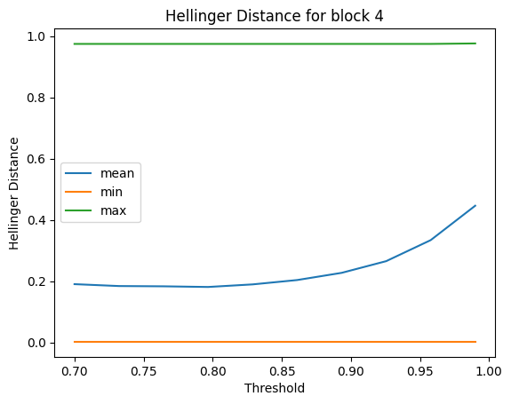

environment = get_environment()
print(f"environment is {environment.name}")environment is local_macenvironment = get_environment()
print(f"environment is {environment.name}")environment is local_macdevice = 'cuda' if torch.cuda.is_available() else 'cpu'
ts = TinyShakespeareDataSet(cache_file=environment.code_root / 'nbs/artifacts/input.txt')
m, tokenizer = create_model_and_tokenizer(
saved_model_filename=environment.code_root / 'nbs/artifacts/shakespeare-20231112.pt',
dataset=ts,
device=device,
)
_, val_data = split_text_dataset(ts.text, tokenizer, train_pct=0.9, device=device)
encoding_helpers = EncodingHelpers(tokenizer, device)
accessors = TransformerAccessors(m, device)print(f"device is {device}")device is cpustrings10 = all_unique_substrings(ts.text, 10)torch.manual_seed(1337)
n_samples = 20000
indices = torch.randperm(len(strings10))[:n_samples]
strings20k = [strings10[i.item()] for i in indices]# Create a sample of 500 strings
sample_size = 500
strings_sample = strings20k[:sample_size]# TODO: put this in a common component
def get_model_outputs(prompts: Sequence[str], encoding_helpers: EncodingHelpers):
# Compute the model's predictions:
tokens = encoding_helpers.tokenize_strings(prompts)
logits, _ = m(tokens)
logits = LogitsWrapper(logits, encoding_helpers.tokenizer)
return [topk_tokens[-1] for topk_tokens in logits.topk_tokens(k=10)]This uses the output of ConsineSimilarityExperiment.
results_folder = environment.data_root / 'cosine_sim_results/large_files/slen10/'
n_batches = 8590
n_queries = 20000next_token_map10 = build_next_token_map(ts.text, 10, tokenizer.vocab_size, tokenizer.stoi)# This is slow - prefer using pre-filtering and then using filter_on_prefiltered_results()
def filter_across_batches(
get_batch: Callable[[int], torch.Tensor],
n_batches: int,
filter_fn: Callable[[torch.Tensor], torch.Tensor],
n_queries: int,
):
total_count = 0
matching_indices = [[] for _ in range(n_queries)]
for batch_idx in range(n_batches):
batch = get_batch(batch_idx)
batch_size, n_queries_batch = batch.shape
assert n_queries_batch == n_queries
filtered = filter_fn(batch)
nonzeros = torch.nonzero(filtered)
for i in range(nonzeros.shape[0]):
idx_in_batch, query_idx = nonzeros[i, :]
matching_indices[query_idx.item()].append(total_count + idx_in_batch.item())
total_count += batch_size
return matching_indices# Tests for filter_across_batches()
batches = [
torch.tensor([
[0.0, 0.6, 0.4, 0.3],
[0.1, 0.3, 0.5, 0.1],
[0.0, 0.1, 0.8, 0.0],
]),
torch.tensor([
[0.7, 0.2, 0.6, 0.3],
[0.1, 0.8, 0.2, 0.8],
]),
]
result = filter_across_batches(
get_batch=lambda i: batches[i],
n_batches=len(batches),
filter_fn=lambda batch: batch > 0.5,
n_queries=4,
)
test_eq(result, [
[3,],
[0, 4],
[2, 3],
[4],
])First, pre-filter the results for the first 500 queries to just the values > 0.7.
load_batch = lambda batch_idx: torch.load(results_folder / f'cosine_sim_ffwd_out_{batch_idx:05d}.pt')
q_idx_start = 0
q_idx_end = 500
threshold = 0.7# Slow, takes ~15 mins to run
prefiltered_result = pre_filter_cosine_sim_results(
load_batch=load_batch,
n_batches=n_batches,
q_idx_start=q_idx_start,
q_idx_end=q_idx_end,
threshold=threshold,
)Save the prefiltered results
prefiltered_results_folder = results_folder / f'prefiltered_{threshold}'
prefiltered_results_folder.mkdir(exist_ok=True)def prefiltered_filename(q_idx: int, block_idx: int) -> Path:
return prefiltered_results_folder / f'cosine_sim_ffwd_out_{q_idx:05d}_{block_idx:02d}.pt'for q_idx in tqdm(range(q_idx_start, q_idx_end)):
for block_idx in range(n_layer):
torch.save(
prefiltered_result[q_idx - q_idx_start][block_idx],
prefiltered_filename(q_idx, block_idx),
)# Very slow - takes about 10 hours to run
load_batch = lambda batch_idx: torch.load(results_folder / f'cosine_sim_ffwd_out_{batch_idx:05d}.pt')
q_idx_start = 500
q_idx_end = n_queries
threshold = 0.7
prefilter_batch_size = 500
q_idx = q_idx_start
with tqdm(total=q_idx_end - q_idx_start) as pbar:
while q_idx < q_idx_end:
q_idx_end_batch = min(q_idx + prefilter_batch_size, q_idx_end)
prefiltered_result = pre_filter_cosine_sim_results(
load_batch=load_batch,
n_batches=n_batches,
q_idx_start=q_idx,
q_idx_end=q_idx_end_batch,
threshold=threshold,
)
for q_idx_batch in range(q_idx, q_idx_end_batch):
for block_idx in range(n_layer):
torch.save(
prefiltered_result[q_idx_batch - q_idx][block_idx],
prefiltered_filename(q_idx_batch, block_idx),
)
q_idx = q_idx_end_batch
pbar.update(q_idx_end_batch - q_idx)First, collect some stats about the results
def filter_result_stats(
filter_results: List[List[int]],
):
lens = [len(result) for result in filter_results]
return {
'min': min(lens),
'max': max(lens),
'mean': np.mean(lens),
'std': np.std(lens),
}def get_matching_strings(
filter_result: List[List[int]],
strings: Sequence[str],
):
return [
[
strings[j]
for j in filter_result[i]
]
for i in range(len(filter_result))
]# TODO: put this in a common component
def analyze_simulate_results(sim_freqs, model_outputs):
assert len(sim_freqs) == len(model_outputs)
topn_matches = [0 for _ in range(10)]
topn_matches_any_order = [0 for _ in range(10)]
for i, sim_freq in enumerate(sim_freqs):
sim_output = top_nonzero_tokens(sim_freq, encoding_helpers.tokenizer.itos)[:10]
model_output = model_outputs[i]
sim_tokens, _ = zip(*sim_output)
model_tokens, _ = zip(*model_output)
n = min(len(sim_tokens), len(model_tokens))
for j in range(n):
if sim_tokens[j] == model_tokens[j]:
topn_matches[j] += 1
if set(sim_tokens[:j+1]) == set(model_tokens[:j+1]):
topn_matches_any_order[j] += 1
return topn_matches, topn_matches_any_orderdef analyze_dataset(
matching_indices: Sequence[Sequence[int]],
n_queries: int,
all_strings: Sequence[str],
next_token_map: Dict[str, torch.Tensor],
model_outputs: Sequence[Sequence[Tuple[str, float]]],
):
print(filter_result_stats(matching_indices))
filter_results_strings = get_matching_strings(matching_indices, all_strings)
filter_result_freqs = [
torch.stack([
next_token_map[matching_string]
for matching_string in matching_strings
]).sum(dim=0)
for matching_strings in filter_results_strings
]
filter_result_probs = [
freqs / freqs.sum()
for freqs in filter_result_freqs
]
topn_matches, topn_matches_any_order = analyze_simulate_results(filter_result_probs, model_outputs)
for i in range(10):
print(f"Top {i+1} matches: {topn_matches[i] / n_queries:.3f}")
print(f"Top {i+1} matches (any order): {topn_matches_any_order[i] / n_queries:.3f}")
return filter_result_freqsn_queries_sample = 500
q_idx_start = 0
q_idx_end = n_queries_sample
model_outputs_sample = get_model_outputs(strings20k[:n_queries_sample], encoding_helpers)block_idx = 5
ffwd5_freqs = analyze_dataset(
matching_indices=filter_on_prefiltered_results(
load_prefiltered=lambda q_idx: torch.load(prefiltered_filename(q_idx, block_idx)),
q_idx_start=q_idx_start,
q_idx_end=q_idx_end,
filter_fn=lambda values: values > 0.89,
),
n_queries=n_queries_sample,
all_strings=strings10,
next_token_map=next_token_map10,
model_outputs=model_outputs_sample,
){'min': 1, 'max': 30527, 'mean': 2143.642, 'std': 5838.287069495299}
Top 1 matches: 0.788
Top 1 matches (any order): 0.788
Top 2 matches: 0.424
Top 2 matches (any order): 0.504
Top 3 matches: 0.268
Top 3 matches (any order): 0.334
Top 4 matches: 0.186
Top 4 matches (any order): 0.260
Top 5 matches: 0.164
Top 5 matches (any order): 0.198
Top 6 matches: 0.088
Top 6 matches (any order): 0.134
Top 7 matches: 0.076
Top 7 matches (any order): 0.102
Top 8 matches: 0.058
Top 8 matches (any order): 0.086
Top 9 matches: 0.054
Top 9 matches (any order): 0.062
Top 10 matches: 0.046
Top 10 matches (any order): 0.040block_idx = 4
ffwd4_freqs = analyze_dataset(
matching_indices=filter_on_prefiltered_results(
load_prefiltered=lambda q_idx: torch.load(prefiltered_filename(q_idx, block_idx)),
q_idx_start=q_idx_start,
q_idx_end=q_idx_end,
filter_fn=lambda values: values > 0.81,
),
n_queries=n_queries_sample,
all_strings=strings10,
next_token_map=next_token_map10,
model_outputs=model_outputs_sample,
){'min': 1, 'max': 61657, 'mean': 3283.636, 'std': 9950.066907488814}
Top 1 matches: 0.790
Top 1 matches (any order): 0.790
Top 2 matches: 0.450
Top 2 matches (any order): 0.518
Top 3 matches: 0.270
Top 3 matches (any order): 0.318
Top 4 matches: 0.202
Top 4 matches (any order): 0.232
Top 5 matches: 0.170
Top 5 matches (any order): 0.176
Top 6 matches: 0.106
Top 6 matches (any order): 0.142
Top 7 matches: 0.096
Top 7 matches (any order): 0.108
Top 8 matches: 0.072
Top 8 matches (any order): 0.080
Top 9 matches: 0.048
Top 9 matches (any order): 0.056
Top 10 matches: 0.036
Top 10 matches (any order): 0.032block_idx = 3
ffwd3_freqs = analyze_dataset(
matching_indices=filter_on_prefiltered_results(
load_prefiltered=lambda q_idx: torch.load(prefiltered_filename(q_idx, block_idx)),
q_idx_start=q_idx_start,
q_idx_end=q_idx_end,
filter_fn=lambda values: values > 0.76,
),
n_queries=n_queries_sample,
all_strings=strings10,
next_token_map=next_token_map10,
model_outputs=model_outputs_sample,
){'min': 1, 'max': 9100, 'mean': 624.342, 'std': 1387.415385901425}
Top 1 matches: 0.804
Top 1 matches (any order): 0.804
Top 2 matches: 0.478
Top 2 matches (any order): 0.542
Top 3 matches: 0.304
Top 3 matches (any order): 0.380
Top 4 matches: 0.234
Top 4 matches (any order): 0.274
Top 5 matches: 0.192
Top 5 matches (any order): 0.228
Top 6 matches: 0.134
Top 6 matches (any order): 0.184
Top 7 matches: 0.112
Top 7 matches (any order): 0.114
Top 8 matches: 0.084
Top 8 matches (any order): 0.104
Top 9 matches: 0.066
Top 9 matches (any order): 0.082
Top 10 matches: 0.050
Top 10 matches (any order): 0.060block_idx = 2
ffwd2_freqs = analyze_dataset(
matching_indices=filter_on_prefiltered_results(
load_prefiltered=lambda q_idx: torch.load(prefiltered_filename(q_idx, block_idx)),
q_idx_start=q_idx_start,
q_idx_end=q_idx_end,
filter_fn=lambda values: values > 0.85,
),
n_queries=n_queries_sample,
all_strings=strings10,
next_token_map=next_token_map10,
model_outputs=model_outputs_sample,
){'min': 1, 'max': 7457, 'mean': 446.792, 'std': 995.0116103523616}
Top 1 matches: 0.808
Top 1 matches (any order): 0.808
Top 2 matches: 0.458
Top 2 matches (any order): 0.496
Top 3 matches: 0.298
Top 3 matches (any order): 0.376
Top 4 matches: 0.222
Top 4 matches (any order): 0.256
Top 5 matches: 0.182
Top 5 matches (any order): 0.196
Top 6 matches: 0.102
Top 6 matches (any order): 0.158
Top 7 matches: 0.112
Top 7 matches (any order): 0.132
Top 8 matches: 0.090
Top 8 matches (any order): 0.096
Top 9 matches: 0.074
Top 9 matches (any order): 0.070
Top 10 matches: 0.042
Top 10 matches (any order): 0.056block_idx = 1
ffwd1_freqs = analyze_dataset(
matching_indices=filter_on_prefiltered_results(
load_prefiltered=lambda q_idx: torch.load(prefiltered_filename(q_idx, block_idx)),
q_idx_start=q_idx_start,
q_idx_end=q_idx_end,
filter_fn=lambda values: values > 0.94,
),
n_queries=n_queries_sample,
all_strings=strings10,
next_token_map=next_token_map10,
model_outputs=model_outputs_sample,
){'min': 1, 'max': 5070, 'mean': 369.31, 'std': 755.4999099271952}
Top 1 matches: 0.750
Top 1 matches (any order): 0.750
Top 2 matches: 0.416
Top 2 matches (any order): 0.470
Top 3 matches: 0.236
Top 3 matches (any order): 0.312
Top 4 matches: 0.192
Top 4 matches (any order): 0.218
Top 5 matches: 0.172
Top 5 matches (any order): 0.172
Top 6 matches: 0.102
Top 6 matches (any order): 0.126
Top 7 matches: 0.086
Top 7 matches (any order): 0.102
Top 8 matches: 0.068
Top 8 matches (any order): 0.078
Top 9 matches: 0.060
Top 9 matches (any order): 0.076
Top 10 matches: 0.050
Top 10 matches (any order): 0.060block_idx = 0
ffwd0_freqs = analyze_dataset(
matching_indices=filter_on_prefiltered_results(
load_prefiltered=lambda q_idx: torch.load(prefiltered_filename(q_idx, block_idx)),
q_idx_start=q_idx_start,
q_idx_end=q_idx_end,
filter_fn=lambda values: values > 0.95,
),
n_queries=n_queries_sample,
all_strings=strings10,
next_token_map=next_token_map10,
model_outputs=model_outputs_sample,
){'min': 1, 'max': 5078, 'mean': 333.072, 'std': 663.3523097238751}
Top 1 matches: 0.754
Top 1 matches (any order): 0.754
Top 2 matches: 0.410
Top 2 matches (any order): 0.472
Top 3 matches: 0.252
Top 3 matches (any order): 0.316
Top 4 matches: 0.192
Top 4 matches (any order): 0.216
Top 5 matches: 0.146
Top 5 matches (any order): 0.170
Top 6 matches: 0.108
Top 6 matches (any order): 0.128
Top 7 matches: 0.092
Top 7 matches (any order): 0.100
Top 8 matches: 0.072
Top 8 matches (any order): 0.072
Top 9 matches: 0.068
Top 9 matches (any order): 0.072
Top 10 matches: 0.046
Top 10 matches (any order): 0.056total_freqs = [
(
0.01*ffwd0_freqs[i] +
0.01*ffwd1_freqs[i] +
0.1*ffwd2_freqs[i] +
1.5*ffwd3_freqs[i] +
4*ffwd4_freqs[i] +
0.01*ffwd5_freq
)
for i, ffwd5_freq in enumerate(ffwd5_freqs)
]
total_probs = [
freqs / freqs.sum()
for freqs in total_freqs
]
topn_matches, topn_matches_any_order = analyze_simulate_results(total_probs, model_outputs_sample)
for i in range(10):
print(f"Top {i+1} matches: {topn_matches[i] / n_queries_sample:.3f}")
print(f"Top {i+1} matches (any order): {topn_matches_any_order[i] / n_queries_sample:.3f}")Top 1 matches: 0.796
Top 1 matches (any order): 0.796
Top 2 matches: 0.500
Top 2 matches (any order): 0.572
Top 3 matches: 0.326
Top 3 matches (any order): 0.382
Top 4 matches: 0.262
Top 4 matches (any order): 0.308
Top 5 matches: 0.192
Top 5 matches (any order): 0.226
Top 6 matches: 0.144
Top 6 matches (any order): 0.186
Top 7 matches: 0.122
Top 7 matches (any order): 0.144
Top 8 matches: 0.092
Top 8 matches (any order): 0.104
Top 9 matches: 0.076
Top 9 matches (any order): 0.084
Top 10 matches: 0.048
Top 10 matches (any order): 0.054model_outputs = get_model_outputs(strings20k, encoding_helpers)class GetPrefilteredDataFunction(Protocol):
def __call__(self, q_idx: int, block_idx: int) -> Path:
...
def freqs_from_similar_strings(
get_prefiltered_data: GetPrefilteredDataFunction,
n_queries: int,
next_token_map: Dict[str, torch.Tensor],
all_strings: Sequence[str],
similarity_thresholds=[0.95, 0.94, 0.85, 0.76, 0.81, 0.89],
) -> torch.Tensor:
"""Builds a frequency distribution for the next token for each block in the
model by doing the following for each query:
- Finding the strings that pass a similarity threshold
- Looking up the frequency distribution for each similar string
- Summing frequency distributions across all strings
"""
freqs_list: List[List[torch.Tensor]] = [[] for _ in range(n_layer)]
for block_idx in tqdm(range(n_layer)):
# For each query, find the indices into `all_strings` that match the filter
similar_indices = filter_on_prefiltered_results(
load_prefiltered=lambda q_idx: get_prefiltered_data(q_idx, block_idx),
q_idx_start=0,
q_idx_end=n_queries,
filter_fn=lambda values: values > similarity_thresholds[block_idx],
)
# Turn the indices into strings
similar_strings = get_matching_strings(similar_indices, all_strings)
# At this point we've got a one list of matching strings for each
# query. Now we build a frequency distribution from these strings.
freqs_list[block_idx] = [
torch.stack( # Stack the frequency distributions for each string
[
next_token_map[string]
for string in strings
]
).sum(dim=0) # Sum across all strings
for strings in similar_strings
]
# Stack the frequency distributions for each block into a single tensor.
freqs = torch.stack(
[torch.stack(freqs_list[block_idx]) for block_idx in range(n_layer)]
)
return freqsdef get_prefiltered_data(q_idx: int, block_idx: int) -> Path:
return torch.load(prefiltered_filename(q_idx, block_idx))# Slow - takes about 7 minutes to run
n_queries = 20000
ffwd_freqs = freqs_from_similar_strings(
get_prefiltered_data=get_prefiltered_data,
n_queries=n_queries,
next_token_map=next_token_map10,
all_strings=strings10,
)ffwd_freqs.shape, len(model_outputs)(torch.Size([6, 20000, 65]), 20000)(results_folder / 'learn_coefficients').mkdir(exist_ok=True)
torch.save(ffwd_freqs, str(results_folder / 'learn_coefficients/ffwd_freqs.pt'))# Load ffwd_freqs from disk
ffwd_freqs = torch.load(results_folder / 'learn_coefficients/ffwd_freqs.pt')# Check that we still get the same results for the first 500
hand_rolled_coeffs = torch.tensor([0.01, 0.01, 0.1, 1.5, 4, 0.01]).unsqueeze(dim=1).unsqueeze(dim=2) # (n_layer, 1, 1)
total_freqs = (ffwd_freqs[:, :500, :] * hand_rolled_coeffs).sum(dim=0)
total_probs = total_freqs / total_freqs.sum(dim=-1, keepdim=True)
topn_matches, topn_matches_any_order = analyze_simulate_results(total_probs, model_outputs[:500])
for i in range(10):
print(f"Top {i+1} matches: {topn_matches[i] / n_queries_sample:.3f}")
print(f"Top {i+1} matches (any order): {topn_matches_any_order[i] / n_queries_sample:.3f}")Top 1 matches: 0.796
Top 1 matches (any order): 0.796
Top 2 matches: 0.500
Top 2 matches (any order): 0.572
Top 3 matches: 0.326
Top 3 matches (any order): 0.382
Top 4 matches: 0.262
Top 4 matches (any order): 0.308
Top 5 matches: 0.192
Top 5 matches (any order): 0.226
Top 6 matches: 0.144
Top 6 matches (any order): 0.186
Top 7 matches: 0.122
Top 7 matches (any order): 0.144
Top 8 matches: 0.092
Top 8 matches (any order): 0.104
Top 9 matches: 0.076
Top 9 matches (any order): 0.084
Top 10 matches: 0.048
Top 10 matches (any order): 0.054# Look at it for all samples
hand_rolled_coeffs = torch.tensor([0.01, 0.01, 0.1, 1.5, 4, 0.01]).unsqueeze(dim=1).unsqueeze(dim=2) # (n_layer, 1, 1)
total_freqs = (ffwd_freqs * hand_rolled_coeffs).sum(dim=0)
total_probs = total_freqs / total_freqs.sum(dim=-1, keepdim=True)
topn_matches, topn_matches_any_order = analyze_simulate_results(total_probs, model_outputs)
for i in range(10):
print(f"Top {i+1} matches: {topn_matches[i] / ffwd_freqs.shape[1]:.3f}")
print(f"Top {i+1} matches (any order): {topn_matches_any_order[i] / ffwd_freqs.shape[1]:.3f}")Top 1 matches: 0.806
Top 1 matches (any order): 0.806
Top 2 matches: 0.501
Top 2 matches (any order): 0.568
Top 3 matches: 0.342
Top 3 matches (any order): 0.405
Top 4 matches: 0.273
Top 4 matches (any order): 0.337
Top 5 matches: 0.209
Top 5 matches (any order): 0.250
Top 6 matches: 0.168
Top 6 matches (any order): 0.197
Top 7 matches: 0.129
Top 7 matches (any order): 0.153
Top 8 matches: 0.105
Top 8 matches (any order): 0.124
Top 9 matches: 0.086
Top 9 matches (any order): 0.091
Top 10 matches: 0.055
Top 10 matches (any order): 0.057But can we tweak these hand-rolled coefficients for the full data set and get better results?
hand_rolled_coeffs = torch.tensor([0.01, 0.01, 0.1, 1.5, 6, 0.01]).unsqueeze(dim=1).unsqueeze(dim=2) # (n_layer, 1, 1)
total_freqs = (ffwd_freqs * hand_rolled_coeffs).sum(dim=0)
total_probs = total_freqs / total_freqs.sum(dim=-1, keepdim=True)
topn_matches, topn_matches_any_order = analyze_simulate_results(total_probs, model_outputs)
for i in range(10):
print(f"Top {i+1} matches: {topn_matches[i] / ffwd_freqs.shape[1]:.3f}")
print(f"Top {i+1} matches (any order): {topn_matches_any_order[i] / ffwd_freqs.shape[1]:.3f}")Top 1 matches: 0.806
Top 1 matches (any order): 0.806
Top 2 matches: 0.502
Top 2 matches (any order): 0.568
Top 3 matches: 0.342
Top 3 matches (any order): 0.405
Top 4 matches: 0.273
Top 4 matches (any order): 0.336
Top 5 matches: 0.209
Top 5 matches (any order): 0.248
Top 6 matches: 0.167
Top 6 matches (any order): 0.196
Top 7 matches: 0.127
Top 7 matches (any order): 0.152
Top 8 matches: 0.105
Top 8 matches (any order): 0.124
Top 9 matches: 0.086
Top 9 matches (any order): 0.090
Top 10 matches: 0.054
Top 10 matches (any order): 0.057This is the best yet for the full data set, with hand-rolled coefficients. Lets see if we can learn better values.
class ModelSim(torch.nn.Module):
def __init__(self):
super().__init__()
self.coeffs = torch.nn.Parameter(
torch.randn(n_layer, 1, 1, dtype=torch.float32, requires_grad=True)
)
torch.nn.init.normal_(self.coeffs.data, mean=0.0, std=0.2)
def forward(self, freqs: torch.Tensor, model_output: Optional[torch.Tensor]=None):
total_freqs = (freqs * self.coeffs).sum(dim=0)
total_probs = total_freqs / total_freqs.sum(dim=-1, keepdim=True)
if model_output is not None:
loss = torch.norm(total_probs - model_output, dim=-1).sum()
else:
loss = None
return total_probs, loss@torch.no_grad()
def estimate_loss(
model: ModelSim, get_batch_func: GetBatchFunction, eval_iters: int=100
):
out = {}
for split in ["train", "val"]:
losses = torch.zeros(eval_iters)
for k in range(eval_iters):
X, Y = get_batch_func(split=split)
_, loss = model(X, Y)
losses[k] = loss.item()
out[split] = losses.mean()
return outdef get_batch(batch_size: int, freqs: torch.Tensor, split: str='train', train_pct: float=0.9):
n = freqs.shape[1]
assert split in ['train', 'val']
n_train = int(n * train_pct)
low = 0 if split == 'train' else n_train
high = n_train if split == 'train' else n
batch_indices = torch.randint(low=low, high=high, size=(batch_size,), dtype=torch.long)
batch_strings = [strings20k[i.item()] for i in batch_indices]
tokens = encoding_helpers.tokenize_strings(batch_strings)
logits, _ = m(tokens)
model_output = F.softmax(logits[:, -1, :], dim=-1)
return freqs[:, batch_indices, :].clone(), model_output.detach()batch_size=500
eval_iters = 100
get_batch_func = partial(get_batch, batch_size=batch_size, freqs=ffwd_freqs, train_pct=0.9)
estimate_loss_func = partial(estimate_loss, get_batch_func=get_batch_func, eval_iters=eval_iters)_ = torch.manual_seed(1337) # Ensure stable random values
m2 = ModelSim()
_ = m2.to(device)output_dir = results_folder / 'learn_coefficients'
output_dir.mkdir(exist_ok=True)
checkpointer = CheckPointer(output_dir, 'coeff_model_checkpoint', start_num=0)trainer = Trainer(
model=m2,
checkpointer=checkpointer,
get_batch_func=get_batch_func,
estimate_loss_func=estimate_loss_func,
iters_trained=0
)# Get a starting point for the loss
estimate_loss_func(m2){'train': tensor(355.8277), 'val': tensor(390.0248)}# Start with a pretty high learning rate and go for 1000 iterations
learning_rate = 3e-2
optimizer = torch.optim.AdamW(m2.parameters(), lr=learning_rate)
trainer.train(1000, optimizer, eval_interval=500)step 499: train loss 92.6609, val loss 94.5815
step 999: train loss 98.4017, val loss 101.1536Looks like it got to a good place and then quickly overshot. But we dont know if it would have recovered because we stopped after that. Lets keep going and see what happens. We can always backtrack if it keeps getting worse.
trainer.train(5000, optimizer, eval_interval=500)step 499: train loss 98.9964, val loss 99.9345
step 999: train loss 96.9539, val loss 97.9114
step 1499: train loss 90.8162, val loss 92.1447
step 1999: train loss 101.1968, val loss 103.3944
step 2499: train loss 101.8853, val loss 104.0021
step 2999: train loss 100.8928, val loss 104.1331
step 3499: train loss 101.3843, val loss 103.6743
step 3999: train loss 101.1491, val loss 104.2174
step 4499: train loss 101.8255, val loss 103.3381
step 4999: train loss 100.8471, val loss 103.2514OK, that got better but then overshot. Lets go back to the good point and try a smaller learning rate.
checkpoint = torch.load(checkpointer.output_dir / 'coeff_model_checkpoint_000004.pt')
checkpoint['iters'], checkpoint['train_loss'], checkpoint['val_loss'](2500, tensor(90.8162), tensor(92.1447))m2.load_state_dict(checkpoint['model_state_dict'])<All keys matched successfully>Now we are back at a good state.
m2.coeffs.datatensor([[[0.0998]],
[[0.0701]],
[[0.1811]],
[[0.1651]],
[[0.3011]],
[[0.3028]]])total_probs, _ = m2(ffwd_freqs)
topn_matches, topn_matches_any_order = analyze_simulate_results(total_probs, model_outputs)
for i in range(10):
print(f"Top {i+1} matches: {topn_matches[i] / ffwd_freqs.shape[1]:.3f}")
print(f"Top {i+1} matches (any order): {topn_matches_any_order[i] / ffwd_freqs.shape[1]:.3f}")Top 1 matches: 0.781
Top 1 matches (any order): 0.781
Top 2 matches: 0.474
Top 2 matches (any order): 0.549
Top 3 matches: 0.331
Top 3 matches (any order): 0.393
Top 4 matches: 0.266
Top 4 matches (any order): 0.334
Top 5 matches: 0.206
Top 5 matches (any order): 0.245
Top 6 matches: 0.163
Top 6 matches (any order): 0.197
Top 7 matches: 0.129
Top 7 matches (any order): 0.153
Top 8 matches: 0.104
Top 8 matches (any order): 0.124
Top 9 matches: 0.087
Top 9 matches (any order): 0.092
Top 10 matches: 0.057
Top 10 matches (any order): 0.059Not bad but we know we can do better. Lets reduce the learning rate and keep going.
# Reduce the learning rate by one order of magnitude
learning_rate = 3e-3
optimizer = torch.optim.AdamW(m2.parameters(), lr=learning_rate)
# Train some more
trainer.train(2000, optimizer, eval_interval=500)step 499: train loss 86.7844, val loss 85.1847
step 999: train loss 89.7584, val loss 85.5004
step 1499: train loss 86.8556, val loss 85.5568
step 1999: train loss 87.6787, val loss 85.1027m2.coeffs.datatensor([[[ 0.0063]],
[[-0.0217]],
[[ 0.1207]],
[[ 0.2180]],
[[ 0.3632]],
[[ 0.3682]]])total_probs, _ = m2(ffwd_freqs)
topn_matches, topn_matches_any_order = analyze_simulate_results(total_probs, model_outputs)
for i in range(10):
print(f"Top {i+1} matches: {topn_matches[i] / ffwd_freqs.shape[1]:.3f}")
print(f"Top {i+1} matches (any order): {topn_matches_any_order[i] / ffwd_freqs.shape[1]:.3f}")Top 1 matches: 0.795
Top 1 matches (any order): 0.795
Top 2 matches: 0.486
Top 2 matches (any order): 0.558
Top 3 matches: 0.333
Top 3 matches (any order): 0.397
Top 4 matches: 0.268
Top 4 matches (any order): 0.338
Top 5 matches: 0.206
Top 5 matches (any order): 0.250
Top 6 matches: 0.166
Top 6 matches (any order): 0.199
Top 7 matches: 0.127
Top 7 matches (any order): 0.151
Top 8 matches: 0.104
Top 8 matches (any order): 0.124
Top 9 matches: 0.085
Top 9 matches (any order): 0.090
Top 10 matches: 0.052
Top 10 matches (any order): 0.058Doing well. Lets try a few more rounds at the same rate.
trainer.train(2000, optimizer, eval_interval=500)step 499: train loss 88.2698, val loss 85.8976
step 999: train loss 111.8359, val loss 105.2479
step 1499: train loss 84.7038, val loss 85.9471
step 1999: train loss 84.9063, val loss 85.6737It got lost but came back to a good spot. It hasnt made a ton of progress, though, so may be stuck. Lets try an even smaller learning rate.
# Go down one more order of magnitude
learning_rate = 3e-4
optimizer = torch.optim.AdamW(m2.parameters(), lr=learning_rate)
# Train some more
trainer.train(2000, optimizer, eval_interval=500)step 499: train loss 80.4703, val loss 81.8304
step 999: train loss 80.1729, val loss 80.9812
step 1499: train loss 79.5038, val loss 81.0121
step 1999: train loss 79.6113, val loss 81.1012Going well. Lets let it run a bit more to see if there is more to be gained at this learning rate.
# Train some more
trainer.train(5000, optimizer, eval_interval=500)step 499: train loss 79.9726, val loss 80.9605
step 999: train loss 79.8885, val loss 80.7976
step 1499: train loss 79.4328, val loss 80.5349
step 1999: train loss 79.6406, val loss 80.7106
step 2499: train loss 78.8512, val loss 79.3027
step 2999: train loss 92.4660, val loss 84.4240
step 3499: train loss 88.8365, val loss 85.2693
step 3999: train loss 89.9178, val loss 84.7041
step 4499: train loss 89.9341, val loss 85.5066
step 4999: train loss 90.7773, val loss 84.8867That got better but then went off the rails. Lets go back to the best checkpoint.
checkpoint = torch.load(checkpointer.output_dir / 'coeff_model_checkpoint_000028.pt')
checkpoint['iters'], checkpoint['train_loss'], checkpoint['val_loss'](14500, tensor(78.8512), tensor(79.3027))m2.load_state_dict(checkpoint['model_state_dict'])<All keys matched successfully>m2.coeffs.datatensor([[[ 3.8330e-03]],
[[-1.5296e-03]],
[[-2.2343e-04]],
[[ 9.7601e-02]],
[[ 7.6696e-01]],
[[ 1.0677e-01]]])total_probs, _ = m2(ffwd_freqs)
topn_matches, topn_matches_any_order = analyze_simulate_results(total_probs, model_outputs)
for i in range(10):
print(f"Top {i+1} matches: {topn_matches[i] / ffwd_freqs.shape[1]:.3f}")
print(f"Top {i+1} matches (any order): {topn_matches_any_order[i] / ffwd_freqs.shape[1]:.3f}")Top 1 matches: 0.802
Top 1 matches (any order): 0.802
Top 2 matches: 0.497
Top 2 matches (any order): 0.566
Top 3 matches: 0.344
Top 3 matches (any order): 0.405
Top 4 matches: 0.275
Top 4 matches (any order): 0.335
Top 5 matches: 0.207
Top 5 matches (any order): 0.246
Top 6 matches: 0.166
Top 6 matches (any order): 0.196
Top 7 matches: 0.127
Top 7 matches (any order): 0.148
Top 8 matches: 0.106
Top 8 matches (any order): 0.123
Top 9 matches: 0.085
Top 9 matches (any order): 0.086
Top 10 matches: 0.052
Top 10 matches (any order): 0.055Thats nearly as good as the hand-rolled coefficients. Lets try a few more rounds at a smaller learning rate.
# Go down one more order of magnitude
learning_rate = 3e-5
optimizer = torch.optim.AdamW(m2.parameters(), lr=learning_rate)
# Train some more
trainer.train(5000, optimizer, eval_interval=500)step 499: train loss 79.0625, val loss 79.1941
step 999: train loss 78.2563, val loss 79.1195
step 1499: train loss 78.3124, val loss 78.8700
step 1999: train loss 78.4172, val loss 79.0324
step 2499: train loss 77.7076, val loss 78.5610
step 2999: train loss 78.0883, val loss 77.9647
step 3499: train loss 76.2281, val loss 76.7733
step 3999: train loss 76.0516, val loss 77.5841
step 4499: train loss 76.8096, val loss 77.2572
step 4999: train loss 76.8454, val loss 77.1808Some improvement! Not clear if its stabilized or not, so lets keep going.
trainer.train(5000, optimizer, eval_interval=500)step 499: train loss 76.4978, val loss 77.1828
step 999: train loss 77.1313, val loss 77.3532
step 1499: train loss 76.6558, val loss 77.2998
step 1999: train loss 76.8978, val loss 77.4199
step 2499: train loss 76.5466, val loss 77.0944
step 2999: train loss 76.1288, val loss 76.6329
step 3499: train loss 76.5751, val loss 77.8199
step 3999: train loss 76.8902, val loss 77.1575
step 4499: train loss 76.8581, val loss 77.5016
step 4999: train loss 76.1585, val loss 77.7288OK, doesnt seem to be going anywhere. Lets go back to the best checkpoint.
checkpoint = torch.load(checkpointer.output_dir / 'coeff_model_checkpoint_000041.pt')
checkpoint['iters'], checkpoint['train_loss'], checkpoint['val_loss'](21000, tensor(76.0516), tensor(77.5841))m2.coeffs.datatensor([[[ 4.6905e-03]],
[[-1.5016e-03]],
[[ 2.6866e-04]],
[[ 1.2218e-01]],
[[ 8.1634e-01]],
[[ 7.6261e-05]]])total_probs, _ = m2(ffwd_freqs)
topn_matches, topn_matches_any_order = analyze_simulate_results(total_probs, model_outputs)
for i in range(10):
print(f"Top {i+1} matches: {topn_matches[i] / ffwd_freqs.shape[1]:.3f}")
print(f"Top {i+1} matches (any order): {topn_matches_any_order[i] / ffwd_freqs.shape[1]:.3f}")Top 1 matches: 0.806
Top 1 matches (any order): 0.806
Top 2 matches: 0.501
Top 2 matches (any order): 0.566
Top 3 matches: 0.341
Top 3 matches (any order): 0.402
Top 4 matches: 0.270
Top 4 matches (any order): 0.334
Top 5 matches: 0.205
Top 5 matches (any order): 0.244
Top 6 matches: 0.163
Top 6 matches (any order): 0.193
Top 7 matches: 0.123
Top 7 matches (any order): 0.148
Top 8 matches: 0.103
Top 8 matches (any order): 0.122
Top 9 matches: 0.085
Top 9 matches (any order): 0.088
Top 10 matches: 0.053
Top 10 matches (any order): 0.056This is really, really close to the best hand-rolled coefficients. It doesnt seem to be getting better so lets stop here.
What if we initialize with the hand-rolled weights and see if it can improve that?
m3 = ModelSim()
m3.coeffs = torch.nn.Parameter(torch.tensor([0.01, 0.01, 0.1, 1.5, 6, 0.01]).unsqueeze(dim=1).unsqueeze(dim=2))
m3.coeffs.shapetorch.Size([6, 1, 1])output_dir = results_folder / 'learn_coefficients'
output_dir.mkdir(exist_ok=True)
checkpointer = CheckPointer(output_dir, 'coeff_model_hand_rolled_checkpoint', start_num=0)trainer = Trainer(
model=m3,
checkpointer=checkpointer,
get_batch_func=get_batch_func,
estimate_loss_func=estimate_loss_func,
iters_trained=0
)# Get a starting point for the loss
estimate_loss_func(m3){'train': tensor(77.4965), 'val': tensor(78.0544)}# Begin with a moderate learning rate
learning_rate = 3e-4
optimizer = torch.optim.AdamW(m3.parameters(), lr=learning_rate)
trainer.train(1000, optimizer, eval_interval=500)step 499: train loss 76.9864, val loss 77.7938
step 999: train loss 76.9611, val loss 77.3218Very slightly better, but doesnt seem to be going anywhere. Lets reduce the learning rate and run for longer.
learning_rate = 3e-5
optimizer = torch.optim.AdamW(m3.parameters(), lr=learning_rate)
trainer.train(5000, optimizer, eval_interval=500)step 499: train loss 76.7579, val loss 77.3010
step 999: train loss 76.2980, val loss 77.7475
step 1499: train loss 76.2058, val loss 77.4439
step 1999: train loss 76.5784, val loss 76.7124
step 2499: train loss 76.6791, val loss 77.5712
step 2999: train loss 76.7577, val loss 77.4296
step 3499: train loss 76.3487, val loss 77.2223
step 3999: train loss 76.9857, val loss 77.4700
step 4499: train loss 77.6480, val loss 77.1776
step 4999: train loss 76.2195, val loss 76.9608Slightly better but does not seem to be improving. This is probably about as good as it gets. Lets see where we ended up. |
m3.coeffs.datatensor([[[ 3.4375e-02]],
[[-1.1588e-02]],
[[-6.7676e-04]],
[[ 1.2653e+00]],
[[ 6.1962e+00]],
[[ 4.2160e-04]]])total_probs, _ = m3(ffwd_freqs)
topn_matches, topn_matches_any_order = analyze_simulate_results(total_probs, model_outputs)
for i in range(10):
print(f"Top {i+1} matches: {topn_matches[i] / ffwd_freqs.shape[1]:.3f}")
print(f"Top {i+1} matches (any order): {topn_matches_any_order[i] / ffwd_freqs.shape[1]:.3f}")Top 1 matches: 0.806
Top 1 matches (any order): 0.806
Top 2 matches: 0.501
Top 2 matches (any order): 0.566
Top 3 matches: 0.340
Top 3 matches (any order): 0.402
Top 4 matches: 0.271
Top 4 matches (any order): 0.335
Top 5 matches: 0.206
Top 5 matches (any order): 0.245
Top 6 matches: 0.163
Top 6 matches (any order): 0.193
Top 7 matches: 0.123
Top 7 matches (any order): 0.147
Top 8 matches: 0.104
Top 8 matches (any order): 0.121
Top 9 matches: 0.084
Top 9 matches (any order): 0.087
Top 10 matches: 0.053
Top 10 matches (any order): 0.055Very similar to what the model got to from random initialization. And also just a hair worse than the hand-rolled coefficients. Theres probably not much more juice to squeeze out of this.
batch_histories_dir = environment.data_root / 'model-training/20231112-training/batch_histories'
test_eq(batch_histories_dir.exists(), True)Based on the training log, the final model we ended up using is from the checkpoint file shakespeare_checkpoint_000008.pt. And it was a straight succession of training runs to get to that point (no backtracking to intermediate checkpoints). So the relevant history is just all the batch histories up to the final checkpoint.
batch_history_files = [
'batch_history_0000.pt',
'batch_history_0001.pt',
'batch_history_0002.pt',
'batch_history_0003.pt',
'batch_history_0004.pt',
'batch_history_0005.pt',
'batch_history_0006.pt',
'batch_history_0007.pt',
'batch_history_0008.pt',
]full_history = torch.cat([
torch.load(batch_histories_dir / batch_history_file)['batch_history']
for batch_history_file in batch_history_files
], dim=0)
full_history.shapetorch.Size([4500, 64, 256])The training process used a batch size of 64. So the shape above indicates we did 4500 iterations with 64 strings per iteration. The grouping into batches isnt meaningful, so we can just combine the first two dimensions.
assert full_history.shape[-1] == block_size
full_history = full_history.reshape(-1, block_size)
full_history.shapetorch.Size([288000, 256])# The history data consists of tokens. Now we turn those into strings.
# We'll create a map of unique strings to the count of times they were
# trained on.
strings_trained_on = defaultdict(int)
n_strings, _ = full_history.shape
for i in range(n_strings):
string = encoding_helpers.stringify_tokens(full_history[i, :])
strings_trained_on[string] += 1
strings_trained_on.default_factory = Nonelen(strings_trained_on)250403# Pre-compute some things that will make later lookups faster
# All the evaluation in this notebook is done on length 10 strings
slen = 10
# All length 10 strings that appeared at the start of any training string
prefixes_trained_on = defaultdict(int)
for string, count in strings_trained_on.items():
prefixes_trained_on[string[:slen]] += count
prefixes_trained_on.default_factory = None
# All length 10 strings that appeared at the end of any training string
suffixes_trained_on = defaultdict(int)
for string, count in strings_trained_on.items():
suffixes_trained_on[string[-slen:]] += count
suffixes_trained_on.default_factory = None
# All length 10 strings that appeared anywhere in any training string
substrings_trained_on = defaultdict(int)
for string, count in strings_trained_on.items():
for substring in all_unique_substrings(string, 10):
substrings_trained_on[substring] += count
substrings_trained_on.default_factory = None
len(prefixes_trained_on), len(suffixes_trained_on), len(substrings_trained_on)(221305, 221236, 780165)def filter_by_trained_on(
strings: Sequence[str],
trained_on: Dict[str, int],
) -> Tuple[List[str], torch.Tensor]:
strings_used_in_training = []
indicies_used_in_training = []
for i, string in enumerate(strings):
if string in trained_on:
strings_used_in_training.append(string)
indicies_used_in_training.append(i)
return strings_used_in_training, torch.tensor(
indicies_used_in_training, dtype=torch.long
)def eval_on_subset(
indices_to_consider: torch.Tensor,
model_outputs: Sequence[Sequence[Tuple[str, float]]],
ffwd_freqs: torch.Tensor,
coeffs: torch.Tensor,
):
model_outputs_subset = []
for i in indices_to_consider:
model_outputs_subset.append(model_outputs[i.item()])
n_items = len(indices_to_consider)
total_freqs = (ffwd_freqs[:, indices_to_consider, :] * coeffs).sum(dim=0)
total_probs = total_freqs / total_freqs.sum(dim=-1, keepdim=True)
topn_matches, topn_matches_any_order = analyze_simulate_results(total_probs, model_outputs_subset)
for i in range(10):
print(f"Top {i+1} matches: {topn_matches[i] / n_items:.3f}")
print(f"Top {i+1} matches (any order): {topn_matches_any_order[i] / n_items:.3f}")hand_rolled_coeffs = torch.tensor([0.01, 0.01, 0.1, 1.5, 6, 0.01]).unsqueeze(dim=1).unsqueeze(dim=2) # (n_layer, 1, 1)# Prefixes
strings_used_in_training, indices_used_in_training = filter_by_trained_on(
strings20k,
prefixes_trained_on,
)
print(f"{len(strings_used_in_training)} of {len(strings20k)} strings used in training")
eval_on_subset(indices_used_in_training, model_outputs, ffwd_freqs, hand_rolled_coeffs)5132 of 20000 strings used in training
Top 1 matches: 0.810
Top 1 matches (any order): 0.810
Top 2 matches: 0.502
Top 2 matches (any order): 0.570
Top 3 matches: 0.337
Top 3 matches (any order): 0.403
Top 4 matches: 0.271
Top 4 matches (any order): 0.332
Top 5 matches: 0.207
Top 5 matches (any order): 0.253
Top 6 matches: 0.169
Top 6 matches (any order): 0.202
Top 7 matches: 0.126
Top 7 matches (any order): 0.155
Top 8 matches: 0.104
Top 8 matches (any order): 0.129
Top 9 matches: 0.088
Top 9 matches (any order): 0.089
Top 10 matches: 0.055
Top 10 matches (any order): 0.059# Suffixes
strings_used_in_training, indices_used_in_training = filter_by_trained_on(
strings20k,
suffixes_trained_on,
)
print(f"{len(strings_used_in_training)} of {len(strings20k)} strings used in training")
eval_on_subset(indices_used_in_training, model_outputs, ffwd_freqs, hand_rolled_coeffs)5132 of 20000 strings used in training
Top 1 matches: 0.811
Top 1 matches (any order): 0.811
Top 2 matches: 0.497
Top 2 matches (any order): 0.567
Top 3 matches: 0.343
Top 3 matches (any order): 0.403
Top 4 matches: 0.274
Top 4 matches (any order): 0.329
Top 5 matches: 0.206
Top 5 matches (any order): 0.244
Top 6 matches: 0.168
Top 6 matches (any order): 0.193
Top 7 matches: 0.128
Top 7 matches (any order): 0.157
Top 8 matches: 0.107
Top 8 matches (any order): 0.129
Top 9 matches: 0.087
Top 9 matches (any order): 0.089
Top 10 matches: 0.060
Top 10 matches (any order): 0.062Its a huge coincidence that the number of the 20,000 eval strings that appeared as prefixes and the number that appeared as suffixes is 5132. Lets double check that these arent exactly the same.
# Sanity check
strings_used_in_training_prefix, indices_used_in_training_prefix = filter_by_trained_on(
strings20k,
prefixes_trained_on,
)
strings_used_in_training_suffix, indices_used_in_training_suffix = filter_by_trained_on(
strings20k,
suffixes_trained_on,
)
test_eq(all(indices_used_in_training_prefix == indices_used_in_training_suffix), False)These arent the same 5132 strings, so maybe it is just a coincidence. Carrying on
# Substrings anywhere
strings_used_in_training, indices_used_in_training = filter_by_trained_on(
strings20k,
substrings_trained_on,
)
print(f"{len(strings_used_in_training)} of {len(strings20k)} strings used in training")
eval_on_subset(indices_used_in_training, model_outputs, ffwd_freqs, hand_rolled_coeffs)18171 of 20000 strings used in training
Top 1 matches: 0.809
Top 1 matches (any order): 0.809
Top 2 matches: 0.503
Top 2 matches (any order): 0.570
Top 3 matches: 0.344
Top 3 matches (any order): 0.407
Top 4 matches: 0.274
Top 4 matches (any order): 0.337
Top 5 matches: 0.210
Top 5 matches (any order): 0.249
Top 6 matches: 0.168
Top 6 matches (any order): 0.197
Top 7 matches: 0.127
Top 7 matches (any order): 0.153
Top 8 matches: 0.105
Top 8 matches (any order): 0.125
Top 9 matches: 0.088
Top 9 matches (any order): 0.091
Top 10 matches: 0.055
Top 10 matches (any order): 0.057Conclusions:
# What do the model outputs look like?
model_outputs[0][('\n', 0.5250111222267151),
(' ', 0.46654149889945984),
('-', 0.007815942168235779),
("'", 0.00047109558363445103),
('.', 2.7687412512023002e-05),
(',', 1.7208614735864103e-05),
(':', 1.5419789633597247e-05),
('?', 1.3534416211768985e-05),
(';', 9.159703949990217e-06),
('l', 8.144122148223687e-06)]def filter_model_outputs(
model_outputs: Sequence[Sequence[Tuple[str, float]]],
filter_fn: Callable[[Sequence[Tuple[str, float]]], bool],
) -> torch.Tensor:
matching_indices = []
for i, model_output in enumerate(model_outputs):
if filter_fn(model_output):
matching_indices.append(i)
return torch.tensor(matching_indices, dtype=torch.long)matching_indices = filter_model_outputs(
model_outputs,
lambda model_output: model_output[0][1] > 0.99,
)
print(f"{len(matching_indices)} of {len(model_outputs)} string")
eval_on_subset(matching_indices, model_outputs, ffwd_freqs, hand_rolled_coeffs)3057 of 20000 string
Top 1 matches: 0.998
Top 1 matches (any order): 0.998
Top 2 matches: 0.349
Top 2 matches (any order): 0.351
Top 3 matches: 0.137
Top 3 matches (any order): 0.149
Top 4 matches: 0.060
Top 4 matches (any order): 0.062
Top 5 matches: 0.028
Top 5 matches (any order): 0.026
Top 6 matches: 0.020
Top 6 matches (any order): 0.022
Top 7 matches: 0.013
Top 7 matches (any order): 0.012
Top 8 matches: 0.011
Top 8 matches (any order): 0.010
Top 9 matches: 0.010
Top 9 matches (any order): 0.008
Top 10 matches: 0.005
Top 10 matches (any order): 0.004matching_indices = filter_model_outputs(
model_outputs,
lambda model_output: sum([model_output[i][1] for i in range(2)]) > 0.85,
)
print(f"{len(matching_indices)} of {len(model_outputs)} string")
eval_on_subset(matching_indices, model_outputs, ffwd_freqs, hand_rolled_coeffs)10710 of 20000 string
Top 1 matches: 0.936
Top 1 matches (any order): 0.936
Top 2 matches: 0.601
Top 2 matches (any order): 0.652
Top 3 matches: 0.367
Top 3 matches (any order): 0.421
Top 4 matches: 0.256
Top 4 matches (any order): 0.318
Top 5 matches: 0.148
Top 5 matches (any order): 0.182
Top 6 matches: 0.110
Top 6 matches (any order): 0.136
Top 7 matches: 0.082
Top 7 matches (any order): 0.098
Top 8 matches: 0.069
Top 8 matches (any order): 0.087
Top 9 matches: 0.061
Top 9 matches (any order): 0.069
Top 10 matches: 0.023
Top 10 matches (any order): 0.022custom_coeffs = torch.tensor([0.1, 0.1, 15, 10, 1000, 0.1]).unsqueeze(dim=1).unsqueeze(dim=2) # (n_layer, 1, 1)
matching_indices = filter_model_outputs(
model_outputs,
lambda model_output: sum([model_output[i][1] for i in range(2)]) > 0.85,
)
print(f"{len(matching_indices)} of {len(model_outputs)} string")
eval_on_subset(matching_indices, model_outputs, ffwd_freqs, custom_coeffs)10710 of 20000 string
Top 1 matches: 0.939
Top 1 matches (any order): 0.939
Top 2 matches: 0.603
Top 2 matches (any order): 0.652
Top 3 matches: 0.366
Top 3 matches (any order): 0.414
Top 4 matches: 0.252
Top 4 matches (any order): 0.315
Top 5 matches: 0.145
Top 5 matches (any order): 0.178
Top 6 matches: 0.106
Top 6 matches (any order): 0.133
Top 7 matches: 0.077
Top 7 matches (any order): 0.095
Top 8 matches: 0.066
Top 8 matches (any order): 0.085
Top 9 matches: 0.061
Top 9 matches (any order): 0.068
Top 10 matches: 0.023
Top 10 matches (any order): 0.022thresholds = [0.95, 0.94, 0.85, 0.76, 0.81, 0.89]
block_idx = 3
q_idx_start = 0
q_idx_end = 10
matching_strings = []
for block_idx in range(n_layer):
matching_strings.append(
get_matching_strings(
filter_on_prefiltered_results(
load_prefiltered=lambda q_idx: torch.load(prefiltered_filename(q_idx, block_idx)),
q_idx_start=q_idx_start,
q_idx_end=q_idx_end,
filter_fn=lambda values: values > thresholds[block_idx],
),
strings10,
)
)def print_results(q_idx: int, query_string: str, matching_strings):
print(f"Query string: {repr(query_string)[1:-1]}")
max_len = max(
[len(matching_strings[block_idx][q_idx]) for block_idx in range(n_layer)]
)
for i in range(max_len):
line_items = [
matching_strings[block_idx][q_idx][i]
if i < len(matching_strings[block_idx][q_idx])
else ' '
for block_idx in range(n_layer)
]
print(' | '.join([f'{repr(line_item)[1:-1]:>15}' for line_item in line_items]))q_idx=2
print_results(q_idx=q_idx, query_string=strings20k[q_idx], matching_strings=matching_strings)Query string: s eyes may
h, you may | h, you may | h, you may | swords may | swords may | swords may
le: it may | le: it may | le: it may | craft may | craft may | craft may
you, I may | you, I may | swords may | office may | office may | if it may
swords may | swords may | at you may | itness may | ods he may | itness may
at you may | at you may | ering,\nMay | rvices may | itness may | rvices may
hom we may | hom we may | hom we may | r sort may | rvices may | souls may
craft may | craft may | craft may | grant may | pliant may | hat it may
f it\nI may | f it\nI may | office may | pliant may | erhaps\nMay | but it may
office may | office may | e that may | never may | souls may | ourses may
e that may | e that may | s: you may | le joy may | haply may | boughs may
That I may | That I may | y, you may | souls may | grace may | n pity may
en:\nWe may | en:\nWe may | if it may | haply may | alive may | sense may
s: you may | s: you may | ods he may | e lord may | ourses may | s eyes may
y, you may | y, you may | 'd; we may | grace may | tongue may | e case may
if it may | if it may | t thou may | growth may | tments may | as it may
that I may | that I may | itness may | sword may | boughs may | y oath may
you,\nI may | you,\nI may | rvices may | alive may | esence may | heaven may
S:\nYou may | S:\nYou may | sort, may | ourses may | n pity may | al man may
ods he may | ods he may | r sort may | tongue may | years\nMay | nd men may
'd; we may | 'd; we may | l time\nMay | tments may | rosper may | reason may
:\nWhat may | :\nWhat may | grant may | boughs may | ,\nPity may | awares may
ple,\nI may | ple,\nI may | blame\nMay | aft'st may | taking may | bjects may
r: you may | r: you may | olsces\nMay | esence may | \nWomen may | nd now may
t thou may | t thou may | other, may | of men\nMay | liance may | r foes may
itness may | itness may | ence? may | n pity may | write may | bones may
rvices may | rvices may | y,\nYou may | ,\nPity may | e jest may | women may
sort, may | sort, may | honour may | ounsel may | lover may | a time may
r sort may | r sort may | aspect\nMay | \nWomen may | sense may | bility may
r:\nYou may | r:\nYou may | o\nThou may | liance may | s eyes may | ffairs may
grant may | grant may | pliant may | e jest may | es\nAnd may | inkers may
other, may | other, may | never may | lover may | en and may | tleman may
ence? may | ence? may | S:\nShe may | sense may | \nFlies may | y life may
y,\nYou may | y,\nYou may | R:\nShe may | s eyes may | othing may | at men may
honour may | honour may | o?\nShe may | en and may | e case may | nd, it may
o\nThou may | o\nThou may | t:\nShe may | Romeo may | taker may | th him may
pliant may | pliant may | t? She may | \nFlies may | y oath may | e time may
eby he may | eby he may | le joy may | e case may | \nNe'er may | ctions may
never may | never may | !\nLong may | taker may | heaven may | n time may
R:\nYou may | R:\nYou may | of you may | ul war may | nd men may | woman may
S:\nShe may | S:\nShe may | hat we may | as it may | partly may | ied as may
R:\nShe may | R:\nShe may | erhaps\nMay | y oath may | branch may | angers may
o?\nShe may | o?\nShe may | souls may | o York may | reason may | tripes may
t:\nShe may | t:\nShe may | moon,\nMay | \nNe'er may | ems\nAs may |
.\nWhat may | .\nWhat may | n,\nAnd may | heaven may | awares may |
t? She may | t? She may | h.\nAll may | al man may | bjects may |
marry, may | marry, may | te you may | o both may | prayer may |
le joy may | le joy may | d that may | nd men may | nd now may |
!\nLong may | !\nLong may | \nwhich may | partly may | master may |
of you may | of you may | lords, may | reason may | crown may |
hat we may | hat we may | :\nLord may | awares may | r foes may |
souls may | souls may | haply may | bjects may | bones may |
n,\nAnd may | n,\nAnd may | d lord may | prayer may | women may |
h.\nAll may | h.\nAll may | hat it may | nd now may | a time may |
d, the may | d, the may | e lord may | master may | bility may |
te you may | te you may | nd you may | crown may | chance may |
.\nIf I may | .\nIf I may | heart\nMay | r foes may | I now may |
ER:\nHe may | ER:\nHe may | r ever may | bones may | ffairs may |
heed I may | heed I may | grace may | heart may | inkers may |
rds\nWe may | rds\nWe may | growth may | women may | eating may |
d that may | d that may | So she may | a time may | iction may |
\nwhich may | \nwhich may | which may | bility may | there may |
y:\nYou may | y:\nYou may | but it may | chance may | tleman may |
lords, may | lords, may | n thou may | I now may | y life may |
gs the may | gs the may | t they may | ffairs may | haste may |
:\nLord may | :\nLord may | ou, we may | inkers may | faults may |
haply may | haply may | at she may | iction may | th him may |
d lord may | d lord may | sword may | there may | e time may |
m.\nThe may | m.\nThe may | alive may | tleman may | are he may |
hat it may | hat it may | alas, may | y life may | r they may |
'd the may | 'd the may | ,\nThey may | ay she may | ctions may |
ot the may | ot the may | ent we may | at men may | n time may |
M:\nThe may | M:\nThe may | God we may | faults may | enants may |
e lord may | e lord may | d tale may | th him may | woman may |
f, the may | f, the may | ourses may | e time may | ds she may |
nd you may | nd you may | ll, we may | ctions may | ied as may |
nce,\nI may | nce,\nI may | ng, it may | ven so may | angers may |
no; I may | no; I may | RK:\nIt may | n time may | tripes may |
r ever may | r ever may | tongue may | esence\nMay | |
grace may | grace may | ay:\nSo may | enants may | |
growth may | growth may | tments may | woman may | |
r,\nThe may | r,\nThe may | l that may | ds she may | |
how I may | how I may | ' feet\nMay | and so may | |
So she may | So she may | boughs may | ied as may | |
which may | which may | aft'st may | angers may | |
but it may | but it may | o not, may | tripes may | |
n thou may | n thou may | ies\nAs may | | |
, as I may | , as I may | esence may | | |
side I may | side I may | of men\nMay | | |
t they may | t they may | n pity may | | |
ou, we may | ou, we may | years\nMay | | |
at she may | at she may | rosper may | | |
sword may | sword may | e.\nIll may | | |
alive may | alive may | ,\nPity may | | |
for I may | for I may | nails\nMay | | |
alas, may | alas, may | taking may | | |
,\nThey may | ,\nThey may | ounsel may | | |
ent we may | ent we may | Ere we may | | |
God we may | God we may | ng one\nMay | | |
d tale may | d tale may | trick may | | |
ourses may | ourses may | e thou may | | |
EN:\nIt may | EN:\nIt may | reath,\nMay | | |
ll, we may | ll, we may | e, and may | | |
ng, it may | ng, it may | \nWomen may | | |
RK:\nIt may | RK:\nIt may | liance may | | |
tongue may | tongue may | write may | | |
ay:\nSo may | ay:\nSo may | e jest may | | |
tments may | tments may | y,\nTwo may | | |
l that may | l that may | lover may | | |
h you; may | h you; may | sense may | | |
boughs may | boughs may | s eyes may | | |
aft'st may | aft'st may | es\nAnd may | | |
o not, may | o not, may | en and may | | |
ies\nAs may | ies\nAs may | Romeo may | | |
\nIf he may | \nIf he may | \nFlies may | | |
esence may | esence may | te,\nIt may | | |
iew\nHe may | iew\nHe may | y\nThat may | | |
e:\nYou may | e:\nYou may | alone,\nMay | | |
n pity may | n pity may | :\nThat may | | |
me; I may | me; I may | othing may | | |
a man may | a man may | th, we may | | |
rosper may | rosper may | e case may | | |
e.\nIll may | e.\nIll may | taker may | | |
,\nPity may | ,\nPity may | trunk may | | |
taking may | taking may | ing it\nMay | | |
ounsel may | ounsel may | O, how may | | |
here I may | here I may | if he may | | |
Ere we may | Ere we may | ul war may | | |
:\nWhy, may | trick may | as it may | | |
trick may | oe, he may | ay; we may | | |
oe, he may | ,\nThou may | venged may | | |
,\nThou may | e thou may | y oath may | | |
e thou may | e, and may | oenix, may | | |
e, and may | \nWomen may | o York may | | |
\nWomen may | liance may | beside\nMay | | |
liance may | write may | \nNe'er may | | |
write may | e jest may | usband may | | |
e jest may | y,\nTwo may | heaven may | | |
y,\nTwo may | ough I may | :\nThis may | | |
ough I may | lover may | al man may | | |
lover may | sense may | fight,\nMay | | |
sense may | s eyes may | m now,\nMay | | |
s eyes may | es\nAnd may | o both may | | |
es\nAnd may | en and may | rgaret may | | |
en and may | Romeo may | nd men may | | |
Romeo may | \nFlies may | partly may | | |
\nFlies may | te,\nIt may | branch may | | |
te,\nIt may | y\nThat may | reason may | | |
y\nThat may | hich I may | ems\nAs may | | |
hich I may | :\nThat may | ak,\nAs may | | |
:\nThat may | when I may | awares may | | |
when I may | ET:\nIt may | as you may | | |
ET:\nIt may | othing may | arwick may | | |
othing may | ll, he may | ile we may | | |
ll, he may | th, we may | bjects may | | |
th, we may | e case may | prayer may | | |
e case may | :\nIf I may | d land\nMay | | |
:\nIf I may | taker may | nd now may | | |
taker may | trunk may | s\nWhat may | | |
trunk may | O, how may | master may | | |
O, how may | if he may | crown may | | |
if he may | ul war may | as we may | | |
ul war may | as it may | r foes may | | |
as it may | ay; we may | bones may | | |
ay; we may | venged may | : long may | | |
venged may | y oath may | heart may | | |
y oath may | oenix, may | ience,\nmay | | |
oenix, may | o York may | f what may | | |
o York may | \nNe'er may | ; that may | | |
\nNe'er may | usband may | t\nThou may | | |
usband may | heaven may | p, who may | | |
heaven may | :\nThis may | r that may | | |
:\nThis may | al man may | s, you may | | |
al man may | o both may | There may | | |
o both may | rgaret may | nd one may | | |
rgaret may | nd men may | women may | | |
nd men may | partly may | orlorn\nMay | | |
partly may | branch may | How he may | | |
branch may | reason may | a time may | | |
reason may | ems\nAs may | bility may | | |
ems\nAs may | ak,\nAs may | chance may | | |
ak,\nAs may | iage\nI may | e dead\nMay | | |
iage\nI may | rd,\nWe may | \nWhich may | | |
rd,\nWe may | awares may | d what may | | |
awares may | as you may | !\nWell may | | |
as you may | arwick may | f thou may | | |
arwick may | ile we may | I now may | | |
ile we may | bjects may | ffairs may | | |
bjects may | prayer may | inkers may | | |
prayer may | nd now may | I well may | | |
nd now may | s\nWhat may | eating may | | |
s\nWhat may | master may | p that may | | |
master may | crown may | is you may | | |
crown may | as we may | If you may | | |
as we may | r foes may | roject\nMay | | |
r foes may | bones may | re you may | | |
bones may | : long may | millo,\nMay | | |
: long may | heart may | iction may | | |
heart may | f what may | and we may | | |
th!\nO, may | ; that may | w\nthat may | | |
f what may | NES:\nI may | there may | | |
; that may | t\nThou may | issue,\nMay | | |
NES:\nI may | ord,\nI may | d:\nYou may | | |
t\nThou may | p, who may | tleman may | | |
ord,\nI may | r that may | y life may | | |
p, who may | s, you may | fancy\nMay | | |
LLO:\nI may | There may | ere we may | | |
r that may | nd one may | haste may | | |
s, you may | women may | And we may | | |
There may | ler:\nI may | , this may | | |
nd one may | How he may | love,\nmay | | |
women may | a time may | ay she may | | |
ler:\nI may | bility may | e;\nWho may | | |
How he may | chance may | m;\nYou may | | |
a time may | \nWhich may | life,\nMay | | |
bility may | d what may | asure; may | | |
chance may | !\nWell may | at men may | | |
\nWhich may | f thou may | odesty may | | |
d what may | I now may | O:\nYet may | | |
!\nWell may | ffairs may | nd, it may | | |
f thou may | inkers may | faults may | | |
I now may | I well may | r, you may | | |
ffairs may | eating may | th him may | | |
inkers may | ,\nIf I may | e time may | | |
I well may | p that may | er, it may | | |
eating may | is you may | hat\nit may | | |
d you; may | If you may | are he may | | |
,\nIf I may | re you may | uance, may | | |
p that may | iction may | r they may | | |
is you may | and we may | e!\nHow may | | |
If you may | who, I may | k, how may | | |
re you may | , if I may | ctions may | | |
iction may | w\nthat may | ven so may | | |
and we may | there may | n time may | | |
who, I may | rd:\nWe may | d, she may | | |
, if I may | d:\nYou may | And he may | | |
w\nthat may | tleman may | ad: so may | | |
there may | y life may | t, you may | | |
rd:\nWe may | ere we may | e wife\nMay | | |
d:\nYou may | haste may | esence\nMay | | |
tleman may | And we may | ! thou may | | |
y life may | , this may | a, you may | | |
ere we may | ay she may | but we may | | |
haste may | e;\nWho may | vato,' may | | |
And we may | \nHow I may | m:\nshe may | | |
, this may | m;\nYou may | s,\nShe may | | |
ay she may | may, I may | e more may | | |
e;\nWho may | t.\nYou may | ye we may | | |
\nHow I may | asure; may | enants may | | |
m;\nYou may | at men may | :\nWell may | | |
may, I may | odesty may | r\nIron may | | |
t.\nYou may | O:\nYet may | NA:\nSo may | | |
asure; may | nd, it may | o? how may | | |
at men may | er, he may | y;\nYou may | | |
odesty may | faults may | woman may | | |
O:\nYet may | r, you may | , thou may | | |
nd, it may | th him may | A:\nAnd may | | |
er, he may | e time may | ell we may | | |
faults may | er, it may | ptista may | | |
r, you may | are he may | ds she may | | |
th him may | uance, may | and so may | | |
e time may | r they may | at hap may | | |
er, it may | , what may | ied as may | | |
hat\nit may | e!\nHow may | angers may | | |
are he may | k, how may | ready; may | | |
uance, may | elo? I may | tripes may | | |
r they may | ctions may | so you may | | |
, what may | rning, may | | | |
e!\nHow may | ven so may | | | |
ittle: may | n time may | | | |
k, how may | d, she may | | | |
elo? I may | And he may | | | |
ctions may | ad: so may | | | |
rning, may | t, you may | | | |
ven so may | ! thou may | | | |
IO:\nIt may | a, you may | | | |
n time may | rust I may | | | |
d, she may | o too, may | | | |
And he may | O:\nYou may | | | |
ad: so may | but we may | | | |
t, you may | vato,' may | | | |
! thou may | best I may | | | |
a, you may | m:\nshe may | | | |
rust I may | t so I may | | | |
o too, may | . If I may | | | |
O:\nYou may | s,\nShe may | | | |
but we may | e more may | | | |
It is: may | ye we may | | | |
vato,' may | ? what may | | | |
best I may | age,\nI may | | | |
m:\nshe may | enants may | | | |
t so I may | :\nWell may | | | |
. If I may | r\nIron may | | | |
s,\nShe may | NA:\nSo may | | | |
e more may | O:\nAnd may | | | |
ye we may | time I may | | | |
? what may | o? how may | | | |
age,\nI may | y;\nYou may | | | |
enants may | woman may | | | |
:\nWell may | , thou may | | | |
r\nIron may | A:\nAnd may | | | |
NA:\nSo may | ell we may | | | |
O:\nAnd may | ptista may | | | |
time I may | ds she may | | | |
o? how may | and so may | | | |
y;\nYou may | at hap may | | | |
woman may | ied as may | | | |
, thou may | Hope I may | | | |
A:\nAnd may | angers may | | | |
ell we may | ready; may | | | |
ptista may | tripes may | | | |
ds she may | ir, he may | | | |
and so may | so you may | | | |
TIO:\nI may | | | | |
at hap may | | | | |
ied as may | | | | |
Hope I may | | | | |
angers may | | | | |
ready; may | | | | |
tripes may | | | | |
ir, he may | | | | |
so you may | | | | | q_idx=9
print_results(q_idx=q_idx, query_string=strings20k[q_idx], matching_strings=matching_strings)Query string: e,\nplease
to\nplease | to\nplease | to\nplease | to\nplease | to\nplease | to\nplease
increase | increase | t\ndisease | increase | ather see | e,\nplease
t\ndisease | t\ndisease | e,\nplease | t\ndisease | t\ndisease | 't please
hese base | why cease | e: please | r, praise | e,\nplease | ou please
why cease | d. Please | 't please | d. Please | ll praise | ld please
d. Please | e,\nplease | ou please | es praise | e: please | t appease
e,\nplease | t. Please | ld please | do repose | o despise | as please
t. Please | d\nTo ease | t appease | t purpose | e disease | ip please
d\nTo ease | e: please | as please | e,\nplease | let's see | ht please
e: please | e disease | ip please | at passes | I purpose | it please
e disease | a disease | ht please | t. Please | e, advise | to please
a disease | surcease | it please | ll praise | 't please | so please
with base | f. Please | to please | d\nTo ease | to excuse | st please
surcease | 't please | n:\nPlease | e: please | No excuse | od please
ch a case | ou please | so please | To oppose | ou please | r,\nPlease
heir base | ld please | To please | e disease | ld please | ho please
f. Please | t appease | st please | surcease | duty see | at please
't please | purchase | \nTo cease | f. Please | ;\nAnd see | ll please
ou please | as please | So please | 't please | ; and see | ay please
ld please | ip please | t:\nPlease | \nProvokes | t appease | er please
et debase | ht please | od please | to excuse | as please | ch please
t appease | it please | s: please | ou please | \nPersuade | ,\nRelease
purchase | to chase | r,\nPlease | ld please | ip please | f,\nPlease
as please | they ease | n: please | t appease | ht please | ss please
ip please | to please | ho please | purchase | it please |
ht please | n:\nPlease | at please | as please | to chase |
s\nTo base | so please | ll please | ll repose | d,\nEnsues |
it please | and ease | \nPurchase | t promise | , and see |
to chase | To please | ay please | ip please | to please |
they ease | and chase | e.\nPlease | ht please | n:\nPlease |
to please | st please | t? please | to depose | l espouse |
n:\nPlease | h release | er please | it please | so please |
im;\nAbase | oth cease | A:\nPlease | to chase | et me see |
so please | \nTo cease | ch please | d promise | :\nSuppose |
d so base | t at ease | ,\nRelease | to please | ,\nYet see |
and ease | So please | displease | n:\nPlease | To please |
r in base | nor ease | f,\nPlease | ay praise | and chase |
To please | t:\nPlease | I please | so please | ne'er see |
and chase | od please | ss please | d purpose | disperse |
the base | ver cease | N:\nPlease | To please | d eye see |
do debase | s: please | | l\nDispose | st please |
ou debase | r,\nPlease | | and chase | y can see |
st please | n: please | | st please | , who see |
this base | ho please | | you raise | never see |
h release | at please | | h release | hat sense |
lory base | ll please | | oth cease | , enemies |
me a case | \nPurchase | | et repose | ,\nAnd see |
oth cease | ay please | | \nTo cease | t presses |
\nTo cease | h. Please | | t at ease | nd expire |
t at ease | uld chase | | paradise | et repose |
the case | e.\nPlease | | dispraise | \nTo cease |
So please | it Please | | So please | lief\nsee |
nor ease | t? please | | l dispose | ot excuse |
t:\nPlease | er please | | nor ease | efore use |
and case | A:\nPlease | | And raise | s can see |
od please | ch please | | , promise | That sees |
ver cease | with ease | | t:\nPlease | So please |
,\nIf case | he phrase | | surprise | rning\nSee |
What case | ,\nRelease | | od please | nor ease |
s: please | ven cease | | ot praise | ce serves |
r,\nPlease | displease | | fe to\nsee | et, arise |
n: please | f,\nPlease | | s: please | nor sees |
ho please | I please | | :'\nPraise | r and see |
at please | ss please | | r,\nPlease | t:\nPlease |
ll please | ere cease | | As passes | could see |
\nPurchase | N:\nPlease | | n: please | t\nAnd see |
ay please | | | on praise | and case |
e discase | | | ho please | od please |
h my case | | | at please | !\nSuppose |
h. Please | | | ll please | e, excuse |
uld chase | | | \nPurchase | n\nAnd see |
e.\nPlease | | | ay please | ot praise |
it Please | | | To choose | er excuse |
t? please | | | h. Please | once see |
er please | | | uld chase | aven sees |
A:\nPlease | | | e.\nPlease | arth sees |
e\nIn base | | | it Please | s: please |
ch please | | | t? please | r,\nPlease |
with ease | | | t precise | l and see |
he phrase | | | er please | n: please |
,\nRelease | | | hall pose | e\nAnd see |
ven cease | | | A:\nPlease | ho please |
displease | | | ch please | ir, spare |
ce\nUncase | | | ,\nRelease | d but see |
wful case | | | ll depose | at please |
f,\nPlease | | | to repose | t becomes |
this case | | | displease | first see |
I please | | | and raise | ll please |
\nThe base | | | f,\nPlease | ay please |
ss please | | | I please | n; kisses |
our case | | | ss please | e discase |
e! Please | | | e! Please | uld chase |
ere cease | | | N:\nPlease | to expose |
N:\nPlease | | | | ll desire |
| | | | t? please |
| | | | onour see |
| | | | est sense |
| | | | im, spare |
| | | | er please |
| | | | A:\nPlease |
| | | | do excuse |
| | | | I suppose |
| | | | \nDo curse |
| | | | ch please |
| | | | , resides |
| | | | me excuse |
| | | | ,\nRelease |
| | | | ety raise |
| | | | To accuse |
| | | | , resists |
| | | | r, advise |
| | | | ven cease |
| | | | e and use |
| | | | displease |
| | | | ce\nUncase |
| | | | ever see |
| | | | f,\nPlease |
| | | | I please |
| | | | and sees |
| | | | ss please |
| | | | sir:\nsee |
| | | | e and see |
| | | | no sense |
| | | | ere cease |
| | | | nd serves |
| | | | ,\nAnd use | q_idx=6
print_results(q_idx=q_idx, query_string=strings20k[q_idx], matching_strings=matching_strings)Query string: LLA:\nAnd h
see and h | lead\nAnd h | nce, and h | nce, and h | hem!\nAnd h | nce, and h
Rome and h | sce,\nAnd h | hem!\nAnd h | rds, and h | hee; and h | LIA:\nBut h
lead\nAnd h | hem!\nAnd h | hee; and h | sce,\nAnd h | try: and h | rds, and h
ears and h | ide,\nAnd h | try: and h | hem!\nAnd h | you;\nAnd h | hem!\nAnd h
nce, and h | you;\nAnd h | yes, and h | hee; and h | man:\nAnd h | hee; and h
rds, and h | ars,\nAnd h | aty, and h | try: and h | ome; and h | Soldier:\nH
mile and h | man:\nAnd h | you;\nAnd h | yes, and h | me: and h | nner is, h
sce,\nAnd h | lip\nAnd h | man:\nAnd h | aty, and h | lie: and h | try: and h
luto and h | snow\nAnd h | ies; and h | ide,\nAnd h | ood; and h | aty, and h
hem!\nAnd h | bune\nAnd h | ome; and h | you;\nAnd h | rer:\nAnd h | advised, h
hee; and h | hem,\nAnd h | her, and h | man:\nAnd h | nce? and h | ture is, h
dius and h | ost,\nAnd h | snow\nAnd h | ies; and h | ife; and h | you;\nAnd h
e I find h | lain\nAnd h | try, and h | ome; and h | ucy,\nAnd h | se wars, h
ight and h | his,\nAnd h | aly, and h | her, and h | ing.\nAnd h | sook me, h
arfs and h | oly,\nAnd h | me: and h | try, and h | r'd;\nAnd h | gman:\nAn h
try: and h | oke,\nAnd h | ell, and h | aly, and h | ent;\nAnd h | e'll go, h
yes, and h | ate,\nAnd h | hem,\nAnd h | me: and h | ken; and h | man:\nAnd h
aty, and h | ood; and h | lie: and h | ell, and h | all;\nAnd h | term it, h
joy and h | rer:\nAnd h | oth, and h | hem,\nAnd h | ves.\nAnd h | ies; and h
I stand h | ept,\nAnd h | lain\nAnd h | ost,\nAnd h | ght; and h | in gold, h
seen and h | her,\nAnd h | ous, and h | lie: and h | h'd: and h | ome; and h
ide,\nAnd h | ucy,\nAnd h | his,\nAnd h | oth, and h | ome: and h | her, and h
vine and h | res,\nAnd h | oly,\nAnd h | ous, and h | y,--\nAnd h | e,\nAlas, h
You find h | ing.\nAnd h | ath, and h | his,\nAnd h | der;\nAnd h | try, and h
m do and h | ere,\nAnd h | ood; and h | oly,\nAnd h | ath:\nAnd h | aly, and h
okes and h | r'd;\nAnd h | out, and h | oke,\nAnd h | rmy; and h | me: and h
ople and h | ent;\nAnd h | you, and h | ath, and h | RET:\nAnd h | ell, and h
you;\nAnd h | tent\nAnd h | rer:\nAnd h | ate,\nAnd h | ong;\nAnd h | em;\nand, h
husband h | well\nAnd h | me, and h | ood; and h | oop;\nAnd h | d for't, h
ars,\nAnd h | ess;\nAnd h | his, and h | out, and h | and;\nAnd h | as lies, h
nger and h | ays,\nAnd h | ept,\nAnd h | you, and h | oon,\nAnd h | lie: and h
son\nand h | nom,\nAnd h | her,\nAnd h | rer:\nAnd h | it;\nAnd h | oth, and h
man:\nAnd h | rth,\nAnd h | nce? and h | me, and h | TER:\nAnd h | d, hold, h
ther and h | ath,\nAnd h | ome, and h | his, and h | pen;\nAnd h | ous, and h
ies; and h | all;\nAnd h | ife; and h | ept,\nAnd h | rcy?\nAnd h | his,\nAnd h
mies and h | awd;\nAnd h | ucy,\nAnd h | her,\nAnd h | SET:\nAnd h | oly,\nAnd h
lip\nAnd h | lous\nAnd h | res,\nAnd h | nce? and h | ust! and h | oke,\nAnd h
ome; and h | ves.\nAnd h | ing.\nAnd h | ome, and h | ZEL:\nAnd h | ath, and h
her, and h | ove,\nAnd h | ury, and h | ife; and h | rth. And h | anchors, h
lord and h | man,\nAnd h | ere,\nAnd h | ucy,\nAnd h | \nAy, and h | ood; and h
snow\nAnd h | h'd: and h | ent;\nAnd h | res,\nAnd h | nna,\nAnd h | out, and h
try, and h | rave\nAnd h | rey, and h | ing.\nAnd h | LLA:\nAnd h | rer:\nAnd h
eels and h | ift,\nAnd h | tent\nAnd h | ury, and h | nes; and h | me, and h
ioli and h | ent,\nAnd h | own, and h | ere,\nAnd h | low; and h | his, and h
aly, and h | per,\nAnd h | him, and h | r'd;\nAnd h | ice; and h | her,\nAnd h
me: and h | one,\nAnd h | well\nAnd h | ent;\nAnd h | ELO:\nAnd h | ard? and h
ell, and h | y,--\nAnd h | ken; and h | own, and h | ake; and h | nce? and h
bune\nAnd h | ied;\nAnd h | ife, and h | him, and h | nse: and h | ome, and h
hem,\nAnd h | der;\nAnd h | man, and h | well\nAnd h | rue: and h | to age, h
ost,\nAnd h | ath:\nAnd h | ied, and h | ken; and h | TIO:\nAnd h | ife; and h
ords and h | aves\nAnd h | nom,\nAnd h | ife, and h | oon:\nAnd h | e,\nThat, h
lie: and h | ong;\nAnd h | ble, and h | ess;\nAnd h | her;\nAnd h | ucy,\nAnd h
oth, and h | nity\nAnd h | les, and h | man, and h | aca,\nAnd h | hell\nGo, h
oble and h | ess?\nAnd h | hen, and h | ays,\nAnd h | sir; and h | ing.\nAnd h
lain\nAnd h | ords\nAnd h | eir, and h | nom,\nAnd h | n,--\nAnd h | gham and h
idow and h | oop;\nAnd h | ity, and h | ble, and h | bed;\nAnd h | ury, and h
ous, and h | nce,\nAnd h | all;\nAnd h | les, and h | NIO:\nAnd h | h gapes, h
his,\nAnd h | and;\nAnd h | ate, and h | hen, and h | ell; and h | ere,\nAnd h
oly,\nAnd h | oon,\nAnd h | ove, and h | rth,\nAnd h | ill;\nAnd h | en; but, h
band and h | ife,\nAnd h | lous\nAnd h | eir, and h | dua,\nAnd h | r'd;\nAnd h
oke,\nAnd h | it;\nAnd h | ves.\nAnd h | ath,\nAnd h | own;\nAnd h | ent;\nAnd h
oung and h | TER:\nAnd h | hou? and h | ity, and h | ife;\nAnd h | rey, and h
at stand h | pen;\nAnd h | ips, and h | all;\nAnd h | ved; and h | own, and h
ath, and h | rcy?\nAnd h | son, and h | ate, and h | ing: and h | him, and h
ate,\nAnd h | SET:\nAnd h | ove,\nAnd h | ove, and h | not; and h | well\nAnd h
ueen and h | lem,\nAnd h | one, and h | awd;\nAnd h | | ken; and h
ood; and h | ains\nAnd h | she? and h | ves.\nAnd h | | love and h
out, and h | ence\nAnd h | rth, and h | mes, and h | | ife, and h
you, and h | ZEL:\nAnd h | ght; and h | hou? and h | | s goods, h
rkly and h | rth. And h | man,\nAnd h | und,\nAnd h | | e haste, h
rer:\nAnd h | oved\nAnd h | h'd: and h | ips, and h | | vant:\nAn h
me, and h | nna,\nAnd h | rave\nAnd h | son, and h | | ess;\nAnd h
his, and h | LLA:\nAnd h | ome: and h | ove,\nAnd h | | tor.\nBut h
ept,\nAnd h | ild;\nAnd h | led, and h | one, and h | | man, and h
her,\nAnd h | ELO:\nAnd h | per,\nAnd h | she? and h | | y hands, h
ard? and h | TIO:\nAnd h | one,\nAnd h | rth, and h | | nom,\nAnd h
nce? and h | oon:\nAnd h | y,--\nAnd h | ght; and h | | ill not, h
nces and h | ion,\nAnd h | ied;\nAnd h | man,\nAnd h | | thin and h
ome, and h | hid,\nAnd h | ive, and h | h'd: and h | | ble, and h
alth and h | ides\nAnd h | iet, and h | rave\nAnd h | | les, and h
ost find h | ear,\nAnd h | der;\nAnd h | ift,\nAnd h | | hen, and h
you and h | mber\nAnd h | ath:\nAnd h | ome: and h | | eir, and h
ife; and h | and,\nAnd h | rmy; and h | ent,\nAnd h | | ity, and h
ster and h | aid,\nAnd h | ret, and h | per,\nAnd h | | all;\nAnd h
ucy,\nAnd h | her;\nAnd h | aves\nAnd h | one,\nAnd h | | ate, and h
res,\nAnd h | aca,\nAnd h | tay, and h | y,--\nAnd h | | ove, and h
then and h | eld,\nAnd h | ong;\nAnd h | ied;\nAnd h | | him.\nBut h
itch and h | ooks\nAnd h | nity\nAnd h | ive, and h | | tate and h
ing.\nAnd h | n,--\nAnd h | oop;\nAnd h | iet, and h | | awd;\nAnd h
gham and h | day,\nAnd h | and;\nAnd h | der;\nAnd h | | uoth he: h
ury, and h | ing;\nAnd h | oon,\nAnd h | ath:\nAnd h | | ves.\nAnd h
ings\nAnd h | bed;\nAnd h | ife,\nAnd h | rmy; and h | | hou? and h
ere,\nAnd h | NIO:\nAnd h | nry, and h | ret, and h | | urse:\nAn h
nity and h | ill;\nAnd h | it;\nAnd h | tay, and h | | aylight, h
hers and h | dua,\nAnd h | TER:\nAnd h | RET:\nAnd h | | ips, and h
nour and h | own;\nAnd h | pen;\nAnd h | ong;\nAnd h | | son and h
r'd;\nAnd h | ife;\nAnd h | tre, and h | ess?\nAnd h | | in love, h
ent;\nAnd h | hape\nAnd h | rcy?\nAnd h | ing, and h | | high and h
rey, and h | ilan\nAnd h | SET:\nAnd h | oop;\nAnd h | | son, and h
tent\nAnd h | not; and h | l'd, and h | nce,\nAnd h | | ars;\nLo, h
foot and h | gain\nAnd h | lem,\nAnd h | and;\nAnd h | | tale and h
thousand h | | so, and h | oon,\nAnd h | | one, and h
\nEngland h | | ains\nAnd h | ife,\nAnd h | | t taken: h
own, and h | | n't, and h | nry, and h | | mad man, h
eign and h | | ust! and h | ass,\nAnd h | | she? and h
king and h | | hem; and h | it;\nAnd h | | rth, and h
him, and h | | hem, and h | TER:\nAnd h | | ght; and h
orts and h | | der, and h | pen;\nAnd h | | wo;\nFor, h
well\nAnd h | | ZEL:\nAnd h | tre, and h | | ter too,\nH
ken; and h | | ses; and h | rcy?\nAnd h | | h'd: and h
love and h | | yea, and h | SET:\nAnd h | | em told, h
ife, and h | | ugh, and h | ard, and h | | ome: and h
r's hand h | | rth. And h | l'd, and h | | oly man.\nH
ters and h | | ick, and h | lem,\nAnd h | | nd amen, h
oney and h | | \nAy, and h | so, and h | | 's cold:\nH
ess;\nAnd h | | oved\nAnd h | n't, and h | | led, and h
man, and h | | nna,\nAnd h | ust! and h | | y,--\nAnd h
ied, and h | | LLA:\nAnd h | hem; and h | | rt poor:\nH
ve found h | | nes; and h | hem, and h | | end it,--h
ays,\nAnd h | | low; and h | der, and h | | ied;\nAnd h
ower and h | | ice; and h | ZEL:\nAnd h | | ive, and h
nom,\nAnd h | | ild;\nAnd h | ses; and h | | m I mad, h
teel and h | | ELO:\nAnd h | yea, and h | | doth so, h
thin and h | | ake; and h | ugh, and h | | der;\nAnd h
ble, and h | | nse: and h | rth. And h | | ase.\nBut h
dull and h | | rue: and h | ick, and h | | ath:\nAnd h
orth and h | | nes, and h | \nAy, and h | | rmy; and h
les, and h | | ong, and h | ead, and h | | tay, and h
er'd and h | | do, and h | nna,\nAnd h | | RET:\nAnd h
bear and h | | TIO:\nAnd h | LLA:\nAnd h | | ong;\nAnd h
hen, and h | | ted, and h | nes; and h | | ess?\nAnd h
rth,\nAnd h | | oon:\nAnd h | low; and h | | oop;\nAnd h
eir, and h | | ent, and h | ice; and h | | and;\nAnd h
:\nAscend h | | hal, and h | ild;\nAnd h | | \nAnd so, h
ath,\nAnd h | | ion,\nAnd h | ELO:\nAnd h | | ord too,\nH
And send h | | sir, and h | ake; and h | | atagems, h
ity, and h | | aid,\nAnd h | nse: and h | | ife,\nAnd h
all;\nAnd h | | ord? and h | rue: and h | | er;\nAnd, h
ate, and h | | her;\nAnd h | ong, and h | | nry, and h
ove, and h | | aca,\nAnd h | do, and h | | it;\nAnd h
tate and h | | sir; and h | TIO:\nAnd h | | TER:\nAnd h
awd;\nAnd h | | woo, and h | oon:\nAnd h | | pen;\nAnd h
lous\nAnd h | | ize; and h | hal, and h | | tre, and h
ves.\nAnd h | | uds, and h | ion,\nAnd h | | rcy?\nAnd h
mes, and h | | n,--\nAnd h | hid,\nAnd h | | SET:\nAnd h
hou? and h | | ing;\nAnd h | sir, and h | | ut this: H
his hand h | | uty, and h | ear,\nAnd h | | ll'd and h
und,\nAnd h | | bed;\nAnd h | and,\nAnd h | | ard, and h
tino and h | | and, and h | aid,\nAnd h | | l'd, and h
elme and h | | NIO:\nAnd h | ord? and h | | so, and h
ntio and h | | ell; and h | her;\nAnd h | | ak this, h
utio and h | | ill;\nAnd h | aca,\nAnd h | | st Lady:\nH
tock and h | | dua,\nAnd h | eld,\nAnd h | | honest, h
ips, and h | | t I, and h | sir; and h | | n't, and h
son and h | | old, and h | woo, and h | | as true,\nH
head and h | | own;\nAnd h | ize; and h | | l son's, h
fair and h | | ife;\nAnd h | uds, and h | | life and h
high and h | | ill, and h | n,--\nAnd h | | os name, h
me stand h | | ved; and h | day,\nAnd h | | ng done: h
help and h | | hape\nAnd h | ing;\nAnd h | | ust! and h
son, and h | | ing: and h | uty, and h | | hoa, ho, h
here and h | | ilan\nAnd h | bed;\nAnd h | | hem; and h
ings and h | | not; and h | and, and h | | es;\nand, h
tale and h | | | NIO:\nAnd h | | to love, h
ove,\nAnd h | | | ell; and h | | der, and h
one, and h | | | ill;\nAnd h | | ZEL:\nAnd h
\nO, find h | | | dua,\nAnd h | | ses; and h
she? and h | | | old, and h | | yea, and h
rth, and h | | | own;\nAnd h | | ough and h
,\nAscend h | | | ife;\nAnd h | | ugh, and h
ght; and h | | | ill, and h | | rth. And h
man,\nAnd h | | | ved; and h | | mione's, h
h'd: and h | | | ght, and h | | ick, and h
rave\nAnd h | | | ing: and h | | \nAy, and h
ift,\nAnd h | | | not; and h | | ine;\nBut h
ome: and h | | | eep, and h | | amation, h
led, and h | | | | | n stone: h
ent,\nAnd h | | | | | LLA:\nAnd h
per,\nAnd h | | | | | hand and h
one,\nAnd h | | | | | ld save, h
y,--\nAnd h | | | | | nes; and h
ied;\nAnd h | | | | | \nto sit, h
ive, and h | | | | | low; and h
t attend h | | | | | ice; and h
iet, and h | | | | | SABELLA:\nH
we found h | | | | | ild;\nAnd h
der;\nAnd h | | | | | ELO:\nAnd h
ath:\nAnd h | | | | | r.\nThat, h
liet and h | | | | | ake; and h
rmy; and h | | | | | nse: and h
ites and h | | | | | rue: and h
vest and h | | | | | ong, and h
land and h | | | | | ck away:\nH
him and h | | | | | do, and h
ret, and h | | | | | lf.\nBut, h
aves\nAnd h | | | | | TIO:\nAnd h
tay, and h | | | | | ar none: h
to wound h | | | | | ted, and h
RET:\nAnd h | | | | | TIO:\nBut h
to hand h | | | | | oon:\nAnd h
edom and h | | | | | hal, and h
loss and h | | | | | at home, h
ong;\nAnd h | | | | | best is, h
nity\nAnd h | | | | | hid,\nAnd h
ess?\nAnd h | | | | | o utter:\nH
ords\nAnd h | | | | | sir, and h
ing, and h | | | | | and,\nAnd h
oop;\nAnd h | | | | | ord? and h
nce,\nAnd h | | | | | her;\nAnd h
and;\nAnd h | | | | | r,\nThat, h
eye and h | | | | | sir; and h
oon,\nAnd h | | | | | That is, h
ife,\nAnd h | | | | | woo, and h
nry, and h | | | | | APTISTA:\nH
n me and h | | | | | ize; and h
Scotland h | | | | | uds, and h
rrow and h | | | | | n,--\nAnd h
gery and h | | | | | day,\nAnd h
ass,\nAnd h | | | | | ay.\nAnd, h
it;\nAnd h | | | | | ing;\nAnd h
TER:\nAnd h | | | | | uty, and h
pen;\nAnd h | | | | | bed;\nAnd h
wick and h | | | | | mad and h
re stand h | | | | | and, and h
roke and h | | | | | NIO:\nAnd h
tre, and h | | | | | lor:\nBut h
rcy?\nAnd h | | | | | ell; and h
SET:\nAnd h | | | | | NIO:\nBut h
ll'd and h | | | | | ill;\nAnd h
ard, and h | | | | | dua,\nAnd h
l'd, and h | | | | | uly too,\nH
lem,\nAnd h | | | | | t I, and h
so, and h | | | | | old, and h
ains\nAnd h | | | | | own;\nAnd h
ence\nAnd h | | | | | ife;\nAnd h
hums and h | | | | | ship so h
esty and h | | | | | own lie, h
n't, and h | | | | | ay'd\nAnd h
life and h | | | | | y books, h
come and h | | | | | ill, and h
ust! and h | | | | | ved; and h
hem; and h | | | | | ave sir, h
eman and h | | | | | ing: and h
ting and h | | | | | ag-seed, h
hem, and h | | | | | not; and h
der, and h | | | | | eep, and h
oung\nAnd h | | | | |
sury and h | | | | |
ZEL:\nAnd h | | | | |
ness and h | | | | |
ses; and h | | | | |
yea, and h | | | | |
ough and h | | | | |
ugh, and h | | | | |
\nHer and h | | | | |
Can send h | | | | |
rone and h | | | | |
rth. And h | | | | |
ng\nfound h | | | | |
bark and h | | | | |
\nman and h | | | | |
ick, and h | | | | |
\nAy, and h | | | | |
ead, and h | | | | |
oted and h | | | | |
race and h | | | | |
ngue and h | | | | |
oved\nAnd h | | | | |
nna,\nAnd h | | | | |
LLA:\nAnd h | | | | |
ella and h | | | | |
ilth and h | | | | |
hand and h | | | | |
nes; and h | | | | |
low; and h | | | | |
ding and h | | | | |
ice; and h | | | | |
ild;\nAnd h | | | | |
ELO:\nAnd h | | | | |
ake; and h | | | | |
nse: and h | | | | |
rue: and h | | | | |
nes, and h | | | | |
ong, and h | | | | |
do, and h | | | | |
TIO:\nAnd h | | | | |
ted, and h | | | | |
eard and h | | | | |
oon:\nAnd h | | | | |
ent, and h | | | | |
hal, and h | | | | |
home and h | | | | |
ion,\nAnd h | | | | |
Many and h | | | | |
hid,\nAnd h | | | | |
self and h | | | | |
aith and h | | | | |
ides\nAnd h | | | | |
sing and h | | | | |
sir, and h | | | | |
ear,\nAnd h | | | | |
hipt and h | | | | |
mber\nAnd h | | | | |
unds and h | | | | |
and,\nAnd h | | | | |
aid,\nAnd h | | | | |
ord? and h | | | | |
e me and h | | | | |
athe and h | | | | |
her;\nAnd h | | | | |
he\nstand h | | | | |
aca,\nAnd h | | | | |
eld,\nAnd h | | | | |
auty and h | | | | |
sir; and h | | | | |
woo, and h | | | | |
l attend h | | | | |
ize; and h | | | | |
ooks\nAnd h | | | | |
uds, and h | | | | |
n,--\nAnd h | | | | |
day,\nAnd h | | | | |
ing;\nAnd h | | | | |
uty, and h | | | | |
bed;\nAnd h | | | | |
mad and h | | | | |
anca and h | | | | |
and, and h | | | | |
NIO:\nAnd h | | | | |
duke and h | | | | |
ell; and h | | | | |
hter and h | | | | |
ill;\nAnd h | | | | |
dua,\nAnd h | | | | |
t I, and h | | | | |
adua and h | | | | |
old, and h | | | | |
own;\nAnd h | | | | |
ife;\nAnd h | | | | |
command h | | | | |
weet and h | | | | |
ay'd\nAnd h | | | | |
ill, and h | | | | |
ved; and h | | | | |
ck'd\nAnd h | | | | |
hild\nAnd h | | | | |
er grand h | | | | |
ived and h | | | | |
hape\nAnd h | | | | |
ght, and h | | | | |
ing: and h | | | | |
eeps and h | | | | |
ilan\nAnd h | | | | |
not; and h | | | | |
oots and h | | | | |
gain\nAnd h | | | | |
wall and h | | | | |
s island h | | | | |
eep, and h | | | | | def filter_on_matching_count(
predicate: Callable[[int], bool],
ffwd_freqs: torch.Tensor,
coeffs: torch.Tensor,
model_outputs: Sequence[Sequence[Tuple[str, float]]],
):
total_freqs = (ffwd_freqs * coeffs).sum(dim=0)
total_probs = total_freqs / total_freqs.sum(dim=-1, keepdim=True)
indices = []
for i, probs in enumerate(total_probs):
output = top_nonzero_tokens(probs, encoding_helpers.tokenizer.itos)[:10]
model_output = model_outputs[i]
sim_tokens, _ = zip(*output)
model_tokens, _ = zip(*model_output)
l = min(len(sim_tokens), len(model_tokens))
matching_count = 0
for j in range(l):
if sim_tokens[j] == model_tokens[j]:
matching_count += 1
else:
break
if predicate(matching_count):
indices.append(i)
return torch.tensor(indices, dtype=torch.long)predicate = lambda matching_count: matching_count >= 5
indices_matching_5 = filter_on_matching_count(predicate, ffwd_freqs, hand_rolled_coeffs, model_outputs)
print(f"{len(indices_matching_5)} of {len(model_outputs)} strings")1321 of 20000 stringsindices_matching_5[:3]tensor([57, 68, 74])thresholds = [0.95, 0.94, 0.85, 0.76, 0.81, 0.89]
q_idx_start = 57
q_idx_end = 75
matching_strings = []
for block_idx in range(n_layer):
matching_strings.append(
get_matching_strings(
filter_on_prefiltered_results(
load_prefiltered=lambda q_idx: torch.load(prefiltered_filename(q_idx, block_idx)),
q_idx_start=q_idx_start,
q_idx_end=q_idx_end,
filter_fn=lambda values: values > thresholds[block_idx],
),
strings10,
)
)q_idx=57
print_results(q_idx=q_idx-q_idx_start, query_string=strings20k[q_idx], matching_strings=matching_strings)Query string: And only l
hat only l | hat only l | hat only l | h always l | hat only l | ear: the l
eby they l | nobility l | eby they l | hat only l | eby they l | h always l
nobility l | friendly l | nobility l | eby they l | nobility l | f more str
tly they l | as many l | friendly l | nobility l | tly they l | e strong l
till my l | quiously l | Ere they l | do very l | and none l | all the l
er:\nThey l | our holy l | d he say l | friendly l | till my l | ale 't a l
yet they l | s kindly l | as many l | Ere they l | at lives l | hat only l
if they l | s sickly l | , worthy l | find him l | do very l | ing\nLike l
her they l | e\nBy any l | quiously l | rd still l | her they l | s--\nFor, l
friendly l | ghastly l | our holy l | quiously l | divines l | teed the l
Ere they l | y;\nDelay l | ter many l | our holy l | friendly l | Not rash l
d he say l | Stanley l | s kindly l | ter many l | shall my l | h you do l
as many l | h gently l | s sickly l | me still l | rity,\nOr l | eby they l
quiously l | t basely l | ghastly l | s kindly l | Ere they l | all,\nAnd l
our holy l | , fairly l | , mighty l | al heavy l | he other l | rs,\nThat l
ul, they l | worldly l | all they l | s sickly l | find him l | find you l
ter many l | o lately l | may they l | is grace l | s in him l | arties str
you may l | Our holy l | y;\nDelay l | ghastly l | shall be l | in their l
er on my l | e wistly l | To worry l | all they l | ads them l | nobility l
s kindly l | im, only l | she may l | may they l | tricians l | uth,\nAnd l
s sickly l | \nMy only l | Stanley l | To worry l | ath more l | pick my l
ar, they l | or stony l | h gently l | she may l | A mother l | tly they l
e\nBy any l | t\nfairly l | ut empty l | d soever l | rd still l | etition gr
ghastly l | e deadly l | t mighty l | d nature l | quiously l | ld power l
all they l | Thursday l | t basely l | ns on me l | orth thy l | nd their v
may they l | my only l | majesty l | Stanley l | our holy l | have the l
y;\nDelay l | t vainly l | he weary l | h gently l | ase thee l | se three l
she may l | untimely l | , fairly l | ay never l | e father l | l ever str
Stanley l | r kingly l | worldly l | ut empty l | ter many l | e he was l
h gently l | ling any l | o lately l | t mighty l | me still l | ch in my l
steel my l | , if any l | ughs may l | d always l | overeign l | and none l
t basely l | For many l | Our holy l | t basely l | s kindly l | r all or l
hy glory l | ould say l | y greedy l | th\nI spy l | al heavy l | bless my l
, fairly l | e kingly l | e wistly l | majesty l | hen this l | \nIndeed, l
worldly l | iciously l | im, only l | he weary l | s sickly l | till my l
o lately l | a goodly l | \nMy only l | , fairly l | all this l | ady that l
Our holy l | no lady l | or stony l | worldly l | me lives l | to save l
y greedy l | e\nA lady l | t\nfairly l | o lately l | or other l | n truth, l
e wistly l | directly l | and may l | ughs may l | s,\nLives l | from\nhim l
KE:\nThey l | And only l | e deadly l | serve me l | ghastly l | r alone, l
as\nthey l | hastily l | Thursday l | Our holy l | all they l | od sweet l
im, only l | oolishly l | my only l | y greedy l | not live l | ears you l
as they l | l gladly l | t vainly l | an!\nLove l | To worry l | ,\nThat's l
\nMy only l | I dearly l | untimely l | e wistly l | d pierce l | he south l
hen they l | ard, thy l | of many l | another l | th still l | d do the l
or stony l | 'if any l | r kingly l | im, only l | d nature l | thy grim l
e, on my l | e surely l | man may l | everence l | en times l | ushions, l
t\nfairly l | | For many l | ow since l | ns on me l | s,\nTheir v
and may l | | r safety l | \nMy only l | h gently l | bt--that l
e deadly l | | ould say l | hen they l | ut empty l | ighs bad l
tell my l | | wick may l | or stony l | d vigour l | olloa me l
Thursday l | | this way l | th heavy l | eive thy l | tterers, l
not very l | | s pretty l | ll never l | me argue l | n steel gr
lord! my l | | As every l | me bury l | o virtue l | loved my l
my only l | | e kingly l | t\nfairly l | n things l | eg\nOf my l
s in any l | | iciously l | strange l | ich live l | sometime l
t vainly l | | iscovery l | e deadly l | t basely l | hould be l
untimely l | | no lady l | ows very l | th\nI spy l | the wolf l
ng Henry l | | directly l | Tis very l | majesty l | hat baes l
of many l | | ere they l | Thursday l | hallenge l | at lives l
r kingly l | | And only l | r bid me l | onally I l | do very l
ling any l | | I carry l | th merry l | , fairly l | yet they l
, if any l | | life may l | not very l | ed toads l | caps and l
For many l | | e we may l | my only l | worldly l | ke faces l
at Henry l | | hastily l | nswer\nme l | o lately l | take my l
ur Henry l | | oolishly l | h angels l | and thus l | as noble l
or Henry l | | l gladly l | and true l | ill time l | l make a l
ould say l | | I dearly l | t vainly l | ughs may l | ladies, l
uld they l | | ommodity l | untimely l | Our holy l | nate\nhas l
f all my l | | e surely l | of many l | t living l | ore this l
e kingly l | | | se heavy l | ful ages l | d him he l
iciously l | | | r kingly l | d hither l | arm doth l
a goodly l | | | ave thee l | thither l | I could l
entle my l | | | er heavy l | y greedy l | rapture l
all, my l | | | 's a day l | e wistly l | richest l
no lady l | | | For many l | ll still l | er'd up, l
e\nA lady l | | | this way l | pain is l | With the l
directly l | | | s pretty l | another l | ake I as l
And only l | | | As every l | im, only l | saw the l
o, on my l | | | uld they l | e ladies l | ho ne'er l
re; they l | | | e kingly l | everence l | hey have l
life may l | | | love my l | en maids l | her they l
hastily l | | | e pretty l | ow since l | lessness l
r in any l | | | iciously l | \nMy only l | ad their l
oolishly l | | | d me\nCry l | hen they l | or their l
l gladly l | | | iscovery l | or stony l | self the l
I dearly l | | | my life l | at dares l | sul, and l
d all my l | | | no lady l | el and I l | honours l
u all my l | | | I little l | thee my l | all his l
n all my l | | | directly l | th heavy l | bristled l
learn my l | | | ere they l | t\nfairly l | t,\nAnd str
'if any l | | | y of him l | ivelling l | he waxed l
e surely l | | | And only l | ink true l | since\nHe l
, he may l | | | e we may l | ,\nDoting l | For this l
| | | hastily l | e deadly l | Corioli, l
| | | oolishly l | ows very l | ; then str
| | | his will l | Tis very l | o'er the l
| | | t severe l | ery very l | at,\nAnd l
| | | l gladly l | villain l | e covets l
| | | I dearly l | \nA thing l | still\nMy l
| | | nd other l | r bid me l | ve their v
| | | ommodity l | th merry l | divines l
| | | \nanother l | not very l | t indeed l
| | | e surely l | shalt be l | me would l
| | | lend me l | my only l | gs, some l
| | | ipp'd me l | h angels l | friendly l
| | | aught me l | and true l | ink\nThat h
| | | , he may l | t vainly l | ke\nTheir l
| | | | om there l | consul: l
| | | | untimely l | we read l
| | | | ows here l | re worn, l
| | | | of many l | t Antium l
| | | | aves thy l | ow\nAnd str
| | | | r kingly l | r'd rub, l
| | | | neither l | ow, as I l
| | | | ave thee l | ed many, l
| | | | ck rages l | ber,\nWho l
| | | | er heavy l | shall my l
| | | | d rather l | idnight sl
| | | | For many l | angerous l
| | | | ou still l | us their v
| | | | t hinder l | an their v
| | | | ne thing l | s\nWhat's l
| | | | s pretty l | will be l
| | | | uld they l | s spoken l
| | | | t in men l | be, was l
| | | | e kingly l | us,\nWhom l
| | | | e pretty l | d so are l
| | | | iciously l | UTUS:\nOr l
| | | | d me\nCry l | rity,\nOr l
| | | | no lady l | r let us l
| | | | I little l | hat seem l
| | | | e\nA lady l | have but l
| | | | directly l | resisted l
| | | | ere they l | ribunes' l
| | | | y of him l | what is l
| | | | e afresh l | n he did l
| | | | d living l | late\nTie l
| | | | old wife l | n bolted l
| | | | And only l | striving l
| | | | these I l | Ere they l
| | | | at maids l | heart as l
| | | | tape,\nOr l | ain that l
| | | | ncertain l | policy, l
| | | | d then I l | he other l
| | | | life may l | of their l
| | | | too sore l | but the l
| | | | The very l | having str
| | | | to life l | ant\nMore l
| | | | hastily l | t babies l
| | | | oolishly l | rough my l
| | | | his will l | up, bend l
| | | | t severe l | nk their l
| | | | emselves l | ht and str
| | | | l gladly l | nt, then l
| | | | I dearly l | choler str
| | | | he angry l | re which l
| | | | nd women l | o suffer l
| | | | ieve thy l | to move l
| | | | d all my l | eaks not l
| | | | no other l | find him l
| | | | nds\nRage l | , in\nThy l
| | | | nd other l | Opposing l
| | | | n all my l | s with str
| | | | ommodity l | s in him l
| | | | \nanother l | ostile str
| | | | t late I l | mine own l
| | | | e surely l | n most str
| | | | lend me l | ilence str
| | | | ything I l | shall be l
| | | | ipp'd me l | hen I am l
| | | | t I more l | man,\nAnd l
| | | | nowing I l | ncient str
| | | | take her l | ite your l
| | | | t rather l | m that str
| | | | | n--\nThis l
| | | | | \nOf what l
| | | | | ling and l
| | | | | d when I l
| | | | | n Rome str
| | | | | Aufidius l
| | | | | , and my l
| | | | | s ever I l
| | | | | aten him l
| | | | | bing the l
| | | | | save my l
| | | | | rawn,\nOr l
| | | | | ng their l
| | | | | have\nThe l
| | | | | ched\nhim l
| | | | | him, and l
| | | | | burrows, l
| | | | | pe their l
| | | | | poplexy, l
| | | | | hey then l
| | | | | tering str
| | | | | kind of l
| | | | | anus\nHad l
| | | | | all our l
| | | | | ord that v
| | | | | ufidius, l
| | | | | ul army, l
| | | | | ook\nWhat l
| | | | | the city l
| | | | | ads them l
| | | | | d you'll l
| | | | | n show'd l
| | | | | olicy, str
| | | | | masters, l
| | | | | tricians l
| | | | | h he was l
| | | | | n it was l
| | | | | d he say l
| | | | | bite his l
| | | | | ou guard l
| | | | | e, it is l
| | | | | al is my l
| | | | | ust have l
| | | | | as many l
| | | | | been his l
| | | | | ath more l
| | | | | ity, and l
| | | | | is, who, l
| | | | | emission l
| | | | | t, for I l
| | | | | Volscian l
| | | | | d. Their l
| | | | | hose old l
| | | | | my true l
| | | | | now this l
| | | | | fe, this l
| | | | | than all l
| | | | | e fine str
| | | | | h more str
| | | | | The gods l
| | | | | ene\nThey l
| | | | | A mother l
| | | | | granted l
| | | | | hope the l
| | | | | he\nmoves l
| | | | | this is l
| | | | | ave your l
| | | | | ews; the l
| | | | | ver yet gr
| | | | | have you l
| | | | | meet the l
| | | | | sea and l
| | | | | ess, the l
| | | | | which he l
| | | | | lost\nBy l
| | | | | cheap as l
| | | | | lood and l
| | | | | enter'd l
| | | | | passage l
| | | | | solution l
| | | | | sureless l
| | | | | my grave l
| | | | | cur the l
| | | | | rust the l
| | | | | e,\nThat, l
| | | | | o use my l
| | | | | uds that l
| | | | | r\nTo the l
| | | | | and want l
| | | | | s have I l
| | | | | phecies, l
| | | | | ucks the l
| | | | | and such l
| | | | | lain his l
| | | | | n\nWell str
| | | | | A cherry l
| | | | | ath your l
| | | | | vil diet l
| | | | | rcy,\nAnd l
| | | | | rd still l
| | | | | nourable l
| | | | | quiously l
| | | | | d!\nBe it l
| | | | | hear the l
| | | | | ows that l
| | | | | orth thy l
| | | | | ood that l
| | | | | ve wife, l
| | | | | our holy l
| | | | | whiles I l
| | | | | ack, and l
| | | | | htning str
| | | | | patient l
| | | | | evilish sl
| | | | | oat thou l
| | | | | e,\nwhich l
| | | | | m till I l
| | | | | eath thy l
| | | | | ves that l
| | | | | father, l
| | | | | ld never l
| | | | | , here I l
| | | | | som.\nAnd l
| | | | | deadly str
| | | | | kill thy l
| | | | | ar truer l
| | | | | ase thee l
| | | | | keep her l
| | | | | sembling l
| | | | | ith some l
| | | | | n return l
| | | | | ng to my l
| | | | | harm but l
| | | | | f such a l
| | | | | ETH:\nThe l
| | | | | ife,\nAnd l
| | | | | endment, l
| | | | | m and my l
| | | | | ern, and l
| | | | | race but l
| | | | | lain man l
| | | | | astings' l
| | | | | ein,\nAnd l
| | | | | e flint, l
| | | | | pitiful, l
| | | | | ame, and l
| | | | | then our l
| | | | | not that l
| | | | | before I l
| | | | | e father l
| | | | | youth by l
| | | | | untimely v
| | | | | y glory, l
| | | | | ter many l
| | | | | you may l
| | | | | ave any gr
| | | | | thee,\nO, l
| | | | | ile thou l
| | | | | ; she is l
| | | | | h blood, l
| | | | | outrage, l
| | | | | me still l
| | | | | sign of l
| | | | | broach\nI l
| | | | | ed, have l
| | | | | siness str
| | | | | lling,\nStr
| | | | | of eyes, r
| | | | | nes that l
| | | | | ould not l
| | | | | ream was l
| | | | | 'd after l
| | | | | A shadow l
| | | | | ides and l
| | | | | er on my l
| | | | | but thy l
| | | | | en their v
| | | | | part and l
| | | | | reak his l
| | | | | dreadful l
| | | | | rect nor l
| | | | | r, and I l
| | | | | ther,\nHe l
| | | | | he would l
| | | | | ow fain, l
| | | | | s united l
| | | | | ear your l
| | | | | wear the l
| | | | | perfect l
| | | | | r,\nWife, l
| | | | | astings, l
| | | | | gs, love l
| | | | | hou this l
| | | | | duteous l
| | | | | overeign l
| | | | | od all str
| | | | | offer'd l
| | | | | oble and l
| | | | | and less l
| | | | | ighness gr
| | | | | spake of l
| | | | | we both l
| | | | | w he did l
| | | | | y do you l
| | | | | e that's l
| | | | | ing doth l
| | | | | you will l
| | | | | g's;\nOr, l
| | | | | ath,\nAnd l
| | | | | lived by l
| | | | | ,\nWhich gr
| | | | | children l
| | | | | ress was l
| | | | | w-dolour l
| | | | | our dear l
| | | | | s kindly l
| | | | | al heavy l
| | | | | my lord, l
| | | | | apparent l
| | | | | e that str
| | | | | usin,\nI, l
| | | | | hen this l
| | | | | s sickly l
| | | | | en great l
| | | | | doth not l
| | | | | man\nThat l
| | | | | ar, they l
| | | | | wn since l
| | | | | but yet l
| | | | | husband l
| | | | | lost his l
| | | | | gain and l
| | | | | leen;\nOr l
| | | | | k,\nWould l
| | | | | sweating l
| | | | | all this l
| | | | | h should l
| | | | | me lives l
| | | | | g.\nThus, l
| | | | | s valour l
| | | | | my dread l
| | | | | dagger, l
| | | | | weapon, l
| | | | | hat I am l
| | | | | rd, this l
| | | | | tend\nAs cl
| | | | | rrow are l
| | | | | do:\nAnd, l
| | | | | s hate\nI l
| | | | | ared and l
| | | | | hold my l
| | | | | -day the l
| | | | | priest, l
| | | | | GS:\n'Tis l
| | | | | atcliff, l
| | | | | and for l
| | | | | tch; the l
| | | | | take our l
| | | | | nows the l
| | | | | ave been l
| | | | | der;\nHis l
| | | | | ell, and l
| | | | | en I was l
| | | | | he will l
| | | | | t,\nShall l
| | | | | re is my l
| | | | | is grace l
| | | | | or other l
| | | | | hide his l
| | | | | t in his l
| | | | | e tender l
| | | | | arm\nIs, l
| | | | | harlot str
| | | | | st, that l
| | | | | curse\nIs l
| | | | | s,\nLives l
| | | | | peak and l
| | | | | ghastly l
| | | | | service, l
| | | | | o dear I l
| | | | | hat ever l
| | | | | \nI never l
| | | | | hateful l
| | | | | here his l
| | | | | control, l
| | | | | d in his l
| | | | | nothing l
| | | | | y mother l
| | | | | full as l
| | | | | ve hours l
| | | | | that did l
| | | | | her, and l
| | | | | ,\nAt the l
| | | | | ause and l
| | | | | and your l
| | | | | ads; the l
| | | | | lcome my l
| | | | | hristian l
| | | | | rth,\nThe l
| | | | | tute,\nOr l
| | | | | faithful l
| | | | | ncur the l
| | | | | On him I l
| | | | | r mother l
| | | | | sion and l
| | | | | sparing l
| | | | | and the l
| | | | | roffer'd l
| | | | | nt their l
| | | | | dure the l
| | | | | here the l
| | | | | .\nMaster l
| | | | | mean the l
| | | | | xt their l
| | | | | reverend l
| | | | | , cut my l
| | | | | eas,\nAnd l
| | | | | all have l
| | | | | Anointed l
| | | | | h deadly v
| | | | | wed'st, l
| | | | | kest thy l
| | | | | all they l
| | | | | M:\nStill l
| | | | | may they l
| | | | | y loving l
| | | | | renowned l
| | | | | l should l
| | | | | me\nThat l
| | | | | sick and l
| | | | | ise, and l
| | | | | mind\nThe l
| | | | | Stanley, l
| | | | | not live l
| | | | | se that, l
| | | | | yet this l
| | | | | ion\nWept l
| | | | | s:\nTheir l
| | | | | r pillow l
| | | | | and so I l
| | | | | at knot, l
| | | | | nting\nIs l
| | | | | y have I l
| | | | | ht, dead l
| | | | | r mortal l
| | | | | s due by l
| | | | | ory,\nAnd l
| | | | | To worry l
| | | | | ambs and l
| | | | | Thy womb l
| | | | | on of my l
| | | | | hard yet l
| | | | | bond of l
| | | | | at I may l
| | | | | out,\nAnd l
| | | | | eck,\nAnd l
| | | | | ring thy l
| | | | | d pierce l
| | | | | er words l
| | | | | nce?\nAnd l
| | | | | inted: str
| | | | | nd never l
| | | | | rves thy l
| | | | | yet much l
| | | | | it their l
| | | | | she may l
| | | | | save her l
| | | | | to their l
| | | | | a fairer l
| | | | | d soever l
| | | | | ls of my l
| | | | | e brief, l
| | | | | ess\nLast l
| | | | | dst thou l
| | | | | ilt thou l
| | | | | g bought l
| | | | | name is l
| | | | | s little l
| | | | | you bid l
| | | | | age.\nThe l
| | | | | by that l
| | | | | see:\nThe l
| | | | | come\nAnd l
| | | | | and her l
| | | | | th still l
| | | | | \nBut how l
| | | | | e 'ever' l
| | | | | d nature l
| | | | | Richard l
| | | | | subject l
| | | | | subject, l
| | | | | n that str
| | | | | knightly v
| | | | | parents l
| | | | | vereign, l
| | | | | bid him l
| | | | | m levy str
| | | | | ty power l
| | | | | won and l
| | | | | rm blood l
| | | | | en times l
| | | | | than my l
| | | | | e will I l
| | | | | wer of str
| | | | | ay,\nFor, l
| | | | | mit each l
| | | | | regiment l
| | | | | y armour l
| | | | | nrising, l
| | | | | bloody str
| | | | | ell: the l
| | | | | vows of l
| | | | | Which so l
| | | | | give us l
| | | | | ap,\nLest l
| | | | | ht, kind l
| | | | | me!\nThe l
| | | | | \nRichard l
| | | | | creature l
| | | | | he early v
| | | | | oof, and l
| | | | | y mercy, l
| | | | | men,\nThe l
| | | | | empt\nThe l
| | | | | rown and l
| | | | | ns on me l
| | | | | e battle l
| | | | | e day is l
| | | | | e set my l
| | | | | re, this l
| | | | | Stanley l
| | | | | her!\nAnd l
| | | | | ste this l
| | | | | his fair l
| | | | | d, peace l
| | | | | may long l
| | | | | t loving l
| | | | | lty,\nAnd l
| | | | | an to my l
| | | | | ean time l
| | | | | efend my l
| | | | | doth he l
| | | | | ing,\nAnd l
| | | | | ead have l
| | | | | h gently l
| | | | | in'd for l
| | | | | his bad l
| | | | | hrough str
| | | | | or this l
| | | | | at, thou l
| | | | | own that l
| | | | | ut ere I l
| | | | | d uncle, l
| | | | | ath that l
| | | | | ear dear l
| | | | | t gilded l
| | | | | ur is my l
| | | | | dear my l
| | | | | e honour l
| | | | | n that I l
| | | | | ords and l
| | | | | rrection l
| | | | | s summer l
| | | | | ugh thou l
| | | | | \nIn some l
| | | | | hine own l
| | | | | ay never l
| | | | | end her l
| | | | | ut empty l
| | | | | die:\nThe l
| | | | | The last l
| | | | | nightly cl
| | | | | ouch the l
| | | | | marshal, l
| | | | | at vow a l
| | | | | eave\nAnd l
| | | | | take his l
| | | | | ath,\nBut l
| | | | | aintiest l
| | | | | d vigour l
| | | | | steel my l
| | | | | Be swift l
| | | | | ed,\nFall l
| | | | | iant and l
| | | | | cast my l
| | | | | t,\nThere l
| | | | | t mighty l
| | | | | eive thy l
| | | | | ear this l
| | | | | ay,\nAnd gr
| | | | | pain of l
| | | | | dateless l
| | | | | nds.\nThe l
| | | | | e I have l
| | | | | harp,\nOr l
| | | | | eeth and l
| | | | | or never l
| | | | | ile\nThis l
| | | | | rom this l
| | | | | book of l
| | | | | g a time l
| | | | | s in one l
| | | | | rd!\nFour l
| | | | | thank my l
| | | | | il-dried l
| | | | | bewasted l
| | | | | eath not l
| | | | | me argue l
| | | | | e my own l
| | | | | \nAlas, I l
| | | | | as too str
| | | | | o remain l
| | | | | and will l
| | | | | s that I l
| | | | | o virtue l
| | | | | tes, but l
| | | | | there I l
| | | | | ll' have l
| | | | | further l
| | | | | ighness' l
| | | | | ourt\nAnd l
| | | | | liberal l
| | | | | ely!\nThe l
| | | | | ntlemen, l
| | | | | eathe my l
| | | | | f, nor str
| | | | | ttention l
| | | | | t say is l
| | | | | an their l
| | | | | ,\nAs the l
| | | | | n things l
| | | | | chard my l
| | | | | ath thou l
| | | | | showers l
| | | | | ers last l
| | | | | en, this l
| | | | | envy of l
| | | | | happier l
| | | | | on,\nThis l
| | | | | with my l
| | | | | g breeds l
| | | | | eanness, l
| | | | | ose that l
| | | | | than thy l
| | | | | uld have l
| | | | | let this l
| | | | | land by l
| | | | | but this l
| | | | | lunatic l
| | | | | dness be l
| | | | | ive that l
| | | | | ;\nWords, l
| | | | | s,\nWhich l
| | | | | ich live l
| | | | | as never l
| | | | | even so l
| | | | | sue\nHis l
| | | | | and his l
| | | | | d always l
| | | | | eclining l
| | | | | t basely l
| | | | | nd quite l
| | | | | ng!\nBut, l
| | | | | yet we str
| | | | | th\nI spy l
| | | | | chbishop l
| | | | | majesty l
| | | | | ay aside l
| | | | | ch shows l
| | | | | ;\nWhich, l
| | | | | e,\nWho str
| | | | | bands of l
| | | | | lse hope l
| | | | | are his l
| | | | | make him l
| | | | | ere am I l
| | | | | s woeful l
| | | | | thing is l
| | | | | udgement l
| | | | | o joy is l
| | | | | he weary l
| | | | | to have l
| | | | | life did l
| | | | | thy true l
| | | | | love and l
| | | | | unts our l
| | | | | orbidden l
| | | | | king is l
| | | | | nd in my l
| | | | | s uncle, l
| | | | | o sue my l
| | | | | d yet my l
| | | | | hallenge l
| | | | | onally I l
| | | | | ongs\nAnd l
| | | | | all ill l
| | | | | arth\nAnd l
| | | | | Rich men l
| | | | | ance and l
| | | | | hy glory l
| | | | | imprese, l
| | | | | s and my l
| | | | | , fairly l
| | | | | nse;\nBut l
| | | | | ed toads l
| | | | | uration, l
| | | | | \nGrows str
| | | | | ong and gr
| | | | | be, that l
| | | | | ghts the l
| | | | | arts his l
| | | | | etide my l
| | | | | worldly l
| | | | | kingdom l
| | | | | And what l
| | | | | bove his l
| | | | | beadsmen l
| | | | | ound\nAnd l
| | | | | lie full l
| | | | | Bristol l
| | | | | bout our l
| | | | | th bread l
| | | | | akness str
| | | | | him\nAnd l
| | | | | ough thy l
| | | | | ch didst l
| | | | | o lately l
| | | | | thin the l
| | | | | al'd\nAnd l
| | | | | ower\nAnd l
| | | | | sh green l
| | | | | looks he l
| | | | | eagle's, l
| | | | | and thus l
| | | | | self thy l
| | | | | ot,\nThat l
| | | | | every str
| | | | | upon my l
| | | | | crown he l
| | | | | rbid our l
| | | | | ill time l
| | | | | ne,\nThat l
| | | | | rief, or l
| | | | | s\nAnd my l
| | | | | A little l
| | | | | evolting l
| | | | | and you l
| | | | | u make a l
| | | | | mounting l
| | | | | fondly, l
| | | | | knee be l
| | | | | edoubted l
| | | | | ow their l
| | | | | ,\nWhich, l
| | | | | hou, and l
| | | | | ys,\nThat l
| | | | | ale\nKeep l
| | | | | preading l
| | | | | ght have l
| | | | | ughs may l
| | | | | And am I l
| | | | | serve me l
| | | | | t my sad l
| | | | | \nShould gr
| | | | | rth, and l
| | | | | lk, that v
| | | | | est this l
| | | | | anderous l
| | | | | that thy v
| | | | | coward, l
| | | | | oy!\nThat l
| | | | | ie shall l
| | | | | and that l
| | | | | t lie do l
| | | | | athe, or l
| | | | | ies,\nAnd l
| | | | | ies, and l
| | | | | ely as I l
| | | | | And long l
| | | | | own him, l
| | | | | and this l
| | | | | sist it, l
| | | | | ove,\nAnd l
| | | | | d little l
| | | | | yet have l
| | | | | bend my l
| | | | | e sorrow l
| | | | | en crown l
| | | | | care is l
| | | | | nothing gr
| | | | | tand and l
| | | | | hither str
| | | | | ce\nThat, l
| | | | | eing so gr
| | | | | ondemned l
| | | | | grief be l
| | | | | sudden: l
| | | | | Our holy l
| | | | | art?\nThe l
| | | | | thy last l
| | | | | t living l
| | | | | olks and l
| | | | | ful ages l
| | | | | one.\nThe l
| | | | | d hither l
| | | | | ere some l
| | | | | love but l
| | | | | thither l
| | | | | g sorrow l
| | | | | the rest l
| | | | | re did I l
| | | | | y greedy l
| | | | | eheaded, l
| | | | | ed actor l
| | | | | that is l
| | | | | ruth\nAnd l
| | | | | w\nThat str
| | | | | he green l
| | | | | I had as l
| | | | | nd yet I l
| | | | | see him l
| | | | | strained l
| | | | | orse the l
| | | | | ares and l
| | | | | ves, and l
| | | | | y knees gr
| | | | | ity him, l
| | | | | inous, str
| | | | | n this str
| | | | | y shamed l
| | | | | ishonour l
| | | | | e in his l
| | | | | traitor l
| | | | | nd;\nThis l
| | | | | an!\nLove l
| | | | | \nNo word l
| | | | | -hearted l
| | | | | e wistly l
| | | | | ple this l
| | | | | humours l
| | | | | ured the l
| | | | | e,\nAnd str
| | | | | finger, l
| | | | | sfortune l
| | | | | e gotten l
| | | | | leave\nTo l
| | | | | burthen l
| | | | | ll.\nThat h
| | | | | ng's own l
| | | | | hat this d
| | | | | ork, the l
| | | | | Carlisle l
| | | | | joy thy l
| | | | | eathless l
| | | | | urderer, l
| | | | | day nor l
| | | | | hile you l
| | | | | take the l
| | | | | by, and l
| | | | | ve me my l
| | | | | ds more cl
| | | | | windows, l
| | | | | ut new str
| | | | | urs seem l
| | | | | sadness l
| | | | | as, that l
| | | | | brawling l
| | | | | \nO heavy l
| | | | | is!\nThis l
| | | | | such is l
| | | | | ne: this l
| | | | | dd more gr
| | | | | osed you l
| | | | | s fair I l
| | | | | 'd,\nFrom l
| | | | | bow she l
| | | | | ll still l
| | | | | vow\nDo I l
| | | | | ead that l
| | | | | eyesight l
| | | | | hopeful l
| | | | | uch as I l
| | | | | k heaven l
| | | | | rt as do l
| | | | | heel\nOf l
| | | | | see,\nAnd l
| | | | | pain is l
| | | | | know the l
| | | | | ers; the l
| | | | | l scales l
| | | | | had then l
| | | | | wall;\nMy l
| | | | | I should l
| | | | | oose but l
| | | | | t should l
| | | | | can you l
| | | | | married l
| | | | | another l
| | | | | r volume l
| | | | | unbound l
| | | | | im, only l
| | | | | The fish l
| | | | | in gold cl
| | | | | d clasps l
| | | | | looking l
| | | | | d bow of l
| | | | | ring the l
| | | | | e ladies l
| | | | | bear the l
| | | | | e:\nUnder l
| | | | | u burden l
| | | | | t pricks l
| | | | | e;\nPrick l
| | | | | wantons l
| | | | | der, and l
| | | | | everence l
| | | | | aste our l
| | | | | in vain, l
| | | | | rs often l
| | | | | as they l
| | | | | made of l
| | | | | spiders' l
| | | | | one, the l
| | | | | a round l
| | | | | or old gr
| | | | | \nThrough l
| | | | | ht,\nO'er l
| | | | | s, who str
| | | | | es,\nO'er l
| | | | | ladies ' l
| | | | | en maids l
| | | | | them and l
| | | | | despised l
| | | | | upboard, l
| | | | | e porter l
| | | | | e longer l
| | | | | ow since l
| | | | | et:\nBy'r l
| | | | | s yonder l
| | | | | my heart l
| | | | | he, that v
| | | | | tle coz, l
| | | | | ears him l
| | | | | t saints l
| | | | | pilgrim, l
| | | | | nt thou, l
| | | | | have my l
| | | | | on then, l
| | | | | it waxes l
| | | | | grave is l
| | | | | \nMy only l
| | | | | t love a l
| | | | | rhyme I l
| | | | | eath-bed l
| | | | | or which l
| | | | | oved and l
| | | | | charm of l
| | | | | ans much l
| | | | | d, on my l
| | | | | way, and l
| | | | | Cophetua l
| | | | | scarlet l
| | | | | foot, str
| | | | | straight l
| | | | | adjacent l
| | | | | nature, l
| | | | | e blind, l
| | | | | hen they l
| | | | | r vestal l
| | | | | It is my l
| | | | | it is my l
| | | | | region str
| | | | | ides the l
| | | | | sworn my l
| | | | | l me but l
| | | | | h love's l
| | | | | or stony l
| | | | | not hold l
| | | | | at dares l
| | | | | swords: l
| | | | | but thou l
| | | | | el and I l
| | | | | \nAs that v
| | | | | ost thou l
| | | | | 'havior l
| | | | | n more str
| | | | | \nMy true l
| | | | | that thy l
| | | | | ve prove l
| | | | | t's dear l
| | | | | like the l
| | | | | s bud of l
| | | | | purpose, l
| | | | | sea,\nMy l
| | | | | in; dear l
| | | | | thee my l
| | | | | uit, and l
| | | | | want thy l
| | | | | s toward l
| | | | | oks,\nBut l
| | | | | th heavy l
| | | | | oice,\nTo l
| | | | | ere Echo l
| | | | | et sound l
| | | | | ng how I l
| | | | | it hop a l
| | | | | darkness l
| | | | | ace that l
| | | | | rth doth l
| | | | | od but str
| | | | | ere care l
| | | | | ll never l
| | | | | y physic l
| | | | | rcession l
| | | | | ove then l
| | | | | o season l
| | | | | heaven cl
| | | | | me bury l
| | | | | e whom I l
| | | | | ow\nDoth gr
| | | | | race and l
| | | | | love for l
| | | | | well\nThy l
| | | | | to pure l
| | | | | swer the l
| | | | | h antic, l
| | | | | his roe, l
| | | | | a better l
| | | | | t\nfairly l
| | | | | an may str
| | | | | , that str
| | | | | ivelling l
| | | | | love is l
| | | | | hat runs l
| | | | | thy tale l
| | | | | ancient l
| | | | | ut first l
| | | | | e should l
| | | | | rds made l
| | | | | , had as l
| | | | | , she is l
| | | | | ows over l
| | | | | ves draw l
| | | | | pale as l
| | | | | delay\nIs l
| | | | | says my l
| | | | | ve says, l
| | | | | mph die, l
| | | | | honey\nIs l
| | | | | ly; long l
| | | | | omes the l
| | | | | e heap'd l
| | | | | r a hair l
| | | | | s of us, l
| | | | | ook, and l
| | | | | hee,\nBut l
| | | | | e haste, l
| | | | | spective l
| | | | | hit the l
| | | | | ruth, or l
| | | | | kill one l
| | | | | what the l
| | | | | end,\nThe l
| | | | | wls doth l
| | | | | ith so str
| | | | | curtain, l
| | | | | ack,\nAnd l
| | | | | strange l
| | | | | ink true l
| | | | | undone, l
| | | | | s, ne'er l
| | | | | y dearer l
| | | | | r who is l
| | | | | ravening l
| | | | | poor my l
| | | | | in?\nThat v
| | | | | h modern l
| | | | | ault our l
| | | | | side the l
| | | | | dog\nAnd l
| | | | | and may l
| | | | | ourtship l
| | | | | liet thy l
| | | | | ,\nDoting l
| | | | | e me and l
| | | | | oved but l
| | | | | onceal'd l
| | | | | ancell'd l
| | | | | e deadly l
| | | | | my name l
| | | | | stay thy l
| | | | | too that l
| | | | | ape, thy l
| | | | | hape and l
| | | | | too:\nThe l
| | | | | lessings l
| | | | | and thy l
| | | | | g is!\nMy l
| | | | | ows very l
| | | | | nd; 'tis l
| | | | | Tis very l
| | | | | Thursday l
| | | | | keep no gr
| | | | | ery very l
| | | | | was the l
| | | | | tingale: l
| | | | | reaks\nDo l
| | | | | gone and l
| | | | | IET:\nYon l
| | | | | rer,\nAnd l
| | | | | e ta'en, l
| | | | | say the l
| | | | | lark and l
| | | | | arm that v
| | | | | ight and l
| | | | | be wary, l
| | | | | window, l
| | | | | in, and l
| | | | | o? love, l
| | | | | eetings, l
| | | | | keep him l
| | | | | is it my l
| | | | | feeling l
| | | | | feel the l
| | | | | villain l
| | | | | murderer l
| | | | | ate doth l
| | | | | reak the l
| | | | | ot nor I l
| | | | | is meant l
| | | | | er after l
| | | | | raise my l
| | | | | e have I l
| | | | | alk'd of l
| | | | | must be, l
| | | | | u that I l
| | | | | ef;\nIt str
| | | | | \nA thing l
| | | | | , bid me l
| | | | | r bid me l
| | | | | ow night l
| | | | | hat thou l
| | | | | istilled l
| | | | | e day of l
| | | | | borrow'd l
| | | | | Capulets l
| | | | | eo by my l
| | | | | and that v
| | | | | h! and str
| | | | | th merry l
| | | | | youthful l
| | | | | becomed l
| | | | | one,\nAnd l
| | | | | not very l
| | | | | shrieks l
| | | | | th,\nThat l
| | | | | ight for l
| | | | | ch drier l
| | | | | find out l
| | | | | shalt be l
| | | | | rest but l
| | | | | my only l
| | | | | nd these l
| | | | | ips have l
| | | | | d:\nDeath l
| | | | | s on her l
| | | | | th Death l
| | | | | here she l
| | | | | die,\nAnd l
| | | | | thought l
| | | | | lasting l
| | | | | poor and l
| | | | | ife, but l
| | | | | n's cure l
| | | | | eternal l
| | | | | ied that l
| | | | | avens do l
| | | | | n will I l
| | | | | nswer\nme l
| | | | | elp doth l
| | | | | ord sits l
| | | | | reamt my l
| | | | | dead man l
| | | | | hed such l
| | | | | es in my l
| | | | | sweet is l
| | | | | When but l
| | | | | bring me l
| | | | | doth my l
| | | | | er body sl
| | | | | h angels l
| | | | | her laid l
| | | | | h thee str
| | | | | ducats: l
| | | | | That the l
| | | | | bare my l
| | | | | ood,\nThe l
| | | | | ew-trees l
| | | | | d,\nBeing l
| | | | | and true l
| | | | | ake this l
| | | | | it to my l
| | | | | e me the l
| | | | | upon thy l
| | | | | ehold my l
| | | | | nt\nAnd str
| | | | | der'd my l
| | | | | h which gr
| | | | | nce, and l
| | | | | eaven, I l
| | | | | full of l
| | | | | .\nDeath, l
| | | | | \nTybalt, l
| | | | | that the l
| | | | | ake your l
| | | | | ce! and, l
| | | | | nd, that v
| | | | | t vainly l
| | | | | ends his l
| | | | | nce!\nThe l
| | | | | all, and l
| | | | | ust, and l
| | | | | woes do l
| | | | | O wife, l
| | | | | oes,\nAnd l
| | | | | ith wild l
| | | | | bore my l
| | | | | urn'd my l
| | | | | untimely l
| | | | | t my old l
| | | | | severest l
| | | | | nt.\nThis l
| | | | | not and l
| | | | | trew his l
| | | | | CE:\nThis l
| | | | | die, and l
| | | | | ourge is l
| | | | | too\nHave l
| | | | | away and l
| | | | | l never cl
| | | | | stay and l
| | | | | y lords, l
| | | | | r father l
| | | | | ave more l
| | | | | VI:\nThe l
| | | | | rotector l
| | | | | ng Henry l
| | | | | ear him, l
| | | | | hen am I l
| | | | | of many l
| | | | | me he is l
| | | | | this my l
| | | | | come,\nOr l
| | | | | VI:\nAnd l
| | | | | dst have l
| | | | | rembling l
| | | | | northern l
| | | | | hus do I l
| | | | | own, and l
| | | | | son!\nThe l
| | | | | easons str
| | | | | t on his l
| | | | | ancaster l
| | | | | true and l
| | | | | urteous, l
| | | | | , tutor, l
| | | | | aves thy l
| | | | | rend his l
| | | | | eatening l
| | | | | men, and l
| | | | | e, their l
| | | | | accursed l
| | | | | line\nAnd l
| | | | | faciant l
| | | | | s blood cl
| | | | | and fly, l
| | | | | wind\nOr l
| | | | | enown by l
| | | | | d make a l
| | | | | bootless l
| | | | | ke up my l
| | | | | here my l
| | | | | e cony str
| | | | | rk! and, l
| | | | | w in his l
| | | | | triumph, l
| | | | | rain the l
| | | | | t for my l
| | | | | \nTrimm'd l
| | | | | w'd some l
| | | | | but one l
| | | | | amp, one l
| | | | | nge, the l
| | | | | se heavy l
| | | | | a woful l
| | | | | r and my l
| | | | | d many str
| | | | | ame that v
| | | | | th me is l
| | | | | valiant l
| | | | | dash our l
| | | | | ing,\nWho l
| | | | | weapons l
| | | | | ldiers', l
| | | | | ight,\nOr l
| | | | | , he was l
| | | | | w this str
| | | | | ot:\n'Tis l
| | | | | ing king l
| | | | | ngst the l
| | | | | :\nThen str
| | | | | arriors, l
| | | | | too much l
| | | | | whom do l
| | | | | ear doth l
| | | | | apes the l
| | | | | ork doth l
| | | | | s issue, l
| | | | | heir own l
| | | | | y\nShould l
| | | | | ult,\nAnd l
| | | | | own and l
| | | | | ther had l
| | | | | arn this l
| | | | | r kingly l
| | | | | ord, and l
| | | | | how now, l
| | | | | lose thy l
| | | | | manhood l
| | | | | neither l
| | | | | oads, or l
| | | | | ed,\nAnd gr
| | | | | ling any l
| | | | | e;\nFor str
| | | | | en! or str
| | | | | r hap is l
| | | | | th hath cl
| | | | | ive them l
| | | | | hope of l
| | | | | cute the l
| | | | | le fares l
| | | | | growing l
| | | | | his way, l
| | | | | hat way, l
| | | | | man may l
| | | | | , what a l
| | | | | hepherds l
| | | | | both my l
| | | | | eived my l
| | | | | hands of l
| | | | | !\nWhiles l
| | | | | harmless l
| | | | | nd eyes, l
| | | | | , if any l
| | | | | life be l
| | | | | ave thee l
| | | | | ose, and l
| | | | | ck rages l
| | | | | le swarm l
| | | | | d sprung l
| | | | | y, nor str
| | | | | athe we, l
| | | | | peaceful l
| | | | | en,\nThat l
| | | | | er heavy l
| | | | | y groan, l
| | | | | or foe, l
| | | | | that he l
| | | | | when his l
| | | | | tain no gr
| | | | | lease my l
| | | | | Warwick, l
| | | | | ugh this l
| | | | | shoot is l
| | | | | of pure l
| | | | | r is but l
| | | | | , on his l
| | | | | eem, and l
| | | | | eld\nThis l
| | | | | ain,\nHis l
| | | | | eman did l
| | | | | y should l
| | | | | l, dread l
| | | | | , do you l
| | | | | rly as I l
| | | | | stops my l
| | | | | rs;\nThat l
| | | | | ean such l
| | | | | l never gr
| | | | | d rather l
| | | | | e for my l
| | | | | he widow l
| | | | | 's a day l
| | | | | a wonder l
| | | | | n time I l
| | | | | me--\nThe l
| | | | | g, he'll l
| | | | | nd and str
| | | | | ch sweet l
| | | | | her soft l
| | | | | shape my l
| | | | | For many l
| | | | | like one l
| | | | | ay and str
| | | | | t which gr
| | | | | ld,\nAnd, l
| | | | | sail and l
| | | | | ou still l
| | | | | sorrows l
| | | | | anointed l
| | | | | just and l
| | | | | bion,\nMy l
| | | | | nfeigned l
| | | | | t honest l
| | | | | at Henry l
| | | | | ur Henry l
| | | | | inst thy l
| | | | | monarch l
| | | | | this his l
| | | | | und,\nThe l
| | | | | id which l
| | | | | enry now l
| | | | | y honour l
| | | | | e queen, l
| | | | | e, as my l
| | | | | r wanton l
| | | | | an for str
| | | | | or Henry l
| | | | | eeds are l
| | | | | ere't be l
| | | | | thy firm l
| | | | | constant l
| | | | | r safety l
| | | | | tand for l
| | | | | son,\nAnd l
| | | | | have had l
| | | | | g,\nDoth cl
| | | | | bey, and l
| | | | | ould say l
| | | | | y little l
| | | | | friendly v
| | | | | soldiers l
| | | | | ollowers l
| | | | | wick may l
| | | | | t hinder l
| | | | | pair\nFor l
| | | | | nd great l
| | | | | this way l
| | | | | :\nMaster l
| | | | | ughts\nAt l
| | | | | et their l
| | | | | y living l
| | | | | ne thing l
| | | | | anch and l
| | | | | elf will l
| | | | | private l
| | | | | spend my l
| | | | | , though l
| | | | | ogether, l
| | | | | s pretty l
| | | | | wn,\n'Tis l
| | | | | t danger l
| | | | | As every l
| | | | | nd only cl
| | | | | up, and l
| | | | | e grow str
| | | | | speaketh l
| | | | | s night, l
| | | | | counsel, l
| | | | | I:\nLet's l
| | | | | uld they l
| | | | | when the l
| | | | | amb,\nThe l
| | | | | ak.\nAnd, l
| | | | | e great-gr
| | | | | e is thy l
| | | | | re open, l
| | | | | ld their l
| | | | | ICK:\nAnd l
| | | | | blood to l
| | | | | res, and l
| | | | | ant of str
| | | | | ramping l
| | | | | f all my l
| | | | | st?\nAnd, l
| | | | | glues my l
| | | | | sounded l
| | | | | T:\nGreat l
| | | | | il their l
| | | | | g-anchor l
| | | | | e\nShould l
| | | | | helm and l
| | | | | speak I, l
| | | | | her\nDoth l
| | | | | in thee: l
| | | | | bed, and l
| | | | | ought no l
| | | | | d he his l
| | | | | gallant, l
| | | | | ntutor'd l
| | | | | ould she l
| | | | | nks, and l
| | | | | ood' was l
| | | | | ath been l
| | | | | oung was l
| | | | | w up his l
| | | | | adst not l
| | | | | aboding l
| | | | | ht forth l
| | | | | deformed l
| | | | | ump,\nNot l
| | | | | spark of l
| | | | | er pity, l
| | | | | t in men l
| | | | | foemen, l
| | | | | e kingly l
| | | | | ess, and l
| | | | | ucester, l
| | | | | love my l
| | | | | , that I l
| | | | | ness the l
| | | | | f gifts, l
| | | | | ue their l
| | | | | time as l
| | | | | en-night l
| | | | | hen, and l
| | | | | ind\nWhat l
| | | | | s for me l
| | | | | e pretty l
| | | | | s not my l
| | | | | twinn'd l
| | | | | ued that l
| | | | | t sacred l
| | | | | clusion, l
| | | | | stay my l
| | | | | yself my l
| | | | | be full l
| | | | | ord,\nAnd l
| | | | | \nIt will l
| | | | | yet stay l
| | | | | h inside l
| | | | | a gross l
| | | | | ears her l
| | | | | iciously l
| | | | | mine and l
| | | | | iserable l
| | | | | sighted l
| | | | | reof the l
| | | | | d me\nCry l
| | | | | at may str
| | | | | ty,\nThat l
| | | | | iscovery l
| | | | | ar'st my l
| | | | | ainst my l
| | | | | him! and l
| | | | | e'er you l
| | | | | h, and str
| | | | | d a like l
| | | | | uishment l
| | | | | is their l
| | | | | entle my l
| | | | | heavens l
| | | | | le grief l
| | | | | dare my l
| | | | | my life l
| | | | | where\nI l
| | | | | \nI would l
| | | | | need no gr
| | | | | a truth l
| | | | | ter,\nThe l
| | | | | re,\nThat l
| | | | | hence\nBe l
| | | | | a worthy l
| | | | | one so gr
| | | | | r tender l
| | | | | usty and l
| | | | | s unsafe l
| | | | | -mouth'd l
| | | | | no lady l
| | | | | y bosom, l
| | | | | lank\nAnd l
| | | | | ownright l
| | | | | queen's l
| | | | | at creep l
| | | | | udacious l
| | | | | e rein I l
| | | | | gue, who l
| | | | | print be l
| | | | | ow in't, l
| | | | | hag\nAnd, l
| | | | | , you'll l
| | | | | nnatural l
| | | | | eize thy l
| | | | | s brat's l
| | | | | pawn the l
| | | | | h I have l
| | | | | han this d
| | | | | are both l
| | | | | disloyal l
| | | | | hile she l
| | | | | I little l
| | | | | my past l
| | | | | talk for l
| | | | | e\nA lady l
| | | | | ast out, l
| | | | | rt of my l
| | | | | barr'd, l
| | | | | ength of l
| | | | | my lace, l
| | | | | none or l
| | | | | directly l
| | | | | cture or l
| | | | | man:\nThe l
| | | | | f my own l
| | | | | ,\nWho is l
| | | | | ere they l
| | | | | Come and l
| | | | | he skies l
| | | | | nd: 'tis l
| | | | | ke to be l
| | | | | weep and l
| | | | | counted l
| | | | | ee by my l
| | | | | l!\nThere l
| | | | | roaring l
| | | | | y of him l
| | | | | which is l
| | | | | ears and l
| | | | | 'erthrow l
| | | | | Leontes l
| | | | | e afresh l
| | | | | ed their v
| | | | | t and is l
| | | | | ing.\nThe l
| | | | | may have l
| | | | | builds, l
| | | | | o\nlesser l
| | | | | and she l
| | | | | sir, the l
| | | | | s he\nhas l
| | | | | where my l
| | | | | land and l
| | | | | d living l
| | | | | had\nbut l
| | | | | \nOr I my l
| | | | | tly,\nAnd l
| | | | | old wife l
| | | | | ns and str
| | | | | And only l
| | | | | enheads gr
| | | | | ted thou l
| | | | | than the l
| | | | | these I l
| | | | | have\nAs l
| | | | | rettiest l
| | | | | low-born l
| | | | | er blood l
| | | | | me on, str
| | | | | oose\nWho l
| | | | | icles\nDo l
| | | | | ambrics, l
| | | | | ,\nFor my l
| | | | | at maids l
| | | | | buy;\nBuy l
| | | | | there be l
| | | | | manners l
| | | | | way\nand l
| | | | | I carry l
| | | | | Pedlar, l
| | | | | tape,\nOr l
| | | | | pleased, l
| | | | | d handed l
| | | | | lack of l
| | | | | ifts she l
| | | | | ck'd and l
| | | | | hout her l
| | | | | rten thy l
| | | | | se rural l
| | | | | roud and l
| | | | | owing\nMy l
| | | | | ty would l
| | | | | t up thy l
| | | | | For this d
| | | | | ce,\nOr str
| | | | | , do him l
| | | | | think I l
| | | | | ou'll be l
| | | | | urnish'd l
| | | | | s\nDo all l
| | | | | , but my l
| | | | | ng\ndone, l
| | | | | iers the l
| | | | | e us the l
| | | | | ship had l
| | | | | nd-fast, l
| | | | | will but l
| | | | | nothing, l
| | | | | consider l
| | | | | ncertain l
| | | | | Till his l
| | | | | unsel\nMy l
| | | | | ssor\nWas l
| | | | | men will l
| | | | | ith this l
| | | | | d then I l
| | | | | esire my l
| | | | | self\nThe l
| | | | | ear them l
| | | | | honour'd l
| | | | | ar'd and l
| | | | | te,\nHave l
| | | | | now have l
| | | | | seeming l
| | | | | high and l
| | | | | ange our l
| | | | | umbness, l
| | | | | in their v
| | | | | it,\nthe l
| | | | | tands by l
| | | | | r, which l
| | | | | ven then l
| | | | | anger\nof l
| | | | | ssed and l
| | | | | himself l
| | | | | :\nWe may l
| | | | | ere hard l
| | | | | mend thy l
| | | | | never\nMy l
| | | | | life may l
| | | | | her dead l
| | | | | life as l
| | | | | e;\nWhich l
| | | | | r\nAs she l
| | | | | ith such l
| | | | | ty, warm l
| | | | | Standing l
| | | | | too sore l
| | | | | so long l
| | | | | ze on't, l
| | | | | The very l
| | | | | roach;\nStr
| | | | | all that l
| | | | | him\nDear l
| | | | | spell is l
| | | | | e magic, l
| | | | | to life l
| | | | | t she is l
| | | | | ears she l
| | | | | . Mark a l
| | | | | ou gods, l
| | | | | ill I am l
| | | | | e we may l
| | | | | hastily l
| | | | | hat, the l
| | | | | ble,\nAnd l
| | | | | with our l
| | | | | re never l
| | | | | nce\nBut, l
| | | | | self and l
| | | | | , and do l
| | | | | lify the l
| | | | | ll\nTheir l
| | | | | ns me\nTo l
| | | | | ncludest l
| | | | | ween the l
| | | | | art the l
| | | | | nsellors l
| | | | | nciation l
| | | | | command, l
| | | | | ch have, l
| | | | | oolishly l
| | | | | ave ever l
| | | | | oved the l
| | | | | man of str
| | | | | t biting l
| | | | | 'ergrown l
| | | | | our more l
| | | | | seem the l
| | | | | s very str
| | | | | ut we do l
| | | | | ith full l
| | | | | use and l
| | | | | have for l
| | | | | follows cl
| | | | | seek his l
| | | | | make us l
| | | | | elo,\nAnd l
| | | | | rey,\nAnd l
| | | | | e most str
| | | | | nfessor, l
| | | | | ied, and l
| | | | | his will l
| | | | | ghts are l
| | | | | couldst, l
| | | | | one, and l
| | | | | at would l
| | | | | ould you l
| | | | | :\nIf the l
| | | | | \nBut the l
| | | | | t severe l
| | | | | ve slipt l
| | | | | ELO:\nThe l
| | | | | essence, l
| | | | | emselves l
| | | | | w\nThat's l
| | | | | I\nThat, l
| | | | | n loving v
| | | | | right\nTo l
| | | | | l gladly l
| | | | | es, as I l
| | | | | njurious l
| | | | | udied\nIs l
| | | | | untaught l
| | | | | ost just l
| | | | | recorded l
| | | | | ,\nHeaven l
| | | | | od,\nBut gr
| | | | | save his l
| | | | | building l
| | | | | s,\nAnd str
| | | | | bed\nThat l
| | | | | eem'd of l
| | | | | make the l
| | | | | I dearly l
| | | | | destined l
| | | | | e former l
| | | | | ceive, I l
| | | | | ther did l
| | | | | ding the l
| | | | | death or l
| | | | | fection, l
| | | | | th, find l
| | | | | rlasting l
| | | | | cunning l
| | | | | t but my l
| | | | | bite the l
| | | | | d shamed l
| | | | | quire is l
| | | | | open my l
| | | | | wronged\nl
| | | | | he angry l
| | | | | ract and l
| | | | | \nit will l
| | | | | this man l
| | | | | nd women l
| | | | | nded the l
| | | | | elf, and l
| | | | | ieve thy l
| | | | | art thou l
| | | | | tle more l
| | | | | ter this d
| | | | | away the l
| | | | | e very str
| | | | | m, and I l
| | | | | h\ndearer l
| | | | | he may, l
| | | | | if I may l
| | | | | n do you l
| | | | | they are l
| | | | | ght nor gr
| | | | | ing so str
| | | | | s order, l
| | | | | other str
| | | | | ous;\nand l
| | | | | his own l
| | | | | vice and l
| | | | | \nHow may l
| | | | | ht shall l
| | | | | arance a l
| | | | | e garden l
| | | | | sire the l
| | | | | soft and l
| | | | | s office l
| | | | | ear, and l
| | | | | hanging\nl
| | | | | \nAs fast l
| | | | | uiltless l
| | | | | roke and l
| | | | | had the l
| | | | | give him l
| | | | | the hour l
| | | | | receives l
| | | | | t killed l
| | | | | ar his str
| | | | | I write l
| | | | | en it is l
| | | | | IO:\nThis l
| | | | | , he had l
| | | | | rvellous l
| | | | | ave very l
| | | | | how much l
| | | | | r maiden l
| | | | | t he had l
| | | | | give the l
| | | | | ds\nWill gr
| | | | | tly I am l
| | | | | t speaks l
| | | | | and,\nAnd l
| | | | | ly and str
| | | | | it not str
| | | | | ge and str
| | | | | ation\nTo l
| | | | | emperate l
| | | | | he been l
| | | | | sick my l
| | | | | d friar, l
| | | | | s him my l
| | | | | orth the l
| | | | | ay night l
| | | | | ile will l
| | | | | omen are l
| | | | | seek the l
| | | | | ade me a l
| | | | | es\nStand l
| | | | | rotest I l
| | | | | uke as I l
| | | | | d-pated, l
| | | | | d, lying r
| | | | | r grace, l
| | | | | wer\nThan l
| | | | | im!\nThat l
| | | | | s better l
| | | | | at which l
| | | | | ste, and l
| | | | | answers l
| | | | | oth quit l
| | | | | ach your l
| | | | | d all my l
| | | | | u all my l
| | | | | l he did l
| | | | | ood.\nAnd l
| | | | | rest thy l
| | | | | h child, l
| | | | | wrong'd, l
| | | | | r him\nby l
| | | | | e merest l
| | | | | well and l
| | | | | swine he l
| | | | | foul and l
| | | | | that his l
| | | | | a mighty l
| | | | | ll suits l
| | | | | l win my l
| | | | | drunkard l
| | | | | ith soft l
| | | | | ngue and l
| | | | | ein your l
| | | | | ck in my l
| | | | | ngs\nthan l
| | | | | my\ntoes l
| | | | | e abject l
| | | | | morning l
| | | | | I such a l
| | | | | ough you l
| | | | | d and my l
| | | | | le lord, l
| | | | | would be l
| | | | | engthens l
| | | | | side\nand l
| | | | | e'er the l
| | | | | ind, and l
| | | | | u. Their l
| | | | | ny means l
| | | | | dure her l
| | | | | an could l
| | | | | ble\nThat l
| | | | | sible or l
| | | | | mercies, l
| | | | | er coral l
| | | | | r can we l
| | | | | hat and cl
| | | | | o well I l
| | | | | Lucentio l
| | | | | rentius' l
| | | | | chide as l
| | | | | e humour l
| | | | | would do l
| | | | | el of my l
| | | | | ls in my l
| | | | | eave and l
| | | | | ng folks l
| | | | | master, l
| | | | | al of my l
| | | | | no other l
| | | | | too,\nAnd l
| | | | | :\nO this l
| | | | | vent our l
| | | | | fortune l
| | | | | days and l
| | | | | , such a l
| | | | | nk you a l
| | | | | me heard l
| | | | | nds\nRage l
| | | | | ondello, l
| | | | | e choice l
| | | | | ave that l
| | | | | les;\nAnd l
| | | | | n law,\nStr
| | | | | Fellows, l
| | | | | else you l
| | | | | nd other l
| | | | | er.\nThis l
| | | | | ughter's l
| | | | | lf of my l
| | | | | n all my l
| | | | | ands and l
| | | | | :\nThough l
| | | | | ut never l
| | | | | roke the l
| | | | | pillory, l
| | | | | ough the l
| | | | | O, how I l
| | | | | oung and l
| | | | | 'en, and l
| | | | | ian, and l
| | | | | And then l
| | | | | make me l
| | | | | much she l
| | | | | ommodity l
| | | | | e day we l
| | | | | ong have l
| | | | | ard, thy l
| | | | | d this str
| | | | | es,\nFine l
| | | | | fruitful l
| | | | | t now is l
| | | | | st;\nAnd, l
| | | | | mes,\nBut l
| | | | | learn my l
| | | | | les;\nHis l
| | | | | :\nYou'll l
| | | | | eave his l
| | | | | left we l
| | | | | court my l
| | | | | my gamut l
| | | | | hinks he l
| | | | | hee that l
| | | | | \nanother l
| | | | | ders and l
| | | | | f sheeps l
| | | | | sir, his l
| | | | | arisoned\nl
| | | | | k on one l
| | | | | and blue l
| | | | | at more l
| | | | | adua\nOf gr
| | | | | e priest l
| | | | | 'if any l
| | | | | lf:\n'Tis l
| | | | | my very l
| | | | | carpets l
| | | | | th their l
| | | | | eir left l
| | | | | e is the l
| | | | | ife that l
| | | | | t late I l
| | | | | will you l
| | | | | he never l
| | | | | rew,\nNow l
| | | | | spiteful l
| | | | | hath as l
| | | | | as long l
| | | | | s I have l
| | | | | eauteous l
| | | | | e surely l
| | | | | and then l
| | | | | lend me l
| | | | | life and l
| | | | | e way, I l
| | | | | iddy for l
| | | | | prithee l
| | | | | eef, and l
| | | | | ie! 'tis l
| | | | | e not, I l
| | | | | tailor, l
| | | | | ve? 'tis l
| | | | | , carved l
| | | | | lst thou l
| | | | | r I said l
| | | | | him this d
| | | | | ere\nDoth l
| | | | | is,\nThat l
| | | | | en at my l
| | | | | y father l
| | | | | wink and l
| | | | | but has l
| | | | | then you l
| | | | | ything I l
| | | | | ood old gr
| | | | | e, which l
| | | | | d now by l
| | | | | d here I l
| | | | | ong as I l
| | | | | the man l
| | | | | sirrah, l
| | | | | ipp'd me l
| | | | | des, and l
| | | | | nd quiet l
| | | | | we their l
| | | | | ound thy l
| | | | | moved is l
| | | | | d is thy l
| | | | | ord, thy l
| | | | | painful l
| | | | | ands\nBut l
| | | | | r loving l
| | | | | e indeed l
| | | | | ays, old l
| | | | | mar our l
| | | | | lived so l
| | | | | own doth l
| | | | | ! lower, l
| | | | | l and as l
| | | | | ground, l
| | | | | pp'd\nAnd l
| | | | | hat this l
| | | | | ing thus l
| | | | | e exact, l
| | | | | dukedom l
| | | | | ous army l
| | | | | dear the l
| | | | | d us but l
| | | | | arments, l
| | | | | nowing I l
| | | | | n have I l
| | | | | ;\nWhom I l
| | | | | suffer'd l
| | | | | hout or gr
| | | | | udge or gr
| | | | | take her l
| | | | | here was l
| | | | | died\nAnd l
| | | | | she did l
| | | | | pine and l
| | | | | thyself l
| | | | | e bigger l
| | | | | how the l
| | | | | s, bats, l
| | | | | are, and l
| | | | | t gabble l
| | | | | aught me l
| | | | | ch and str
| | | | | ws\nAnd str
| | | | | he prize l
| | | | | f it had l
| | | | | none, or l
| | | | | lush and l
| | | | | he grass l
| | | | | s never gr
| | | | | y son is l
| | | | | , he may l
| | | | | alive to l
| | | | | is great l
| | | | | t rather l
| | | | | between l
| | | | | eak doth l
| | | | | bound of l
| | | | | IO:\nLong l
| | | | | d nimble l
| | | | | inue and l
| | | | | Will you l
| | | | | a sleepy ldef sim_outputs(q_idx: int, ffwd_freqs: torch.Tensor, coeffs: torch.Tensor):
total_freqs = (ffwd_freqs * coeffs).sum(dim=0)
total_probs = total_freqs / total_freqs.sum(dim=-1, keepdim=True)
output = top_nonzero_tokens(total_probs[q_idx], encoding_helpers.tokenizer.itos)[:10]
return outputmodel_outputs[57], sim_outputs(57, ffwd_freqs, hand_rolled_coeffs)([('i', 0.43703654408454895),
('o', 0.2035481184720993),
('a', 0.19454693794250488),
('e', 0.1602260321378708),
('u', 0.003970918711274862),
('l', 0.00017817218031268567),
('y', 0.0001514967589173466),
('r', 0.00012517001596279442),
('h', 5.490732655744068e-05),
('w', 3.902084790752269e-05)],
[('i', 0.3591221272945404),
('o', 0.26828813552856445),
('a', 0.2134469449520111),
('e', 0.14724503457546234),
('u', 0.011856441386044025),
('y', 4.131164314458147e-05)])q_idx=68
print_results(q_idx=q_idx-q_idx_start, query_string=strings20k[q_idx], matching_strings=matching_strings)Query string: ided to ex
Give me ex | Give me ex | ing; or ex | some to ex | some to ex | some to ex
some to ex | st;\nThy ex | Give me ex | hus, to ex | hus, to ex | hus, to ex
hus, to ex | some to ex | some to ex | rter to ex | rter to ex | rter to ex
rter to ex | hus, to ex | hus, to ex | t deeds ex | Will or ex | Will or ex
is last ex | rter to ex | rter to ex | agabond ex | d, does ex | Capitol ex
ves the ex | is last ex | is last ex | \nTo say ex | asty\nTo ex | d, does ex
agabond ex | t it\nIn ex | is rare ex | Will or ex | hair\nTo ex | asty\nTo ex
a wild ex | is rare ex | t deeds ex | d, does ex | sure to ex | hair\nTo ex
Capitol ex | t deeds ex | present ex | d to be ex | are not ex | mits no ex
d, does ex | ut when ex | agabond ex | asty\nTo ex | less to ex | sure to ex
al, and ex | present ex | \nTo say ex | hair\nTo ex | thee to ex | are not ex
ce,\nThe ex | ves the ex | Will or ex | ay upon ex | over\nTo ex | less to ex
ow this ex | agabond ex | Capitol ex | sure to ex | men\nTo ex | thee to ex
hou art ex | \nTo say ex | d, does ex | u stand ex | ou dost ex | over\nTo ex
d to be ex | a wild ex | ow this ex | ith all ex | all not ex | men\nTo ex
y I; it ex | Capitol ex | hou art ex | are not ex | y we do ex | ou dost ex
I must ex | d, does ex | eral is ex | less to ex | s it to ex | all not ex
asty\nTo ex | al, and ex | d to be ex | is holy ex | ther\nTo ex | y we do ex
hair\nTo ex | ce,\nThe ex | d three ex | ief and ex | not to ex | s it to ex
not the ex | ow this ex | I must ex | thee to ex | \nAnd do ex | ther\nTo ex
mits no ex | hou art ex | asty\nTo ex | nd thus ex | stay to ex | not to ex
to this ex | eral is ex | hair\nTo ex | all due ex | uld not ex | ple did ex
sure to ex | d to be ex | as less ex | over\nTo ex | s'd,\nTo ex | stay to ex
make\nNo ex | y I; it ex | nce thy ex | men\nTo ex | able to ex | uld not ex
u stand ex | d three ex | ay upon ex | s shall ex | ided to ex | able to ex
as the ex | I must ex | mits no ex | els and ex | hing do ex | ided to ex
be the ex | asty\nTo ex | to this ex | es with ex | ible to ex | not so ex
in the ex | hair\nTo ex | nd deep ex | virtues ex | him to ex | hing do ex
are not ex | g as my ex | ce that ex | nd made ex | rant to ex | ible to ex
e, or I ex | nce thy ex | sure to ex | ou dost ex | ow into ex | erty or ex
ur last ex | ay upon ex | make\nNo ex | to such ex | e small ex | him to ex
eath is ex | not the ex | thence ex | all not ex | will so ex | rant to ex
less to ex | \nEre he ex | ith all ex | y we do ex | ind, to\nex | should ex
hat the ex | mits no ex | heart's ex | ing and ex | sir,\nTo ex | ow into ex
could I ex | to this ex | come my ex | s it to ex | | will so ex
a close ex | nd deep ex | ery day ex | at thou ex | | ind, to\nex
ief and ex | ce that ex | are not ex | \nFor it ex | | sir,\nTo ex
thee to ex | sure to ex | ur last ex | ther\nTo ex | |
it, and ex | make\nNo ex | eath is ex | not to ex | |
all due ex | u stand ex | less to ex | devise ex | |
ks, the ex | as the ex | is holy ex | ll take ex | |
ore the ex | thence ex | could I ex | s daily ex | |
over\nTo ex | be the ex | a close ex | \nAnd do ex | |
choose ex | ith all ex | n fiery ex | o other ex | |
to the ex | heart's ex | epts my ex | ld find ex | |
men\nTo ex | come my ex | thee to ex | ple did ex | |
d these ex | in the ex | y son's ex | rt thus ex | |
els and ex | ds,\nYet ex | nd thus ex | stay to ex | |
EO:\nThe ex | erer:\nO ex | all due ex | uld not ex | |
nd made ex | ery day ex | over\nTo ex | s'd,\nTo ex | |
th?\nThe ex | are not ex | choose ex | able to ex | |
ou dost ex | where I ex | to the ex | ided to ex | |
ail the ex | ake men ex | men\nTo ex | not so ex | |
all not ex | e, or I ex | d these ex | hing do ex | |
y we do ex | k,\nAnon ex | ll hers ex | y words ex | |
omeo is ex | ur last ex | leaf is ex | or thou ex | |
s it to ex | eath is ex | els and ex | ible to ex | |
at thou ex | less to ex | mpering ex | erty or ex | |
\nFor it ex | hat the ex | es with ex | him to ex | |
ain\nThe ex | is holy ex | virtues ex | rant to ex | |
ther\nTo ex | could I ex | nd made ex | s least ex | |
not to ex | a close ex | urteous ex | should ex | |
devise ex | n fiery ex | ou dost ex | idst it ex | |
ll take ex | k,\nThat ex | to such ex | ow into ex | |
\nAnd do ex | epts my ex | all not ex | it. To ex | |
of the ex | ief and ex | prince ex | will so ex | |
eon\nHis ex | rge,\nBe ex | y we do ex | caught ex | |
ple did ex | thee to ex | omeo is ex | oney by ex | |
e:\nGood ex | it, and ex | world's ex | ind, to\nex | |
l, as I ex | y son's ex | s it to ex | ht else ex | |
th this ex | hall be ex | at thou ex | esently ex | |
stay to ex | he king ex | \nFor it ex | sir,\nTo ex | |
uld not ex | nd thus ex | ther\nTo ex | | |
s'd,\nTo ex | ily new ex | not to ex | | |
able to ex | all due ex | devise ex | | |
ided to ex | ks, the ex | ll take ex | | |
for his ex | ore the ex | s daily ex | | |
not so ex | over\nTo ex | \nAnd do ex | | |
hing do ex | choose ex | ents be ex | | |
or thou ex | like an ex | o other ex | | |
ible to ex | to the ex | all my ex | | |
d false ex | men\nTo ex | d-piece ex | | |
\nLet me ex | d these ex | ld find ex | | |
s to be ex | s shall ex | rk-like ex | | |
him to ex | ll hers ex | eon\nHis ex | | |
rant to ex | leaf is ex | ple did ex | | |
s least ex | els and ex | th this ex | | |
should ex | mpering ex | rt thus ex | | |
idst it ex | es with ex | stay to ex | | |
ow into ex | EO:\nThe ex | uld not ex | | |
it. To ex | virtues ex | iece\nOf ex | | |
will so ex | nd made ex | s'd,\nTo ex | | |
caught ex | urteous ex | able to ex | | |
;\nAnd I ex | th?\nThe ex | ided to ex | | |
in this ex | ou dost ex | arver's ex | | |
Made me ex | his leg ex | as, for ex | | |
ht else ex | ail the ex | for his ex | | |
ion\nAnd ex | to such ex | not so ex | | |
sir,\nTo ex | th much ex | , it is ex | | |
| all not ex | hing do ex | | |
| prince ex | y words ex | | |
| y we do ex | or thou ex | | |
| ing and ex | ible to ex | | |
| omeo is ex | d false ex | | |
| world's ex | no such ex | | |
| et that ex | s to be ex | | |
| s it to ex | erty or ex | | |
| the sun ex | him to ex | | |
| at thou ex | rant to ex | | |
| \nFor it ex | morning ex | | |
| wixt my ex | s least ex | | |
| rate an ex | should ex | | |
| myself ex | passing ex | | |
| in such ex | idst it ex | | |
| ain\nThe ex | ow into ex | | |
| ther\nTo ex | it. To ex | | |
| not to ex | :\nIt is ex | | |
| devise ex | will so ex | | |
| ll take ex | caught ex | | |
| s daily ex | oney by ex | | |
| \nAnd do ex | in this ex | | |
| I am an ex | Made me ex | | |
| ents be ex | ht else ex | | |
| art an ex | esently ex | | |
| o other ex | sir,\nTo ex | | |
| all my ex | | | |
| d-piece ex | | | |
| of the ex | | | |
| ld find ex | | | |
| rk-like ex | | | |
| eon\nHis ex | | | |
| ple did ex | | | |
| e:\nGood ex | | | |
| I have ex | | | |
| l, as I ex | | | |
| th this ex | | | |
| rt thus ex | | | |
| stay to ex | | | |
| uld not ex | | | |
| iece\nOf ex | | | |
| make an ex | | | |
| made an ex | | | |
| s'd,\nTo ex | | | |
| able to ex | | | |
| ided to ex | | | |
| arver's ex | | | |
| of her ex | | | |
| hopeful ex | | | |
| as, for ex | | | |
| him an ex | | | |
| for his ex | | | |
| not so ex | | | |
| udio\nBe ex | | | |
| , after ex | | | |
| , it is ex | | | |
| hing do ex | | | |
| y words ex | | | |
| or thou ex | | | |
| ty hath ex | | | |
| ible to ex | | | |
| d false ex | | | |
| \nLet me ex | | | |
| no such ex | | | |
| s to be ex | | | |
| him to ex | | | |
| rant to ex | | | |
| morning ex | | | |
| s least ex | | | |
| should ex | | | |
| passing ex | | | |
| idst it ex | | | |
| ow into ex | | | |
| ns have ex | | | |
| for my ex | | | |
| thyself ex | | | |
| it. To ex | | | |
| nd,\nYet ex | | | |
| :\nIt is ex | | | |
| will so ex | | | |
| caught ex | | | |
| ;\nAnd I ex | | | |
| oney by ex | | | |
| in this ex | | | |
| Made me ex | | | |
| ith our ex | | | |
| ht else ex | | | |
| ion\nAnd ex | | | |
| rk,\nAll ex | | | |
| ut then ex | | | |
| sir,\nTo ex | | | | model_outputs[q_idx], sim_outputs(q_idx, ffwd_freqs, hand_rolled_coeffs)([('c', 0.26471608877182007),
('p', 0.22802582383155823),
('e', 0.22533775866031647),
('t', 0.17295899987220764),
('i', 0.07945876568555832),
('a', 0.011221885681152344),
('h', 0.008093993179500103),
('o', 0.0016411948017776012),
('s', 0.0014349931152537465),
('f', 0.0013699519913643599)],
[('c', 0.31808581948280334),
('p', 0.24088796973228455),
('e', 0.2103545218706131),
('t', 0.12870146334171295),
('i', 0.07957907021045685),
('a', 0.014825057238340378),
('h', 0.007143680471926928),
('q', 0.00042247571400366724)])q_idx=74
print_results(q_idx=q_idx-q_idx_start, query_string=strings20k[q_idx], matching_strings=matching_strings)Query string: heaven;\nT
battle;\nT | battle;\nT | battle;\nT | dearth,\nT | senate; t | d rather t
told us;\nT | told us;\nT | told us;\nT | used it:\nT | breaths: t | die than t
s great;\nT | s great;\nT | s great;\nT | ant eye,\nT | dearth,\nT | itizens, t
rushes;\nT | rushes;\nT | rushes;\nT | of man,\nT | not up, t | d us but t
leed'st;\nT | leed'st;\nT | leed'st;\nT | oremost:\nT | used it:\nT | ely;\nbut t
through;\nT | through;\nT | f it be,\nT | battle;\nT | ed head, t | oo dear: t
m go on;\nT | m go on;\nT | through;\nT | rogues,\nT | ant eye,\nT | icts us, t
o sword;\nT | o sword;\nT | m go on;\nT | ou curs,\nT | r heart, t | cularise t
ty flat;\nT | ty flat;\nT | o sword;\nT | rer, no,\nT | Citizen:\nT | ort, but t
or two;\nT | or two;\nT | ty flat;\nT | matter,\nT | e heart, t | hat end: t
bsolute;\nT | bsolute;\nT | hey are,\nT | hey say,\nT | of man,\nT | ther and t
spirits;\nT | spirits;\nT | or two;\nT | hey say!\nT | oremost:\nT | surplus, t
ld bear;\nT | ld bear;\nT | bsolute;\nT | roverbs,\nT | battle;\nT | e these? T
remains;\nT | remains;\nT | spirits;\nT | ust eat,\nT | rogues,\nT | enough: w
ill ask;\nT | ill ask;\nT | ld bear;\nT | ssenger:\nT | hts you,\nT | d clubs? T
he gods;\nT | he gods;\nT | remains;\nT | told us;\nT | matter,\nT | senate; t
an end;\nT | an end;\nT | ee here,\nT | leader,\nT | hey say,\nT | n deeds. T
at home;\nT | at home;\nT | ill ask;\nT | follow:\nT | ang 'em!\nT | breaths: t
dwells;\nT | dwells;\nT | honour,\nT | nature,\nT | roverbs,\nT | will on\nT
s blood;\nT | s blood;\nT | he gods;\nT | s state,\nT | e walls, t | dearth,\nT
er love;\nT | er love;\nT | an end;\nT | s great;\nT | ust eat,\nT | ods, not t
marr'd;\nT | marr'd;\nT | a lover,\nT | in fear,\nT | mouths, t | calamity\nT
o prate;\nT | o prate;\nT | at home;\nT | in work,\nT | ssenger:\nT | slander\nT
wrecks;\nT | wrecks;\nT | dwells;\nT | m hence,\nT | told us;\nT | for us! T
of you;\nT | of you;\nT | s blood;\nT | than he,\nT | leader,\nT | indeed! T
to-day;\nT | to-day;\nT | er love;\nT | rushes;\nT | Senator:\nT | ish, and t
treason;\nT | treason;\nT | father,\nT | f alone,\nT | follow:\nT | r usury, t
ught me;\nT | ught me;\nT | marr'd;\nT | To him!\nT | nature,\nT | s daily, t
France;\nT | France;\nT | o prate;\nT | leed'st;\nT | s fault, t | restrain\nt
r grace;\nT | r grace;\nT | wrecks;\nT | yonder,\nT | s state,\nT | not up, t
d again;\nT | d again;\nT | of you;\nT | e leash,\nT | thence; t | ill; and\nt
ed were;\nT | ed were;\nT | to-day;\nT | ntlemen,\nT | s great;\nT | the love t
it them;\nT | it them;\nT | treason;\nT | number,\nT | in fear,\nT | venture\nT
e heels;\nT | e heels;\nT | ught me;\nT | 's work,\nT | my word, t | ENENIUS:\nT
pawn'd;\nT | pawn'd;\nT | France;\nT | ucement,\nT | finger, t | e belly, t
remorse;\nT | remorse;\nT | r grace;\nT | anacles,\nT | in work,\nT | used it:\nT
arriage;\nT | arriage;\nT | d again;\nT | l force,\nT | m hence,\nT | le body. T
l'd him;\nT | l'd him;\nT | ed were;\nT | Capitol,\nT | than he,\nT | members, t
d queen;\nT | d queen;\nT | it them;\nT | 'd home,\nT | rushes;\nT | us parts\nT
t I was;\nT | t I was;\nT | e heels;\nT | s heart,\nT | f geese,\nT | for that\nT
ing woe;\nT | ing woe;\nT | pawn'd;\nT | meeting,\nT | n.\n\nAll:\nT | r? What!\nT
h to me;\nT | h to me;\nT | remorse;\nT | on body,\nT | f alone,\nT | ed head, t
infancy;\nT | infancy;\nT | arriage;\nT | f it be,\nT | sounds,\nT | ant eye,\nT
d's bed;\nT | d's bed;\nT | l'd him;\nT | enators:\nT | t Roman:\nT | r heart, t
t of it;\nT | t of it;\nT | d queen;\nT | itizens:\nT | re them, t | the leg, t
le acts;\nT | le acts;\nT | t I was;\nT | starve,\nT | thy sir, t | Fore me, t
mother;\nT | mother;\nT | ing woe;\nT | nd here,\nT | leed'st;\nT | Citizen:\nT
r's bed;\nT | r's bed;\nT | h to me;\nT | appear,\nT | ou well:\nT | ers, and t
nd dead;\nT | nd dead;\nT | infancy;\nT | we do't,\nT | our own,\nT | ouse and t
honour;\nT | honour;\nT | d's bed;\nT | through;\nT | n chase, t | e court, t
virtue;\nT | virtue;\nT | heaven,\nT | charged:\nT | yonder,\nT | e heart, t
eir age;\nT | eir age;\nT | t of it;\nT | friends,\nT | e leash,\nT | in;\nAnd, t
s taken;\nT | s taken;\nT | le acts;\nT | r loves,\nT | ntlemen,\nT | of man,\nT
's head;\nT | 's head;\nT | mother;\nT | ings of,\nT | ve thus, t | ive: and t
ed most;\nT | ed most;\nT | r's bed;\nT | us were,\nT | number,\nT | d though t
ur side;\nT | ur side;\nT | nd dead;\nT | is past,\nT | progeny,\nT | his says t
herself;\nT | herself;\nT | honour;\nT | m go on;\nT | 's work,\nT | udit up, t
s twain;\nT | s twain;\nT | virtue;\nT | hazard,\nT | ribunes,\nT | e me but t
it true;\nT | it true;\nT | eir age;\nT | o sword;\nT | ucement,\nT | examine\nT
oldiers;\nT | oldiers;\nT | s taken;\nT | m there,\nT | anacles,\nT | sels and t
not so;\nT | not so;\nT | 's head;\nT | people,\nT | e world, t | rightly\nT
grimage;\nT | grimage;\nT | ed most;\nT | by plot,\nT | ur tent:\nT | nk,\nYou, t
r exile;\nT | r exile;\nT | ur side;\nT | officer,\nT | l force,\nT | bellion, t
morrow;\nT | on thus;\nT | herself;\nT | touch'd,\nT | Capitol,\nT | oremost:\nT
on thus;\nT | l realm;\nT | s twain;\nT | iscreet,\nT | I think, t | rascal, t
l realm;\nT | d's son;\nT | it true;\nT | was law,\nT | IRGILIA:\nT | in blood t
d's son;\nT | d there;\nT | oldiers;\nT | ty flat;\nT | Marcius; t | battle;\nT
d there;\nT | he king;\nT | not so;\nT | ld ways,\nT | 'd home,\nT | MARCIUS:\nT
he king;\nT | heaven;\nT | grimage;\nT | hey are,\nT | s heart,\nT | rogues,\nT
heaven;\nT | ommends;\nT | r exile;\nT | are not,\nT | my way,\nT | ou curs,\nT
ommends;\nT | ed king;\nT | morrow;\nT | or two;\nT | him and\nT | hts you,\nT
ed king;\nT | repared;\nT | on thus;\nT | an rock,\nT | Officer:\nT | rer, no,\nT
repared;\nT | ot mend;\nT | l realm;\nT | bsolute;\nT | e loved, t | Hang ye! T
ot mend;\nT | castle;\nT | d's son;\nT | er lose,\nT | hearts, t | Him vile t
castle;\nT | ur eyes;\nT | d there;\nT | r worse,\nT | meeting,\nT | matter,\nT
ur eyes;\nT | en away;\nT | he king;\nT | to them,\nT | elders, t | whereof, t
en away;\nT | hing be;\nT | heaven;\nT | to lose,\nT | on body,\nT | hey say,\nT
hing be;\nT | is land;\nT | ommends;\nT | ier, so,\nT | hed not, t | ang 'em! T
is land;\nT | ed soul;\nT | ed king;\nT | e, then:\nT | f it be,\nT | hey say!\nT
ed soul;\nT | to fear;\nT | repared;\nT | further,\nT | y sense; t | ise,\nWho t
to fear;\nT | ly part;\nT | ot mend;\nT | an give,\nT | stom and\nT | d shoes. T
ly part;\nT | t sound;\nT | castle;\nT | my back:\nT | to them, t | They say t
t sound;\nT | ur land;\nT | ur eyes;\nT | \nAEdile:\nT | enators:\nT | enough!\nW
ur land;\nT | ine ear;\nT | of leaf:\nT | spirits;\nT | e skull, t | h!\nWould t
ine ear;\nT | t again;\nT | shelter,\nT | ld bear;\nT | en dews, t | ang 'em!\nT
t again;\nT | I king;\nT | another,\nT | ye well:\nT | itizens:\nT | hey said t
I king;\nT | a king;\nT | en away;\nT | service,\nT | starve,\nT | roverbs,\nT
a king;\nT | le peer;\nT | hing be;\nT | remains;\nT | nd here,\nT | e walls, t
le peer;\nT | al hand;\nT | is land;\nT | e spite,\nT | appear,\nT | ust eat,\nT
al hand;\nT | ot here;\nT | ed soul;\nT | ee here,\nT | we do't,\nT | mouths, t
ot here;\nT | anguish;\nT | behold,\nT | itories,\nT | through;\nT | hs, that t
anguish;\nT | ourteen;\nT | to fear;\nT | her had,\nT | consul: t | e shreds\nT
ourteen;\nT | en love;\nT | ly part;\nT | friends:\nT | charged:\nT | ge one--\nT
en love;\nT | ands do;\nT | r it be,\nT | ishment,\nT | his hat, t | caps\nAs t
ands do;\nT | ontague;\nT | t sound;\nT | r pates,\nT | friends,\nT | 'Sdeath!\nT
ontague;\nT | is heir;\nT | ur land;\nT | defence,\nT | r loves,\nT | ower and t
is heir;\nT | eth not;\nT | ine ear;\nT | ismay'd:\nT | ervices, t | ssenger:\nT
eth not;\nT | it down;\nT | t again;\nT | re meat,\nT | ribunes; t | is, sir, t
it down;\nT | kle-bed;\nT | I king;\nT | are his:\nT | ings of,\nT | d on 't: t
kle-bed;\nT | y enemy;\nT | a king;\nT | him too:\nT | us were,\nT | tis true t
y enemy;\nT | attempt;\nT | le peer;\nT | udgment,\nT | scended,\nT | told us;\nT
attempt;\nT | sudden;\nT | al hand;\nT | s thine,\nT | is past,\nT | leader,\nT
sudden;\nT | e allow;\nT | ot here;\nT | tleless,\nT | m go on;\nT | ufidius, t
e allow;\nT | e' cell;\nT | oo fair,\nT | t dined:\nT | hazard,\nT | ere half t
e' cell;\nT | doth so;\nT | anguish;\nT | eceived;\nt | pt them, t | to half t
doth so;\nT | I none;\nT | ourteen;\nT | ed thee,\nT | sul, so,\nT | Senator:\nT
I none;\nT | depend;\nT | d lover,\nT | I have,\nT | o sword;\nT | onstant. T
depend;\nT | , arise;\nT | en love;\nT | blicola,\nT | m there,\nT | Lartius, t
, arise;\nT | f a man;\nT | ands do;\nT | before:\nT | people,\nT | follow:\nT
f a man;\nT | cherish;\nT | ontague;\nT | ill ask;\nT | by plot,\nT | ch corn; t
cherish;\nT | ly dead;\nT | is heir;\nT | 's womb,\nT | a plot:\nT | \nBRUTUS:\nT
ly dead;\nT | ivision;\nT | eth not;\nT | nd mine,\nT | ter, and\nT | nature,\nT
-morrow;\nT | im live;\nT | it down;\nT | certain,\nT | officer,\nT | s fault, t
ivision;\nT | mper it;\nT | kle-bed;\nT | me, son:\nT | touch'd,\nT | Marcius.\nT
im live;\nT | nsellor;\nT | y enemy;\nT | honour,\nT | iscreet,\nT | s faults\nT
mper it;\nT | shroud;\nT | attempt;\nT | he gods;\nT | was law,\nT | honours, t
nsellor;\nT | livest;\nT | sudden;\nT | not so,\nT | s:\nTrue,\nT | hear\nHow t
shroud;\nT | hy back;\nT | e allow;\nT | ue thee,\nT | ty flat;\nT | ufidius,\nT
livest;\nT | d's law;\nT | e' cell;\nT | an end;\nT | ld ways,\nT | us,\nThat t
hy back;\nT | ee rich;\nT | doth so;\nT | hold 's:\nT | hey are,\nT | ave been t
d's law;\nT | re gold;\nT | I none;\nT | t us go:\nT | are not,\nT | s state,\nT
ee rich;\nT | brings;\nT | depend;\nT | do ope,\nT | trician:\nT | thence; t
re gold;\nT | of York;\nT | , arise;\nT | r house:\nT | forges, t | or west: t
brings;\nT | ow seas;\nT | f a man;\nT | rt home,\nT | or two;\nT | s great;\nT
of York;\nT | and us;\nT | cherish;\nT | evail'd,\nT | n death: t | t Roman,\nT
ow seas;\nT | e place;\nT | ly dead;\nT | d fifes,\nT | enemies, t | as ready\nT
and us;\nT | py hour;\nT | -morrow;\nT | to-day:\nT | is left, t | it folly\nT
e place;\nT | admired;\nT | he lark,\nT | pirator:\nT | us all, t | s veil'd t
py hour;\nT | divine;\nT | ivision;\nT | my lord:\nT | an rock,\nT | ill when\nT
admired;\nT | lexible;\nT | im live;\nT | ricians,\nT | bsolute;\nT | hich was\nT
divine;\nT | ng sire;\nT | mper it;\nT | victory,\nT | er lose,\nT | 'll find\nT
lexible;\nT | y swain;\nT | nsellor;\nT | s there,\nT | r worse,\nT | r strike\nT
ng sire;\nT | sembles;\nT | shroud;\nT | s tribe,\nT | h often, t | e.\n\nAll:\nT
y swain;\nT | f thine;\nT | livest;\nT | rnfully:\nT | to them,\nT | died and t
sembles;\nT | e heart;\nT | hy back;\nT | a lover,\nT | ier, so,\nT | nd fame. T
f thine;\nT | stall'd;\nT | d's law;\nT | dreams,\nT | e, then:\nT | an-child\nt
e heart;\nT | prayers;\nT | ee rich;\nT | cherous,\nT | as mine, t | dam; how t
stall'd;\nT | d shrub;\nT | herhood,\nT | r there,\nT | ishment, t | OLUMNIA:\nT
prayers;\nT | my body;\nT | re gold;\nT | livery:\nT | perance; t | ear than t
d shrub;\nT | al size;\nT | brings;\nT | thee so,\nT | mong 's!\nT | :\nMadam, t
my body;\nT | aughter;\nT | of York;\nT | at home;\nT | content:\nT | a bear, t
al size;\nT | for war;\nT | ow seas;\nT | father:\nT | further,\nT | in fear,\nT
aughter;\nT | es well;\nT | and us;\nT | of thee,\nT | of that, t | l'd hand t
for war;\nT | e to do;\nT | e place;\nT | ly load,\nT | an give,\nT | vest-man t
es well;\nT | in war;\nT | py hour;\nT | s fiend,\nT | my back:\nT | es a man\nT
e to do;\nT | s again;\nT | ll here,\nT | dwells;\nT | \nAEdile:\nT | trophy: t
in war;\nT | ty mind;\nT | admired;\nT | s blood;\nT | spirits;\nT | Hecuba,\nW
s again;\nT | Icarus;\nT | divine;\nT | natural,\nT | ld bear;\nT | lovelier\nT
ty mind;\nT | course;\nT | lexible;\nT | sonable,\nT | enenius,\nT | temning. T
Icarus;\nT | il sign;\nT | ng sire;\nT | h drops:\nT | ctacles; t | knee\nAnd t
course;\nT | n trees;\nT | y swain;\nT | rd wept,\nT | ye well:\nT | good day t
il sign;\nT | ampions;\nT | sembles;\nT | exhale,\nT | nd here, t | a drum, t
n trees;\nT | t go on;\nT | f thine;\nT | he word,\nT | ections; t | my word, t
ampions;\nT | husband;\nT | e heart;\nT | er love;\nT | is\nhead; t | eeth and t
t go on;\nT | nothing;\nT | stall'd;\nT | us hand,\nT | ischief; t | with me t
husband;\nT | Hark ye;\nT | prayers;\nT | me too,\nT | service,\nT | hreshold t
nothing;\nT | d fools;\nT | d shrub;\nT | father,\nT | remains;\nT | ood lady t
Hark ye;\nT | ith her;\nT | my body;\nT | er eyes,\nT | e spite,\nT | pe: yet, t
d fools;\nT | bastard;\nT | al size;\nT | t royal,\nT | in thee, t | finger, t
ith her;\nT | say so;\nT | e Lewis,\nT | s on me,\nT | ee here,\nT | d madam, t
bastard;\nT | enough;\nT | aughter;\nT | m worse:\nT | re here, t | ith you; t
say so;\nT | arjoram;\nT | for war;\nT | so bad,\nT | itories,\nT | peak it.\nT
enough;\nT | r issue;\nT | es well;\nT | ndition,\nT | evenges, t | ling and t
arjoram;\nT | e to be;\nT | e to do;\nT | oo well:\nT | remote,\nT | ef wars. T
r issue;\nT | ou well;\nT | in war;\nT | e world,\nT | irectly, t | ou well, t
e to be;\nT | he nose;\nT | he lamb,\nT | marr'd;\nT | vingman:\nT | irgilia, t
ou well;\nT | , means;\nT | s again;\nT | egiance:\nT | rising, t | rum, and t
he nose;\nT | mark me;\nT | ty mind;\nT | heaven?\nT | her had,\nT | in work,\nT
, means;\nT | h speed;\nT | Icarus;\nT | s death,\nT | friends:\nT | m hence,\nT
mark me;\nT | t where;\nT | course;\nT | ray him,\nT | by this, t | y blast.\nT
h speed;\nT | to rot;\nT | il sign;\nT | s peace!\nT | ishment,\nT | than he,\nT
t where;\nT | bed ice;\nT | n trees;\nT | hy soul!\nT | thy sir,\nT | her than t
to rot;\nT | n leads;\nT | ampions;\nT | devils!\nT | r pates,\nT | rushes;\nT
bed ice;\nT | e haste;\nT | t go on;\nT | serable!\nT | r shame; t | far off!\nT
n leads;\nT | l drift;\nT | husband;\nT | e house!\nT | defence,\nT | LARTIUS:\nT
e haste;\nT | sounded;\nT | nothing;\nT | ripture,\nT | ismay'd:\nT | e Titus:\nT
l drift;\nT | rdon it;\nT | Hark ye;\nT | urderer:\nT | re meat,\nT | ou o'er, t
sounded;\nT | king on;\nT | d fools;\nT | o prate;\nT | gar eye, t | f geese,\nT
rdon it;\nT | py time;\nT | ith her;\nT | wrecks;\nT | are his:\nT | m slaves t
king on;\nT | ken you;\nT | e's ado,\nT | larence,\nT | him too:\nT | ives,\nAs t
py time;\nT | ou know;\nT | bastard;\nT | ination,\nT | udgment,\nT | \nSo, now t
ken you;\nT | ws thus;\nT | say so;\nT | w names,\nT | a merit,\nT | er:\nSee, t
ou know;\nT | e woo'd;\nT | aughter,\nT | of law,\nT | s thine,\nT | n.\n\nAll:\nT
ws thus;\nT | wooers;\nT | enough;\nT | us sins,\nT | nothing, t | f alone,\nT
e woo'd;\nT | e of me;\nT | arjoram;\nT | s hands,\nT | t dined:\nT | ands up. T
Bianca;\nT | a word;\nT | 's heir,\nT | der too:\nT | fellow,\nT | s big as t
wooers;\nT | of art;\nT | ese are,\nT | crament,\nT | ne that, t | a jewel. T
e of me;\nT | ng wise;\nT | r issue;\nT | ublicly,\nT | shield, t | erce and t
a word;\nT | he heel;\nT | e to be;\nT | tagenet,\nT | eceived;\nt | ooks and\nT
of art;\nT | Gregory;\nT | ou well;\nT | o blind,\nT | ed thee,\nT | sounds,\nT
ng wise;\nT | master;\nT | he nose;\nT | er here,\nT | I have,\nT | t Roman:\nT
he heel;\nT | ane end;\nT | , means;\nT | of you;\nT | heaven, t | n:\nAnd I t
Gregory;\nT | t-place;\nT | Heaven,\nT | termand,\nT | e stars; t | e movers t
master;\nT | ncentio;\nT | ove her,\nT | t us in,\nT | before:\nT | re them, t
ane end;\nT | him to;\nT | mark me;\nT | e brief,\nT | ill ask;\nT | l makes! T
t-place;\nT | her not;\nT | h speed;\nT | have I,\nT | ardness: t | To him!\nT
ncentio;\nT | edience;\nT | of hell,\nT | ne eyes,\nT | 's womb,\nT | Romans: t
him to;\nT | ow come;\nT | t where;\nT | e moans!\nT | nd mine,\nT | thy sir, t
her not;\nT | service;\nT | to rot;\nT | not she:\nT | his boy, t | leed'st;\nT
edience;\nT | al made;\nT | bed ice;\nT | ltitude,\nT | eat son,\nT | ath been t
ow come;\nT | consent;\nT | n leads;\nT | e urged:\nT | certain,\nT | ou well:\nT
service;\nT | | e haste;\nT | kingham,\nT | me, son:\nT | s to me: t
al made;\nT | | l drift;\nT | lk'd of,\nT | honour,\nT | Misguide t
consent;\nT | | sounded;\nT | ernment,\nT | he gods;\nT | ess\nThan t
| | rdon it;\nT | to rule,\nT | not so,\nT | o, sound t
| | king on;\nT | o-night:\nT | ue thee,\nT | n,\nWhere t
| | py time;\nT | isurely,\nT | an end;\nT | ve heard\nT
| | ken you;\nT | e place:\nT | hold 's:\nT | our own,\nT
| | ou know;\nT | have it:\nT | t us go:\nT | crifice.\nT
| | ws thus;\nT | s yours:\nT | do ope,\nT | ven,\nAnd t
| | h after,\nT | reasons!\nT | his eye; t | OMINIUS:\nT
| | e woo'd;\nT | y heart,\nT | e tiger; t | :\nThough t
| | a ta'en,\nT | impart:\nT | r house:\nT | n chase, t
| | Bianca;\nT | prince,\nT | rt home,\nT | yonder,\nT
| | wooers;\nT | e Tower,\nT | evail'd,\nT | one,\nAnd t
| | e of me;\nT | e north,\nT | d fifes,\nT | pitying, t
| | a word;\nT | od news,\nT | to-day:\nT | e leash,\nT
| | ogether,\nT | enemies,\nT | pirator:\nT | ve\nWhich t
| | of art;\nT | 's side,\nT | my lord:\nT | ntlemen,\nT
| | ng wise;\nT | h hence,\nT | action: t | plague! t
| | he heel;\nT | tis now:\nT | ricians,\nT | them!--\nT
| | Gregory;\nT | suivant:\nT | victory,\nT | ls worse t
| | master;\nT | we meet:\nT | s there,\nT | ich side\nT
| | ane end;\nT | oly man,\nT | s tribe,\nT | Marcius,\nT
| | t-place;\nT | ee this:\nT | nd Lord:\nT | ave shed t
| | ncentio;\nT | of mine,\nT | rd Lord:\nT | ave made t
| | him to;\nT | to-day;\nT | rnfully:\nT | friends, t
| | her not;\nT | t Shore,\nT | a lover,\nT | tes;\nAnd t
| | keeper,\nT | be done:\nT | dreams,\nT | asking: t
| | edience;\nT | to fly:\nT | cherous,\nT | of those\nT
| | ow come;\nT | traitor,\nT | my lord, t | are they\nT
| | service;\nT | virtue,\nT | r there,\nT | life\nAnd t
| | al made;\nT | he case,\nT | he king,\nT | ed,\nWave t
| | re, sir,\nT | oceeded,\nT | livery:\nT | ve thus, t
| | consent;\nT | treason;\nT | thee so,\nT | number,\nT
| | | ip here,\nT | at home;\nT | ,\nThough t
| | | ll post:\nT | father:\nT | rom all: t
| | | hildren:\nT | ncaster!\nT | our aid: t
| | | person:\nT | y ghost,\nT | none but t
| | | y order,\nT | wretch,\nT | ee\nWorse t
| | | rivener:\nT | of thee,\nT | ave,\nAnd t
| | | ught me;\nT | ly load,\nT | progeny,\nT
| | | France;\nT | s fiend,\nT | 's work,\nT
| | | r grace;\nT | dwells;\nT | l mingle t
| | | e moved,\nT | d-evils, t | ribunes,\nT
| | | d again;\nT | mstance, t | ve done; t
| | | is hand,\nT | nk thee, t | ve been; t
| | | estical,\nT | s blood;\nT | ntry:\nHe t
| | | f birth,\nT | omicide,\nT | l not be\nT
| | | l house,\nT | natural,\nT | nt\nWorse t
| | | hty sea,\nT | sonable,\nT | ucement,\nT
| | | ed were;\nT | h drops:\nT | ngs; and t
| | | y on me,\nT | rd wept,\nT | silence t
| | | throne,\nT | a child,\nT | ce that,\nW
| | | rselves,\nT | nd weep,\nT | ,\nWhich, t
| | | it them;\nT | exhale,\nT | modest: t
| | | mother:\nT | sembler: t | are, not t
| | | minster,\nT | he word,\nT | me, and t
| | | e heels;\nT | er love;\nT | ey smart\nT
| | | 's face,\nT | us hand,\nT | :\nShould t
| | | e touch,\nT | me too,\nT | ll might t
| | | equence,\nT | father,\nT | ude,\nAnd t
| | | aughter:\nT | r mouth, t | , of all\nT
| | | ch upon,\nT | er eyes,\nT | e tenth, t
| | | on sin:\nT | t royal,\nT | th those\nT
| | | ine ear:\nT | s on me,\nT | oothing!\nW
| | | pawn'd;\nT | m worse:\nT | \nMy nose t
| | | Exeter,\nT | IZABETH:\nT | grateful\nT
| | | er arms:\nT | .\n\nGREY:\nT | Like one t
| | | remorse;\nT | dly son,\nT | anacles,\nT
| | | em both,\nT | so bad,\nT | nown,\nAs t
| | | arriage;\nT | ndition,\nT | s to us, t
| | | y voice,\nT | ch thee!\nT | e world, t
| | | ly seat!\nT | he king?\nT | ll times\nT
| | | society,\nT | oo well:\nT | ll write\nT
| | | l'd him:\nT | e world,\nT | ate,\nFor t
| | | l'd him;\nT | y heart, t | IOLANUS:\nT
| | | o death:\nT | marr'd;\nT | ner;\nBut t
| | | is eyes,\nT | egiance:\nT | begg'd!\nW
| | | e blood,\nT | nd then, t | ur tent:\nT
| | | ndiwork,\nT | heaven?\nT | UFIDIUS:\nT
| | | e earth,\nT | s death,\nT | l force,\nT
| | | my loss:\nT | ray him,\nT | \nBolder, t
| | | ic play,\nT | s peace!\nT | Capitol,\nT
| | | d queen;\nT | hy soul!\nT | \nMy hate t
| | | t I was;\nT | devils!\nT | ther\nHow t
| | | schance:\nT | vy womb!\nT | ld goes, t
| | | ing woe;\nT | s loins!\nT | ICINIUS:\nT
| | | e right,\nT | me duty,\nT | indeed, t
| | | it well,\nT | e house!\nT | old men: t
| | | h to me;\nT | dy good,\nT | ne thing t
| | | infancy;\nT | clusion,\nT | poor in, t
| | | d's bed;\nT | ripture,\nT | violent, t
| | | hearts,\nT | urderer:\nT | allaying\nT
| | | d heart,\nT | o prate;\nT | asty and t
| | | heaven,\nT | a night,\nT | uses--if t
| | | t of it;\nT | ruck me, t | les: and\nt
| | | le acts;\nT | wrecks;\nT | men, yet t
| | | ur womb,\nT | thought, t | ler;\nand t
| | | mother;\nT | larence,\nT | ing both t
| | | I would,\nT | ination,\nT | derstood t
| | | dignity:\nT | w names,\nT | ucalion, t
| | | r's bed;\nT | mission; t | es,--and t
| | | or thee,\nT | he keys, t | rom him: t
| | | nd dead;\nT | LARENCE:\nT | I think, t
| | | no oath:\nT | ?\n\nBoth:\nT | certain, t
| | | honour;\nT | of law,\nT | in which t
| | | virtue;\nT | us sins,\nT | ysician: t
| | | to dust,\nT | lt thou, t | ic, and, t
| | | eir age;\nT | s hands,\nT | writes, t
| | | and me,\nT | der too:\nT | oli, and t
| | | e mercy:\nT | crament,\nT | n troth, t
| | | s taken;\nT | ublicly,\nT | IRGILIA:\nT
| | | from me:\nT | de thee, t | eck, and t
| | | 's head;\nT | tagenet,\nT | edition, t
| | | to him:\nT | th sobs,\nT | e.\nHark! t
| | | ed most;\nT | hy soul,\nT | :\nDeath, t
| | | wrongs:\nT | o blind,\nT | nes, and t
| | | tyranny,\nT | heavens, t | Marcius; t
| | | ng boar,\nT | \nDORSET:\nT | -\nBut O, t
| | | swords,\nT | hollow, t | e, hail!\nW
| | | f wrath,\nT | er here,\nT | 'd home,\nT
| | | isement,\nT | of you;\nT | o see me t
| | | ntrymen,\nT | termand,\nT | uch eyes t
| | | ur side;\nT | t us in,\nT | mothers t
| | | s enemy:\nT | e.\n\nBoy:\nT | US:\nNow, t
| | | rescue!\nT | t.\n\nBoy:\nT | s heart,\nT
| | | unction,\nT | is dead.\nT | re three\nT
| | | herself;\nT | e brief,\nT | ttle and\nT
| | | izabeth,\nT | have I,\nT | ve lived\nT
| | | s again:\nT | y grief,\nT | shes\nAnd t
| | | 's love,\nT | ne eyes,\nT | cy: only\nT
| | | heaven.\nT | e moans!\nT | my way,\nT
| | | screant,\nT | not she:\nT | him, and t
| | | n's war,\nT | g peers,\nT | ats him: t
| | | s twain;\nT | ltitude,\nT | he walls t
| | | it true;\nT | e urged:\nT | amask in\nT
| | | oldiers,\nT | kingham,\nT | ill\nLose t
| | | ish eye,\nT | lk'd of,\nT | oubt not\nT
| | | descent,\nT | ernment,\nT | and, but t
| | | n soars!\nT | counsel; t | s, which\nT
| | | be deaf,\nT | to rule,\nT | s wounds\nT
| | | oldiers;\nT | I hear, t | t rather\nT
| | | ncaster,\nT | o-night:\nT | him,\nAnd t
| | | 's foot,\nT | d faith, t | o better\nT
| | | g blood:\nT | isurely,\nT | e to him t
| | | my age:\nT | r house!\nT | an end,\nW
| | | y shame:\nT | , not I,\nT | ld them; t
| | | d spear,\nT | nctuary: t | he world\nT
| | | ar lord,\nT | my lord,\nT | 't; and t
| | | in one:\nT | e place:\nT | easy\nAs t
| | | is done:\nT | have it:\nT | his fire\nT
| | | t's day:\nT | e Tower:\nT | ble; and t
| | | xclaims,\nT | EDWARD:\nT | dumb men t
| | | at womb,\nT | s yours:\nT | him and\nT
| | | ghter'd,\nT | reasons!\nT | nd maids t
| | | hy life,\nT | mother, t | pass'd: t
| | | er thee:\nT | y heart,\nT | nded,\nAs t
| | | wn life,\nT | impart:\nT | tue, and t
| | | s spear,\nT | prince,\nT | Officer:\nT
| | | not so;\nT | e Tower,\nT | :\nThree, t
| | | e there,\nT | e north,\nT | :\nFaith, t
| | | and die:\nT | od news,\nT | reat men t
| | | ine arm,\nT | enemies,\nT | hem; and t
| | | in arms,\nT | 's side,\nT | e loved, t
| | | Norfolk,\nT | h hence,\nT | not why,\nt
| | | grimage;\nT | tis now:\nT | ground: t
| | | n peers,\nT | suivant:\nT | g undone t
| | | ecreant,\nT | we meet:\nT | over him t
| | | of life,\nT | oly man,\nT | islikes, t
| | | onounce:\nT | ee this:\nT | her deed t
| | | r exile;\nT | ispatch; t | to have t
| | | morrow;\nT | e haste; t | hearts, t
| | | y child,\nT | of mine,\nT | \nmalice, t
| | | y words,\nT | to-day;\nT | ake way, t
| | | on thus;\nT | t Shore,\nT | sces and\nT
| | | sicians,\nT | be done:\nT | ains,\nAs t
| | | strew'd,\nT | he rest, t | meeting,\nT
| | | l realm;\nT | to fly:\nT | country: t
| | | re rich,\nT | ery nod, t | elders, t
| | | diately!\nT | ry side,\nT | o desire\nT
| | | ng past:\nT | traitor,\nT | ccesses, t
| | | aradise,\nT | the man, t | ere both t
| | | of war,\nT | virtue,\nT | hank and t
| | | r lands,\nT | he case,\nT | requital\nT
| | | England,\nT | oceeded,\nT | on body,\nT
| | | t bonds:\nT | treason;\nT | advance\nT
| | | l gaunt:\nT | ip here,\nT | t's off, t
| | | ot king:\nT | ll post:\nT | ertinent\nT
| | | d's son;\nT | hildren:\nT | ent\nThan t
| | | charge,\nT | person:\nT | ople\nBut t
| | | re mild,\nT | y order,\nT | al again\nT
| | | us all,\nT | notice, t | hed not, t
| | | od hope:\nT | rivener:\nT | sun\nWhen t
| | | is land:\nT | gross'd,\nT | latter--\nT
| | | s worse,\nT | ught me;\nT | n's ears t
| | | ordship,\nT | ur Lord,\nT | k voice: t
| | | m to it,\nT | France;\nT | f it be,\nT
| | | kinsmen:\nT | e leads; t | he drove\nT
| | | castle:\nT | r grace;\nT | ple made t
| | | ershire:\nT | e moved,\nT | e coward\nT
| | | d there;\nT | d again;\nT | enter'd\nT
| | | our out:\nT | myself, t | and by, t
| | | is land,\nT | is hand,\nT | y sense; t
| | | treason:\nT | reaties, t | ate,\nAnd t
| | | mplices,\nT | estical,\nT | oil: and t
| | | you are:\nT | f birth,\nT | er stood\nT
| | | he king;\nT | l house,\nT | pleased\nT
| | | elshman:\nT | 's good,\nT | s' sake, t
| | | heaven;\nT | erefore, t | stom and\nT
| | | nd leap,\nT | hty sea,\nT | to them, t
| | | y enjoy,\nT | ed were;\nT | did, and t
| | | treated:\nT | y on me,\nT | how them t
| | | ommends;\nT | throne,\nT | to you, t
| | | , lords:\nT | rselves,\nT | hem: and t
| | | r world,\nT | it them;\nT | enators:\nT
| | | ty hole,\nT | mother:\nT | \nI know, t
| | | ed sins,\nT | minster,\nT | zen:\nAnd t
| | | ed king;\nT | e heels;\nT | ald,\nbut t
| | | us lord,\nT | ed womb, t | red: and\nt
| | | repared;\nT | 's face,\nT | e skull, t
| | | ot mend;\nT | e touch,\nT | uth,\nand t
| | | d decay:\nT | equence,\nT | en dews, t
| | | y heart!\nT | aughter:\nT | ce sake, t
| | | roperty,\nT | ch upon,\nT | matter, t
| | | e scene,\nT | on sin:\nT | incline t
| | | respect,\nT | ine ear:\nT | people, t
| | | el want,\nT | pawn'd;\nT | her, but t
| | | castle;\nT | eing by, t | tongues: t
| | | lishmen:\nT | Exeter,\nT | S:\nO me, t
| | | g water:\nT | er arms:\nT | \nI would t
| | | for woe,\nT | remorse;\nT | ch, sir. T
| | | unbegot,\nT | em both,\nT | zen:\nBut t
| | | n peace,\nT | arriage;\nT | ave here t
| | | swears,\nT | e crown,\nT | brother, t
| | | we not,\nT | lurk'd,\nT | nd since t
| | | e place,\nT | y voice,\nT | rfeitly; t
| | | ow base,\nT | ly seat!\nT | esirers. T
| | | I know,\nT | society,\nT | end; and t
| | | to have,\nT | l'd him:\nT | itizens:\nT
| | | ur eyes;\nT | l'd him;\nT | starve,\nT
| | | garden,\nT | o death:\nT | an crave t
| | | n grief:\nT | is eyes,\nT | woolvish t
| | | sprays,\nT | e blood,\nT | nd here,\nT
| | | of leaf:\nT | ndiwork,\nT | nd Dick, t
| | | shelter,\nT | e earth,\nT | appear,\nT
| | | ardener:\nT | g souls,\nT | we do't,\nT
| | | ing men,\nT | Edward:\nT | through;\nT
| | | York's,\nT | my loss:\nT | uffer'd, t
| | | peaking!\nT | ic play,\nT | f wounds t
| | | length,\nT | I prey,\nT | consul: t
| | | f death,\nT | d queen;\nT | ion; and t
| | | ympathy,\nT | t I was;\nT | charged:\nT
| | | breast,\nT | schance:\nT | summon'd\nT
| | | ble boy!\nT | ing woe;\nT | ou chose t
| | | y sword,\nT | e right,\nT | en, sir: t
| | | f faith,\nT | lourish, t | his hat, t
| | | rophesy:\nT | it well,\nT | voices: t
| | | e offer,\nT | h to me;\nT | ndliness\nT
| | | another,\nT | infancy;\nT | ave said\nT
| | | the air,\nT | d's bed;\nT | re\nWould t
| | | f water:\nT | hearts,\nT | ices and\nT
| | | are won:\nT | d heart,\nT | s malice t
| | | en away;\nT | d yours,\nT | irit\nAnd t
| | | hing be;\nT | heaven,\nT | article\nT
| | | is land;\nT | t of it;\nT | ve ta'en t
| | | wouldst,\nT | -hearts; t | dred and t
| | | myself,\nT | ll weep:\nT | tly, and t
| | | avy day,\nT | le acts;\nT | friends,\nT
| | | ngbroke,\nT | ur sons,\nT | re voice\nT
| | | traight,\nT | ur womb,\nT | han dogs t
| | | sperity,\nT | mother;\nT | rking\nAs t
| | | ed soul;\nT | I would,\nT | r loves,\nT
| | | you all,\nT | gn soil,\nT | ervices, t
| | | d tower,\nT | dignity:\nT | from you\nT
| | | behold,\nT | he king, t | ribunes; t
| | | il-like,\nT | to see:\nT | een, but t
| | | t think,\nT | r's bed;\nT | ons, and t
| | | to fear;\nT | or thee,\nT | must do\nT
| | | ly part;\nT | hat God, t | he grain\nT
| | | rs next,\nT | nd dead;\nT | he began t
| | | smiles,\nT | no oath:\nT | ings of,\nT
| | | atience,\nT | honour;\nT | us were,\nT
| | | events,\nT | virtue;\nT | r;\nAnd \nT
| | | r hands,\nT | by Him,\nT | scended,\nT
| | | ate boy,\nT | ich now, t | is past,\nT
| | | majesty,\nT | to dust,\nT | m go on;\nT
| | | r it be,\nT | d youth, t | hazard,\nT
| | | danger,\nT | eir age;\nT | ple;\nAnd t
| | | himself!\nT | , night, t | ly 'tis, t
| | | ur lies:\nT | and me,\nT | ord; and t
| | | breath,\nT | y liege; t | \nSo then t
| | | t sound;\nT | y power, t | dy, when t
| | | hee how:\nT | f death?\nT | pt them, t
| | | ed lord,\nT | e mercy:\nT | sul, so,\nT
| | | ur land;\nT | e shore, t | o sword;\nT
| | | ine ear;\nT | r'd him, t | on most, t
| | | t again;\nT | s taken;\nT | fortunes\nT
| | | ors are:\nT | lisbury; t | m there,\nT
| | | r shame,\nT | from me:\nT | \nBehold, t
| | | I king;\nT | 's head;\nT | people,\nT
| | | a king;\nT | to him:\nT | oble and t
| | | le peer;\nT | ruction!\nT | voices, t
| | | bestrid,\nT | ed most;\nT | by plot,\nT
| | | al hand;\nT | t;\nThis, t | a plot:\nT
| | | nd Kent:\nT | wrongs:\nT | rs, foes t
| | | of woe,\nT | tyranny,\nT | ach way, t
| | | ly Land,\nT | ng boar,\nT | or which t
| | | beasts,\nT | swords,\nT | ill pass\nT
| | | naments,\nT | , march:\nT | set on. T
| | | ternoon,\nT | ICHMOND:\nT | of corn!\nT
| | | is case,\nT | houghts, t | ter, and\nT
| | | nd part,\nT | f wrath,\nT | r senate\nT
| | | our son:\nT | isement,\nT | with us, t
| | | hy stay,\nT | lict me!\nT | wer, but t
| | | ot here;\nT | degree,\nT | at\nWhich t
| | | oo fair,\nT | dropper,\nT | in words t
| | | on more:\nT | ntrymen,\nT | \nCholer!\nW
| | | anguish;\nT | ur side;\nT | s a mind\nT
| | | anguish:\nT | except, t | dra here t
| | | ver die,\nT | s enemy:\nT | officer,\nT
| | | ourteen;\nT | thrive, t | eing but\nT
| | | ty fool,\nT | rescue!\nT | t spirit\nT
| | | I trow,\nT | is ours, t | ians,\nIf t
| | | olidame,\nT | unction,\nT | ors: and t
| | | t laugh,\nT | herself;\nT | blended, t
| | | n brief:\nT | s blood,\nT | theirs. T
| | | d lover,\nT | own son,\nT | y choose t
| | | to hide:\nT | izabeth,\nT | er bench\nT
| | | en love;\nT | us Lord,\nT | ul aches\nT
| | | o rough,\nT | s again:\nT | both and t
| | | hoppers,\nT | 's love,\nT | counsel, t
| | | r's web,\nT | screant,\nT | ve forth\nT
| | | ld grub,\nT | n's war,\nT | gh there t
| | | asleep,\nT | s twain;\nT | ,\nI say, t
| | | e bodes:\nT | it true;\nT | nce, fed\nT
| | | r backs,\nT | oldiers,\nT | ier than t
| | | arriage:\nT | ish eye,\nT | voices. T
| | | thence,\nT | is good,\nT | assured\nT
| | | ic face,\nT | descent,\nT | ven when t
| | | my kin,\nT | n soars!\nT | touch'd,\nT
| | | n spite,\nT | be deaf,\nT | t thread t
| | | agement:\nT | oldiers;\nT | e gates. T
| | | ands do;\nT | ncaster,\nT | or them: t
| | | ontague;\nT | 's foot,\nT | on\nWhich t
| | | ly hate!\nT | g blood:\nT | e digest\nT
| | | s to me,\nT | escribe, t | emands.' T
| | | is heir;\nT | F GAUNT:\nT | e debase\nT
| | | eth not;\nT | my age:\nT | withal! T
| | | ent lie,\nT | y shame:\nT | h cause, t
| | | it down;\nT | y grave,\nT | gentry, t
| | | e trees,\nT | d spear,\nT | he while\nT
| | | kle-bed;\nT | ar lord,\nT | purpose. T
| | | h grief,\nT | is done:\nT | iscreet,\nT
| | | speaks:\nT | t's day:\nT | ge on't, t
| | | at hand,\nT | xclaims,\nT | and wish\nT
| | | y enemy;\nT | hat bed, t | not lick\nT
| | | attempt;\nT | at womb,\nT | \nMangles t
| | | ir hate,\nT | ghter'd,\nT | bereaves t
| | | wear'st,\nT | hy life,\nT | nswer\nAs t
| | | nt moon,\nT | er thee:\nT | ese bald t
| | | sudden;\nT | wn life,\nT | pending, t
| | | d night!\nT | s death: t | ce fails\nT
| | | to thee,\nT | s spear,\nT | was law,\nT
| | | ourable,\nT | s bosom,\nT | eet,\nAnd t
| | | y grief:\nT | not so;\nT | at would t
| | | ing eye,\nT | e there,\nT | tribunes\nT
| | | h reign:\nT | and die:\nT | ie, fie!\nT
| | | n waste,\nT | Marshal:\nT | dle, not t
| | | clears,\nT | ine arm,\nT | unbuild t
| | | e allow;\nT | in arms,\nT | city and t
| | | ear say,\nT | ngerous,\nT | city but t
| | | g hills:\nT | grimage;\nT | s:\nTrue,\nT
| | | e about,\nT | s point,\nT | ablish'd\nT
| | | e' cell;\nT | my lot,\nT | ty flat;\nT
| | | cheeks,\nT | n peers,\nT | ech you, t
| | | her way,\nT | ecreant,\nT | ld ways,\nT
| | | ppetite:\nT | of life,\nT | ie here.\nT
| | | doth so;\nT | onounce:\nT | t sword! T
| | | rnament:\nT | r exile;\nT | nd, home t
| | | retire:\nT | s light,\nT | ians--as t
| | | I none;\nT | y uncle, t | hey are,\nT
| | | devise,\nT | morrow;\nT | mans--as t
| | | outrage!\nT | y child,\nT | are not,\nT
| | | houses!\nT | y words,\nT | d myself\nT
| | | depend;\nT | on thus;\nT | em; yea, t
| | | k again,\nT | sicians,\nT | ear\nWhat t
| | | be gone!\nT | strew'd,\nT | little: t
| | | uld end,\nT | s I can,\nT | trician:\nT
| | | abuses:\nT | he word, t | s mouth:\nW
| | | steeds,\nT | l realm;\nT | forges, t
| | | l night,\nT | re rich,\nT | He heard t
| | | wn bold,\nT | diately!\nT | law,\nAnd t
| | | all die,\nT | ng past:\nT | ial\nThan t
| | | meo can,\nT | is ears?\nT | or two;\nT
| | | a vitae:\nT | 'd isle,\nT | traitor: t
| | | ishment:\nT | of Mars,\nT | ger, and t
| | | ust fly:\nT | aradise,\nT | n death: t
| | | losophy,\nT | of war,\nT | s forbid\nT
| | | anished,\nT | of men, t | ratitude\nT
| | | do now,\nT | r lands,\nT | \nMortal, t
| | | , arise;\nT | ed plot, t | enemies, t
| | | hou art:\nT | s earth, t | is left, t
| | | ng both!\nT | England,\nT | us all, t
| | | thy wit:\nT | y's Son,\nT | ne word.\nT
| | | f a man;\nT | r souls, t | all find\nT
| | | cherish;\nT | t bonds:\nT | n peace, t
| | | ly dead;\nT | l gaunt:\nT | ane way: t
| | | ppy too:\nT | ot king:\nT | ody, and t
| | | n wench,\nT | d's son,\nT | \nOr pile t
| | | hy love:\nT | d's son;\nT | an rock,\nT
| | | luckily,\nT | ked age,\nT | ck,\nThat t
| | | -morrow;\nT | th thee!\nT | vassals, t
| | | el much:\nT | my bed, t | created\nT
| | | ry late,\nT | charge,\nT | groats, t
| | | he lark,\nT | re mild,\nT | gations, t
| | | exhales,\nT | hereof, t | had been\nT
| | | ivision;\nT | LOUGHBY:\nT | of anger\nT
| | | chamber:\nT | us all,\nT | erd, but t
| | | im live;\nT | hearts: t | but that\nT
| | | hou not:\nT | king so,\nT | bsolute;\nT
| | | 'd dram,\nT | \n\nQUEEN:\nT | ;\nThough t
| | | mper it;\nT | himself, t | hat, and t
| | | ntleman,\nT | od hope:\nT | er lose,\nT
| | | ay next,\nT | \n\nGREEN:\nT | se,\nThat t
| | | tender,\nT | is land:\nT | S:\nTush, t
| | | ee good:\nT | s worse,\nT | r worse,\nT
| | | clouds,\nT | y Percy,\nT | r, since t
| | | nothing,\nT | ordship,\nT | \nBecause t
| | | e' cell,\nT | m to it,\nT | ch words t
| | | nsellor;\nT | kinsmen:\nT | tongue, t
| | | arriage,\nT | in them, t | llowance t
| | | ouse ye:\nT | castle:\nT | th.\nNow, t
| | | em both:\nT | fights, t | all\nThan t
| | | y Paris,\nT | ershire:\nT | tune and\nT
| | | thyself,\nT | nspurgh,\nT | our son, t
| | | s shame,\nT | erkeley, t | enators, t
| | | shroud;\nT | d there;\nT | ent, but t
| | | r doubt,\nT | emember: t | and;\nAnd t
| | | livest;\nT | is land,\nT | h them--\nT
| | | ou dead:\nT | ish boy, t | nce, and t
| | | closet,\nT | e Gaunt, t | ned than t
| | | hat, ho!\nT | treason:\nT | h often, t
| | | y veins,\nT | his way,\nT | mulberry\nT
| | | e vault,\nT | mplices,\nT | to them,\nT
| | | ry like,\nT | or foes, t | y which, t
| | | d night,\nT | he king;\nT | for thee t
| | | son, ha!\nT | her day, t | ves, but t
| | | tis day:\nT | elshman:\nT | lt frame\nT
| | | warrant,\nT | heaven;\nT | o far\nAs t
| | | me wail,\nT | y enjoy,\nT | ery gulf\nT
| | | so ill,\nT | and war:\nT | ith base t
| | | estival,\nT | unrest:\nT | here but t
| | | r grave:\nT | g blood,\nT | to lose,\nT
| | | hy back;\nT | treated:\nT | Marcius, t
| | | d's law;\nT | ommends;\nT | d it\nAnd t
| | | ee rich;\nT | my hand,\nT | he wind. T
| | | herhood,\nT | , lords:\nT | son, as t
| | | y moans:\nT | refuse,\nT | ses made t
| | | y limbs:\nT | e globe, t | ier, so,\nT
| | | ontague,\nT | r world,\nT | in voice\nT
| | | beauty:\nT | ty hole,\nT | asleep! t
| | | y guide!\nT | ed sins,\nT | f knaves\nT
| | | thecary!\nT | s thief, t | like his\nT
| | | on them,\nT | ed king;\nT | surcease t
| | | sheath;\nt | s angel: t | choice, t
| | | arly up,\nT | us lord,\nT | e, then:\nT
| | | bleeds!\nT | ing men!\nT | our\nThan t
| | | a while,\nT | repared;\nT | heart as t
| | | e night,\nT | ot mend;\nT | hou list\nT
| | | s words,\nT | d decay:\nT | as mine, t
| | | ur hate,\nT | y crown:\nT | e strong\nT
| | | hy hand:\nT | y heart!\nT | im home, t
| | | re gold;\nT | roperty,\nT | ple,\nAnd t
| | | s known,\nT | r souls; t | ius, and t
| | | brings;\nT | e scene,\nT | senators\nT
| | | ht blow:\nT | respect,\nT | And when t
| | | im best,\nT | el want,\nT | ishment, t
| | | se peer,\nT | castle;\nT | uer, and t
| | | of York;\nT | lishmen:\nT | perance; t
| | | train'd,\nT | ng drum,\nT | art; and t
| | | lay'st,\nT | g water:\nT | \nWith us t
| | | I live,\nT | for woe,\nT | ostler, t
| | | y blood,\nT | unbegot,\nT | volume. T
| | | eet son:\nT | n peace,\nT | ety, and t
| | | ow seas;\nT | swears,\nT | mong 's!\nT
| | | y woman,\nT | we not,\nT | content:\nT
| | | and us;\nT | submit?\nT | onsider; t
| | | istrate,\nT | deposed?\nT | further,\nT
| | | e place;\nT | As thus, t | US:\nSay, t
| | | py hour;\nT | e place,\nT | rge you, t
| | | y death!\nT | ow base,\nT | traitor! T
| | | offence,\nT | I know,\nT | eyes sat t
| | | o cause!\nT | to have,\nT | ions, in\nT
| | | ir fury:\nT | ur eyes;\nT | he rock, t
| | | ll here,\nT | garden,\nT | defying\nT
| | | erified,\nT | n grief:\nT | of that, t
| | | admired;\nT | of pins,\nT | ronounce t
| | | divine;\nT | sprays,\nT | not buy\nT
| | | minable:\nT | of leaf:\nT | an give,\nT
| | | e child,\nT | shelter,\nT | ng means\nT
| | | lexible;\nT | ardener:\nT | kes, and t
| | | s tears:\nT | ing men,\nT | rofound, t
| | | hem cry,\nT | York's,\nT | ase,\nAnd t
| | | f youth,\nT | ngbroke: t | y loins; t
| | | e field,\nT | schance, t | prize\nAs t
| | | taunts,\nT | to this, t | ried men\nT
| | | remain,\nT | length,\nT | er still\nT
| | | f grief:\nT | f death,\nT | For you, t
| | | re told,\nT | ympathy,\nT | he city, t
| | | st gasp,\nT | y times, t | my back:\nT
| | | h truth,\nT | tzwater, t | \nAEdile:\nT
| | | ine day,\nT | breast,\nT | s; come.\nT
| | | of York:\nT | y sword,\nT | arewell: t
| | | d by me,\nT | f faith,\nT | ere used\nT
| | | ng sire;\nT | ARLISLE:\nT | spirits;\nT
| | | e field:\nT | subject?\nT | ld bear;\nT
| | | liament,\nT | it, God,\nT | vincible\nT
| | | traught,\nT | rophesy:\nT | had been t
| | | for him,\nT | e offer,\nT | ell yet. T
| | | er stay:\nT | another,\nT | enenius,\nT
| | | d still,\nT | f water:\nT | tem, and t
| | | n games:\nT | are won:\nT | ctacles; t
| | | e alone:\nT | en away;\nT | Tis fond t
| | | py life,\nT | hing be;\nT | dragon, t
| | | y swain;\nT | is land;\nT | ar'd and t
| | | y sheep,\nT | ng them, t | thou go? T
| | | in thee,\nT | wouldst,\nT | h chance\nT
| | | n, pity!\nT | myself,\nT | ee\nWhere t
| | | houses:\nT | f thine, t | lt rest, t
| | | sembles;\nT | avy day,\nT | ye well:\nT
| | | ud York,\nT | ngbroke,\nT | hee; and t
| | | of York,\nT | traight,\nT | urfeits, t
| | | flight:\nT | sperity,\nT | with one\nT
| | | 's life,\nT | ed soul;\nT | in above t
| | | at him,\nT | you all,\nT | further.\nT
| | | t march,\nT | d tower,\nT | one, and t
| | | London,\nT | behold,\nT | ell met: t
| | | Keeper:\nT | d stand,\nT | Note but t
| | | re love,\nT | od soul,\nT | ome\nThan t
| | | f thine;\nT | , sweet,\nT | Nay, but t
| | | om thee,\nT | il-like,\nT | bia, and t
| | | r's fee:\nT | France:\nT | ood man, t
| | | e heart;\nT | d night, t | e:\nCats, t
| | | stall'd;\nT | griefs,\nT | as doth t
| | | at else,\nT | ruption: t | l exceed\nT
| | | king's,\nT | t think,\nT | my son--\nT
| | | prayers;\nT | to fear;\nT | nd here, t
| | | ook him,\nT | he goes, t | o do\nBut t
| | | and all,\nT | ly part;\nT | so, sir: t
| | | spring,\nT | be gone,\nT | \n\nRoman:\nT
| | | bodies,\nT | theatre, t | n state,\nt
| | | e bribe,\nT | smiles,\nT | ections; t
| | | d shrub;\nT | atience,\nT | t ended, t
| | | my body;\nT | events,\nT | not\nso: t
| | | al size;\nT | is that, t | ceive\nso t
| | | thought!\nT | r hands,\nT | to heart t
| | | ny wood,\nT | r there, t | iolanus, t
| | | e Lewis,\nT | ate boy,\nT | ople and t
| | | suffice,\nT | majesty,\nT | or ever. T
| | | t aside,\nT | r it be,\nT | it\nsaid, t
| | | y bliss,\nT | the key,\nT | rtunate, t
| | | friend,\nT | danger,\nT | supper, t
| | | ed king,\nT | himself!\nT | \nstrange t
| | | w bride:\nT | ur lies:\nT | yal one; t
| | | loyalty,\nT | breath,\nT | ent,\nand t
| | | vocable,\nT | r lives, t | hat made t
| | | choice,\nT | t sound;\nT | nd drop: t
| | | e aside,\nT | py sees,\nT | ot,\nLest t
| | | ne well,\nT | ray his; t | O world, t
| | | n brief,\nT | hee how:\nT | her, who t
| | | ewarn'd:\nT | ed lord,\nT | r sleep,\nT
| | | aughter;\nT | ur land;\nT | vingman:\nW
| | | for war;\nT | ine ear;\nT | y house: t
| | | lliance:\nT | t again;\nT | is\nhead; t
| | | dly vow,\nT | ors are:\nT | entrance t
| | | no hour,\nT | r shame,\nT | ntleman, t
| | | es well;\nT | I king;\nT | Prithee, t
| | | verture,\nT | a king;\nT | s it is!\nT
| | | ry easy:\nT | ne eyes, t | is!\nThen t
| | | s stand:\nT | le peer;\nT | ice than t
| | | parted,\nT | bestrid,\nT | istress. T
| | | bassade,\nT | al hand;\nT | \nNot yet t
| | | as king:\nT | e devil, t | dost not\nT
| | | e to do;\nT | nd Kent:\nT | in sound t
| | | my womb:\nT | t Seely,\nT | hy name?\nT
| | | nctuary,\nT | of woe,\nT | ; though t
| | | s right:\nT | ly Land,\nT | 's torn.\nT
| | | er days,\nT | he wall: t | hee not: t
| | | houghts,\nT | enheads;\nt | ath done\nT
| | | nd ours:\nT | s hinds?\nT | arly and t
| | | rittany,\nT | beasts,\nT | ischief; t
| | | r claim:\nT | naments,\nT | iolanus: t
| | | of hand:\nT | ternoon,\nT | service,\nT
| | | in war;\nT | is case,\nT | gers and t
| | | in Kent,\nT | nd part,\nT | re\nWhich t
| | | th thee:\nT | our son:\nT | remains;\nT
| | | h err'd:\nT | my own,\nT | f slaves t
| | | he lamb,\nT | hy stay,\nT | e spite,\nT
| | | remains:\nT | ot here;\nT | ee here. T
| | | am lies:\nT | ly poor,\nT | in thee, t
| | | seduced,\nT | oo fair,\nT | if so be\nT
| | | ly oath:\nT | on more:\nT | and that t
| | | beloved,\nT | sirrah, t | t tired, t
| | | e world:\nT | is last, t | m\nLonger t
| | | s again;\nT | anguish;\nT | thee and t
| | | it came:\nT | anguish:\nT | live but t
| | | erboard,\nT | sisters; t | ore\nThan t
| | | from us,\nT | ver die,\nT | ath; but t
| | | s world,\nT | ourteen;\nT | ee here,\nT
| | | you had,\nT | ty fool,\nT | pt heart\nT
| | | ty mind;\nT | I trow,\nT | nce more t
| | | Icarus;\nT | olidame,\nT | rm fort: t
| | | course;\nT | t laugh,\nT | and me;\nW
| | | il sign;\nT | s grace!\nT | rel else t
| | | n trees;\nT | n brief:\nT | ome, but t
| | | 's hope,\nT | ntleman?\nT | in,\nAnd t
| | | st born,\nT | d lover,\nT | re here, t
| | | e heard,\nT | to hide:\nT | itories,\nT
| | | ampions;\nT | e glory,\nT | ilt have\nT
| | | ng heat,\nT | en love;\nT | evenges, t
| | | brother,\nT | o rough,\nT | d, since t
| | | ; but I,\nT | s' legs,\nT | remote,\nT
| | | ed lady!\nT | hoppers,\nT | s simply t
| | | t go on;\nT | r's web,\nT | soldier t
| | | e twice:\nT | ld grub,\nT | irectly, t
| | | husband;\nT | asleep,\nT | ors, but t
| | | say so,\nT | e bodes:\nT | hand and\nt
| | | centre:\nT | arriage:\nT | and sowl t
| | | kernel,\nT | thence,\nT | But when t
| | | ing now,\nT | he fire, t | ain,\nand t
| | | egative,\nT | ic face,\nT | n blood, t
| | | rs only,\nT | my kin,\nT | vingman:\nT
| | | nothing;\nT | n spite,\nT | -morrow; t
| | | profits,\nT | agement:\nT | ast, and t
| | | settled,\nT | my will, t | d again.\nT
| | | honesty,\nT | indeed?\nT | ing, but t
| | | Hark ye;\nT | ands do;\nT | increase\nt
| | | pander:\nT | \nJULIET:\nT | children t
| | | rse him:\nT | aughter, t | because t
| | | ld upon,\nT | I fear; t | another.\nT
| | | d fools;\nT | \n\nNurse:\nT | lscians. T
| | | ith her;\nT | s there, t | rising, t
| | | not see,\nT | ontague;\nT | ds\nBlush t
| | | honesty:\nT | ly hate!\nT | her had,\nT
| | | jecture,\nT | s to me,\nT | We stood t
| | | e's ado,\nT | is heir;\nT | friends:\nT
| | | , madam,\nT | e means, t | ive, and t
| | | e child:\nT | eth not;\nT | ens:\nNow t
| | | himself,\nT | ent lie,\nT | ely time\nT
| | | of him:\nT | ar thee, t | han when t
| | | ngeance,\nT | it down;\nT | one sole t
| | | e, alas,\nT | e trees,\nT | by this, t
| | | r evils,\nT | kle-bed;\nT | Reports, t
| | | bastard;\nT | h grief,\nT | ishment,\nT
| | | se, lip,\nT | speaks:\nT | can,\nAnd t
| | | valley,\nT | her eyes\nT | l chance t
| | | hang'd,\nT | e there, t | ome\nThat t
| | | say so;\nT | at hand,\nT | m, 'fore t
| | | ot, sir:\nT | y enemy;\nT | thy sir,\nT
| | | torture,\nT | hither, t | ed only, t
| | | speedy,\nT | attempt;\nT | re atone\nT
| | | oracle,\nT | ee thee, t | ire, and t
| | | aughter,\nT | ir hate,\nT | ters and\nT
| | | enough;\nT | wear'st,\nT | r pates,\nT
| | | threats:\nT | he moon, t | he leads t
| | | mmodity:\nT | nt moon,\nT | ter; and t
| | | y liege,\nT | sudden;\nT | nfidence\nT
| | | e alive,\nT | d night!\nT | tion and\nT
| | | st Lord:\nT | to thee,\nT | , unless\nT
| | | justice,\nT | ourable,\nT | ask it?\nT
| | | oracle:\nT | y grief:\nT | r shame; t
| | | port it!\nT | e worse, t | even\nAs t
| | | 't much,\nT | s voice,\nT | he brand\nT
| | | h woman:\nT | sorrow,\nT | n again. T
| | | science,\nT | ing eye,\nT | defence,\nT
| | | hepherd:\nT | h reign:\nT | I; and, t
| | | leaving,\nT | is true; t | y of us: t
| | | budget,\nT | nded me,\nT | est; and\nt
| | | gh self,\nT | I pray,\nT | ismay'd:\nT
| | | I think,\nT | n waste,\nT | to have\nT
| | | he look, t | e allow;\nT | ue which t
| | | onstant,\nT | y prove,\nT | re meat,\nT
| | | arjoram;\nT | nd slow; t | ble, and t
| | | ffodils,\nT | sticoes; t | person, t
| | | l kinds,\nT | andsire, t | or else\nT
| | | I lack,\nT | mongers, t | nd so he t
| | | affairs,\nT | is worn, t | gar eye, t
| | | es pair,\nT | heveril, t | t undone\nT
| | | herself,\nT | natural,\nt | own;\nAnd t
| | | port it,\nT | lewoman, t | are his:\nT
| | | e to me:\nT | as this, t | him too:\nT
| | | ese are:\nT | ith her, t | ers; and t
| | | monarch,\nT | ear say,\nT | as hasty\nT
| | | 's heir,\nT | eet him: t | ish, who t
| | | him too,\nT | g hills:\nT | r taints\nT
| | | plainly,\nT | e about,\nT | udgment,\nT
| | | e three,\nT | e' cell;\nT | than one t
| | | et, yea,\nT | cheeks,\nT | a merit,\nT
| | | I fear:\nT | her way,\nT | s thine,\nT
| | | deliver,\nT | oly act,\nT | of all; t
| | | ou down:\nT | ppetite:\nT | he coy'd\nT
| | | to you:\nT | doth so;\nT | nothing, t
| | | w of me,\nT | rnament:\nT | tleless,\nT
| | | peed us!\nT | retire:\nT | or Rome,\nT
| | | are now!\nT | ercutio, t | one whom t
| | | ese are,\nT | I none;\nT | or two, t
| | | so much,\nT | devise,\nT | nd still t
| | | r issue;\nT | e\nlives; t | ild,\nAnd t
| | | y ebb'd,\nT | depend;\nT | ue,\nMore t
| | | father!\nT | k again,\nT | or Rome, t
| | | e to be;\nT | hed boy, t | t dined:\nT
| | | s first:\nT | ercutio?\nT | old, and t
| | | beauty,\nT | l brawl:\nT | stuff'd\nT
| | | look up:\nT | uld end,\nT | hese and t
| | | ntleman:\nT | abuses:\nT | er souls\nT
| | | ok upon,\nT | steeds,\nT | e fasts: t
| | | l piece,\nT | g night,\nT | est,\nAnd t
| | | atience!\nT | l night,\nT | s injury\nT
| | | ly done:\nT | wn bold,\nT | iss'd me\nT
| | | ethinks,\nT | all die,\nT | country. T
| | | forbear:\nT | meo can,\nT | es haste t
| | | e lives,\nT | rt thou, t | go back: t
| | | pardons,\nT | me thus?\nT | fellow,\nT
| | | \nAngelo,\nT | es shut, t | ave been\nT
| | | Escalus,\nT | e earth, t | leasing: t
| | | ou well;\nT | ntleman!\nT | o lie as t
| | | ir eyes:\nT | a vitae:\nT | hastely. T
| | | service:\nT | se woes, t | ne that, t
| | | he nose;\nT | d lives, t | ot pass. T
| | | sabella,\nT | e forth, t | shield, t
| | | rioress:\nT | ishment:\nT | d\nwomen, t
| | | me ask,\nT | ust fly:\nT | eceived;\nt
| | | to jest,\nT | f death, t | \nI mean, t
| | | statute,\nT | ofess'd,\nT | on thee.\nT
| | | little,\nT | losophy,\nT | no worse t
| | | regnant,\nT | rt thee, t | rse than\nt
| | | is jade:\nT | anished,\nT | my son!\nt
| | | , means;\nT | do now,\nT | ome, and t
| | | d sword,\nT | , arise;\nT | ntrymen. T
| | | h slept:\nT | ng both!\nT | ath, and t
| | | Heaven,\nT | y birth, t | others: t
| | | itself,\nT | hy love, t | breasts. T
| | | er live!\nT | thy wit:\nT | , rather\nT
| | | ove her,\nT | f a man;\nT | ow much. T
| | | us love,\nT | cherish;\nT | ed thee,\nT
| | | mark me;\nT | ly dead;\nT | e speak. T
| | | myself:\nT | ppy too:\nT | ome: yet t
| | | at once,\nT | o exile; t | n scarce t
| | | lls out,\nT | n wench,\nT | against\nT
| | | you are,\nT | hy love:\nT | friends\nT
| | | erweigh,\nT | luckily,\nT | nds\nThat t
| | | blushes,\nT | -morrow;\nT | indeed. T
| | | mouths,\nT | el much:\nT | I have,\nT
| | | ppetite,\nT | ry late,\nT | d sourly t
| | | brother:\nT | he lark,\nT | offer'd\nT
| | | luences,\nT | exhales,\nT | s, which t
| | | ts bows,\nT | Mantua:\nT | accept; t
| | | ee sire,\nT | ivision;\nT | him only\nT
| | | nd rich,\nT | chamber:\nT | nly\nThat t
| | | we fear,\nT | im live;\nT | oremost; t
| | | leiger:\nT | hou not:\nT | st; then t
| | | h speed;\nT | 'd dram,\nT | her hand\nT
| | | ay live:\nT | mper it;\nT | andchild t
| | | straint,\nT | of joy,\nT | heaven, t
| | | ust die:\nT | ntleman,\nT | how\nThan t
| | | of hell,\nT | s haste; t | cushion t
| | | rginity,\nT | \nEre he, t | ion than t
| | | t where;\nT | father; t | ted son?\nT
| | | to rot;\nT | h tears; t | e stars; t
| | | bed ice;\nT | on, you,\nT | ibility, t
| | | ed bawd!\nT | tender,\nT | blicola,\nT
| | | be done,\nT | ee good:\nT | e icicle\nT
| | | for sin,\nT | clouds,\nT | bleness; t
| | | im hide,\nT | nothing,\nT | ur wife, t
| | | e times,\nT | e' cell,\nT | before:\nT
| | | ed gate,\nT | nsellor;\nT | chanics: t
| | | ger key:\nT | e friar, t | ask, but t
| | | n leads;\nT | ouse ye:\nT | ill ask;\nT
| | | e along,\nT | another, t | request, t
| | | e haste;\nT | em both:\nT | ardness: t
| | | verity:\nT | y Paris,\nT | ed since t
| | | e gates,\nT | thyself,\nT | y exile. T
| | | nt bulk,\nT | s shame,\nT | r: since t
| | | l drift;\nT | shroud;\nT | nd child t
| | | sounded;\nT | gs that, t | The son, t
| | | rong it,\nT | r doubt,\nT | band and t
| | | I speak:\nT | livest;\nT | capital: t
| | | rdon it;\nT | y ashes, t | e bound, t
| | | hither,\nT | thy bed, t | victory,\nW
| | | king on;\nT | ou dead:\nT | ust lose\nT
| | | y oaths,\nT | fingers: t | alamity, t
| | | per ear,\nT | tand up:\nT | ely shed\nT
| | | pardon,\nT | closet,\nT | fortune t
| | | came on,\nT | y veins,\nT | une till\nT
| | | ith him!\nT | e vault,\nT | th parts\nT
| | | g death,\nT | ry like,\nT | of one, t
| | | withal,\nT | d night,\nT | try than t
| | | oodness:\nT | d years, t | tread--\nT
| | | t scent:\nT | crow'd,\nT | st to't, t
| | | hem all:\nT | tis day:\nT | 's womb,\nT
| | | ith ale,\nT | warrant,\nT | nd mine,\nT
| | | e wakes,\nT | is rest,\nT | his boy, t
| | | t means,\nT | me wail,\nT | ger, but t
| | | py time;\nT | so ill,\nT | did tend\nT
| | | a lady:\nT | estival,\nT | Romans, t
| | | trapp'd,\nT | r grave:\nT | show'd;' t
| | | a lord:\nT | y troth, t | all-hail t
| | | malady,\nT | usician:\nT | eat son,\nT
| | | frenzy:\nT | in here; t | ain, but t
| | | ombardy,\nT | my lips,\nT | certain,\nT
| | | nceived,\nT | , stars!\nT | er Rome, t
| | | ken you;\nT | emember, t | it\nWhich t
| | | ou know;\nT | hy back;\nT | hronicle t
| | | age was,\nT | d's law;\nT | me, son:\nT
| | | ontents:\nT | ee rich;\nT | honour,\nT
| | | nor had,\nT | poison; t | he gods;\nT
| | | he maid:\nT | ing him, t | \nAnd yet t
| | | ws thus;\nT | herhood,\nT | h a bolt\nT
| | | r mouth:\nT | y moans:\nT | t speak?\nT
| | | h after,\nT | o-night,\nT | an\nStill t
| | | y leave,\nT | y limbs:\nT | reasons. T
| | | er head, t | ontague,\nT | stocks. T
| | | effect:\nT | e youth, t | not so,\nT
| | | hearsed,\nT | beauty:\nT | est; and t
| | | e woo'd;\nT | y guide!\nT | ue thee,\nT
| | | a ta'en,\nT | thecary!\nT | ee,\nThat t
| | | tongue,\nT | chance!\nT | from me t
| | | o, hark:\nT | on them,\nT | ty which\nT
| | | be bold,\nT | dagger!\nT | r knees.\nT
| | | ll know,\nT | sheath;\nt | re pride\nT
| | | wooers;\nT | e place; t | an end;\nT
| | | ake one,\nT | atchman:\nT | hold 's:\nT
| | | ath two,\nT | arly up,\nT | gth\nThan t
| | | n sooth:\nT | a while,\nT | t us go:\nT
| | | be wed:\nT | ir head, t | Volscian t
| | | ourself,\nT | \nPRINCE:\nT | ire,\nAnd t
| | | e of me;\nT | e night,\nT | Behold, t
| | | ematics,\nT | my cell,\nT | do ope,\nT
| | | request,\nT | s words,\nT | own, and t
| | | creased:\nT | ur hate,\nT | al scene\nT
| | | ween us,\nT | hy hand:\nT | le thing t
| | | btain'd,\nT | re gold;\nT | a grub. T
| | | r winds,\nT | s known,\nT | from man t
| | | a word;\nT | brings;\nT | d horse. T
| | | hearing:\nT | ht blow:\nT | ine, and t
| | | e, Kate,\nT | RICHARD:\nT | his eye; t
| | | ry town,\nT | im best,\nT | him than t
| | | flowers:\nT | se peer,\nT | e tiger; t
| | | ee well,\nT | LIFFORD:\nT | r necks, t
| | | regard,\nT | \nEXETER:\nT | r house:\nT
| | | ogether,\nT | is soul, t | ring, if\nT
| | | g alone,\nT | of York;\nT | rt home,\nT
| | | on oath,\nT | he may, t | od news; t
| | | Venice,\nT | train'd,\nT | evail'd,\nT
| | | in all:\nT | lay'st,\nT | lurk'd, t
| | | harmony:\nT | ionally, t | tide,\nAs t
| | | we down:\nT | I live,\nT | ark you!\nT
| | | y, pray,\nT | y blood,\nT | d fifes,\nT
| | | trument,\nT | eet son:\nT | bals and t
| | | of art;\nT | ow seas;\nT | ladies. T
| | | fectual,\nT | y woman,\nT | to-day:\nT
| | | is word:\nT | my son!\nT | ark, how t
| | | ng wise;\nT | and us;\nT | troness, t
| | | rom her:\nT | re heir, t | s before t
| | | h words:\nT | istrate,\nT | , hoping\nT
| | | ossible,\nT | e place;\nT | do find t
| | | Gremio,\nT | py hour;\nT | pirator:\nT
| | | Minola,\nT | en here, t | nce; but t
| | | so loud,\nT | y death!\nT | ds; and, t
| | | at hand, t | offence,\nT | fore\nBut t
| | | he heel;\nT | weapon, t | his; and t
| | | eathing:\nT | ir fury:\nT | me pride\nT
| | | Gregory;\nT | e blows, t | o myself t
| | | ot awry:\nT | ll here,\nT | s wrong: t
| | | isquiet:\nT | breathe, t | my lord:\nT
| | | holeric,\nT | erified,\nT | he sold t
| | | haggard,\nT | admired;\nT | action: t
| | | 's call,\nT | divine;\nT | r native t
| | | bolster,\nT | minable:\nT | h slain, t
| | | dow now,\nT | e child,\nT | eir base t
| | | master;\nT | lexible;\nT | throats t
| | | ty long,\nT | s tears:\nT | ive away\nT
| | | ourtesy,\nT | my soul, t | ird part\nT
| | | tremity,\nT | hem cry,\nT | Antiates\nT
| | | ery day,\nT | f youth,\nT | ricians,\nT
| | | thimble,\nT | e field,\nT | rds;\nBut t
| | | ink for:\nT | That we, t | robbery, t
| | | rthwith,\nT | he wept,\nT | r city,' t
| | | ane end;\nT | taunts,\nT | victory,\nT
| | | 's care,\nT | remain,\nT | the god, t
| | | an this,\nT | m hence, t | ss liar, t
| | | t dower,\nT | f grief:\nT | my heart\nT
| | | ike you:\nT | re told,\nT | r annals t
| | | not mad:\nT | e queen,\nT | s there,\nT
| | | ng eyes,\nT | h truth,\nT | : peace!\nT
| | | lewoman,\nT | re gone,\nT | folds-in\nT
| | | froward,\nT | ine day,\nT | ius,\nAnd t
| | | t-place;\nT | of York:\nT | s tribe,\nT
| | | ncentio;\nT | \nEDWARD:\nT | nd Lord:\nT
| | | him to;\nT | d by me,\nT | rd Lord:\nT
| | | is done,\nT | r wreck:\nT | er\nWhich t
| | | her not;\nT | y crown,\nT | rejoice\nT
| | | ish too:\nT | ng sire;\nT | arded\nAs t
| | | se eyes,\nT | e field:\nT | sorrow. T
| | | keeper,\nT | re king, t | he drum, t
| | | nd land,\nT | liament,\nT | rnfully:\nT
| | | edience;\nT | s right,\nT | l pikes. T
| | | compare,\nT | ot thee, t | e,\nWhich t
| | | unkards:\nT | traught,\nT | e clouds t
| | | g'd yet,\nT | crowns,\nT | marches t
| | | ow come;\nT | for him,\nT | d steeds\nT
| | | r since,\nT | er stay:\nT | Nor made t
| | | arkness,\nT | thyself?\nT | lass;\nI, t
| | | estions:\nT | d still,\nT | majesty\nT
| | | to fly,\nT | n games:\nT | ymph;\nI, t
| | | topmast,\nT | e alone:\nT | up,\nAnd t
| | | tinctly,\nT | py life,\nT | ,\nUnless t
| | | vessel,\nT | y swain;\nT | ity:\nAnd t
| | | e's hid:\nT | y point,\nT | a lover,\nT
| | | service;\nT | y sheep,\nT | dreams,\nT
| | | t first,\nT | onclude, t | ence and t
| | | he isle,\nT | \nFather:\nT | alse and t
| | | en done!\nT | in thee,\nT | cherous,\nT
| | | le race,\nT | y words, t | e.\nDive, t
| | | rt best,\nT | is face,\nT | ed guard\nT
| | | al made;\nT | houses:\nT | my lord, t
| | | n; obey:\nT | sembles;\nT | I am he.\nT
| | | I feel,\nT | ud York,\nT | highness t
| | | threats,\nT | of York,\nT | she\nThat t
| | | 's wife,\nT | flight:\nT | she and t
| | | at loss,\nT | d queen,\nT | brother t
| | | rt them:\nT | m Henry, t | r there,\nT
| | | bastian,\nT | r house,\nT | Hastings t
| | | undance,\nT | 's life,\nT | m whence t
| | | consent;\nT | at him,\nT | cure\nBut t
| | | | t march,\nT | heralds\nT
| | | | London,\nT | lds\nThat t
| | | | Keeper:\nT | he king,\nT
| | | | re love,\nT | livery:\nT
| | | | f thine;\nT | f,\nSince t
| | | | om thee,\nT | ces both t
| | | | r's fee:\nT | gue;\nAnd t
| | | | e heart;\nT | ur grace t
| | | | remorse,\nT | eantime, t
| | | | stall'd;\nT | therhood\nT
| | | | at else,\nT | thee so,\nT
| | | | at love, t | For they t
| | | | prayers;\nT | at home;\nT
| | | | ook him,\nT | nt Paul, t
| | | | and all,\nT | red more t
| | | | spring,\nT | ther day t
| | | | bodies,\nT | d for me t
| | | | e bribe,\nT | father?\nT
| | | | d shrub;\nT | father:\nT
| | | | my body;\nT | re gone, t
| | | | al size;\nT | y lament\nT
| | | | thought!\nT | ncaster!\nT
| | | | cheque, t | invocate t
| | | | ny wood,\nT | y ghost,\nT
| | | | d birth, t | ne,\nWife t
| | | | e Lewis,\nT | Edward, t
| | | | sister,\nT | ame hand t
| | | | suffice,\nT | he blood t
| | | | \nOXFORD:\nT | p betide t
| | | | his arm,\nT | wretch,\nT
| | | | t aside,\nT | of thee,\nT
| | | | ground,\nT | spiders, t
| | | | success,\nT | iew;\nAnd t
| | | | t hence, t | lord and t
| | | | friend,\nT | ome, now t
| | | | ed king,\nT | ly load,\nT
| | | | w bride:\nT | s fiend,\nT
| | | | Warwick,\nT | \nAdvance t
| | | | loyalty,\nT | \nAvaunt, t
| | | | but me?\nT | of hell!\nT
| | | | choice,\nT | His soul t
| | | | e aside,\nT | ot have; t
| | | | ne well,\nT | ast made t
| | | | n brief,\nT | ,\nBehold t
| | | | ewarn'd:\nT | , Blush, t
| | | | vereign; t | exhales t
| | | | aughter;\nT | dwells;\nT
| | | | for war;\nT | d, which t
| | | | lliance:\nT | h, which t
| | | | dly vow,\nT | uick,\nAs t
| | | | no hour,\nT | Villain, t
| | | | es well;\nT | n devils t
| | | | verture,\nT | d-evils, t
| | | | ry easy:\nT | nce, but t
| | | | s stand:\nT | man,\nFor t
| | | | kingdom,\nT | ils, but t
| | | | as king:\nT | mstance, t
| | | | e to do;\nT | rer than t
| | | | my womb:\nT | can name t
| | | | nctuary,\nT | leisure t
| | | | s right:\nT | nk thee, t
| | | | untsman:\nT | hy, then t
| | | | author, t | But dead t
| | | | he sway,\nT | s blood;\nT
| | | | er days,\nT | ast,\nBut t
| | | | ent for, t | DY ANNE:\nT
| | | | houghts,\nT | t me too\nT
| | | | s since, t | UCESTER:\nT
| | | | vereign, t | hank me, t
| | | | nd ours:\nT | NNE:\nAnd t
| | | | rittany,\nT | t betide t
| | | | r claim:\nT | t, madam t
| | | | of hand:\nT | dy Anne,\nT
| | | | in war;\nT | omicide,\nT
| | | | in Kent,\nT | 'ershade t
| | | | th thee:\nT | nd death t
| | | | revenge, t | natural,\nT
| | | | h err'd:\nT | sonable,\nT
| | | | he lamb,\nT | He lives t
| | | | remains:\nT | y sight! t
| | | | am lies:\nT | E:\nWould t
| | | | seduced,\nT | silisks, t
| | | | gle ten,\nT | o strike t
| | | | hy face,\nT | g death.\nT
| | | | ly oath:\nT | ,\nShamed t
| | | | de\nThat, t | h drops:\nT
| | | | beloved,\nT | rd wept,\nT
| | | | my fall, t | ous moan t
| | | | se eyes, t | a child,\nT
| | | | day sun,\nT | ath,\nAnd t
| | | | e world:\nT | nd weep,\nT
| | | | s again;\nT | that sad t
| | | | awhile!\nT | exhale,\nT
| | | | u didst,\nT | and made t
| | | | g cloud,\nT | o speak.\nT
| | | | it came:\nT | ul forth t
| | | | erboard,\nT | adoreth t
| | | | is moan, t | t me on.\nT
| | | | he rock; t | sembler: t
| | | | famish; t | R:\nTush, t
| | | | from us,\nT | he word,\nT
| | | | o fight; t | er love;\nT
| | | | s world,\nT | \nTo both t
| | | | ke that, t | r deaths t
| | | | he live, t | ER:\nSay, t
| | | | rderers!\nT | ook, how t
| | | | s a man; t | \nEven so t
| | | | you had,\nT | us hand,\nT
| | | | I guess,\nT | designs\nT
| | | | sterous; t | s\nTo him t
| | | | ty mind;\nT | joys me t
| | | | Icarus;\nT | me too,\nT
| | | | course;\nT | enitent.\nT
| | | | presume,\nT | R:\nSirs, t
| | | | il sign;\nT | NTLEMEN:\nT
| | | | n trees;\nT | -Friars; t
| | | | 's hope,\nT | father,\nT
| | | | st born,\nT | r mouth, t
| | | | e heard,\nT | er eyes,\nT
| | | | reason, t | all,\nBut t
| | | | r right?\nT | t royal,\nT
| | | | r pride!\nT | s on me,\nT
| | | | ampions;\nT | ?\nOn me, t
| | | | erlands; t | ,\nMyself t
| | | | th them, t | tailors,\nT
| | | | or thee, t | ave;\nAnd t
| | | | ng heat,\nT | air sun, t
| | | | burthen: t | a glass,\nT
| | | | at home, t | , madam: t
| | | | brother,\nT | m worse:\nT
| | | | y sooth, t | IZABETH:\nT
| | | | ; but I,\nT | .\n\nGREY:\nT
| | | | r guest, t | dly son,\nT
| | | | r queen,\nT | r,\nA man t
| | | | ed lady!\nT | f Derby.\nT
| | | | t go on;\nT | are they t
| | | | e twice:\nT | ly Paul, t
| | | | husband;\nT | lightly\nT
| | | | say so,\nT | live and t
| | | | centre:\nT | arm,\nBut t
| | | | kernel,\nT | s simple t
| | | | ing now,\nT | \nRIVERS:\nT
| | | | the arm,\nT | To thee, t
| | | | millius; t | hen done t
| | | | egative,\nT | matter.\nT
| | | | as that, t | y gather\nT
| | | | theirs, t | ot tell: t
| | | | rs only,\nT | so bad,\nT
| | | | nothing;\nT | ced, and t
| | | | profits,\nT | le those\nT
| | | | settled,\nT | re, sir, t
| | | | LIXENES:\nT | nts,\nAnd t
| | | | honesty,\nT | ing hand t
| | | | n mouth, t | se gross t
| | | | Hark ye;\nT | ant-maid\nT
| | | | pander:\nT | ndition,\nT
| | | | rse him:\nT | ch thee!\nT
| | | | dy,' and\nT | he king?\nT
| | | | ld upon,\nT | dventure t
| | | | d fools;\nT | oo well:\nT
| | | | ith her;\nT | er blood t
| | | | ughters; t | ll which t
| | | | not see,\nT | so still t
| | | | honesty:\nT | ARGARET:\nW
| | | | he loss, t | e world,\nT
| | | | he gain, t | codemon! t
| | | | jecture,\nT | y heart, t
| | | | e's ado,\nT | e in me.\nT
| | | | ray you,\nT | pirates, t
| | | | e child:\nT | cts,\nYet t
| | | | it, sir:\nT | marr'd;\nT
| | | | any be, t | nishment\nT
| | | | himself,\nT | me;\nAnd t
| | | | of him:\nT | egiance:\nT
| | | | ngeance,\nT | ee,\nWhen t
| | | | sorrow:\nT | yes,\nAnd t
| | | | e, alas,\nT | nd then, t
| | | | as you,\nT | curses, t
| | | | either, t | is God, t
| | | | r evils,\nT | abe,\nAnd t
| | | | bastard;\nT | berland, t
| | | | se, lip,\nT | oat,\nAnd t
| | | | valley,\nT | heaven?\nT
| | | | hang'd,\nT | s death,\nT
| | | | en thou, t | heaven?\nW
| | | | say so;\nT | clouds, t
| | | | ot, sir:\nT | murder, t
| | | | torture,\nT | iolence!\nT
| | | | do this, t | , for me t
| | | | d bears, t | ghts, as t
| | | | he isle, t | ray him,\nT
| | | | ught me, t | ave done t
| | | | speedy,\nT | y charm, t
| | | | oracle,\nT | ipe,\nAnd t
| | | | aughter,\nT | On thee, t
| | | | enough;\nT | s peace!\nT
| | | | threats:\nT | hy soul!\nT
| | | | mmodity:\nT | rs while t
| | | | y liege,\nT | devils!\nT
| | | | e alive,\nT | ing hog!\nT
| | | | st Lord:\nT | nativity\nT
| | | | justice,\nT | ture and t
| | | | oracle:\nT | vy womb!\nT
| | | | or boys, t | s loins!\nT
| | | | 't much,\nT | honour! t
| | | | to thee, t | ght\nThat t
| | | | an stir; t | me make t
| | | | h woman:\nT | nsnareth t
| | | | science,\nT | l, fool! t
| | | | elieved,\nt | thyself.\nT
| | | | hing be, t | ome when t
| | | | \nsights: t | h for me\nT
| | | | ee here; t | se,\nLest t
| | | | hepherd:\nT | ARGARET:\nT
| | | | h eaten: t | me duty,\nT
| | | | of Time,\nT | ell, and t
| | | | leaving,\nT | rent.\nO, t
| | | | nt thee: t | serable!\nT
| | | | ligence, t | ;\nAnd if t
| | | | budget,\nT | ey fall, t
| | | | hearers, t | hey dash t
| | | | \n\nClown:\nT | RET:\nAnd t
| | | | gh self,\nT | f death;\nW
| | | | I think,\nT | .\nO God, t
| | | | he look, t | or shame t
| | | | onstant,\nT | e house!\nT
| | | | and not\nT | ood,\nNor t
| | | | arjoram;\nT | ver pass\nT
| | | | l kinds,\nT | ieve but t
| | | | nt deed,\nT | sky,\nAnd t
| | | | es pair,\nT | kingham, t
| | | | herself,\nT | he devil t
| | | | garlic,\nT | ,\nAnd he t
| | | | y thing; t | thereof t
| | | | port it,\nT | her any, t
| | | | ieve me, t | too hot t
| | | | handle, t | dy good,\nT
| | | | rue too, t | clusion,\nT
| | | | ll well,\nT | o brawl.\nT
| | | | e to me:\nT | \nNamely, t
| | | | t-herds, t | r allies\nT
| | | | e-herds, t | er.\nNow, t
| | | | of hair, t | whet me\nT
| | | | ese are:\nT | rey:\nBut t
| | | | and men, t | ripture,\nT
| | | | and all:\nT | vil:\nAnd t
| | | | monarch,\nT | warrant\nT
| | | | 's heir,\nT | r hearts t
| | | | is time,\nT | urderer:\nT
| | | | him too,\nT | o prate;\nT
| | | | plainly,\nT | heavily t
| | | | e three,\nT | a night,\nT
| | | | et, yea,\nT | thoughts t
| | | | er died,\nT | hatches: t
| | | | I fear:\nT | ancaster\nT
| | | | t to me:\nT | ruck me, t
| | | | deliver,\nT | wrecks;\nT
| | | | ou down:\nT | sand men t
| | | | w of me,\nT | inhabit, t
| | | | ce, sir,\nT | of death\nT
| | | | xchange; t | ng bulk,\nW
| | | | ld thee,\nt | life;\nO, t
| | | | seeming; t | thought, t
| | | | te\nalso, t | l night.\nT
| | | | ith her: t | anish'd: t
| | | | he king: t | larence,\nT
| | | | g steel; t | Furies, t
| | | | ese are,\nT | s cries, t
| | | | his son, t | ion made t
| | | | of man, t | m afraid t
| | | | am dead; t | hee,\nBut t
| | | | nt\nthem: t | ing, and t
| | | | so much,\nT | have but t
| | | | ng good,\nT | ination,\nT
| | | | re good,\nT | w names,\nT
| | | | r issue;\nT | fers but t
| | | | ose her; t | mission; t
| | | | y ebb'd,\nT | he keys, t
| | | | ove her, t | y to him\nT
| | | | Smalus,\nT | him\nThat t
| | | | ble sir,\nT | So I am, t
| | | | father!\nT | ucester, t
| | | | e to be;\nT | rd, when t
| | | | s first:\nT | reward,\nt
| | | | beauty,\nT | any man t
| | | | look up:\nT | very man t
| | | | ir\neyes; t | self and t
| | | | gesture; t | thee but t
| | | | eholder, t | ord, and t
| | | | ntleman:\nT | LARENCE:\nT
| | | | iveness; t | der, but t
| | | | ehearse, t | ?\n\nBoth:\nT
| | | | ms much, t | oth:\nTo, t
| | | | aughter; t | \nTo, to, t
| | | | \nanswer: t | so,\nAnd t
| | | | ok upon,\nT | not, but t
| | | | l piece,\nT | my lord; t
| | | | atience!\nT | d of men\nT
| | | | ly done:\nT | evidence t
| | | | ethinks,\nT | onounced\nT
| | | | forbear:\nT | of law,\nT
| | | | e lives,\nT | us sins,\nT
| | | | in that, t | ds on me\nT
| | | | \nAngelo,\nT | :\nAnd he t
| | | | Escalus,\nT | vassal! t
| | | | ou well;\nT | ommanded\nT
| | | | ir eyes:\nT | ded\nThat t
| | | | ish well\nT | and wilt t
| | | | nctions: t | lt thou, t
| | | | hollow: t | a man's?\nT
| | | | and yet, t | s hands,\nT
| | | | he seat, t | ir heads t
| | | | service:\nT | rer:\nAnd t
| | | | he nose;\nT | der too:\nT
| | | | sabella,\nT | crament,\nT
| | | | rioress:\nT | us,\nWhen t
| | | | me ask,\nT | ublicly,\nT
| | | | to jest,\nT | s course\nT
| | | | statute,\nT | Who made t
| | | | little,\nT | de thee, t
| | | | ot deny,\nT | tagenet,\nT
| | | | regnant,\nT | 's love, t
| | | | hey are, t | uty, and t
| | | | ts here, t | laughter t
| | | | dishes; t | im, when t
| | | | th here, t | his soul t
| | | | ry well, t | harvest. T
| | | | ve this, t | th sobs,\nT
| | | | apsters: t | hy soul,\nT
| | | | is jade:\nT | thou yet t
| | | | r seven,\nt | o blind,\nT
| | | | , means;\nT | nd,\nThat t
| | | | d sword,\nT | st thou, t
| | | | h slept:\nT | heavens, t
| | | | ey live, t | brother!\nT
| | | | Heaven,\nT | fee, and t
| | | | itself,\nT | astings, t
| | | | er live!\nT | WARD IV:\nT
| | | | ove her,\nT | \nDORSET:\nT
| | | | g enemy, t | ham doth t
| | | | o think, t | hollow, t
| | | | us love,\nT | unto me! t
| | | | mark me;\nT | y heart.\nT
| | | | myself:\nT | er here,\nT
| | | | at once,\nT | is death t
| | | | lls out,\nT | th to me t
| | | | you are,\nT | of you;\nT
| | | | n it is,\nT | for this\nT
| | | | erweigh,\nT | ce dead? t
| | | | mouths,\nT | ied,\nAnd t
| | | | ppetite,\nT | termand,\nT
| | | | brother:\nT | ot worse t
| | | | luences,\nT | ove?\nWho t
| | | | merely, t | d me how t
| | | | ts bows,\nT | forsake\nT
| | | | ee sire,\nT | me?\nWho t
| | | | nd rich,\nT | d naked, t
| | | | we fear,\nT | defaced\nT
| | | | leiger:\nT | or soul. T
| | | | h speed;\nT | not\nHow t
| | | | medy as, t | ale when t
| | | | a head,\nT | eath?\nO, t
| | | | ay live:\nT | t us in,\nT
| | | | straint,\nT | e.\n\nBoy:\nT
| | | | brother; t | aways\nIf t
| | | | ust die:\nT | t.\n\nBoy:\nT
| | | | of hell,\nT | conclude t
| | | | rginity,\nT | is dead.\nT
| | | | in him,\nT | Told me, t
| | | | t where;\nT | ORK:\nOh, t
| | | | to rot;\nT | yea, and t
| | | | bed ice;\nT | une, and t
| | | | be true; t | oul,\nAnd t
| | | | ith him, t | e brief,\nT
| | | | be done,\nT | in him.\nT
| | | | for sin,\nT | dow; yet t
| | | | e woman, t | have I,\nT
| | | | d sooth, t | y grief,\nT
| | | | erative; t | ne eyes,\nT
| | | | Angelo,\nT | ad I but t
| | | | im hide,\nT | hey? and t
| | | | e times,\nT | e moans!\nT
| | | | ed gate,\nT | not she:\nT
| | | | ger key:\nT | o do not t
| | | | n leads;\nT | , on me, t
| | | | e along,\nT | spleased\nT
| | | | e haste;\nT | worldly t
| | | | ontract:\nT | ve cause\nT
| | | | Claudio:\nT | g peers,\nT
| | | | Claudio,\nT | r's love\nT
| | | | er good,\nT | his son.\nT
| | | | verity:\nT | th good, t
| | | | e gates,\nT | d\nHither t
| | | | t heart; t | London, t
| | | | nt bulk,\nT | ltitude,\nT
| | | | l drift;\nT | so much t
| | | | him so,\nT | how much t
| | | | sounded;\nT | f us\nAnd t
| | | | rong it,\nT | firm and t
| | | | I speak:\nT | e urged:\nT
| | | | rdon it;\nT | kingham,\nT
| | | | his all?\nT | mine\nWho t
| | | | officer!\nT | journeys t
| | | | hither,\nT | lk'd of,\nT
| | | | king on;\nT | rection.\nT
| | | | y oaths,\nT | zen:\nAy, t
| | | | unjust,\nT | ernment,\nT
| | | | per ear,\nT | So stood t
| | | | enanced, t | n:\nStood t
| | | | ltiness,\nT | For then t
| | | | pardon,\nT | counsel; t
| | | | came on,\nT | el; then t
| | | | ith him!\nT | s uncles t
| | | | g death,\nT | so hath t
| | | | withal,\nT | ter!\nAnd t
| | | | s deeds,\nT | to rule,\nT
| | | | the way: t | es fall, t
| | | | prison,\nT | at hand;\nW
| | | | oodness:\nT | nd;\nWhen t
| | | | ge thee, t | :\nTruly, t
| | | | erriman, t | th a man\nT
| | | | t scent:\nT | I hear, t
| | | | hem all:\nT | o-night:\nT
| | | | ith ale,\nT | ext day, t
| | | | e wakes,\nT | e Rivers t
| | | | he ewer, t | d faith, t
| | | | t means,\nT | isurely,\nT
| | | | py time;\nT | a flout,\nT
| | | | a lady:\nT | :\nMarry, t
| | | | course; t | so fast\nT
| | | | a lord:\nT | Grandam, t
| | | | malady,\nT | ork, who t
| | | | frenzy:\nT | tell who t
| | | | ombardy,\nT | r house!\nT
| | | | nceived,\nT | n a map, t
| | | | ken you;\nT | his life t
| | | | ondello, t | ,\nFor me t
| | | | ou know;\nT | r-blown, t
| | | | toward:\nT | mselves, t
| | | | ntlemen, t | me die, t
| | | | rtensio, t | go;\nAnd t
| | | | Gremio, t | ur grace\nT
| | | | age was,\nT | o betide t
| | | | ontents:\nT | prince, t
| | | | nor had,\nT | overeign\nT
| | | | he maid:\nT | les here t
| | | | master; t | of a man\nT
| | | | ws thus;\nT | e heart.\nT
| | | | se thee; t | My lord, t
| | | | r mouth:\nT | omes not\nT
| | | | h after,\nT | , not I,\nT
| | | | e rests, t | nctuary: t
| | | | y leave,\nT | Persuade t
| | | | althily, t | obdurate\nT
| | | | er head, t | my lord,\nT
| | | | effect:\nT | ing him.\nT
| | | | hearsed,\nT | granted\nT
| | | | e woo'd;\nT | ace,\nAnd t
| | | | a ta'en,\nT | e place:\nT
| | | | tongue,\nT | it;\nAnd t
| | | | be bold,\nT | have it:\nT
| | | | ll know,\nT | t:\nThen, t
| | | | wooers;\nT | m thence t
| | | | ake one,\nT | e Tower:\nT
| | | | ath two,\nT | ar build t
| | | | n sooth:\nT | es long.\nT
| | | | be wed:\nT | EDWARD:\nT
| | | | ourself,\nT | in fame, t
| | | | e of me;\nT | s yours:\nT
| | | | na, sir,\nT | n growth\nT
| | | | ematics,\nT | ORK:\nAnd t
| | | | ur turn, t | .\n\nYORK:\nT
| | | | myself,\nt | d uncle, t
| | | | scholar,\nt | YORK:\nO, t
| | | | ine own,\nT | I would, t
| | | | request,\nT | ou mean, t
| | | | me, sir,\nT | me, not t
| | | | creased:\nT | ape,\nHe t
| | | | ween us,\nT | reasons!\nT
| | | | btain'd,\nT | mother, t
| | | | r winds,\nT | D:\nAn if t
| | | | ake not, t | y heart,\nT
| | | | a word;\nT | KINGHAM:\nT
| | | | hearing:\nT | Catesby.\nT
| | | | e, Kate,\nT | s deeply t
| | | | ry town,\nT | impart:\nT
| | | | is then, t | the way;\nW
| | | | here is, t | so loves t
| | | | flowers:\nT | prince,\nT
| | | | ee well,\nT | M:\nWell, t
| | | | regard,\nT | more but t
| | | | ogether,\nT | ff sound t
| | | | g alone,\nT | e Tower,\nT
| | | | on oath,\nT | William: t
| | | | Venice,\nT | ersaries\nT
| | | | in all:\nT | y Place, t
| | | | galleys: t | betimes, t
| | | | harmony:\nT | NGS:\nAnd t
| | | | e wrong,\nT | ger:\nAnd t
| | | | we down:\nT | eld;\nAnd t
| | | | y, pray,\nT | and him t
| | | | trument,\nT | e other.\nT
| | | | of art;\nT | e north,\nT
| | | | fectual,\nT | eed that t
| | | | is word:\nT | ligence.\nT
| | | | ng wise;\nT | so fond\nT
| | | | e chine; t | slumbers\nT
| | | | my word,\nT | ill both t
| | | | rom her:\nT | all see, t
| | | | en thus; t | nd hopes t
| | | | h words:\nT | eof:\nAnd t
| | | | ossible,\nT | od news,\nT
| | | | ethinks, t | ws,\nThat t
| | | | Gremio,\nT | enemies,\nT
| | | | Minola,\nT | es:\nBut, t
| | | | so loud,\nT | 's side,\nT
| | | | e it up,\nT | t do it, t
| | | | y groom,\nT | h hence,\nT
| | | | Grumio, t | ce,\nThat t
| | | | s swept; t | that yet t
| | | | r horse; t | are dear\nT
| | | | he heel;\nT | hard and t
| | | | eathing:\nT | CATESBY:\nT
| | | | Gregory;\nT | us to me t
| | | | ot awry:\nT | tis now:\nT
| | | | isquiet:\nT | you, but t
| | | | holeric,\nT | STANLEY:\nT
| | | | haggard,\nT | et, when t
| | | | bolster,\nT | ure,\nAnd t
| | | | dow now,\nT | how soon t
| | | | master;\nT | 'ercast.\nT
| | | | ty long,\nT | my lord?\nT
| | | | ourtesy,\nT | ir heads\nT
| | | | tremity,\nT | suivant:\nT
| | | | ery day,\nT | we meet:\nT
| | | | hy then, t | hyself--\nT
| | | | g slave,\nT | This day t
| | | | of you,\nT | hold it, t
| | | | bigger: t | fellow: t
| | | | thimble,\nT | M:\nWhat, t
| | | | on thee,\nt | Pomfret, t
| | | | \nTailor:\nT | do need t
| | | | ink for:\nT | oly man,\nT
| | | | omorrow:\nT | ee this:\nT
| | | | rthwith,\nT | ispatch; t
| | | | ane end;\nT | \nRichard t
| | | | 's care,\nT | ss blood t
| | | | an this,\nT | ber, God\nT
| | | | t dower,\nT | hich, as t
| | | | ike you:\nT | e haste; t
| | | | d there, t | ace:\nAnd t
| | | | is this, t | at once: t
| | | | \nchurch; t | met\nIs, t
| | | | hy ways; t | OF ELY:\nT
| | | | man mad, t | -morrow, t
| | | | not mad:\nT | of mine,\nT
| | | | ng eyes,\nT | of his, t
| | | | istress,\nT | nd finds t
| | | | lewoman,\nT | ul as he t
| | | | truchio, t | triumph.\nT
| | | | froward,\nT | d smooth t
| | | | at home; t | to-day;\nT
| | | | t-place;\nT | you all, t
| | | | \nPedant:\nT | aft, and t
| | | | ncentio;\nT | ASTINGS:\nT
| | | | Tranio,\nT | up:\nAnd t
| | | | him to;\nT | 's wife, t
| | | | is done,\nT | t Shore,\nT
| | | | \n\nWidow:\nT | rumpet--\nT
| | | | her not;\nT | be done:\nT
| | | | hat not, t | he rest, t
| | | | to sigh,\nT | to fly:\nT
| | | | ish too:\nT | y:\nThree t
| | | | se eyes,\nT | ies,\nHow t
| | | | hy king, t | he longs t
| | | | keeper,\nT | ery nod, t
| | | | hy head, t | my head.\nT
| | | | nd land,\nT | ord,\nAnd t
| | | | edience;\nT | ry side,\nT
| | | | e wager, t | ny time, t
| | | | unkards:\nT | d mayor, t
| | | | g'd yet,\nT | patient, t
| | | | ow'd and\nT | traitor,\nT
| | | | ear one, t | the man, t
| | | | ow come;\nT | creature\nT
| | | | r since,\nT | recorded\nT
| | | | y study,\nT | virtue,\nT
| | | | his ear; t | it you, t
| | | | memory,\nT | il-house\nT
| | | | e event; t | R:\nWhat, t
| | | | ich was, t | s rashly t
| | | | oist us,\nT | ath,\nBut t
| | | | estions:\nT | he case,\nT
| | | | to fly,\nT | oceeded,\nT
| | | | \n\nARIEL:\nT | eak, and t
| | | | topmast,\nT | treason;\nT
| | | | tinctly,\nT | TER:\nAnd t
| | | | htnings, t | ip here,\nT
| | | | vessel,\nT | kingham.\nT
| | | | moothes, t | ll post:\nT
| | | | e's hid:\nT | hildren:\nT
| | | | service;\nT | person:\nT
| | | | rd thee, t | em, when t
| | | | u earth, t | e,\nFound t
| | | | be sure, t | her:\nBut t
| | | | on thee; t | go: and t
| | | | t first,\nT | ll I in, t
| | | | he isle,\nT | y order,\nT
| | | | wn cell, t | ght;\nAnd t
| | | | le race,\nT | notice, t
| | | | rt best,\nT | rivener:\nT
| | | | s wreck,\nT | gross'd,\nT
| | | | al made;\nT | ught me;\nT
| | | | u drink; t | od world t
| | | | n; obey:\nT | o gross,\nT
| | | | I feel,\nT | ur Lord,\nT
| | | | threats,\nT | France;\nT
| | | | re, sir,\nT | r father t
| | | | 's wife,\nT | help me, t
| | | | rt them:\nT | wer was, t
| | | | bastian,\nT | ecorder.\nT
| | | | undance,\nT | us saith t
| | | | rn, sir,\nT | he duke, t
| | | | consent;\nT | rd!'\nAnd t
| | | | | nay, and t
| | | | | e leads; t
| | | | | r grace;\nT
| | | | | e moved,\nT
| | | | | Catesby, t
| | | | | d again;\nT
| | | | | myself, t
| | | | | leeping, t
| | | | | praying, t
| | | | | d, would t
| | | | | s prince\nT
| | | | | himself t
| | | | | pect me, t
| | | | | is hand,\nT
| | | | | ble ears t
| | | | | offence\nT
| | | | | reaties, t
| | | | | me seat, t
| | | | | estical,\nT
| | | | | f birth,\nT
| | | | | l house,\nT
| | | | | 's good,\nT
| | | | | n.\nWhich t
| | | | | om blood t
| | | | | ht haply t
| | | | | ly think\nT
| | | | | yielded\nT
| | | | | n me;\nIf t
| | | | | e to me.\nT
| | | | | friends.\nT
| | | | | erefore, t
| | | | | rst,\nAnd t
| | | | | way,\nAnd t
| | | | | hty sea,\nT
| | | | | thank'd, t
| | | | | ed were;\nT
| | | | | y on me,\nT
| | | | | ace;\nBut t
| | | | | etroth'd\nT
| | | | | France.\nT
| | | | | thoughts\nT
| | | | | everence t
| | | | | tongue.\nT
| | | | | s us and t
| | | | | hal,\nYet t
| | | | | ty lord, t
| | | | | l,\nLoath t
| | | | | throne,\nT
| | | | | my back,\nT
| | | | | farther t
| | | | | rselves,\nT
| | | | | ratulate t
| | | | | sister, t
| | | | | How doth t
| | | | | it them;\nT
| | | | | mother:\nT
| | | | | lame\nAnd t
| | | | | minster,\nT
| | | | | r,\nThere t
| | | | | sunder, t
| | | | | e heels;\nT
| | | | | increase t
| | | | | , madam.\nT
| | | | | ed womb, t
| | | | | t steel, t
| | | | | band\nAnd t
| | | | | nt which t
| | | | | 's face,\nT
| | | | | nd, when t
| | | | | thee\nAs t
| | | | | arewell, t
| | | | | or soul, t
| | | | | stones, t
| | | | | hy hand.\nT
| | | | | vice\nAnd t
| | | | | e touch,\nT
| | | | | d lives: t
| | | | | equence,\nT
| | | | | \nCousin, t
| | | | | ARD III:\nT
| | | | | ut, tut, t
| | | | | all ice, t
| | | | | e for me\nT
| | | | | ld\nWould t
| | | | | o doubt, t
| | | | | hither.\nT
| | | | | s beyond t
| | | | | t abroad\nT
| | | | | aughter:\nT
| | | | | ch upon,\nT
| | | | | on sin:\nT
| | | | | al upon:\nT
| | | | | ine ear:\nT
| | | | | my mind\nT
| | | | | pawn'd;\nT
| | | | | ford and t
| | | | | oveables\nT
| | | | | \nLetters t
| | | | | eing by, t
| | | | | Exeter,\nT
| | | | | how'd me t
| | | | | hus bold t
| | | | | a Jack, t
| | | | | ut, tut,\nT
| | | | | \nTYRREL:\nT
| | | | | is done.\nT
| | | | | massacre\nT
| | | | | ever yet t
| | | | | d suborn\nT
| | | | | Although t
| | | | | '\n'Thus, t
| | | | | er arms:\nT
| | | | | mothered\nT
| | | | | framed.'\nT
| | | | | remorse;\nT
| | | | | em both,\nT
| | | | | per,\nAnd t
| | | | | ime, but t
| | | | | ll soon.\nT
| | | | | arriage;\nT
| | | | | e crown,\nT
| | | | | or bad, t
| | | | | Richmond t
| | | | | beggary\nT
| | | | | ief when t
| | | | | rs brave t
| | | | | lurk'd,\nT
| | | | | ack, and t
| | | | | er; say, t
| | | | | y voice,\nT
| | | | | mbs,\nAnd t
| | | | | BETH:\nO, t
| | | | | grave\nAs t
| | | | | ly seat!\nT
| | | | | ive mine t
| | | | | society,\nT
| | | | | a Harry, t
| | | | | l'd him:\nT
| | | | | l'd him;\nT
| | | | | Richard, t
| | | | | Richard t
| | | | | too, and t
| | | | | Rutland t
| | | | | and too, t
| | | | | ll-hound t
| | | | | o death:\nT
| | | | | hat dog, t
| | | | | is eyes,\nT
| | | | | e blood,\nT
| | | | | ndiwork,\nT
| | | | | e earth,\nT
| | | | | g souls,\nT
| | | | | t loose, t
| | | | | ust, and t
| | | | | ee, that t
| | | | | ding it.\nT
| | | | | is dead, t
| | | | | Edward:\nT
| | | | | rd dead, t
| | | | | use both t
| | | | | my loss:\nT
| | | | | ard;\nAnd t
| | | | | ic play,\nT
| | | | | factor, t
| | | | | ts pray.\nT
| | | | | I prey,\nT
| | | | | me curse\nT
| | | | | spider, t
| | | | | d queen;\nT
| | | | | t I was;\nT
| | | | | a-high, t
| | | | | sh flag,\nT
| | | | | st, only t
| | | | | ein dost t
| | | | | of none.\nT
| | | | | ou wert,\nT
| | | | | torture t
| | | | | hou art.\nT
| | | | | row?\nNow t
| | | | | schance:\nT
| | | | | ile,\nAnd t
| | | | | ing woe;\nT
| | | | | e scope: t
| | | | | :\nIf so, t
| | | | | n, which t
| | | | | wretch, t
| | | | | ch, that t
| | | | | e right,\nT
| | | | | own,\nAnd t
| | | | | rothers?\nT
| | | | | Tell me, t
| | | | | OF YORK:\nT
| | | | | ou toad, t
| | | | | lourish, t
| | | | | t of war\nT
| | | | | ndition,\nW
| | | | | ly rood, t
| | | | | it well,\nT
| | | | | hy birth t
| | | | | h to me;\nT
| | | | | infancy;\nT
| | | | | furious,\nT
| | | | | nturous,\nT
| | | | | bloody,\nt
| | | | | ou name,\nT
| | | | | ey Hour, t
| | | | | e again.\nT
| | | | | herefore t
| | | | | battle, t
| | | | | nd there t
| | | | | .\nBloody t
| | | | | and doth t
| | | | | For thee t
| | | | | Richard,\nT
| | | | | ens;\nAnd t
| | | | | d's bed;\nT
| | | | | r lanced t
| | | | | hearts,\nT
| | | | | No doubt t
| | | | | nd blunt\nT
| | | | | d heart,\nT
| | | | | mbs.\nBut t
| | | | | ails and t
| | | | | d yours,\nT
| | | | | heaven,\nT
| | | | | cover'd, t
| | | | | caffold, t
| | | | | d, there t
| | | | | t of it;\nT
| | | | | gry soul\nT
| | | | | gs\nWhich t
| | | | | ing than t
| | | | | en know, t
| | | | | s mother t
| | | | | \nEven he t
| | | | | H:\nWhat, t
| | | | | the man t
| | | | | -hearts; t
| | | | | nd York; t
| | | | | ll weep:\nT
| | | | | id drain\nT
| | | | | le acts;\nT
| | | | | mock me; t
| | | | | y\nUnless t
| | | | | TH:\nNay, t
| | | | | ur sons,\nT
| | | | | ur womb,\nT
| | | | | mother;\nT
| | | | | our age.\nT
| | | | | I would,\nT
| | | | | gn soil,\nT
| | | | | dignity:\nT
| | | | | he king, t
| | | | | e mother t
| | | | | to see:\nT
| | | | | of tears t
| | | | | e again, t
| | | | | her ears t
| | | | | er heart t
| | | | | hastised\nT
| | | | | r's bed;\nT
| | | | | or thee,\nT
| | | | | hat God, t
| | | | | ds which t
| | | | | plainly t
| | | | | llow and t
| | | | | nd dead;\nT
| | | | | , madam; t
| | | | | r'd, and t
| | | | | no oath:\nT
| | | | | honour;\nT
| | | | | virtue;\nT
| | | | | \nThyself t
| | | | | by Him,\nT
| | | | | lain:\nIf t
| | | | | And both t
| | | | | ich now, t
| | | | | to dust,\nT
| | | | | by thee.\nT
| | | | | d youth, t
| | | | | eir age;\nT
| | | | | plants, t
| | | | | , night, t
| | | | | and me,\nT
| | | | | by this.\nT
| | | | | t myself t
| | | | | ETH:\nBut t
| | | | | nt navy; t
| | | | | he shore\nT
| | | | | ral;\nAnd t
| | | | | ting but t
| | | | | atcliff, t
| | | | | nor bad!\nW
| | | | | ut,\nWhen t
| | | | | on him!\nW
| | | | | England, t
| | | | | ng dead? t
| | | | | 's heir?\nT
| | | | | r?\nThen, t
| | | | | n comes.\nT
| | | | | y liege; t
| | | | | y power, t
| | | | | r, then, t
| | | | | th,\nWhen t
| | | | | ove true t
| | | | | ney, and t
| | | | | f death?\nT
| | | | | esty\nIs, t
| | | | | e mercy:\nT
| | | | | d to him t
| | | | | rms.\nYet t
| | | | | r grace,\nT
| | | | | e shore, t
| | | | | banks\nIf t
| | | | | r'd him, t
| | | | | ies,\nYet t
| | | | | y liege, t
| | | | | s taken;\nT
| | | | | st news: t
| | | | | ngs, yet t
| | | | | lisbury; t
| | | | | stopher, t
| | | | | from me:\nT
| | | | | 's head;\nT
| | | | | id.\nBut, t
| | | | | rth:\nAnd t
| | | | | to him:\nT
| | | | | aughter.\nT
| | | | | od lord; t
| | | | | nry, and t
| | | | | tice,\nIf t
| | | | | ruction!\nT
| | | | | oomsday.\nT
| | | | | ed most;\nT
| | | | | t;\nThis, t
| | | | | uls' day t
| | | | | wrongs:\nT
| | | | | in jest.\nT
| | | | | cked men\nT
| | | | | y head;\n'W
| | | | | tyranny,\nT
| | | | | agement.\nT
| | | | | ng boar,\nT
| | | | | bosoms, t
| | | | | e bloody t
| | | | | swords,\nT
| | | | | vantage. T
| | | | | , march:\nT
| | | | | lighter t
| | | | | Besides, t
| | | | | h,\nWhich t
| | | | | , lords, t
| | | | | ICHMOND:\nT
| | | | | odly day t
| | | | | with me.\nT
| | | | | ur tent; t
| | | | | , choose t
| | | | | ATCLIFF:\nT
| | | | | :\nThomas t
| | | | | of mind, t
| | | | | -in-law!\nT
| | | | | or that. T
| | | | | ng seen, t
| | | | | sure and t
| | | | | houghts, t
| | | | | f wrath,\nT
| | | | | th,\nThat t
| | | | | isement,\nT
| | | | | victory!\nT
| | | | | lict me!\nT
| | | | | myself? t
| | | | | Richard; t
| | | | | s, I am:\nT
| | | | | any good\nT
| | | | | degree,\nT
| | | | | despair. T
| | | | | y, since t
| | | | | d threat\nT
| | | | | ock\nHath t
| | | | | Richard\nT
| | | | | dropper,\nT
| | | | | ntrymen,\nT
| | | | | \nForbids t
| | | | | ur side;\nT
| | | | | except, t
| | | | | than him t
| | | | | follow? t
| | | | | s enemy:\nT
| | | | | \nFor me, t
| | | | | thrive, t
| | | | | rland as t
| | | | | d it is.\nT
| | | | | e heaven\nT
| | | | | ain,\nAnd t
| | | | | d horse.\nT
| | | | | t horse.\nT
| | | | | vereign.\nT
| | | | | sh\nAfter t
| | | | | rescue!\nT
| | | | | is ours, t
| | | | | o, here, t
| | | | | k'd off, t
| | | | | ll!\nBut, t
| | | | | ers fled\nT
| | | | | us:\nAnd t
| | | | | unction,\nT
| | | | | enmity!\nW
| | | | | herself;\nT
| | | | | s blood,\nT
| | | | | own son,\nT
| | | | | izabeth,\nT
| | | | | us Lord,\nT
| | | | | increase\nT
| | | | | s again:\nT
| | | | | f Gaunt, t
| | | | | l,\nWhich t
| | | | | HARD II:\nT
| | | | | user and t
| | | | | 's love,\nT
| | | | | heaven.\nT
| | | | | screant,\nT
| | | | | e so and t
| | | | | too bad t
| | | | | e,\nSince t
| | | | | the sky,\nT
| | | | | ce more, t
| | | | | the more t
| | | | | n's war,\nT
| | | | | s twain;\nT
| | | | | boast\nAs t
| | | | | return'd\nT
| | | | | kinsman t
| | | | | n:\nWhich t
| | | | | coward, t
| | | | | ing here t
| | | | | ength\nAs t
| | | | | 's pawn, t
| | | | | od else,\nW
| | | | | it true;\nT
| | | | | oldiers,\nT
| | | | | ish eye,\nT
| | | | | Mowbray t
| | | | | is good,\nT
| | | | | ent soul t
| | | | | f blood:\nW
| | | | | descent,\nT
| | | | | n soars!\nT
| | | | | be deaf,\nT
| | | | | rtialize\nT
| | | | | MOWBRAY:\nT
| | | | | \nThrough t
| | | | | throat, t
| | | | | u liest.\nT
| | | | | oldiers;\nT
| | | | | o France t
| | | | | not; but t
| | | | | ncaster,\nT
| | | | | had it.\nT
| | | | | 's foot,\nT
| | | | | g blood:\nT
| | | | | escribe, t
| | | | | tors say t
| | | | | t begun;\nW
| | | | | F GAUNT:\nT
| | | | | my age:\nT
| | | | | my son, t
| | | | | Norfolk, t
| | | | | F GAUNT:\nW
| | | | | \nMy life t
| | | | | y shame:\nT
| | | | | of death t
| | | | | y grave,\nT
| | | | | d spear,\nT
| | | | | s spots: t
| | | | | ar lord,\nT
| | | | | utation: t
| | | | | in one:\nT
| | | | | is done:\nT
| | | | | sue, but t
| | | | | t's day:\nT
| | | | | rbitrate\nT
| | | | | T:\nAlas, t
| | | | | xclaims,\nT
| | | | | ich made t
| | | | | he fault t
| | | | | heaven;\nW
| | | | | ho, when t
| | | | | n earth,\nW
| | | | | s thine! t
| | | | | hat bed, t
| | | | | at womb,\nT
| | | | | t metal, t
| | | | | f-mould, t
| | | | | man; and t
| | | | | in him: t
| | | | | measure t
| | | | | ghter'd,\nT
| | | | | hy life,\nT
| | | | | er thee:\nT
| | | | | wn life,\nT
| | | | | s death: t
| | | | | \nTo God, t
| | | | | d Gaunt.\nT
| | | | | oventry, t
| | | | | s spear,\nT
| | | | | s bosom,\nT
| | | | | ack,\nAnd t
| | | | | d Gaunt: t
| | | | | ork.\nLo, t
| | | | | not so;\nT
| | | | | groans?\nT
| | | | | e there,\nT
| | | | | and die:\nT
| | | | | nd longs t
| | | | | Marshal:\nT
| | | | | tays but t
| | | | | y, then, t
| | | | | proceed\nT
| | | | | name and t
| | | | | say who t
| | | | | what man t
| | | | | hood and t
| | | | | aven and t
| | | | | !--\nBoth t
| | | | | alty and t
| | | | | nd truth\nT
| | | | | God and t
| | | | | ine arm,\nT
| | | | | h hither\nT
| | | | | in arms,\nT
| | | | | Norfolk,\nT
| | | | | ngerous,\nT
| | | | | hardy as t
| | | | | two men\nT
| | | | | grimage;\nT
| | | | | d craves t
| | | | | hand and t
| | | | | regreet\nT
| | | | | st last, t
| | | | | \nO thou, t
| | | | | y blood,\nW
| | | | | s point,\nT
| | | | | use make t
| | | | | my lot,\nT
| | | | | or dies, t
| | | | | es, true t
| | | | | n peers,\nT
| | | | | o fight: t
| | | | | e.\nOrder t
| | | | | is lance t
| | | | | ecreant,\nT
| | | | | forward t
| | | | | nt,\nBoth t
| | | | | d Derby,\nT
| | | | | eign and t
| | | | | ding but t
| | | | | :\nSound, t
| | | | | s.\nStay, t
| | | | | of life,\nT
| | | | | ons,\nBut t
| | | | | be done: t
| | | | | onounce:\nT
| | | | | erminate\nT
| | | | | r exile;\nT
| | | | | maim\nAs t
| | | | | ' hands.\nT
| | | | | is hands\nT
| | | | | harmony:\nW
| | | | | a nurse,\nT
| | | | | in years t
| | | | | It boots t
| | | | | AY:\nThen t
| | | | | s light,\nT
| | | | | ain, and t
| | | | | selves--\nT
| | | | | econcile\nT
| | | | | :\nAnd I, t
| | | | | m;\nSince t
| | | | | ot along\nT
| | | | | rt, God, t
| | | | | I fear, t
| | | | | d heart: t
| | | | | lamp and t
| | | | | y uncle, t
| | | | | e, king, t
| | | | | my days t
| | | | | morrow;\nT
| | | | | ut dead, t
| | | | | ct gave:\nW
| | | | | hou then t
| | | | | y child,\nT
| | | | | ose dost t
| | | | | y words,\nT
| | | | | ds,\nThat t
| | | | | ou,\nWhen t
| | | | | prodigal\nT
| | | | | NGBROKE:\nT
| | | | | vel that t
| | | | | ticehood\nT
| | | | | else\nBut t
| | | | | urneyman t
| | | | | havens.\nT
| | | | | on thus;\nT
| | | | | cessity.\nT
| | | | | d banish t
| | | | | Woe doth t
| | | | | air\nAnd t
| | | | | sicians,\nT
| | | | | strew'd,\nT
| | | | | ies, and t
| | | | | to bite\nT
| | | | | \nThe man t
| | | | | ives but t
| | | | | y nurse, t
| | | | | s I can,\nT
| | | | | so,\nBut t
| | | | | way, and t
| | | | | d,\nWhich t
| | | | | he word, t
| | | | | rd, that t
| | | | | me craft\nT
| | | | | ch grief\nT
| | | | | y, would t
| | | | | bt,\nWhen t
| | | | | o banish t
| | | | | \nAnd had t
| | | | | l realm;\nT
| | | | | to, when t
| | | | | re rich,\nT
| | | | | ubscribe t
| | | | | st haste\nT
| | | | | n's mind\nT
| | | | | diately!\nT
| | | | | ke coats\nT
| | | | | ng come, t
| | | | | :\nO, but t
| | | | | they say t
| | | | | scarce, t
| | | | | k'd than t
| | | | | lose,\nAs t
| | | | | ng past:\nT
| | | | | metres, t
| | | | | om sound\nT
| | | | | ere doth t
| | | | | be new, t
| | | | | w vile--\nT
| | | | | is ears?\nT
| | | | | s breath t
| | | | | 'st, and t
| | | | | ath wilt t
| | | | | betimes t
| | | | | itself.\nT
| | | | | f kings, t
| | | | | 'd isle,\nT
| | | | | majesty, t
| | | | | of Mars,\nT
| | | | | aradise,\nT
| | | | | of war,\nT
| | | | | of men, t
| | | | | r lands,\nT
| | | | | ed plot, t
| | | | | s earth, t
| | | | | s realm, t
| | | | | England,\nT
| | | | | s nurse, t
| | | | | y's Son,\nT
| | | | | r souls, t
| | | | | t bonds:\nT
| | | | | h, would t
| | | | | l gaunt:\nT
| | | | | oks;\nAnd t
| | | | | f:\nSince t
| | | | | at king, t
| | | | | u diest, t
| | | | | n myself t
| | | | | ing ill.\nT
| | | | | ser than t
| | | | | ick;\nAnd t
| | | | | nd thou, t
| | | | | ysicians t
| | | | | ger than t
| | | | | a verge,\nT
| | | | | ying but t
| | | | | ot king:\nT
| | | | | ondslave t
| | | | | law; And t
| | | | | d's son,\nT
| | | | | s tongue t
| | | | | son,\nFor t
| | | | | d's son;\nT
| | | | | ess good\nT
| | | | | ood\nThat t
| | | | | ked age,\nT
| | | | | th thee!\nT
| | | | | my bed, t
| | | | | ed, then t
| | | | | oth hast t
| | | | | is words\nT
| | | | | his;\nAs t
| | | | | rupt so!\nT
| | | | | But only t
| | | | | charge,\nT
| | | | | ze to us\nT
| | | | | re mild,\nT
| | | | | ur hands\nT
| | | | | ing son?\nT
| | | | | atience, t
| | | | | hereof, t
| | | | | derstood\nT
| | | | | , Bushy, t
| | | | | usiness. T
| | | | | r queen: t
| | | | | LOUGHBY:\nT
| | | | | nds that t
| | | | | ng land.\nT
| | | | | us all,\nT
| | | | | RD ROSS:\nT
| | | | | hearts: t
| | | | | ace than t
| | | | | us share t
| | | | | king so,\nT
| | | | | houghts; t
| | | | | BERLAND:\nT
| | | | | ND:\nThen t
| | | | | lligence\nT
| | | | | Cobham,\nT
| | | | | l ships, t
| | | | | s, three t
| | | | | had ere t
| | | | | his, but t
| | | | | hey stay\nT
| | | | | land.\nIf t
| | | | | o horse, t
| | | | | e doubts t
| | | | | \n\nQUEEN:\nT
| | | | | g I did; t
| | | | | ef, more t
| | | | | himself, t
| | | | | r things t
| | | | | sad\nAs, t
| | | | | eversion t
| | | | | od hope:\nT
| | | | | ore dost t
| | | | | \n\nGREEN:\nT
| | | | | is land:\nT
| | | | | rue: and t
| | | | | s worse,\nT
| | | | | y Percy,\nT
| | | | | We have: w
| | | | | with him\nT
| | | | | , Green, t
| | | | | dissolve t
| | | | | nd,\nWho, w
| | | | | it will!\nT
| | | | | re fled, t
| | | | | Plashy, t
| | | | | d:\nHold, t
| | | | | ordship,\nT
| | | | | I came, t
| | | | | m to it,\nT
| | | | | kinsmen:\nT
| | | | | defend; t
| | | | | an, whom t
| | | | | red bids t
| | | | | too;\nBut t
| | | | | \n\nBUSHY:\nT
| | | | | GOT:\nAnd t
| | | | | ch fills t
| | | | | in them, t
| | | | | castle:\nT
| | | | | thrives t
| | | | | or duke! t
| | | | | fights, t
| | | | | ershire:\nT
| | | | | beguiled\nT
| | | | | vel:\nBut t
| | | | | s in joy\nT
| | | | | nspurgh,\nT
| | | | | erkeley, t
| | | | | d there;\nT
| | | | | emember: t
| | | | | him now; t
| | | | | My heart t
| | | | | my hand t
| | | | | Y PERCY:\nT
| | | | | thanks, t
| | | | | ;\nWhich, t
| | | | | ind that t
| | | | | our out:\nT
| | | | | is land,\nT
| | | | | of York, t
| | | | | \nShow me t
| | | | | RK:\nTut, t
| | | | | cle; and t
| | | | | red once t
| | | | | ish boy, t
| | | | | e Gaunt, t
| | | | | Prince, t
| | | | | ench,\nO, t
| | | | | y should t
| | | | | treason:\nT
| | | | | live; O, t
| | | | | ven away\nT
| | | | | he been t
| | | | | nd chase t
| | | | | old,\nAnd t
| | | | | his way,\nT
| | | | | of that\nW
| | | | | , by Him t
| | | | | stle\nAnd t
| | | | | , uncle, t
| | | | | with us\nT
| | | | | e, which t
| | | | | mplices,\nT
| | | | | or foes, t
| | | | | you are:\nT
| | | | | he king;\nT
| | | | | her day, t
| | | | | elshman:\nT
| | | | | ot stay.\nT
| | | | | heaven;\nT
| | | | | nd leap,\nT
| | | | | y enjoy,\nT
| | | | | and war:\nT
| | | | | forerun t
| | | | | rmament.\nT
| | | | | g storms t
| | | | | unrest:\nT
| | | | | crossly t
| | | | | ty; yet, t
| | | | | g blood,\nT
| | | | | \nTo show t
| | | | | ntleman.\nT
| | | | | r'd over\nT
| | | | | th to me\nT
| | | | | treated:\nT
| | | | | ommends;\nT
| | | | | s, away.\nT
| | | | | our late t
| | | | | for joy\nT
| | | | | o salute t
| | | | | my hand,\nT
| | | | | ls wound t
| | | | | nnoyance t
| | | | | , lords:\nT
| | | | | my lord: t
| | | | | of all.\nT
| | | | | refuse,\nT
| | | | | ngbroke, t
| | | | | thou not\nT
| | | | | e globe, t
| | | | | t lights t
| | | | | r world,\nT
| | | | | ld,\nThen t
| | | | | He fires t
| | | | | ty hole,\nT
| | | | | murders, t
| | | | | ed sins,\nT
| | | | | s thief, t
| | | | | throne, t
| | | | | ed king;\nT
| | | | | s angel: t
| | | | | l guards t
| | | | | us lord,\nT
| | | | | rd,\nThan t
| | | | | urn,\nAnd t
| | | | | ing men!\nT
| | | | | \nTo-day, t
| | | | | ppy day, t
| | | | | ace, and t
| | | | | ed;\nAnd, t
| | | | | ch blood t
| | | | | ll souls t
| | | | | ?\nAwake, t
| | | | | majesty! t
| | | | | repared;\nT
| | | | | erve Him t
| | | | | ot mend;\nT
| | | | | ir faith t
| | | | | d decay:\nT
| | | | | so arm'd\nT
| | | | | ,\nStrive t
| | | | | y crown:\nT
| | | | | es worse t
| | | | | oo well, t
| | | | | s Green?\nT
| | | | | prevail, t
| | | | | warm'd, t
| | | | | y heart!\nT
| | | | | each one t
| | | | | ce worse t
| | | | | s!\nWould t
| | | | | roperty,\nT
| | | | | r souls; t
| | | | | h hands; t
| | | | | een, and t
| | | | | d bodies t
| | | | | eath\nAnd t
| | | | | ound\nAnd t
| | | | | e ghosts t
| | | | | ourt and t
| | | | | e scene,\nT
| | | | | in\nBores t
| | | | | verence: t
| | | | | respect,\nT
| | | | | el want,\nT
| | | | | to wail.\nT
| | | | | g death;\nW
| | | | | of doom.\nT
| | | | | \nAn easy t
| | | | | although t
| | | | | the sky\nT
| | | | | nd small\nT
| | | | | astingly\nT
| | | | | castle: t
| | | | | oe obey.\nT
| | | | | ak again\nT
| | | | | mberland\nT
| | | | | ith you, t
| | | | | castle;\nT
| | | | | ars, and t
| | | | | ance and t
| | | | | of heart\nT
| | | | | lishmen:\nT
| | | | | crimson t
| | | | | bedrench\nT
| | | | | ng drum,\nT
| | | | | er, when t
| | | | | n.\nBe he t
| | | | | g water:\nT
| | | | | \nAs doth t
| | | | | he east,\nW
| | | | | lory and t
| | | | | for woe,\nT
| | | | | zed; and t
| | | | | we stood\nT
| | | | | how dare t
| | | | | d of God\nT
| | | | | urp.\nAnd t
| | | | | nce; and t
| | | | | unbegot,\nT
| | | | | head\nAnd t
| | | | | s crown.\nT
| | | | | stands--\nT
| | | | | n peace,\nT
| | | | | swears,\nT
| | | | | is heart\nT
| | | | | majesty.\nT
| | | | | we not,\nT
| | | | | orly and t
| | | | | Defiance t
| | | | | le words\nT
| | | | | eat both t
| | | | | submit?\nT
| | | | | deposed?\nT
| | | | | art they t
| | | | | Aumerle, t
| | | | | ighs and t
| | | | | ears?\nAs t
| | | | | As thus, t
| | | | | e place,\nT
| | | | | th; and, t
| | | | | h attend\nT
| | | | | ow base,\nT
| | | | | I know,\nT
| | | | | deserve: t
| | | | | to have,\nT
| | | | | ur eyes;\nT
| | | | | garden,\nT
| | | | | make me t
| | | | | ubs,\nAnd t
| | | | | n grief:\nT
| | | | | ause\nBut t
| | | | | of pins,\nT
| | | | | sprays,\nT
| | | | | fit suck\nT
| | | | | garden, t
| | | | | eace:\nHe t
| | | | | of leaf:\nT
| | | | | shelter,\nT
| | | | | ardener:\nT
| | | | | he bark, t
| | | | | ing men,\nT
| | | | | r and he t
| | | | | to taste\nT
| | | | | op away, t
| | | | | t:\nWhat, t
| | | | | you then t
| | | | | York's,\nT
| | | | | 's,\nThat t
| | | | | to death t
| | | | | peaking!\nT
| | | | | ow dares t
| | | | | ue sound t
| | | | | ? speak, t
| | | | | y have I\nT
| | | | | ngbroke: t
| | | | | schance, t
| | | | | Doth not t
| | | | | think'st\nT
| | | | | me last, t
| | | | | ies, go,\nT
| | | | | to this, t
| | | | | hy mind;\nW
| | | | | erform'd\nT
| | | | | \n\nBAGOT:\nT
| | | | | hat dead t
| | | | | length,\nT
| | | | | Calais, t
| | | | | er talk, t
| | | | | r refuse\nT
| | | | | us lips.\nT
| | | | | my gage, t
| | | | | f death,\nT
| | | | | : I say, t
| | | | | t-blood, t
| | | | | too base\nT
| | | | | forbear; t
| | | | | ympathy,\nT
| | | | | eath.\nIf t
| | | | | y times, t
| | | | | alsehood t
| | | | | AUMERLE:\nT
| | | | | tzwater, t
| | | | | ust;\nAnd t
| | | | | art so, t
| | | | | my gage,\nT
| | | | | From sun t
| | | | | to sun: t
| | | | | breast,\nT
| | | | | \nSurrey, t
| | | | | ble boy!\nT
| | | | | y sword,\nT
| | | | | iver and t
| | | | | nd lies: t
| | | | | f faith,\nT
| | | | | folk say\nT
| | | | | say\nThat t
| | | | | hristian t
| | | | | epeal'd, t
| | | | | be,\nAnd, t
| | | | | ed again\nT
| | | | | ARLISLE:\nT
| | | | | ens:\nAnd t
| | | | | aly; and t
| | | | | His body t
| | | | | eet soul t
| | | | | l\nAdopts t
| | | | | e yields\nT
| | | | | forbid!\nW
| | | | | Richard! t
| | | | | rd! then t
| | | | | subject?\nT
| | | | | dged but t
| | | | | it, God,\nT
| | | | | by God, t
| | | | | rophesy:\nT
| | | | | l manure t
| | | | | bit, and t
| | | | | m safely t
| | | | | learn'd\nT
| | | | | l hail!' t
| | | | | him me.\nT
| | | | | ll\nWhich t
| | | | | e offer,\nT
| | | | | another,\nT
| | | | | the air,\nT
| | | | | f water:\nT
| | | | | are won:\nT
| | | | | I have, t
| | | | | en away;\nT
| | | | | hing be;\nT
| | | | | ll oaths t
| | | | | Make me, t
| | | | | ved,\nAnd t
| | | | | pleased, t
| | | | | ore, but t
| | | | | is land;\nT
| | | | | ng them, t
| | | | | land,\nIf t
| | | | | wouldst,\nT
| | | | | ,\nWhilst t
| | | | | myself,\nT
| | | | | r blinds t
| | | | | much\nBut t
| | | | | f thine, t
| | | | | avy day,\nT
| | | | | ngbroke,\nT
| | | | | traight,\nT
| | | | | :\nFiend, t
| | | | | rit, and t
| | | | | ass, and t
| | | | | sperity,\nT
| | | | | nt king, t
| | | | | estroy'd\nT
| | | | | t again.\nT
| | | | | hin;\nAnd t
| | | | | en grief\nT
| | | | | ed soul;\nT
| | | | | bounty, t
| | | | | wail but t
| | | | | way\nHow t
| | | | | oon,\nAnd t
| | | | | you all,\nT
| | | | | to come; t
| | | | | acrament\nT
| | | | | ll come; t
| | | | | d tower,\nT
| | | | | behold,\nT
| | | | | rue-love t
| | | | | ars.\nAh, t
| | | | | h, thou, t
| | | | | d stand,\nT
| | | | | honour, t
| | | | | od soul,\nT
| | | | | awaked, t
| | | | | s us but t
| | | | | , sweet,\nT
| | | | | and mind\nT
| | | | | deposed\nT
| | | | | y heart?\nT
| | | | | d wounds t
| | | | | ith rage\nT
| | | | | il-like,\nT
| | | | | France:\nT
| | | | | dead and t
| | | | | ven here t
| | | | | ath-bed, t
| | | | | d night, t
| | | | | griefs,\nT
| | | | | For why, t
| | | | | ack,\nFor t
| | | | | , madam, t
| | | | | rewithal\nT
| | | | | ruption: t
| | | | | t think,\nT
| | | | | ther way\nT
| | | | | throne.\nT
| | | | | to fear;\nT
| | | | | or both\nT
| | | | | ead, and t
| | | | | an end.\nT
| | | | | me,\nAnd t
| | | | | he goes, t
| | | | | \nSo two, t
| | | | | l groan, t
| | | | | ding it, t
| | | | | ly part;\nT
| | | | | and thus t
| | | | | be gone,\nT
| | | | | , adieu; t
| | | | | I said, t
| | | | | and old\nT
| | | | | age, and t
| | | | | gbroke!'\nW
| | | | | one side t
| | | | | en:'\nAnd t
| | | | | l doing, t
| | | | | theatre, t
| | | | | r leaves t
| | | | | rs next,\nT
| | | | | smiles,\nT
| | | | | atience,\nT
| | | | | steel'd\nT
| | | | | events,\nT
| | | | | ontents.\nT
| | | | | was;\nBut t
| | | | | lets now\nT
| | | | | is that, t
| | | | | me bond, t
| | | | | K:\nBound t
| | | | | h a bond\nT
| | | | | , I say.\nT
| | | | | oor boy, t
| | | | | not hide t
| | | | | an,\nWilt t
| | | | | r hands,\nT
| | | | | im here: t
| | | | | ve done, t
| | | | | hy mind; t
| | | | | bed,\nAnd t
| | | | | ard, not t
| | | | | fore him t
| | | | | behind; t
| | | | | not but t
| | | | | e ground\nT
| | | | | n no man t
| | | | | r there, t
| | | | | en such, t
| | | | | ate boy,\nT
| | | | | nce,\nAnd t
| | | | | hat said t
| | | | | unhorse t
| | | | | ate; yet t
| | | | | cousin, t
| | | | | majesty,\nT
| | | | | r it be,\nT
| | | | | the key,\nT
| | | | | ul hand; t
| | | | | breath; t
| | | | | danger,\nT
| | | | | ere, and t
| | | | | read'st, t
| | | | | ous son!\nT
| | | | | rom when t
| | | | | himself!\nT
| | | | | bad,\nAnd t
| | | | | hame,\nAs t
| | | | | ur lies:\nT
| | | | | breath,\nT
| | | | | r lives, t
| | | | | man, and t
| | | | | ggar and t
| | | | | per may.\nT
| | | | | cut off, t
| | | | | t sound;\nT
| | | | | see day t
| | | | | py sees,\nT
| | | | | ray his; t
| | | | | hem have\nT
| | | | | cy which t
| | | | | hee how:\nT
| | | | | ed lord,\nT
| | | | | ur land;\nT
| | | | | erstand.\nT
| | | | | ine ear;\nT
| | | | | t again;\nT
| | | | | -law and t
| | | | | ors are:\nT
| | | | | g fear?'\nW
| | | | | Servant:\nT
| | | | | the man'\nT
| | | | | divorce t
| | | | | \nMy soul t
| | | | | her; and t
| | | | | hts,\nAnd t
| | | | | ese same t
| | | | | ntented. T
| | | | | sort,\nAs t
| | | | | word:\nAs t
| | | | | es,' and t
| | | | | o thread t
| | | | | 's eye.'\nT
| | | | | Thoughts t
| | | | | mbition, t
| | | | | ers; how t
| | | | | n pride.\nT
| | | | | emselves\nT
| | | | | ves\nThat t
| | | | | r shame,\nT
| | | | | he like.\nT
| | | | | I king;\nT
| | | | | ng;\nThen t
| | | | | so I am: t
| | | | | a king;\nT
| | | | | y and by\nT
| | | | | is,\nWhen t
| | | | | now doth t
| | | | | th sighs t
| | | | | they jar\nT
| | | | | ne eyes, t
| | | | | Now sir, t
| | | | | he sound t
| | | | | minutes, t
| | | | | e clock.\nT
| | | | | p madmen t
| | | | | le peer;\nT
| | | | | n groats t
| | | | | omes but t
| | | | | sad dog\nT
| | | | | me food t
| | | | | ng,\nWhen t
| | | | | ng; who, t
| | | | | streets, t
| | | | | Barbary,\nT
| | | | | at horse t
| | | | | bestrid,\nT
| | | | | Barbary? T
| | | | | So proud t
| | | | | is back!\nT
| | | | | al hand;\nT
| | | | | roud man t
| | | | | ll'd and t
| | | | | res not, t
| | | | | ster and t
| | | | | d yields t
| | | | | in hell.\nT
| | | | | ing fire\nT
| | | | | my soul! t
| | | | | O would t
| | | | | e devil, t
| | | | | le York, t
| | | | | ppiness.\nT
| | | | | nd Kent:\nT
| | | | | ins;\nAnd t
| | | | | o London\nT
| | | | | t Seely,\nT
| | | | | his body t
| | | | | living, t
| | | | | to abide\nT
| | | | | arlisle, t
| | | | | I thee: t
| | | | | urdered.\nT
| | | | | nscience t
| | | | | favour:\nW
| | | | | of woe,\nT
| | | | | ly Land,\nT
| | | | | ORY:\nBut t
| | | | | GREGORY:\nT
| | | | | tir; and t
| | | | | o stand:\nt
| | | | | t moved, t
| | | | | SAMPSON:\nT
| | | | | rue; and t
| | | | | he wall: t
| | | | | all, and t
| | | | | SON:\nAy, t
| | | | | enheads;\nt
| | | | | u hadst, t
| | | | | at them;\nw
| | | | | s hinds?\nT
| | | | | awn, and t
| | | | | ues, and t
| | | | | ONTAGUE:\nT
| | | | | beasts,\nT
| | | | | dy hands\nT
| | | | | prince.\nT
| | | | | naments,\nT
| | | | | h peace, t
| | | | | ternoon,\nT
| | | | | is case,\nT
| | | | | defiance t
| | | | | nd part,\nT
| | | | | 'd forth t
| | | | | abroad;\nW
| | | | | our son:\nT
| | | | | my own,\nT
| | | | | ied when t
| | | | | ue--\nBut t
| | | | | hy stay,\nT
| | | | | O:\nAlas, t
| | | | | g sleep, t
| | | | | t it is!\nT
| | | | | feel I, t
| | | | | t,\nWhich t
| | | | | opagate, t
| | | | | f thine: t
| | | | | his love t
| | | | | ot here;\nT
| | | | | ut sadly t
| | | | | Nor bide t
| | | | | ly poor,\nT
| | | | | oo fair, t
| | | | | oo fair,\nT
| | | | | ive dead t
| | | | | OMEO:\nO, t
| | | | | on more:\nT
| | | | | hey hide t
| | | | | \nYounger t
| | | | | LET:\nAnd t
| | | | | ly made.\nT
| | | | | g voice.\nT
| | | | | ng stars t
| | | | | number, t
| | | | | sirrah, t
| | | | | written, t
| | | | | ard, and t
| | | | | is last, t
| | | | | cil, and t
| | | | | anguish;\nT
| | | | | anguish:\nT
| | | | | eye,\nAnd t
| | | | | und more t
| | | | | pp'd and t
| | | | | sisters; t
| | | | | ucio and t
| | | | | supper; t
| | | | | lsehood, t
| | | | | od, then t
| | | | | res;\nAnd t
| | | | | ver die,\nT
| | | | | my love! t
| | | | | her maid\nT
| | | | | own,\nBut t
| | | | | CAPULET:\nT
| | | | | er'd me, t
| | | | | counsel.\nT
| | | | | And yet, t
| | | | | ourteen;\nT
| | | | | is since t
| | | | | ty fool,\nT
| | | | | ke quoth t
| | | | | I trow,\nT
| | | | | o bid me t
| | | | | row:\nAnd t
| | | | | hy face?\nT
| | | | | ard when t
| | | | | olidame,\nT
| | | | | ee, hold t
| | | | | t laugh,\nT
| | | | | ge;\nWilt t
| | | | | s grace!\nT
| | | | | talk of. T
| | | | | se years\nT
| | | | | a maid. T
| | | | | n brief:\nT
| | | | | ntleman?\nT
| | | | | is eyes.\nT
| | | | | of love, t
| | | | | d lover,\nT
| | | | | a cover:\nT
| | | | | to hide:\nT
| | | | | th share t
| | | | | e glory,\nT
| | | | | ked for, t
| | | | | st\nhence t
| | | | | \nJuliet, t
| | | | | is shaft\nT
| | | | | IO:\nAnd, t
| | | | | en love;\nT
| | | | | o rough,\nT
| | | | | oo rude, t
| | | | | look on.\nT
| | | | | ERCUTIO:\nT
| | | | | e mouse, t
| | | | | word:\nIf t
| | | | | EO:\nNay, t
| | | | | by day.\nT
| | | | | m things t
| | | | | s' legs,\nT
| | | | | hoppers,\nT
| | | | | r's web,\nT
| | | | | 's bone, t
| | | | | ld grub,\nT
| | | | | ins, and t
| | | | | and then t
| | | | | ' knees, t
| | | | | ose,\nAnd t
| | | | | asleep,\nT
| | | | | eck,\nAnd t
| | | | | eep; and t
| | | | | s again. T
| | | | | e bodes:\nT
| | | | | r backs,\nT
| | | | | arriage:\nT
| | | | | , peace!\nT
| | | | | ant than t
| | | | | thence,\nT
| | | | | \nI fear, t
| | | | | \nBut He, t
| | | | | Potpan, t
| | | | | here and t
| | | | | ile, and t
| | | | | er liver t
| | | | | the day\nT
| | | | | ves; and t
| | | | | d quench t
| | | | | he fire, t
| | | | | 'r lady, t
| | | | | ars; and t
| | | | | she doth t
| | | | | torches t
| | | | | or earth t
| | | | | s shows.\nT
| | | | | nd,\nAnd, t
| | | | | \nTYBALT:\nT
| | | | | at dares t
| | | | | ic face,\nT
| | | | | my kin,\nT
| | | | | :\nUncle, t
| | | | | villain t
| | | | | n spite,\nT
| | | | | an;\nAnd, t
| | | | | agement:\nT
| | | | | my will, t
| | | | | indeed?\nT
| | | | | raw: but t
| | | | | our hand t
| | | | | ands do;\nT
| | | | | ot move, t
| | | | | I take.\nT
| | | | | \nJULIET:\nT
| | | | | aughter, t
| | | | | I fear; t
| | | | | banquet t
| | | | | ht.\nMore t
| | | | | \n\nNurse:\nT
| | | | | \nJULIET:\nW
| | | | | s there, t
| | | | | ontague;\nT
| | | | | ly hate!\nT
| | | | | s to me,\nT
| | | | | 's away; t
| | | | | is heir;\nT
| | | | | oks,\nBut t
| | | | | m power, t
| | | | | e means, t
| | | | | is here?\nT
| | | | | and find t
| | | | | eth not;\nT
| | | | | high\nAnd t
| | | | | ent lie,\nT
| | | | | ar thee, t
| | | | | re stand\nT
| | | | | it down;\nT
| | | | | only but t
| | | | | e trees,\nT
| | | | | rs, when t
| | | | | were, O, t
| | | | | caetera, t
| | | | | kle-bed;\nT
| | | | | in vain\nT
| | | | | at scars t
| | | | | h grief,\nT
| | | | | ef,\nThat t
| | | | | love!\nO, t
| | | | | speaks:\nT
| | | | | her eyes\nT
| | | | | spheres t
| | | | | e there, t
| | | | | er head?\nT
| | | | | ld shame t
| | | | | en\nWould t
| | | | | sing and t
| | | | | hand!\nO, t
| | | | | at hand,\nT
| | | | | ht touch t
| | | | | mortals t
| | | | | y enemy;\nT
| | | | | thyself, t
| | | | | er name!\nW
| | | | | man art t
| | | | | hou that t
| | | | | hither, t
| | | | | erefore?\nT
| | | | | imb,\nAnd t
| | | | | ring who t
| | | | | men find t
| | | | | attempt;\nT
| | | | | ee thee, t
| | | | | l murder t
| | | | | :\nAlack, t
| | | | | eye\nThan t
| | | | | \nAnd but t
| | | | | ir hate,\nT
| | | | | s far\nAs t
| | | | | at which t
| | | | | wear'st,\nT
| | | | | erjuries\nT
| | | | | omeo,\nIf t
| | | | | e an say t
| | | | | ond,\nAnd t
| | | | | ght:\nBut t
| | | | | ore true\nT
| | | | | rue\nThan t
| | | | | ess,\nBut t
| | | | | passion: t
| | | | | ear\nThat t
| | | | | he moon, t
| | | | | nt moon,\nT
| | | | | rb,\nLest t
| | | | | oo rash, t
| | | | | advised, t
| | | | | sudden;\nT
| | | | | d night!\nT
| | | | | IET:\nBut t
| | | | | as deep; t
| | | | | to thee,\nT
| | | | | a dream,\nT
| | | | | deed.\nIf t
| | | | | ourable,\nT
| | | | | come:--\nT
| | | | | y grief:\nT
| | | | | nd times t
| | | | | e worse, t
| | | | | om love, t
| | | | | s voice,\nT
| | | | | e hoarse t
| | | | | my soul t
| | | | | and here t
| | | | | forget, t
| | | | | ll stay, t
| | | | | home but t
| | | | | sorrow,\nT
| | | | | AURENCE:\nT
| | | | | ing eye,\nT
| | | | | flowers.\nT
| | | | | ul grace t
| | | | | so vile t
| | | | | live\nBut t
| | | | | ull soon t
| | | | | s limbs, t
| | | | | h reign:\nT
| | | | | e assure\nT
| | | | | not so, t
| | | | | is true; t
| | | | | ame, and t
| | | | | ere hast t
| | | | | ou been, t
| | | | | nded me,\nT
| | | | | ass; but t
| | | | | I pray,\nT
| | | | | ay,\nThat t
| | | | | ne, whom t
| | | | | n waste,\nT
| | | | | on love, t
| | | | | doth not t
| | | | | t taste!\nT
| | | | | clears,\nT
| | | | | Thou and t
| | | | | ll, when t
| | | | | a grave,\nT
| | | | | e allow;\nT
| | | | | y prove,\nT
| | | | | nd slow; t
| | | | | TIO:\nAh, t
| | | | | d wench, t
| | | | | osaline.\nT
| | | | | him so, t
| | | | | \nTybalt, t
| | | | | \nAny man t
| | | | | ye; shot t
| | | | | ve-song; t
| | | | | st, one, t
| | | | | two, and\nt
| | | | | r bosom: t
| | | | | use:\nah, t
| | | | | passado! t
| | | | | sticoes; t
| | | | | andsire, t
| | | | | e flies, t
| | | | | mongers, t
| | | | | ew form,\nt
| | | | | rm,\nthat t
| | | | | r\nbones, t
| | | | | on jour! t
| | | | | ip, sir, t
| | | | | ns a man t
| | | | | Meaning, t
| | | | | hy pump, t
| | | | | is worn, t
| | | | | ing when t
| | | | | heveril, t
| | | | | ch added\nt
| | | | | natural,\nt
| | | | | IO:\nTwo, t
| | | | | d Peter, t
| | | | | lewoman, t
| | | | | ten pie,\nt
| | | | | dinner, t
| | | | | as this, t
| | | | | , nurse, t
| | | | | is, and t
| | | | | rel, and t
| | | | | o vexed, t
| | | | | ng; and, t
| | | | | ith her, t
| | | | | ll thing t
| | | | | er, sir, t
| | | | | oon;\nAnd t
| | | | | r;\nWhich t
| | | | | ear say,\nT
| | | | | e Paris, t
| | | | | imes and t
| | | | | mocker! t
| | | | | osemary, t
| | | | | eet him: t
| | | | | s,\nWhich t
| | | | | ide than t
| | | | | g hills:\nT
| | | | | ove,\nAnd t
| | | | | hou sad?\nT
| | | | | sad, yet t
| | | | | If good, t
| | | | | th, when t
| | | | | ay to me t
| | | | | breath?\nT
| | | | | a body,\nt
| | | | | ,\nthough t
| | | | | on, yet t
| | | | | e about,\nT
| | | | | t nurse, t
| | | | | ow oddly t
| | | | | e' cell;\nT
| | | | | cheeks,\nT
| | | | | her way,\nT
| | | | | So smile t
| | | | | oly act,\nT
| | | | | e of joy\nT
| | | | | consume: t
| | | | | ppetite:\nT
| | | | | doth so;\nT
| | | | | mine and t
| | | | | azon it, t
| | | | | rnament:\nT
| | | | | ay alone\nT
| | | | | retire:\nT
| | | | | is hot, t
| | | | | For now, t
| | | | | \nNay, an t
| | | | | e other. T
| | | | | th a man t
| | | | | s beard, t
| | | | | rd, than t
| | | | | ou hast: t
| | | | | quarrel?\nT
| | | | | and yet t
| | | | | relling: t
| | | | | arrel as t
| | | | | ercutio, t
| | | | | rels? an\nt
| | | | | ere made t
| | | | | erm than t
| | | | | ing rage\nT
| | | | | I none;\nT
| | | | | LT:\nBoy, t
| | | | | injuries\nT
| | | | | ies\nThat t
| | | | | done me; t
| | | | | devise,\nT
| | | | | it away.\nT
| | | | | e\nlives; t
| | | | | outrage!\nT
| | | | | ge, man; t
| | | | | , a\ncat, t
| | | | | ch a man t
| | | | | villain, t
| | | | | houses!\nT
| | | | | soundly t
| | | | | Juliet,\nT
| | | | | 's dead!\nT
| | | | | depend;\nT
| | | | | Tybalt, t
| | | | | k again,\nT
| | | | | hed boy, t
| | | | | be gone!\nT
| | | | | amazed: t
| | | | | eath,\nIf t
| | | | | ercutio?\nT
| | | | | l brawl:\nT
| | | | | g Romeo,\nT
| | | | | ince, as t
| | | | | ho began t
| | | | | How nice t
| | | | | ace, but t
| | | | | as hot, t
| | | | | tio, and t
| | | | | nge,\nAnd t
| | | | | and fly.\nT
| | | | | uld end,\nT
| | | | | g a fine\nT
| | | | | abuses:\nT
| | | | | s found, t
| | | | | ar hence t
| | | | | steeds,\nT
| | | | | g night,\nT
| | | | | l night,\nT
| | | | | mantle; t
| | | | | wn bold,\nT
| | | | | all die,\nT
| | | | | so fine\nT
| | | | | it, and, t
| | | | | oy'd: so t
| | | | | nt child t
| | | | | he cords\nT
| | | | | \nAy, ay, t
| | | | | meo can,\nT
| | | | | rt thou, t
| | | | | me thus?\nT
| | | | | 'I,'\nAnd t
| | | | | es shut, t
| | | | | at once!\nT
| | | | | e earth, t
| | | | | ere;\nAnd t
| | | | | ntleman!\nT
| | | | | er lord?\nT
| | | | | t, sound t
| | | | | ll,\nWhen t
| | | | | a vitae:\nT
| | | | | griefs, t
| | | | | se woes, t
| | | | | ashamed t
| | | | | l smooth t
| | | | | \nWhen I, t
| | | | | cousin?\nT
| | | | | foolish t
| | | | | d lives, t
| | | | | 's dead, t
| | | | | ty deeds t
| | | | | nished;'\nT
| | | | | nished,' t
| | | | | s dead,'\nT
| | | | | nished!'\nT
| | | | | nt,\nWhen t
| | | | | ishment.\nT
| | | | | t Romeo, t
| | | | | nd Romeo\nT
| | | | | e forth, t
| | | | | rts,\nAnd t
| | | | | ath more t
| | | | | rgatory, t
| | | | | fulness!\nT
| | | | | 'd aside t
| | | | | rd death t
| | | | | ishment:\nT
| | | | | rcy, and t
| | | | | n Romeo: t
| | | | | lush, as t
| | | | | ust fly:\nT
| | | | | f death, t
| | | | | O friar, t
| | | | | ofess'd,\nT
| | | | | losophy,\nT
| | | | | rt thee, t
| | | | | , though t
| | | | | ENCE:\nO, t
| | | | | anished,\nT
| | | | | mightst t
| | | | | u speak, t
| | | | | do now,\nT
| | | | | eo, hide t
| | | | | ; unless t
| | | | | , arise;\nT
| | | | | Welcome, t
| | | | | riar, O, t
| | | | | l'd lady t
| | | | | bed; and t
| | | | | lls; and t
| | | | | ies,\nAnd t
| | | | | her; as t
| | | | | , friar, t
| | | | | tell me, t
| | | | | may sack\nT
| | | | | hou art:\nT
| | | | | omanish; t
| | | | | ng both!\nT
| | | | | hou slay t
| | | | | y birth, t
| | | | | e; which t
| | | | | ie, fie, t
| | | | | y shape, t
| | | | | hy love, t
| | | | | thy wit;\nW
| | | | | thy wit:\nT
| | | | | f a man;\nT
| | | | | ve which t
| | | | | cherish;\nT
| | | | | Thy wit, t
| | | | | t, rouse t
| | | | | ee, man! t
| | | | | ly dead;\nT
| | | | | Tybalt; t
| | | | | ppy too:\nT
| | | | | o exile; t
| | | | | n wench,\nT
| | | | | hy love:\nT
| | | | | ke heed, t
| | | | | lt live, t
| | | | | joy\nThan t
| | | | | luckily,\nT
| | | | | \n\nPARIS:\nT
| | | | | nd early t
| | | | | -morrow;\nT
| | | | | ha, ha! W
| | | | | hursday, t
| | | | | el much:\nT
| | | | | nds,\nAnd t
| | | | | y be it, t
| | | | | ry late,\nT
| | | | | he lark,\nT
| | | | | he lark, t
| | | | | \nDo lace t
| | | | | exhales,\nT
| | | | | Mantua:\nT
| | | | | tay yet; t
| | | | | do beat\nT
| | | | | Some say t
| | | | | ivision;\nT
| | | | | loathed t
| | | | | chamber:\nT
| | | | | ortunity\nT
| | | | | s, love, t
| | | | | hee, now t
| | | | | MEO:\nAnd t
| | | | | ckle:\nIf t
| | | | | ith him.\nT
| | | | | I hope, t
| | | | | o early?\nW
| | | | | couldst, t
| | | | | im live;\nT
| | | | | l, girl, t
| | | | | eath,\nAs t
| | | | | hou not:\nT
| | | | | a,\nWhere t
| | | | | 'd dram,\nT
| | | | | any:\nAnd t
| | | | | h Romeo, t
| | | | | mper it;\nT
| | | | | to him.\nT
| | | | | One who, t
| | | | | of joy,\nT
| | | | | oy,\nThat t
| | | | | ay morn,\nT
| | | | | ntleman,\nT
| | | | | s haste; t
| | | | | \nEre he, t
| | | | | ray you, t
| | | | | n Paris. T
| | | | | father; t
| | | | | un sets, t
| | | | | tle body\nT
| | | | | h tears; t
| | | | | t flood; t
| | | | | e winds, t
| | | | | overset\nT
| | | | | T:\nSoft! t
| | | | | she is, t
| | | | | ave; but t
| | | | | hankful, t
| | | | | ate;\nBut t
| | | | | or hate, t
| | | | | on, you,\nT
| | | | | ay next,\nT
| | | | | ence but t
| | | | | e scarce t
| | | | | t us but t
| | | | | uch,\nAnd t
| | | | | t, hour, t
| | | | | r, tide, t
| | | | | ff'd, as t
| | | | | man;\nAnd t
| | | | | And then t
| | | | | tender,\nT
| | | | | ok to't, t
| | | | | to jest.\nT
| | | | | ee good:\nT
| | | | | clouds,\nT
| | | | | , alack, t
| | | | | nothing,\nT
| | | | | stealth.\nT
| | | | | n, since t
| | | | | ishclout t
| | | | | father, t
| | | | | e' cell,\nT
| | | | | sion and t
| | | | | ill; and t
| | | | | worn,\nOr t
| | | | | hat same t
| | | | | nsellor;\nT
| | | | | e friar, t
| | | | | angerous\nT
| | | | | arriage,\nT
| | | | | y to him t
| | | | | am sure, t
| | | | | ur back, t
| | | | | ck, than t
| | | | | it, more t
| | | | | ouse ye:\nT
| | | | | and when t
| | | | | wisdom, t
| | | | | Romeo's, t
| | | | | another, t
| | | | | em both:\nT
| | | | | s and me t
| | | | | tion.\nAs t
| | | | | y Paris,\nT
| | | | | thyself,\nT
| | | | | ke death t
| | | | | s shame,\nT
| | | | | \nAnd, if t
| | | | | shroud;\nT
| | | | | ;\nThings t
| | | | | gs that, t
| | | | | made me t
| | | | | r doubt,\nT
| | | | | E:\nHold, t
| | | | | -morrow:\nT
| | | | | ook that t
| | | | | livest;\nT
| | | | | all fade\nT
| | | | | y ashes, t
| | | | | nk death\nT
| | | | | urs,\nAnd t
| | | | | thy bed, t
| | | | | ou dead:\nT
| | | | | Then, as t
| | | | | ee hence t
| | | | | tua.\nAnd t
| | | | | r,\nAbate t
| | | | | th speed\nT
| | | | | fingers: t
| | | | | Laurence t
| | | | | ad on't; t
| | | | | tand up:\nT
| | | | | ore God! t
| | | | | closet,\nT
| | | | | hursday; t
| | | | | hat, ho!\nT
| | | | | k myself\nT
| | | | | y Paris, t
| | | | | t,\nSince t
| | | | | IET:\nAy, t
| | | | | orisons\nT
| | | | | heavens t
| | | | | thrills t
| | | | | y veins,\nT
| | | | | ied then t
| | | | | ill been t
| | | | | l I not, t
| | | | | e vault,\nT
| | | | | ry like,\nT
| | | | | d night,\nT
| | | | | d years, t
| | | | | T:\nHold, t
| | | | | crow'd,\nT
| | | | | ad, sir, t
| | | | | son, ha!\nT
| | | | | tis day:\nT
| | | | | , bride!\nW
| | | | | warrant,\nT
| | | | | is rest,\nT
| | | | | l-a-day, t
| | | | | Life and t
| | | | | er hence t
| | | | | me wail,\nT
| | | | | .\nO son! t
| | | | | hy wife. T
| | | | | ful day,\nT
| | | | | al life.\nT
| | | | | so ill,\nT
| | | | | l things t
| | | | | estival,\nT
| | | | | r office t
| | | | | r grave:\nT
| | | | | ou know, t
| | | | | y troth, t
| | | | | ry dump,\nt
| | | | | ill not, t
| | | | | ith, but t
| | | | | usician:\nT
| | | | | \n\nPETER:\nT
| | | | | ng grief t
| | | | | oppress,\nT
| | | | | in here; t
| | | | | e dream, t
| | | | | my lips,\nT
| | | | | LTHASAR:\nT
| | | | | , stars!\nT
| | | | | O:\nTush, t
| | | | | ischief, t
| | | | | atter'd, t
| | | | | penury, t
| | | | | him.'\nO, t
| | | | | eed;\nAnd t
| | | | | emember, t
| | | | | holiday, t
| | | | | thecary:\nW
| | | | | r:\nHold, t
| | | | | he veins\nT
| | | | | ins\nThat t
| | | | | dead\nAnd t
| | | | | Is death t
| | | | | hy back;\nT
| | | | | d's law;\nT
| | | | | ee rich;\nT
| | | | | it, and t
| | | | | ld,\nThan t
| | | | | ompounds t
| | | | | poison; t
| | | | | with me\nT
| | | | | r order, t
| | | | | ing him, t
| | | | | se\nWhere t
| | | | | orth;\nSo t
| | | | | letter, t
| | | | | herhood,\nT
| | | | | ort, and t
| | | | | ar close t
| | | | | ves,\nBut t
| | | | | tle then t
| | | | | -\nO woe! t
| | | | | y moans:\nT
| | | | | nd weep.\nT
| | | | | o-night,\nT
| | | | | uies and t
| | | | | n.\nHold, t
| | | | | s partly t
| | | | | chiefly t
| | | | | loyment: t
| | | | | y limbs:\nT
| | | | | endship. T
| | | | | ble maw, t
| | | | | ontague,\nT
| | | | | upposed, t
| | | | | eed; and t
| | | | | e youth, t
| | | | | eave me: t
| | | | | rcy bade t
| | | | | \nO Lord, t
| | | | | lain!\nIf t
| | | | | ty makes\nT
| | | | | !\nDeath, t
| | | | | beauty:\nT
| | | | | d there.\nT
| | | | | hat hand t
| | | | | ous,\nAnd t
| | | | | t!\nArms, t
| | | | | y guide!\nT
| | | | | thecary!\nT
| | | | | e quick. T
| | | | | graves! W
| | | | | nd,\nWhat t
| | | | | is yond, t
| | | | | sir; and t
| | | | | E:\nStay, t
| | | | | ght,\nAnd t
| | | | | h stains\nT
| | | | | y swords\nT
| | | | | chance!\nT
| | | | | be,\nAnd t
| | | | | me away.\nT
| | | | | on them,\nT
| | | | | orative.\nT
| | | | | dagger!\nT
| | | | | sheath;\nt
| | | | | .\n\nPAGE:\nT
| | | | | e place; t
| | | | | atchman:\nT
| | | | | lie;\nBut t
| | | | | safety, t
| | | | | a friar, t
| | | | | arly up,\nT
| | | | | d it be, t
| | | | | bleeds!\nT
| | | | | a bell,\nT
| | | | | breath:\nW
| | | | | ook, and t
| | | | | in this?\nT
| | | | | a while,\nT
| | | | | spring, t
| | | | | ir head, t
| | | | | ent;\nAnd t
| | | | | cted, as t
| | | | | nd, both t
| | | | | \nPRINCE:\nT
| | | | | And she, t
| | | | | re dead, t
| | | | | y Paris: t
| | | | | herself.\nT
| | | | | her, so t
| | | | | o Romeo,\nT
| | | | | e night,\nT
| | | | | ar John,\nW
| | | | | er back. T
| | | | | my cell,\nT
| | | | | mely lay\nT
| | | | | aris and t
| | | | | nce:\nBut t
| | | | | now; and t
| | | | | ath;\nAnd t
| | | | | m Mantua\nT
| | | | | e place, t
| | | | | onument.\nT
| | | | | her,\nAnd t
| | | | | 's page, t
| | | | | him;\nAnd t
| | | | | s words,\nT
| | | | | ary, and t
| | | | | ur hate,\nT
| | | | | ds means t
| | | | | hy hand:\nT
| | | | | re gold;\nT
| | | | | s known,\nT
| | | | | brings;\nT
| | | | | o hence, t
| | | | | hese sad t
| | | | | woe\nThan t
| | | | | ht blow:\nT
| | | | | r me and t
| | | | | RICHARD:\nT
| | | | | y heaven t
| | | | | r close.\nT
| | | | | ing,\nAnd t
| | | | | sist me, t
| | | | | ge by me t
| | | | | WARWICK:\nT
| | | | | by-words t
| | | | | im best,\nT
| | | | | Warwick, t
| | | | | se peer,\nT
| | | | | her.\nAnd t
| | | | | LIFFORD:\nT
| | | | | hem,\nAnd t
| | | | | s slain, t
| | | | | ry means t
| | | | | to use.\nT
| | | | | he made t
| | | | | ance, as t
| | | | | \nEXETER:\nT
| | | | | and, and t
| | | | | ter;\nAnd t
| | | | | is soul, t
| | | | | thou and t
| | | | | hy sons,\nT
| | | | | sman and t
| | | | | re lives\nT
| | | | | tle hast t
| | | | | traitor, t
| | | | | e crown?\nT
| | | | | of York;\nT
| | | | | phin and t
| | | | | e French t
| | | | | ENRY VI:\nT
| | | | | \nFather, t
| | | | | ets, and t
| | | | | :\nPeace, t
| | | | | ,\nFor he t
| | | | | \nAy, and t
| | | | | he may, t
| | | | | Fourth,\nW
| | | | | train'd,\nT
| | | | | rown\nBut t
| | | | | ght, and t
| | | | | lay'st,\nT
| | | | | l to him t
| | | | | o me and t
| | | | | irs,\nAnd t
| | | | | red both t
| | | | | ionally, t
| | | | | hat here t
| | | | | an oath\nT
| | | | | I live,\nT
| | | | | ostility\nT
| | | | | sorrow, t
| | | | | y blood,\nT
| | | | | rt-blood t
| | | | | han have t
| | | | | eet son:\nT
| | | | | wick and t
| | | | | wretch!\nT
| | | | | t undone t
| | | | | head\nAs t
| | | | | ferance.\nT
| | | | | it, but t
| | | | | llor and t
| | | | | ow seas;\nT
| | | | | ty finds\nT
| | | | | y woman,\nT
| | | | | act.\nBut t
| | | | | herited.\nT
| | | | | if once t
| | | | | hall be, t
| | | | | of York.\nT
| | | | | RET:\nAy, t
| | | | | r grace: t
| | | | | my son!\nT
| | | | | Brother, t
| | | | | and us;\nT
| | | | | re heir, t
| | | | | nd oaths t
| | | | | istrate,\nT
| | | | | e place;\nT
| | | | | ivolous.\nT
| | | | | , do but t
| | | | | ite rose t
| | | | | erprise.\nT
| | | | | olk,\nAnd t
| | | | | ith whom t
| | | | | ore,\nBut t
| | | | | end here t
| | | | | men;\nAnd t
| | | | | ham, and t
| | | | | rengthen t
| | | | | ves,\nAnd t
| | | | | not:\nAnd t
| | | | | py hour;\nT
| | | | | ith five t
| | | | | Five men t
| | | | | ! though t
| | | | | nds?\nAh, t
| | | | | od saves t
| | | | | ld,\nLest t
| | | | | tch\nThat t
| | | | | e comes, t
| | | | | RUTLAND:\nT
| | | | | en here, t
| | | | | oul;\nAnd t
| | | | | y death!\nT
| | | | | as born.\nT
| | | | | offence,\nT
| | | | | o cause!\nT
| | | | | net!\nAnd t
| | | | | weapon, t
| | | | | I\n\nYORK:\nT
| | | | | hem:\nBut t
| | | | | I know, t
| | | | | r death.\nT
| | | | | h.\nThree t
| | | | | me.\nAnd t
| | | | | ulchre!'\nW
| | | | | h, hark! t
| | | | | ir fury:\nT
| | | | | ORD:\nAy, t
| | | | | shes, as t
| | | | | ght when t
| | | | | ng, view t
| | | | | ath made t
| | | | | e blows, t
| | | | | s, twice t
| | | | | so much\nT
| | | | | ges;\nAnd t
| | | | | strives t
| | | | | \nSo doth t
| | | | | ooty;\nSo t
| | | | | ll here,\nT
| | | | | rted but t
| | | | | of sons t
| | | | | you now?\nT
| | | | | our boy, t
| | | | | he blood\nT
| | | | | grieve, t
| | | | | entrails\nT
| | | | | ;\nAnd I, t
| | | | | nd fret, t
| | | | | d dance.\nT
| | | | | , I see, t
| | | | | ing!\nAy, t
| | | | | is is he t
| | | | | air,\nAnd t
| | | | | breathe, t
| | | | | ut worse t
| | | | | ons than t
| | | | | mazonian t
| | | | | tes!\nBut t
| | | | | d queen, t
| | | | | e blush.\nT
| | | | | e whence t
| | | | | to shame t
| | | | | ameless.\nT
| | | | | er bears t
| | | | | \nOf both t
| | | | | monarch t
| | | | | it boots t
| | | | | erified,\nT
| | | | | ir horse t
| | | | | e knows, t
| | | | | hy share t
| | | | | admired;\nT
| | | | | divine;\nT
| | | | | minable:\nT
| | | | | good\nAs t
| | | | | he south t
| | | | | e child,\nT
| | | | | lexible;\nT
| | | | | hy wish:\nW
| | | | | allays, t
| | | | | begins.\nT
| | | | | es me so\nT
| | | | | able,\nO, t
| | | | | es more, t
| | | | | re, than t
| | | | | s tears:\nT
| | | | | is cloth t
| | | | | my soul, t
| | | | | ill shed t
| | | | | s deed!'\nT
| | | | | '\nThere, t
| | | | | lifford, t
| | | | | hter-man t
| | | | | berland?\nT
| | | | | all,\nAnd t
| | | | | hem cry,\nT
| | | | | tes,\nAnd t
| | | | | f youth,\nT
| | | | | ee, see! t
| | | | | strange, t
| | | | | e field,\nT
| | | | | That we, t
| | | | | r lights t
| | | | | earth as t
| | | | | them, as t
| | | | | strokes, t
| | | | | he wept,\nT
| | | | | taunts,\nT
| | | | | of York\nT
| | | | | ame; and t
| | | | | remain,\nT
| | | | | pon,\nNow t
| | | | | st slain\nT
| | | | | lry;\nAnd t
| | | | | For hand t
| | | | | m hence, t
| | | | | quench.\nT
| | | | | f grief:\nT
| | | | | dukedom, t
| | | | | re told,\nT
| | | | | ish than t
| | | | | nt lord, t
| | | | | ich held t
| | | | | And now, t
| | | | | st gasp,\nT
| | | | | vertised\nT
| | | | | rliament\nT
| | | | | n.\nShort t
| | | | | e queen,\nT
| | | | | our,\nWho t
| | | | | dge: but t
| | | | | h truth,\nT
| | | | | an idle t
| | | | | in vain; t
| | | | | day;\nSo t
| | | | | her head t
| | | | | urgundy,\nW
| | | | | ay, and t
| | | | | out;\nAnd t
| | | | | \nAnd now t
| | | | | re gone,\nT
| | | | | ncaster.\nT
| | | | | housand,\nW
| | | | | ine day,\nT
| | | | | of York:\nT
| | | | | ;\nAnd he t
| | | | | ut sound t
| | | | | teel,\nAs t
| | | | | \nEDWARD:\nT
| | | | | d by me,\nT
| | | | | is brave t
| | | | | r wreck:\nT
| | | | | s liege, t
| | | | | d aside.\nT
| | | | | er back.\nT
| | | | | y crown,\nT
| | | | | ng sire;\nT
| | | | | ung;\nAnd t
| | | | | ecedent!\nW
| | | | | child,\n'W
| | | | | ng heart\nT
| | | | | ver hear\nT
| | | | | k! would t
| | | | | igh,\nAnd t
| | | | | ighthood t
| | | | | owns, as t
| | | | | e field:\nT
| | | | | une too; t
| | | | | ion then t
| | | | | hearten t
| | | | | \nOr bide t
| | | | | ar,\nYou, t
| | | | | re king, t
| | | | | liament,\nT
| | | | | ther but t
| | | | | manhood t
| | | | | ward,\nAs t
| | | | | o limits t
| | | | | hat bred t
| | | | | y words; t
| | | | | resolved\nt
| | | | | to-day,\nT
| | | | | WICK:\nIf t
| | | | | ou deny, t
| | | | | WARD:\nIf t
| | | | | s right,\nT
| | | | | ot thee, t
| | | | | l I wot, t
| | | | | RET:\nBut t
| | | | | g whence t
| | | | | traught,\nT
| | | | | crowns,\nT
| | | | | oman, as t
| | | | | nd tamed t
| | | | | ven then t
| | | | | for him,\nT
| | | | | mult but t
| | | | | ine made t
| | | | | oot;\nAnd t
| | | | | r bathed t
| | | | | er stay:\nT
| | | | | flight, t
| | | | | thyself?\nT
| | | | | 's blood t
| | | | | d still,\nT
| | | | | t stands\nT
| | | | | rey,\nYet t
| | | | | arms:\nI, t
| | | | | with woe\nT
| | | | | pillars t
| | | | | n games:\nT
| | | | | ork,\nAnd t
| | | | | e alone:\nT
| | | | | ork;\nAnd t
| | | | | d cheers t
| | | | | his wolf t
| | | | | ils, and t
| | | | | better, t
| | | | | st;\nBoth t
| | | | | me down.\nT
| | | | | od will, t
| | | | | ing both\nT
| | | | | py life,\nT
| | | | | y swain;\nT
| | | | | y point,\nT
| | | | | s known, t
| | | | | wn, then t
| | | | | o divide t
| | | | | er shade\nT
| | | | | y sheep,\nT
| | | | | d canopy\nT
| | | | | oth.\nAnd t
| | | | | onclude, t
| | | | | nobody.\nT
| | | | | hom hand t
| | | | | life and t
| | | | | and them\nT
| | | | | \nFather:\nT
| | | | | in thee,\nT
| | | | | y words, t
| | | | | ty, God, t
| | | | | ble age!\nW
| | | | | !\nO boy, t
| | | | | ief more t
| | | | | n, pity!\nT
| | | | | is face,\nT
| | | | | houses:\nT
| | | | | sembles;\nT
| | | | | 's death\nT
| | | | | cks; and t
| | | | | \nWhither t
| | | | | I fall, t
| | | | | ud York,\nT
| | | | | nats but t
| | | | | o,\nOr as t
| | | | | of York,\nT
| | | | | bold but t
| | | | | flight:\nT
| | | | | no pity.\nT
| | | | | d queen,\nT
| | | | | m Henry, t
| | | | | n argosy t
| | | | | ves.\nBut t
| | | | | pe,\nFor, t
| | | | | and, now t
| | | | | s supply t
| | | | | eech-owl t
| | | | | r house,\nT
| | | | | ut death t
| | | | | s policy t
| | | | | argaret, t
| | | | | ay, then t
| | | | | soul,\nIf t
| | | | | 's life,\nT
| | | | | at him,\nT
| | | | | t march,\nT
| | | | | h,\nThere t
| | | | | new both t
| | | | | se lands t
| | | | | g France t
| | | | | friend, t
| | | | | ot dread\nT
| | | | | r though t
| | | | | ion;\nAnd t
| | | | | the sea,\nT
| | | | | CK:\nTut, t
| | | | | London,\nT
| | | | | und anon t
| | | | | Keeper:\nT
| | | | | nnot be; t
| | | | | ll scare t
| | | | | re love,\nT
| | | | | f thine;\nT
| | | | | fill'd, t
| | | | | om thee,\nT
| | | | | r's fee:\nT
| | | | | er gone, t
| | | | | e heart;\nT
| | | | | remorse,\nT
| | | | | stall'd;\nT
| | | | | smooths t
| | | | | at else,\nT
| | | | | be; and t
| | | | | aken, as t
| | | | | and less t
| | | | | \nAy, but t
| | | | | ind; and t
| | | | | ontented\nT
| | | | | me:\nAnd t
| | | | | ,\nAnd as t
| | | | | ou will, t
| | | | | king's,\nT
| | | | | 's field\nT
| | | | | is lands t
| | | | | e lands;\nW
| | | | | DY GREY:\nT
| | | | | uld lose t
| | | | | IV:\nNow t
| | | | | do much t
| | | | | s lands, t
| | | | | bind me t
| | | | | command, t
| | | | | at love, t
| | | | | \nMy love t
| | | | | prayers;\nT
| | | | | \nTherein t
| | | | | ngs both t
| | | | | ter said t
| | | | | nds;\nAnd t
| | | | | that is, t
| | | | | REY:\nAnd t
| | | | | mother.\nT
| | | | | dow, and t
| | | | | py thing\nT
| | | | | larence, t
| | | | | rothers, t
| | | | | ook him,\nT
| | | | | and all,\nT
| | | | | spring,\nT
| | | | | and me--\nT
| | | | | bodies,\nT
| | | | | d chides t
| | | | | ell, say t
| | | | | unlikely\nT
| | | | | ely\nThan t
| | | | | e bribe,\nT
| | | | | d shrub;\nT
| | | | | my body;\nT
| | | | | al size;\nT
| | | | | thought!\nT
| | | | | me,\nBut t
| | | | | cheque, t
| | | | | I live, t
| | | | | ny wood,\nT
| | | | | air,\nBut t
| | | | | t out,--\nT
| | | | | sailors t
| | | | | ers than t
| | | | | re slily t
| | | | | a crown?\nT
| | | | | d birth, t
| | | | | th, that t
| | | | | n awhile t
| | | | | ground;\nW
| | | | | une,\nAnd t
| | | | | ret, and t
| | | | | ak.\nNow, t
| | | | | e Lewis,\nT
| | | | | itle and t
| | | | | ul king.\nT
| | | | | \nAnd, as t
| | | | | we stay, t
| | | | | EWIS XI:\nT
| | | | | I stay, t
| | | | | h boldly t
| | | | | wind and t
| | | | | ign, and t
| | | | | ,\nFirst, t
| | | | | reetings t
| | | | | son;\nAnd t
| | | | | lastly, t
| | | | | dy Bona, t
| | | | | sister,\nT
| | | | | lliance?\nT
| | | | | suffice,\nT
| | | | | n.\nLook, t
| | | | | , Lewis, t
| | | | | urp;\nAnd t
| | | | | \nOXFORD:\nT
| | | | | f Gaunt,\nW
| | | | | d subdue t
| | | | | d, after t
| | | | | lly time\nT
| | | | | ge,\nWhom t
| | | | | Oxford, t
| | | | | and more t
| | | | | upholds t
| | | | | his arm,\nT
| | | | | The more t
| | | | | t aside,\nT
| | | | | ground,\nT
| | | | | ear hath t
| | | | | judgment t
| | | | | jointure t
| | | | | witness\nT
| | | | | alliance t
| | | | | success,\nT
| | | | | my hand\nT
| | | | | t hence, t
| | | | | talk and t
| | | | | s behold\nT
| | | | | y bliss,\nT
| | | | | use done t
| | | | | our:\nAnd t
| | | | | joy that t
| | | | | friend,\nT
| | | | | rrel and t
| | | | | garet's.\nT
| | | | | ost,\nAnd t
| | | | | ed king,\nT
| | | | | masquers\nT
| | | | | w bride:\nT
| | | | | .\n\nBONA:\nT
| | | | | ong,\nAnd t
| | | | | be long.\nT
| | | | | Warwick,\nT
| | | | | serves, t
| | | | | loyalty,\nT
| | | | | ueen and t
| | | | | d my joy\nT
| | | | | ree, and t
| | | | | irtuous,\nT
| | | | | hy hand, t
| | | | | vocable,\nT
| | | | | we now? T
| | | | | one else t
| | | | | but me?\nT
| | | | | he chief t
| | | | | om hence t
| | | | | choice,\nT
| | | | | judgment\nT
| | | | | ent\nThat t
| | | | | a cause,\nT
| | | | | ere pity\nT
| | | | | e aside,\nT
| | | | | CE:\nThen t
| | | | | opinion: t
| | | | | UE:\nYet, t
| | | | | ngthen'd t
| | | | | n storms t
| | | | | Montague t
| | | | | GUE:\nBut t
| | | | | nce than t
| | | | | deserves\nT
| | | | | \nTo have t
| | | | | ne well,\nT
| | | | | brothers t
| | | | | ife\nThat t
| | | | | alf;\nAnd t
| | | | | tly mind t
| | | | | d meaner t
| | | | | dislike, t
| | | | | end,\nAnd t
| | | | | gn, whom t
| | | | | ay, whom t
| | | | | afe,\nAnd t
| | | | | on thee: t
| | | | | n brief,\nT
| | | | | depart, t
| | | | | ?\n\nPost:\nT
| | | | | \nShe had t
| | | | | he minds t
| | | | | ewarn'd:\nT
| | | | | vereign; t
| | | | | aughter;\nT
| | | | | r;\nThat, t
| | | | | for war;\nT
| | | | | lliance:\nT
| | | | | t be so, t
| | | | | dly vow,\nT
| | | | | ory.\nNow t
| | | | | no hour,\nT
| | | | | es well;\nT
| | | | | owardice\nT
| | | | | verture,\nT
| | | | | rise and t
| | | | | ve found t
| | | | | ry easy:\nT
| | | | | od stole t
| | | | | each man t
| | | | | s stand:\nT
| | | | | atchman:\nW
| | | | | lie and t
| | | | | is that\nT
| | | | | the king\nT
| | | | | ent,\nBut t
| | | | | parted,\nT
| | | | | bassade,\nT
| | | | | kingdom,\nT
| | | | | oo?\nNay, t
| | | | | \nOf thee t
| | | | | as king:\nT
| | | | | thou but t
| | | | | you, and t
| | | | | ewis and t
| | | | | impose, t
| | | | | ICK:\nAy, t
| | | | | e to do;\nT
| | | | | \nNo, but t
| | | | | ay lose, t
| | | | | my womb:\nT
| | | | | s fruit, t
| | | | | wn,\nBut, t
| | | | | nctuary,\nT
| | | | | s right:\nT
| | | | | are sure t
| | | | | he park.\nT
| | | | | et means\nT
| | | | | and men\nT
| | | | | untsman:\nT
| | | | | IV:\nNay, t
| | | | | ngs, and t
| | | | | s close, t
| | | | | so than t
| | | | | : shield t
| | | | | ant, now t
| | | | | eat,\nAnd t
| | | | | harmony\nT
| | | | | ter God, t
| | | | | author, t
| | | | | trument.\nT
| | | | | hee,\nFor t
| | | | | he sway,\nT
| | | | | \nTo whom t
| | | | | war;\nAnd t
| | | | | er days,\nT
| | | | | e shadow\nT
| | | | | nce, now t
| | | | | lse? and t
| | | | | no more,\nT
| | | | | ent for, t
| | | | | ed;\nFor, t
| | | | | gest but t
| | | | | houghts,\nT
| | | | | His hand t
| | | | | s since, t
| | | | | ster\nAnd t
| | | | | vereign, t
| | | | | any sore t
| | | | | all him, t
| | | | | nd ours:\nT
| | | | | im hence t
| | | | | rittany,\nT
| | | | | est,\nYet t
| | | | | ork,\nBut t
| | | | | foretold t
| | | | | o summon t
| | | | | And shut t
| | | | | \n\nMayor:\nT
| | | | | uld fain t
| | | | | r mayor: t
| | | | | fe means t
| | | | | tronger, t
| | | | | r claim:\nT
| | | | | of hand:\nT
| | | | | S:\nSound t
| | | | | ery; and t
| | | | | eet both t
| | | | | ay,\nAnd, t
| | | | | ch amain t
| | | | | quickly t
| | | | | in war;\nT
| | | | | up: and t
| | | | | in Kent,\nT
| | | | | th thee:\nT
| | | | | 'st:\nAnd t
| | | | | n London t
| | | | | r lords, t
| | | | | ORD:\nAnd t
| | | | | ine ears t
| | | | | revenge, t
| | | | | h err'd:\nT
| | | | | ard more t
| | | | | he lamb,\nT
| | | | | er cease t
| | | | | ow stops t
| | | | | remains:\nT
| | | | | oin,\nAnd t
| | | | | am lies:\nT
| | | | | o should t
| | | | | OMERSET:\nT
| | | | | trumpet, t
| | | | | ick mans t
| | | | | seduced,\nT
| | | | | ent?\nAnd t
| | | | | ght:\nAnd w
| | | | | ody when t
| | | | | R:\nAlas, t
| | | | | gle ten,\nT
| | | | | ce,\nAnd, t
| | | | | hy face,\nT
| | | | | a sail, t
| | | | | and tide t
| | | | | match'd, t
| | | | | is blood t
| | | | | to lime t
| | | | | ly oath:\nT
| | | | | ass made\nT
| | | | | de\nThat, t
| | | | | m myself t
| | | | | abroad--\nT
| | | | | hee,\nAnd t
| | | | | ore, and t
| | | | | beloved,\nT
| | | | | larence; t
| | | | | .\nLords, t
| | | | | foe,\nAnd t
| | | | | t shows.\nT
| | | | | my fall, t
| | | | | my foe.\nT
| | | | | s yields t
| | | | | se shade t
| | | | | ul wind.\nT
| | | | | se eyes, t
| | | | | day sun,\nT
| | | | | o search t
| | | | | e world:\nT
| | | | | y manors t
| | | | | s again;\nT
| | | | | ague,\nIf t
| | | | | awhile!\nT
| | | | | u didst,\nT
| | | | | ed blood\nT
| | | | | ast;\nAnd t
| | | | | a vault,\nT
| | | | | y, away, t
| | | | | picious, t
| | | | | g cloud,\nT
| | | | | y lords, t
| | | | | it came:\nT
| | | | | s valued t
| | | | | t though t
| | | | | erboard,\nT
| | | | | e broke, t
| | | | | is moan, t
| | | | | ly mast?\nT
| | | | | ouds and t
| | | | | gs?\nAnd, t
| | | | | course, t
| | | | | a while!\nT
| | | | | Bestride t
| | | | | he rock; t
| | | | | famish; t
| | | | | d death.\nT
| | | | | from us,\nT
| | | | | prince! t
| | | | | ARD:\nAnd t
| | | | | o fight; t
| | | | | s policy\nT
| | | | | To haste t
| | | | | us fast, t
| | | | | ne eyes.\nT
| | | | | the wolf t
| | | | | justice: t
| | | | | s world,\nT
| | | | | on made, t
| | | | | el thou,\nW
| | | | | RET:\nAh, t
| | | | | e stol'n t
| | | | | 's sake, t
| | | | | RD:\nNay, t
| | | | | r'd lad, t
| | | | | rge,\nAnd t
| | | | | are:\nAnd t
| | | | | ke that, t
| | | | | NCE:\nAnd t
| | | | | he live, t
| | | | | e Tower, t
| | | | | rderers!\nT
| | | | | lame,\nIf t
| | | | | s a man; t
| | | | | 's worse t
| | | | | urderer, t
| | | | | l speak, t
| | | | | you had,\nT
| | | | | r chance t
| | | | | y death:\nW
| | | | | rt thou?\nT
| | | | | or blood t
| | | | | ours, as t
| | | | | I guess,\nT
| | | | | sterous; t
| | | | | So flies t
| | | | | ty mind;\nT
| | | | | ess male t
| | | | | f Crete,\nT
| | | | | te,\nThat t
| | | | | s wings, t
| | | | | Icarus;\nT
| | | | | , Minos, t
| | | | | course;\nT
| | | | | weet boy\nT
| | | | | thyself t
| | | | | my ears t
| | | | | ng,\nWhy, t
| | | | | presume,\nT
| | | | | ine.\nAnd t
| | | | | rophesy, t
| | | | | st born.\nT
| | | | | il sign;\nT
| | | | | n trees;\nT
| | | | | ds sung.\nT
| | | | | 's hope,\nT
| | | | | ly tree.\nT
| | | | | ead when t
| | | | | st born,\nT
| | | | | e heard,\nT
| | | | | reason, t
| | | | | hink ye, t
| | | | | r right?\nT
| | | | | er'd and t
| | | | | ignified\nT
| | | | | the dog.\nT
| | | | | my mind t
| | | | | her;\nAnd t
| | | | | beware; t
| | | | | ophecies\nT
| | | | | ife,\nAnd t
| | | | | enry and t
| | | | | ext, and t
| | | | | but bad t
| | | | | room\nAnd t
| | | | | r pride!\nT
| | | | | omerset, t
| | | | | ampions;\nT
| | | | | son,\nAnd t
| | | | | erlands; t
| | | | | th them, t
| | | | | roar'd.\nT
| | | | | or thee, t
| | | | | ng heat,\nT
| | | | | at,\nThat t
| | | | | ER:\nAnd, t
| | | | | ests but t
| | | | | Camillo, t
| | | | | summer, t
| | | | | drinks,\nt
| | | | | ce,\nmay, t
| | | | | Bohemia.\nT
| | | | | ods; and\nt
| | | | | society, t
| | | | | ounters,\nt
| | | | | bassies; t
| | | | | ogether,\nt
| | | | | d\nwinds. T
| | | | | physics t
| | | | | s fresh: t
| | | | | S:\nWould t
| | | | | no son, t
| | | | | burthen: t
| | | | | ebt: and t
| | | | | absence; t
| | | | | at home, t
| | | | | ut forth t
| | | | | e stay'd\nT
| | | | | brother,\nT
| | | | | y sooth, t
| | | | | you, so.\nT
| | | | | o tongue t
| | | | | d: which t
| | | | | arge and t
| | | | | trouble: t
| | | | | LEONTES:\nT
| | | | | ht, sir, t
| | | | | coldly. T
| | | | | 's well; t
| | | | | ERMIONE:\nT
| | | | | dventure\nT
| | | | | ; but I,\nT
| | | | | unsphere t
| | | | | r guest, t
| | | | | , madam:\nT
| | | | | gaoler, t
| | | | | r queen,\nT
| | | | | Two lads t
| | | | | day,\nAnd t
| | | | | my lord\nT
| | | | | 'd lambs t
| | | | | dream'd\nT
| | | | | guilty;' t
| | | | | ed lady!\nT
| | | | | ve since t
| | | | | t go on;\nT
| | | | | h us and t
| | | | | ault and t
| | | | | dearest, t
| | | | | spokest\nT
| | | | | d sour'd t
| | | | | my love: t
| | | | | e twice:\nT
| | | | | husband;\nT
| | | | | hy nose?\nT
| | | | | e steer, t
| | | | | ifer and t
| | | | | e shoots t
| | | | | me: yet t
| | | | | say so,\nT
| | | | | on stabs t
| | | | | centre:\nT
| | | | | nothing: t
| | | | | credent\nT
| | | | | ing; and t
| | | | | it,\nAnd t
| | | | | my lord!\nW
| | | | | d recoil\nT
| | | | | oft do, t
| | | | | kernel,\nT
| | | | | squash, t
| | | | | one,\nHow t
| | | | | beneath t
| | | | | ing now,\nT
| | | | | the neb, t
| | | | | y, play: t
| | | | | y, play.\nT
| | | | | the arm,\nT
| | | | | d wives, t
| | | | | planet, t
| | | | | owerful, t
| | | | | ike you, t
| | | | | millius; t
| | | | | much ado t
| | | | | eive it?\nT
| | | | | Camillo,\nT
| | | | | pate but t
| | | | | Satisfy!\nT
| | | | | t things t
| | | | | st-like, t
| | | | | departed\nT
| | | | | upon't, t
| | | | | , or,\nIf t
| | | | | hat way, t
| | | | | 'd home, t
| | | | | awn,\nAnd t
| | | | | ree,\nBut t
| | | | | fearful\nT
| | | | | wisest: t
| | | | | o,--\nBut t
| | | | | that man t
| | | | | egative,\nT
| | | | | engeance t
| | | | | s; which t
| | | | | as that, t
| | | | | theirs, t
| | | | | rs only,\nT
| | | | | nothing;\nT
| | | | | ings,\nIf t
| | | | | porizer, t
| | | | | bout me, t
| | | | | profits,\nT
| | | | | thrifts, t
| | | | | e a cup,\nT
| | | | | ng wink;\nW
| | | | | his, and t
| | | | | ake that t
| | | | | settled,\nT
| | | | | n, sully\nT
| | | | | s goads, t
| | | | | nettles, t
| | | | | ake; and t
| | | | | sealing\nT
| | | | | blemish t
| | | | | Do't and t
| | | | | o't not, t
| | | | | bedience t
| | | | | have\nAll t
| | | | | so too. T
| | | | | housands t
| | | | | e court: t
| | | | | certain\nT
| | | | | LIXENES:\nT
| | | | | breeding\nT
| | | | | changeth t
| | | | | ts;\nFor, t
| | | | | g\nMyself t
| | | | | nowledge\nT
| | | | | \nThereof t
| | | | | of mine, t
| | | | | d by him\nT
| | | | | ourable: t
| | | | | strument\nT
| | | | | ou to't, t
| | | | | st blood t
| | | | | ood turn\nT
| | | | | he Best!\nT
| | | | | o, worse t
| | | | | honesty,\nT
| | | | | n mouth, t
| | | | | ays ago. T
| | | | | ather if\nT
| | | | | command\nT
| | | | | highness\nT
| | | | | k brows, t
| | | | | ady:\nWho t
| | | | | y's nose\nT
| | | | | Hark ye;\nT
| | | | | ays; and t
| | | | | us,\nAnd t
| | | | | MILLIUS:\nT
| | | | | it down; t
| | | | | : I eyed t
| | | | | o blest! T
| | | | | pander:\nT
| | | | | l's true t
| | | | | trusted: t
| | | | | For them t
| | | | | rse him:\nT
| | | | | Has made t
| | | | | ut about\nT
| | | | | dy,' and\nT
| | | | | e shrug, t
| | | | | m or ha, t
| | | | | y brands\nT
| | | | | shrugs, t
| | | | | From him t
| | | | | incipal, t
| | | | | as those\nT
| | | | | owledge, t
| | | | | hly then t
| | | | | ld upon,\nT
| | | | | ith her! t
| | | | | ilty\nBut t
| | | | | nly are; t
| | | | | ns\nWorse t
| | | | | ; and so\nT
| | | | | d fools;\nT
| | | | | prison, t
| | | | | ome out: t
| | | | | cept it, t
| | | | | ith her;\nT
| | | | | utter-on\nT
| | | | | ughters; t
| | | | | five;\nIf t
| | | | | ve true, t
| | | | | not see,\nT
| | | | | rations: t
| | | | | b myself t
| | | | | elf than t
| | | | | e withal\nT
| | | | | no grave t
| | | | | honesty:\nT
| | | | | advice: t
| | | | | he loss, t
| | | | | he gain, t
| | | | | t,\nAdded t
| | | | | jecture,\nT
| | | | | Delphos, t
| | | | | e oracle\nT
| | | | | ed,\nLest t
| | | | | PAULINA:\nT
| | | | | e's ado,\nT
| | | | | ray you,\nT
| | | | | , madam,\nT
| | | | | to live: t
| | | | | e shall: t
| | | | | anger be\nT
| | | | | he dares t
| | | | | e child:\nT
| | | | | evident\nT
| | | | | ladyship\nT
| | | | | \nWho but t
| | | | | it, sir:\nT
| | | | | party to\nT
| | | | | any be, t
| | | | | weakness\nT
| | | | | ness. If\nT
| | | | | How does t
| | | | | vant:\nHe t
| | | | | droop'd, t
| | | | | himself,\nT
| | | | | of him:\nT
| | | | | ngeance,\nT
| | | | | sorrow:\nT
| | | | | e, alas,\nT
| | | | | as,\nThan t
| | | | | TIGONUS:\nT
| | | | | as you,\nT
| | | | | either, t
| | | | | lor, yet t
| | | | | r evils,\nT
| | | | | I\nA man, t
| | | | | akes but t
| | | | | errand. T
| | | | | s honest\nT
| | | | | rant,\nAs t
| | | | | bastard.\nT
| | | | | dotard! t
| | | | | et here. T
| | | | | bastard;\nT
| | | | | you did; t
| | | | | , for he\nT
| | | | | betrays t
| | | | | \nFor, as t
| | | | | aits me! T
| | | | | little, t
| | | | | se, lip,\nT
| | | | | ad, nay, t
| | | | | valley,\nT
| | | | | , lozel, t
| | | | | hang'd,\nT
| | | | | husbands\nT
| | | | | ant;\nBut t
| | | | | cusation\nT
| | | | | spirit! W
| | | | | ds?\nYou, t
| | | | | S:\nThou, t
| | | | | en thou, t
| | | | | o'er it, t
| | | | | say so;\nT
| | | | | ot, sir:\nT
| | | | | to come, t
| | | | | be\nDeath t
| | | | | self but t
| | | | | thee,\nAs t
| | | | | iege-man t
| | | | | n to us, t
| | | | | e mercy, t
| | | | | eril and t
| | | | | torture,\nT
| | | | | re,\nThat t
| | | | | end it. T
| | | | | do this, t
| | | | | d ravens\nT
| | | | | d bears, t
| | | | | ou, sir, t
| | | | | ree days\nT
| | | | | oretells\nT
| | | | | session, t
| | | | | burthen t
| | | | | EOMENES:\nT
| | | | | elicate, t
| | | | | he isle, t
| | | | | rpassing\nT
| | | | | ught me, t
| | | | | hem, and t
| | | | | of all, t
| | | | | urst\nAnd t
| | | | | y sense.\nT
| | | | | speedy,\nT
| | | | | he best! T
| | | | | .\n\nDION:\nT
| | | | | oracle,\nT
| | | | | essions, t
| | | | | r heart: t
| | | | | ty tried\nT
| | | | | lush and t
| | | | | pattern, t
| | | | | aughter,\nT
| | | | | standing\nT
| | | | | And only t
| | | | | t beyond\nT
| | | | | or will\nT
| | | | | eard yet\nT
| | | | | mpudence t
| | | | | they did\nT
| | | | | did\nThan t
| | | | | enough;\nT
| | | | | you and t
| | | | | , freely\nT
| | | | | tastes; t
| | | | | d\nFor me t
| | | | | r court, t
| | | | | the gods t
| | | | | derta'en t
| | | | | shame,--\nT
| | | | | h:\nWhich t
| | | | | rns more t
| | | | | ; for as\nT
| | | | | it,--so t
| | | | | threats:\nT
| | | | | I seek.\nT
| | | | | mmodity:\nT
| | | | | t hatred\nT
| | | | | h 'longs\nT
| | | | | ied\nHere t
| | | | | y liege,\nT
| | | | | e alive,\nT
| | | | | to die? T
| | | | | st Lord:\nT
| | | | | er just: t
| | | | | s trial! t
| | | | | justice,\nT
| | | | | t, since t
| | | | | oracle:\nT
| | | | | proceed: t
| | | | | port it!\nT
| | | | | gry; and t
| | | | | o bloody t
| | | | | ghts and t
| | | | | one,\nBut t
| | | | | eat, and t
| | | | | o richer t
| | | | | orments, t
| | | | | t worst? T
| | | | | \nFancies t
| | | | | or boys, t
| | | | | nine, O, t
| | | | | done\nAnd t
| | | | | s of it.\nT
| | | | | 't much,\nT
| | | | | daughter\nT
| | | | | to thee, t
| | | | | r one so t
| | | | | ous dam: t
| | | | | e queen, t
| | | | | heavier\nT
| | | | | an stir; t
| | | | | nd knees\nT
| | | | | nd years t
| | | | | the gods\nT
| | | | | touch'd\nT
| | | | | unish'd, t
| | | | | h woman:\nT
| | | | | ost too: t
| | | | | h better\nT
| | | | | ter\nThan t
| | | | | em shall\nT
| | | | | lie, and t
| | | | | ars shed t
| | | | | hip hath t
| | | | | h'd upon\nT
| | | | | ll time: t
| | | | | imly\nAnd t
| | | | | science,\nT
| | | | | at heart\nT
| | | | | elieved,\nt
| | | | | hing be, t
| | | | | waking. T
| | | | | e I lay; t
| | | | | spouts: t
| | | | | Bohemia,\nT
| | | | | o would, t
| | | | | ee well!\nT
| | | | | aracter: t
| | | | | th breed t
| | | | | t thine. T
| | | | | exposed\nT
| | | | | arewell!\nT
| | | | | nd more: t
| | | | | clamour!\nW
| | | | | aboard! T
| | | | | teen and\nt
| | | | | any but\nt
| | | | | weather? T
| | | | | ner find\nt
| | | | | ind\nthan t
| | | | | 'scape:\nt
| | | | | 'scape. T
| | | | | or-work: t
| | | | | his\nthan t
| | | | | s you'ld t
| | | | | ead. And t
| | | | | service, t
| | | | | see how t
| | | | | he ship, t
| | | | | rst, how t
| | | | | red, and t
| | | | | and how t
| | | | | ared\nand t
| | | | | \nsights: t
| | | | | been by, t
| | | | | ip side, t
| | | | | ped her: t
| | | | | thyself: t
| | | | | ee here; t
| | | | | take up, t
| | | | | fairies. T
| | | | | hepherd:\nT
| | | | | e, home, t
| | | | | boy; and t
| | | | | ood\nboy, t
| | | | | h eaten: t
| | | | | se some, t
| | | | | joy and t
| | | | | and bad, t
| | | | | ror,\nNow t
| | | | | of Time,\nT
| | | | | passage, t
| | | | | ke stale\nT
| | | | | leaving,\nT
| | | | | grieving\nT
| | | | | ctators, t
| | | | | ver, yet t
| | | | | me now: t
| | | | | had thee t
| | | | | hee than t
| | | | | han thus t
| | | | | nt thee: t
| | | | | her stay t
| | | | | cannot, t
| | | | | \ntherein t
| | | | | unhappy, t
| | | | | racious, t
| | | | | us, than t
| | | | | ligence, t
| | | | | hey say, t
| | | | | d beyond t
| | | | | re note: t
| | | | | ded more t
| | | | | I\nfear, t
| | | | | thither. T
| | | | | h heigh! t
| | | | | le,\nWhy, t
| | | | | 's pale.\nT
| | | | | a king.\nT
| | | | | rk, that t
| | | | | my dear?\nT
| | | | | ight.\nIf t
| | | | | budget,\nT
| | | | | ts; when t
| | | | | g feast? T
| | | | | four and t
| | | | | hearers, t
| | | | | nes; but t
| | | | | ags; and\nt
| | | | | or soul! t
| | | | | :\nO sir, t
| | | | | ore\nthan t
| | | | | ood sir, t
| | | | | ray you;\nt
| | | | | ow, sir, t
| | | | | uld say; t
| | | | | -bearer; t
| | | | | bailiff; t
| | | | | of heart t
| | | | | way; and t
| | | | | \n\nClown:\nT
| | | | | make not t
| | | | | jog on, t
| | | | | Your sad t
| | | | | LORIZEL:\nT
| | | | | s front. T
| | | | | pardon, t
| | | | | gh self,\nT
| | | | | olly and t
| | | | | ld blush\nT
| | | | | I think,\nT
| | | | | u cause!\nT
| | | | | e!\nTo me t
| | | | | he look, t
| | | | | jollity. T
| | | | | The gods t
| | | | | ve taken\nT
| | | | | ellow'd; t
| | | | | ted; and t
| | | | | eem now. T
| | | | | rken not\nT
| | | | | onstant,\nT
| | | | | ny thing\nT
| | | | | bour and t
| | | | | and not\nT
| | | | | you, bid\nT
| | | | | winter, t
| | | | | it said\nT
| | | | | re makes t
| | | | | say adds t
| | | | | s an art\nT
| | | | | er scion t
| | | | | er race: t
| | | | | her, but\nT
| | | | | in earth t
| | | | | uld wish\nT
| | | | | arjoram;\nT
| | | | | arigold, t
| | | | | weeping: t
| | | | | so lean, t
| | | | | ough and t
| | | | | ers now, t
| | | | | ffodils,\nT
| | | | | res, and t
| | | | | rimroses\nT
| | | | | lips and\nT
| | | | | l kinds,\nT
| | | | | I lack,\nT
| | | | | for love t
| | | | | affairs,\nT
| | | | | the sea, t
| | | | | hing but t
| | | | | nt deed,\nT
| | | | | rge: but t
| | | | | uth,\nAnd t
| | | | | h fairly t
| | | | | purpose\nT
| | | | | es pair,\nT
| | | | | ver mean t
| | | | | herself,\nT
| | | | | omething\nT
| | | | | garlic,\nT
| | | | | think so t
| | | | | es: and, t
| | | | | y thing; t
| | | | | port it,\nT
| | | | | ieve me, t
| | | | | nts more t
| | | | | handle, t
| | | | | o chants\nt
| | | | | pedlars, t
| | | | | n you'ld t
| | | | | my lads t
| | | | | rom head t
| | | | | h Mopsa, t
| | | | | ast; but t
| | | | | ln-hole, t
| | | | | ed, sir, t
| | | | | abroad;\nt
| | | | | oves men t
| | | | | ou, man, t
| | | | | eads and\nt
| | | | | it true, t
| | | | | ballads; w
| | | | | a fish, t
| | | | | ved her: t
| | | | | rue too, t
| | | | | TOLYCUS:\nT
| | | | | a man:' t
| | | | | a part, t
| | | | | ll well,\nT
| | | | | \nDORCAS:\nT
| | | | | \n\nMOPSA:\nT
| | | | | e to me:\nT
| | | | | medler.\nT
| | | | | \nMaster, t
| | | | | carters, t
| | | | | epherds,\nt
| | | | | t-herds, t
| | | | | e-herds, t
| | | | | ave made\nt
| | | | | of hair, t
| | | | | ce which t
| | | | | n't; but t
| | | | | has been t
| | | | | g: since t
| | | | | mple and t
| | | | | hat does t
| | | | | ansack'd\nT
| | | | | ese are:\nT
| | | | | out:\nBut t
| | | | | NES:\nAnd t
| | | | | and men, t
| | | | | and all:\nT
| | | | | monarch,\nT
| | | | | IZEL:\nO, t
| | | | | us 'fore t
| | | | | h indeed\nT
| | | | | d reason\nT
| | | | | ot call; t
| | | | | wledged: t
| | | | | 's heir,\nT
| | | | | ir,\nThat t
| | | | | ep-hook! T
| | | | | eek. And t
| | | | | ely than t
| | | | | igh\nThat t
| | | | | e court. T
| | | | | is time,\nT
| | | | | him too,\nT
| | | | | nceforth t
| | | | | rth thou\nT
| | | | | latches t
| | | | | plainly,\nT
| | | | | ke care: t
| | | | | Nor dare t
| | | | | ourscore t
| | | | | e three,\nT
| | | | | et, yea,\nT
| | | | | er died,\nT
| | | | | I fear:\nT
| | | | | r:\nThen, t
| | | | | last\nBut t
| | | | | l but by\nT
| | | | | ith; and t
| | | | | my oath\nT
| | | | | beloved: t
| | | | | fortune\nT
| | | | | to come. T
| | | | | Purchase t
| | | | | ilia\nAnd t
| | | | | h thirst t
| | | | | his care\nT
| | | | | king\nAnd t
| | | | | , I see,\nT
| | | | | junction t
| | | | | r strive t
| | | | | llo,\nMay t
| | | | | be done?\nT
| | | | | s guilty\nT
| | | | | hen list t
| | | | | t to me:\nT
| | | | | lia,\nAnd t
| | | | | indness; t
| | | | | and bids t
| | | | | r father\nT
| | | | | him and t
| | | | | ts. Sir,\nT
| | | | | deliver,\nT
| | | | | ou down:\nT
| | | | | ust say; t
| | | | | eive\nBut t
| | | | | to you:\nT
| | | | | romising\nT
| | | | | urselves\nT
| | | | | se heart t
| | | | | you so?\nT
| | | | | !\nBut O, t
| | | | | w of me,\nT
| | | | | my care\nT
| | | | | ed as if\nT
| | | | | ce, sir,\nT
| | | | | brooch, t
| | | | | ,\nknife, t
| | | | | rn-ring,\nt
| | | | | fasting: t
| | | | | t I saw, t
| | | | | s' song, t
| | | | | had both t
| | | | | hter and t
| | | | | ZEL:\nAnd t
| | | | | xchange; t
| | | | | discase t
| | | | | ntleman: t
| | | | | : though t
| | | | | yet hold t
| | | | | ld thee,\nt
| | | | | ispatch: t
| | | | | covert: t
| | | | | disliken\nT
| | | | | seeming; t
| | | | | peed us!\nT
| | | | | hear it: t
| | | | | te\nalso, t
| | | | | man doth t
| | | | | ange had t
| | | | | tempore. T
| | | | | it;\nand t
| | | | | are now!\nT
| | | | | way but t
| | | | | out her, t
| | | | | ith her: t
| | | | | r to me, t
| | | | | had been\nt
| | | | | he king: t
| | | | | th whom, t
| | | | | fardel, t
| | | | | men, and t
| | | | | g steel; t
| | | | | herefore\nt
| | | | | ontempt? T
| | | | | ate hast t
| | | | | ese are,\nT
| | | | | rd:\nSir, t
| | | | | know but t
| | | | | serious, t
| | | | | his son, t
| | | | | ll have, t
| | | | | of man, t
| | | | | ter; but t
| | | | | germane t
| | | | | to\nhim, t
| | | | | n: which t
| | | | | -tender, t
| | | | | ned; but t
| | | | | too few, t
| | | | | d alive; t
| | | | | am dead; t
| | | | | nfusion; t
| | | | | ck-wall, t
| | | | | iled at, t
| | | | | capital? T
| | | | | \naboard, t
| | | | | old; and t
| | | | | o moles, t
| | | | | to shore t
| | | | | gain and t
| | | | | belongs t
| | | | | gs to't. T
| | | | | nt\nthem: t
| | | | | han done t
| | | | | think of\nT
| | | | | so much,\nT
| | | | | A:\nTrue, t
| | | | | ng good,\nT
| | | | | \nSorely, t
| | | | | d things t
| | | | | ore holy\nT
| | | | | oly\nThan t
| | | | | re good,\nT
| | | | | ulfill'd t
| | | | | d? which t
| | | | | r issue;\nT
| | | | | nour, O, t
| | | | | h wives; t
| | | | | eye, and t
| | | | | ose her; t
| | | | | shriek, t
| | | | | me; and t
| | | | | -give me t
| | | | | take joy\nT
| | | | | ess, she\nT
| | | | | sudden, t
| | | | | few,\nAnd t
| | | | | man:\nAy, t
| | | | | y ebb'd,\nT
| | | | | ardon,--\nT
| | | | | r tongue t
| | | | | gue too. T
| | | | | ntleman:\nW
| | | | | ove her, t
| | | | | an; men, t
| | | | | is lord: t
| | | | | ain when t
| | | | | reason. T
| | | | | ost true t
| | | | | re I but t
| | | | | ery air, t
| | | | | couple, t
| | | | | th\nMight t
| | | | | do: and t
| | | | | r, whom,\nT
| | | | | so--more t
| | | | | ntleman! t
| | | | | Neptune,\nT
| | | | | Smalus,\nT
| | | | | cross'd,\nT
| | | | | ia bend, t
| | | | | ble sir,\nT
| | | | | message. T
| | | | | o quake: t
| | | | | y kneel, t
| | | | | father!\nT
| | | | | e to be;\nT
| | | | | s first:\nT
| | | | | beauty,\nT
| | | | | look up:\nT
| | | | | to time\nT
| | | | | ch gazes\nT
| | | | | ard him; t
| | | | | l, heard t
| | | | | ess; but t
| | | | | iration: t
| | | | | ir\neyes; t
| | | | | gesture; t
| | | | | ooked as t
| | | | | hem; but t
| | | | | eholder, t
| | | | | ws more.\nT
| | | | | onfires: t
| | | | | lfilled; t
| | | | | ld tale, t
| | | | | mstance: t
| | | | | you\nsee, t
| | | | | proofs. T
| | | | | k of it,\nt
| | | | | it which t
| | | | | aracter, t
| | | | | ntleman:\nT
| | | | | oken of. T
| | | | | h manner t
| | | | | n tears. T
| | | | | ng ready t
| | | | | ries 'O, t
| | | | | mother,\nt
| | | | | iveness; t
| | | | | -in-law; t
| | | | | tigonus, t
| | | | | ehearse, t
| | | | | a bear: t
| | | | | ms much, t
| | | | | herd: so t
| | | | | all and t
| | | | | aughter; t
| | | | | seen 't, t
| | | | | man:\nNo: t
| | | | | \nanswer: t
| | | | | er\nsince t
| | | | | e thence t
| | | | | that has t
| | | | | prince: t
| | | | | r,\nso he t
| | | | | he then t
| | | | | tinuing, t
| | | | | ren, but t
| | | | | with me\nt
| | | | | not and\nt
| | | | | do, and t
| | | | | ther and\nt
| | | | | ept, and t
| | | | | man-like\nt
| | | | | ve, son, t
| | | | | ship and t
| | | | | ands and\nt
| | | | | and\nthat t
| | | | | so, sir, t
| | | | | fellow, t
| | | | | Paulina, t
| | | | | ok upon,\nT
| | | | | th done; t
| | | | | r stone, t
| | | | | y indeed\nT
| | | | | rather, t
| | | | | l piece,\nT
| | | | | stition, t
| | | | | neel and t
| | | | | r queen, t
| | | | | atience!\nT
| | | | | y fix'd, t
| | | | | ge\nWould t
| | | | | ead, but t
| | | | | hed? and t
| | | | | ly done:\nT
| | | | | \nMake me t
| | | | | ethinks,\nT
| | | | | forbear:\nT
| | | | | and; but t
| | | | | as easy\nT
| | | | | r faith. T
| | | | | ill;\nOn: t
| | | | | Bequeath t
| | | | | warm!\nIf t
| | | | | e it but t
| | | | | e lives,\nT
| | | | | lessing. T
| | | | | ow found\nT
| | | | | ina that t
| | | | | d\nMyself t
| | | | | My mate, t
| | | | | Paulina!\nT
| | | | | a wife: t
| | | | | by vows. T
| | | | | llo,\nAnd t
| | | | | pardons,\nT
| | | | | spicion. T
| | | | | h-plight t
| | | | | em in me t
| | | | | in that, t
| | | | | ive you: t
| | | | | ins,\nBut t
| | | | | em work. T
| | | | | ched any\nT
| | | | | emember. T
| | | | | \nAngelo,\nT
| | | | | fe,\nThat t
| | | | | ver doth t
| | | | | unfold. T
| | | | | virtues, t
| | | | | ch'd\nBut t
| | | | | er lends\nT
| | | | | \nHerself t
| | | | | or,\nBoth t
| | | | | se;\nHold t
| | | | | Escalus,\nT
| | | | | condary.\nT
| | | | | evasion:\nW
| | | | | to you; t
| | | | | you,\nAs t
| | | | | ou well;\nT
| | | | | qualify t
| | | | | laws\nAs t
| | | | | ir eyes:\nT
| | | | | \nANGELO:\nT
| | | | | cerns me\nT
| | | | | pirate, t
| | | | | nctions: t
| | | | | o steal. T
| | | | | o relish t
| | | | | example, t
| | | | | n:\nWell, t
| | | | | rant; as t
| | | | | \nvelvet. T
| | | | | man:\nAnd t
| | | | | velvet: t
| | | | | velvet; t
| | | | | iled, as t
| | | | | an:\nYes, t
| | | | | To three t
| | | | | me; but t
| | | | | s\nthings t
| | | | | hollow: t
| | | | | rth five t
| | | | | ry, sir, t
| | | | | his head t
| | | | | VERDONE:\nT
| | | | | \nPOMPEY:\nT
| | | | | or seed: t
| | | | | too,\nbut t
| | | | | clients: t
| | | | | , Thomas t
| | | | | son; and t
| | | | | show me t
| | | | | CLAUDIO:\nT
| | | | | and yet, t
| | | | | eedom\nas t
| | | | | What but t
| | | | | d order: t
| | | | | had made t
| | | | | chances\nT
| | | | | haracter t
| | | | | so.\nAnd t
| | | | | he seat, t
| | | | | emmence t
| | | | | \nSo long t
| | | | | houlders t
| | | | | service:\nT
| | | | | nter\nAnd t
| | | | | y voice, t
| | | | | led than t
| | | | | ravell'd t
| | | | | ng laws.\nT
| | | | | a cave,\nT
| | | | | ch,\nOnly t
| | | | | liction, t
| | | | | he nose;\nT
| | | | | unloose t
| | | | | e seem'd\nT
| | | | | do fear, t
| | | | | ishment. T
| | | | | people: t
| | | | | u;\nOnly, t
| | | | | LA:\nYes, t
| | | | | terhood, t
| | | | | sabella,\nT
| | | | | rioress:\nT
| | | | | lace and t
| | | | | me ask,\nT
| | | | | th maids t
| | | | | wing and t
| | | | | to jest,\nT
| | | | | rit,\nAnd t
| | | | | aced:\nAs t
| | | | | e point.\nT
| | | | | er feels\nT
| | | | | statute,\nT
| | | | | r prayer\nT
| | | | | elo: and t
| | | | | us lose t
| | | | | s freely t
| | | | | heirs\nAs t
| | | | | \nAs they t
| | | | | e shape, t
| | | | | little,\nT
| | | | | h. Alas, t
| | | | | hing,\nOr t
| | | | | \nAnother t
| | | | | ot deny,\nT
| | | | | him they t
| | | | | pen made t
| | | | | the laws\nT
| | | | | aws\nThat t
| | | | | regnant,\nT
| | | | | toop and t
| | | | | t rather t
| | | | | villains t
| | | | | hey are, t
| | | | | ESCALUS:\nT
| | | | | as\nshe, t
| | | | | ts here, t
| | | | | had but t
| | | | | dishes; t
| | | | | ght: but t
| | | | | s I say, t
| | | | | ving but t
| | | | | th here, t
| | | | | embered, t
| | | | | , unless t
| | | | | ry well, t
| | | | | us fool: t
| | | | | ing done t
| | | | | \nVarlet, t
| | | | | u liest; t
| | | | | ve this, t
| | | | | him\nthat t
| | | | | u seest, t
| | | | | nue now, t
| | | | | varlet; t
| | | | | POMPHEY:\nT
| | | | | apsters: t
| | | | | u hither t
| | | | | you;\nso t
| | | | | opinion, t
| | | | | rabs and\nt
| | | | | is jade:\nT
| | | | | chosen, t
| | | | | r seven,\nt
| | | | | o'clock, t
| | | | | dio;\nBut t
| | | | | itself, t
| | | | | ; and he\nT
| | | | | aid,\nAnd t
| | | | | , means;\nT
| | | | | SABELLA:\nT
| | | | | d sword,\nT
| | | | | ;\nAnd He t
| | | | | at might t
| | | | | offence?\nT
| | | | | en dead, t
| | | | | h slept:\nT
| | | | | evil,\nIf t
| | | | | that did t
| | | | | a glass, t
| | | | | ey live, t
| | | | | her dies t
| | | | | \nAnd he, t
| | | | | xcellent\nT
| | | | | Heaven,\nT
| | | | | rled oak\nT
| | | | | oak\nThan t
| | | | | more o, t
| | | | | thority, t
| | | | | itself,\nT
| | | | | prayers\nT
| | | | | dedicate\nT
| | | | | or mine?\nT
| | | | | ur sense\nT
| | | | | ur evils t
| | | | | e things\nT
| | | | | er live!\nT
| | | | | ove her,\nT
| | | | | g enemy, t
| | | | | y, that, t
| | | | | ad us on\nT
| | | | | on right\nT
| | | | | them and t
| | | | | crimes, t
| | | | | o think, t
| | | | | he woman t
| | | | | NCENTIO:\nT
| | | | | pent,\nAs t
| | | | | vil,\nAnd t
| | | | | us love,\nT
| | | | | and pray\nT
| | | | | ception. T
| | | | | hy case, t
| | | | | y habit,\nW
| | | | | ools and t
| | | | | ! Blood, t
| | | | | even so\nT
| | | | | me\nThan t
| | | | | o fitted\nT
| | | | | Ha! fie, t
| | | | | ed means\nT
| | | | | e:\nMight t
| | | | | suit,\nIf t
| | | | | n prayer\nT
| | | | | ily; and t
| | | | | m wishes t
| | | | | it doth t
| | | | | s louder\nT
| | | | | mark me;\nT
| | | | | law; and t
| | | | | him, but t
| | | | | our body\nT
| | | | | myself:\nT
| | | | | p myself t
| | | | | eath, as t
| | | | | at once,\nT
| | | | | ce,\nThan t
| | | | | cruel as t
| | | | | sentence\nT
| | | | | of late t
| | | | | lls out,\nT
| | | | | ven! men t
| | | | | are made t
| | | | | stronger\nT
| | | | | you are,\nT
| | | | | n it is,\nT
| | | | | What man t
| | | | | 'd name, t
| | | | | erweigh,\nT
| | | | | blushes,\nT
| | | | | mouths,\nT
| | | | | ppetite,\nT
| | | | | brother:\nT
| | | | | honour.\nT
| | | | | ty heads t
| | | | | llution.\nT
| | | | | his mind t
| | | | | do lose t
| | | | | a thing\nT
| | | | | luences,\nT
| | | | | merely, t
| | | | | \nFor him t
| | | | | m still. T
| | | | | aseness. T
| | | | | soft and t
| | | | | or worm. T
| | | | | eep,\nAnd t
| | | | | no more. T
| | | | | d grains\nT
| | | | | t, still t
| | | | | rget'st. T
| | | | | s,\nAfter t
| | | | | rt rich, t
| | | | | ts bows,\nT
| | | | | unloads t
| | | | | ee sire,\nT
| | | | | Do curse t
| | | | | igo, and t
| | | | | sooner. T
| | | | | nd rich,\nT
| | | | | in this\nT
| | | | | we fear,\nT
| | | | | ank you.\nT
| | | | | leiger:\nT
| | | | | h speed;\nT
| | | | | medy as, t
| | | | | a head,\nT
| | | | | ay live:\nT
| | | | | lore it, t
| | | | | straint,\nT
| | | | | hou die?\nT
| | | | | beetle, t
| | | | | s shame?\nT
| | | | | brother; t
| | | | | ust die:\nT
| | | | | liances. T
| | | | | con doth t
| | | | | of hell,\nT
| | | | | rginity,\nT
| | | | | \nOr else t
| | | | | ur death t
| | | | | in him,\nT
| | | | | im,\nThat t
| | | | | him bite t
| | | | | t where;\nT
| | | | | to rot;\nT
| | | | | lod; and t
| | | | | d spirit\nT
| | | | | bed ice;\nT
| | | | | nd about\nT
| | | | | be worse t
| | | | | ncertain t
| | | | | orrible!\nT
| | | | | dly life\nT
| | | | | paradise\nT
| | | | | d so far\nT
| | | | | incest, t
| | | | | s blood. T
| | | | | ith you: t
| | | | | r\nvirtue t
| | | | | be true; t
| | | | | allible: t
| | | | | The hand t
| | | | | ou good:\nt
| | | | | er\nfair. T
| | | | | and, but\nt
| | | | | ute, and t
| | | | | he made\nt
| | | | | ou only. T
| | | | | visings: t
| | | | | Mariana, t
| | | | | en\nwhich t
| | | | | lewoman: t
| | | | | ith him, t
| | | | | husband, t
| | | | | in death t
| | | | | is life, t
| | | | | eal: and t
| | | | | indness, t
| | | | | , first, t
| | | | | be long; t
| | | | | it; and t
| | | | | enience.\nT
| | | | | tainted, t
| | | | | ged, and t
| | | | | scaled. T
| | | | | you may, t
| | | | | Luke's: t
| | | | | Angelo, t
| | | | | usuries, t
| | | | | ins too, t
| | | | | signify, t
| | | | | ed bawd!\nT
| | | | | be done,\nT
| | | | | hy means t
| | | | | for sin,\nT
| | | | | ove his. T
| | | | | warning: t
| | | | | e woman, t
| | | | | or how? T
| | | | | O:\nStill t
| | | | | hus, and t
| | | | | morsel, t
| | | | | Pompey, t
| | | | | bail me, t
| | | | | e is he, t
| | | | | d sooth, t
| | | | | ut\ndown. T
| | | | | it\ntrue, t
| | | | | be made, t
| | | | | m; some, t
| | | | | led ice; t
| | | | | erative; t
| | | | | n! Would t
| | | | | ice, and t
| | | | | er heard t
| | | | | ck-dish: t
| | | | | unk too;\nt
| | | | | erstand, t
| | | | | staking:\nt
| | | | | soldier.\nT
| | | | | d first: t
| | | | | d again: t
| | | | | cherous. T
| | | | | !\nMarry, t
| | | | | for me. T
| | | | | beggar, t
| | | | | uble and t
| | | | | me kind! T
| | | | | ase you, t
| | | | | country, t
| | | | | one, but t
| | | | | oodness, t
| | | | | rtaking. T
| | | | | s scarce\nt
| | | | | e world. T
| | | | | r merry, t
| | | | | e framed\nt
| | | | | ion, and t
| | | | | severe, t
| | | | | s paying\nT
| | | | | g.\nShame t
| | | | | liking!\nT
| | | | | g!\nTwice t
| | | | | Angelo,\nT
| | | | | im hide,\nT
| | | | | e times,\nT
| | | | | nd haste t
| | | | | is good; t
| | | | | sed here t
| | | | | k'd;\nAnd t
| | | | | ed gate,\nT
| | | | | ger key:\nT
| | | | | n leads;\nT
| | | | | show me\nT
| | | | | ark;\nAnd t
| | | | | e along,\nT
| | | | | O:\nTake, t
| | | | | e, then, t
| | | | | he hand,\nW
| | | | | e haste;\nT
| | | | | doings: t
| | | | | ontract:\nT
| | | | | answer. T
| | | | | bhorson, t
| | | | | ave, but t
| | | | | true man t
| | | | | Claudio:\nT
| | | | | e, since t
| | | | | ey will, t
| | | | | e subdue\nT
| | | | | orrects, t
| | | | | ous;\nBut t
| | | | | ey come.\nT
| | | | | dom when\nT
| | | | | t noise? T
| | | | | th haste\nT
| | | | | t wounds t
| | | | | Provost:\nT
| | | | | ontrary.\nT
| | | | | is fact, t
| | | | | im anon. T
| | | | | ced him. T
| | | | | penalty, t
| | | | | audio's, t
| | | | | may add t
| | | | | is, more t
| | | | | fearful, t
| | | | | I meant, t
| | | | | not; and t
| | | | | strange t
| | | | | be here.\nT
| | | | | ; for he t
| | | | | t. Look, t
| | | | | asy\nwhen t
| | | | | zed; but t
| | | | | : marry, t
| | | | | ll dead.\nT
| | | | | ree-pile t
| | | | | \nbeggar. T
| | | | | od, sir, t
| | | | | BHORSON:\nT
| | | | | ake, and t
| | | | | ook you, t
| | | | | est now, t
| | | | | his day, t
| | | | | ust: and t
| | | | | Claudio,\nT
| | | | | greeting\nT
| | | | | ngelo,--\nT
| | | | | ome,\nAnd t
| | | | | am bound\nT
| | | | | l desire\nT
| | | | | h things\nT
| | | | | er good,\nT
| | | | | Hath yet t
| | | | | verity:\nT
| | | | | e gates,\nT
| | | | | s,\nThere t
| | | | | ood path t
| | | | | u\nBefore t
| | | | | uke, and t
| | | | | t heart; t
| | | | | ne heart t
| | | | | so red: t
| | | | | rts; but t
| | | | | :\nFriar, t
| | | | | woodman t
| | | | | man than t
| | | | | IO:\nNay, t
| | | | | if bawdy t
| | | | | ntering, t
| | | | | justice,\nt
| | | | | or that: t
| | | | | nts, and t
| | | | | d night.\nT
| | | | | And dull t
| | | | | enforced\nT
| | | | | ight she t
| | | | | nt bulk,\nT
| | | | | ome have t
| | | | | ur plot.\nT
| | | | | l drift;\nT
| | | | | use,\nAnd t
| | | | | Varrius; t
| | | | | ll walk. T
| | | | | uth; but t
| | | | | him so,\nT
| | | | | He says, t
| | | | | ass you. T
| | | | | sounded;\nT
| | | | | ntering: t
| | | | | justice, t
| | | | | rong it,\nT
| | | | | ect see, t
| | | | | \nFavours t
| | | | | r object\nT
| | | | | I speak:\nT
| | | | | strange?\nT
| | | | | elo\nThan t
| | | | | thee, as t
| | | | | elievest\nT
| | | | | ld,\nThat t
| | | | | But one, t
| | | | | haracts, t
| | | | | And hide t
| | | | | Lucio\nAs t
| | | | | \nAs then t
| | | | | you now, t
| | | | | ourself; t
| | | | | he wrong\nT
| | | | | rdon it;\nT
| | | | | d again. T
| | | | | n brief, t
| | | | | nd shame t
| | | | | ste body\nT
| | | | | ELLA:\nO, t
| | | | | e advice\nT
| | | | | his all?\nT
| | | | | e,\nAs I, t
| | | | | officer!\nT
| | | | | near us? T
| | | | | ike!\nAnd t
| | | | | dge that t
| | | | | hither,\nT
| | | | | s woman.\nT
| | | | | justify t
| | | | | A widow, t
| | | | | \nSilence t
| | | | | e, would t
| | | | | she more t
| | | | | unmask.\nT
| | | | | at face, t
| | | | | ich once t
| | | | | king on;\nT
| | | | | n thine; t
| | | | | the body\nT
| | | | | ody\nThat t
| | | | | d supply t
| | | | | rs since t
| | | | | ince,\nAs t
| | | | | ruth and t
| | | | | ut smile t
| | | | | leasure.\nT
| | | | | iar, and t
| | | | | 's gone, t
| | | | | y oaths,\nT
| | | | | d credit\nT
| | | | | nd pains\nT
| | | | | derived.\nT
| | | | | ide here t
| | | | | o darkly t
| | | | | u to him t
| | | | | ke gone?\nT
| | | | | one too. T
| | | | | unjust,\nT
| | | | | st,\nThus t
| | | | | rascal; t
| | | | | per ear,\nT
| | | | | ain? and t
| | | | | from him\nT
| | | | | justice?\nT
| | | | | m hence; t
| | | | | so hot; t
| | | | | stretch t
| | | | | d bubble\nT
| | | | | enanced, t
| | | | | \nSlander t
| | | | | an hour!\nW
| | | | | ve worse t
| | | | | ltiness,\nT
| | | | | passes. T
| | | | | pardon,\nT
| | | | | came on,\nT
| | | | | ith him!\nT
| | | | | g death,\nT
| | | | | th,\nThan t
| | | | | ch lives t
| | | | | e-breach\nT
| | | | | life,--\nT
| | | | | MEASURE.\nT
| | | | | stoop'd t
| | | | | withal,\nT
| | | | | Isabel, t
| | | | | eak,\nAnd t
| | | | | eak all.\nT
| | | | | I partly t
| | | | | s deeds,\nT
| | | | | the way: t
| | | | | prison,\nT
| | | | | nt heart\nT
| | | | | \nSirrah, t
| | | | | rn soul.\nT
| | | | | cording. T
| | | | | eave him t
| | | | | rry her: t
| | | | | rry her.\nT
| | | | | ive; and t
| | | | | orfeits. T
| | | | | Claudio, t
| | | | | virtue.\nT
| | | | | oodness:\nT
| | | | | atulate.\nT
| | | | | audio's:\nT
| | | | | behind, t
| | | | | baggage: t
| | | | | nqueror.\nT
| | | | | h.\n\nSLY:\nT
| | | | | ge thee, t
| | | | | erriman, t
| | | | | nd twice t
| | | | | t scent:\nT
| | | | | .\n\nLord:\nT
| | | | | hem all:\nT
| | | | | ith ale,\nT
| | | | | s fancy.\nT
| | | | | cy.\nThen t
| | | | | e wakes,\nT
| | | | | he ewer, t
| | | | | rse,\nAnd t
| | | | | ty lord.\nT
| | | | | ntly and t
| | | | | t means,\nT
| | | | | journey, t
| | | | | players\nT
| | | | | y heart. T
| | | | | t, sure, t
| | | | | ry true: t
| | | | | py time;\nT
| | | | | me much.\nT
| | | | | a lady:\nT
| | | | | eisance.\nT
| | | | | ve?'\nAnd t
| | | | | cements, t
| | | | | him shed t
| | | | | verjoy'd\nT
| | | | | n's gift\nT
| | | | | ter\nWhen t
| | | | | o homage t
| | | | | re shoes t
| | | | | en cease t
| | | | | nour!\nO, t
| | | | | Hacket, t
| | | | | vant:\nO, t
| | | | | sh hence t
| | | | | ays,\nAnd t
| | | | | trapp'd,\nT
| | | | | hawking? t
| | | | | ou hunt?\nT
| | | | | course; t
| | | | | her legs t
| | | | | lood and t
| | | | | a lord:\nT
| | | | | ant:\nAnd t
| | | | | eel soft t
| | | | | ored!\nO, t
| | | | | you are!\nT
| | | | | t.\n\nSLY:\nT
| | | | | SLY:\nAy, t
| | | | | nell\nAnd t
| | | | | nk thee: t
| | | | | am wife, t
| | | | | .\n\nPage:\nT
| | | | | t of you\nT
| | | | | malady,\nT
| | | | | lesh and t
| | | | | frenzy:\nT
| | | | | our mind t
| | | | | UCENTIO:\nT
| | | | | re I had\nT
| | | | | ombardy,\nT
| | | | | will and t
| | | | | nceived,\nT
| | | | | eds:\nAnd t
| | | | | rtue and t
| | | | | ply that t
| | | | | chieved.\nT
| | | | | ow plash t
| | | | | o admire\nT
| | | | | o devote t
| | | | | aintance t
| | | | | ken you;\nT
| | | | | ondello, t
| | | | | ess,\nAnd t
| | | | | ou know;\nT
| | | | | our will\nT
| | | | | hould be\nT
| | | | | :\nAnd me t
| | | | | toward:\nT
| | | | | ntlemen, t
| | | | | nt.\nSir, t
| | | | | liberal\nT
| | | | | ours; as t
| | | | | old you. T
| | | | | I pray.\nT
| | | | | .\nThough t
| | | | | us both,\nt
| | | | | a devil. T
| | | | | rtensio, t
| | | | | RTENSIO:\nT
| | | | | Gremio, t
| | | | | and mine\nt
| | | | | hy, man, t
| | | | | m,\nwould t
| | | | | ndition, t
| | | | | you say, t
| | | | | e; since t
| | | | | and,\nand t
| | | | | and rid t
| | | | | ay, sir, t
| | | | | Tranio, t
| | | | | \nI found t
| | | | | age was,\nT
| | | | | forward; t
| | | | | ontents:\nT
| | | | | nor had,\nT
| | | | | eve her. T
| | | | | d shrewd\nT
| | | | | ewd\nThat t
| | | | | ome;\nAnd t
| | | | | he maid:\nT
| | | | | master; t
| | | | | ws thus;\nT
| | | | | e\nUncase t
| | | | | se thee; t
| | | | | a slave, t
| | | | | io here, t
| | | | | r mouth:\nT
| | | | | ONDELLO:\nT
| | | | | th, boy, t
| | | | | h after,\nT
| | | | | e rests, t
| | | | | execute, t
| | | | | y leave,\nT
| | | | | t I see,\nt
| | | | | om would t
| | | | | ancient, t
| | | | | mio.\nAnd t
| | | | | oung men t
| | | | | wive and t
| | | | | 'd wife?\nT
| | | | | ice; and t
| | | | | althily, t
| | | | | er head, t
| | | | | ult, and t
| | | | | measure\nT
| | | | | effect:\nT
| | | | | ard her, t
| | | | | loud\nAs t
| | | | | der when t
| | | | | with you\nT
| | | | | ble,\nFor t
| | | | | hearsed,\nT
| | | | | e woo'd;\nT
| | | | | a ta'en,\nT
| | | | | er robes\nT
| | | | | n music, t
| | | | | Bianca;\nT
| | | | | lks,\nhow t
| | | | | largess. T
| | | | | ul words\nT
| | | | | rtensio.\nT
| | | | | m going? T
| | | | | musician t
| | | | | in duty\nT
| | | | | MIO:\nAnd t
| | | | | Yea, and t
| | | | | cold:\nIf t
| | | | | stomach, t
| | | | | intent?\nT
| | | | | eds, and t
| | | | | tongue,\nT
| | | | | 's fire?\nT
| | | | | e?\nTush, t
| | | | | o, hark:\nT
| | | | | be bold,\nT
| | | | | iest way\nT
| | | | | ll know,\nT
| | | | | n,\nDo me t
| | | | | wooers;\nT
| | | | | ake one,\nT
| | | | | ath two,\nT
| | | | | ir, sir, t
| | | | | n sooth:\nT
| | | | | be wed:\nT
| | | | | ourself,\nT
| | | | | e of me;\nT
| | | | | raiment, t
| | | | | ell\nWhom t
| | | | | ncy more t
| | | | | \nMinion, t
| | | | | be jest, t
| | | | | r shame, t
| | | | | ng thee?\nW
| | | | | na, sir,\nT
| | | | | r house, t
| | | | | ematics,\nT
| | | | | tharina, t
| | | | | ur turn, t
| | | | | \nLet us, t
| | | | | ighbour, t
| | | | | e of it. T
| | | | | myself,\nt
| | | | | scholar,\nt
| | | | | ages, as t
| | | | | so bold t
| | | | | me, sir, t
| | | | | ine own,\nT
| | | | | sister.\nT
| | | | | request,\nT
| | | | | st:\nAnd, t
| | | | | ent,\nAnd t
| | | | | em, then t
| | | | | me, sir,\nT
| | | | | ard,\nAnd t
| | | | | creased:\nT
| | | | | ed:\nThen t
| | | | | my death t
| | | | | ween us,\nT
| | | | | Ay, when t
| | | | | btain'd,\nT
| | | | | HIO:\nAy, t
| | | | | r winds,\nT
| | | | | ake not, t
| | | | | did but t
| | | | | her hand t
| | | | | ead,\nAnd t
| | | | | way;\nAnd t
| | | | | he lute;\nW
| | | | | dler\nAnd t
| | | | | uch vile t
| | | | | earn and t
| | | | | a word;\nT
| | | | | anks,\nAs t
| | | | | hearing:\nT
| | | | | ut Kate, t
| | | | | tes, and t
| | | | | e, Kate,\nT
| | | | | ry town,\nT
| | | | | of, and t
| | | | | d to woo t
| | | | | THARINA:\nT
| | | | | is then, t
| | | | | rab; and t
| | | | | here is, t
| | | | | flowers:\nT
| | | | | t frown, t
| | | | | alk,\nBut t
| | | | | Why does t
| | | | | ee walk: t
| | | | | and whom t
| | | | | ate;\nAnd t
| | | | | bed:\nAnd t
| | | | | onsented\nT
| | | | | beauty, t
| | | | | ee well,\nT
| | | | | regard,\nT
| | | | | ng Jack,\nT
| | | | | th oaths t
| | | | | hot, but t
| | | | | ogether,\nT
| | | | | g alone,\nT
| | | | | on oath,\nT
| | | | | see,\nHow t
| | | | | Venice,\nT
| | | | | ings and t
| | | | | APTISTA:\nT
| | | | | aptists, t
| | | | | ungling, t
| | | | | aybeard, t
| | | | | of both\nT
| | | | | apparel, t
| | | | | keeping: t
| | | | | \nGREMIO:\nT
| | | | | in all:\nT
| | | | | n argosy\nT
| | | | | ses,\nAnd t
| | | | | galleys: t
| | | | | ave, and t
| | | | | y table: t
| | | | | io;'\nAnd t
| | | | | pedant, t
| | | | | harmony:\nT
| | | | | ous ass, t
| | | | | refresh t
| | | | | al pain?\nT
| | | | | e wrong,\nT
| | | | | lf.\nAnd, t
| | | | | we down:\nT
| | | | | e never: t
| | | | | at,' and t
| | | | | Lucentio t
| | | | | \nAll but t
| | | | | my life, t
| | | | | , Licio, t
| | | | | masters, t
| | | | | y, pray,\nT
| | | | | trument,\nT
| | | | | of art;\nT
| | | | | fectual,\nT
| | | | | ade:\nAnd t
| | | | | istress, t
| | | | | looks as t
| | | | | e forced\nT
| | | | | nd means t
| | | | | or:\nAnd, t
| | | | | is word:\nT
| | | | | ng wise;\nT
| | | | | ot news, t
| | | | | breeches t
| | | | | s thrice t
| | | | | of boots t
| | | | | e chine; t
| | | | | STA:\nAy, t
| | | | | sadder, t
| | | | | ie, doff t
| | | | | t, shame t
| | | | | eye-sore t
| | | | | NIO:\nAnd t
| | | | | nd harsh t
| | | | | my word,\nT
| | | | | rom her:\nT
| | | | | ieve me: t
| | | | | th, even t
| | | | | en thus; t
| | | | | h words:\nT
| | | | | ossible,\nT
| | | | | NIO:\nBut t
| | | | | g: which t
| | | | | ethinks, t
| | | | | er-reach t
| | | | | Gremio,\nT
| | | | | Minola,\nT
| | | | | oom, and t
| | | | | a devil, t
| | | | | so loud,\nT
| | | | | -amazed, t
| | | | | e it up,\nT
| | | | | st:\n'Now t
| | | | | adel\nAnd t
| | | | | ason\nBut t
| | | | | rinking.\nT
| | | | | us smack\nT
| | | | | Ay, sir, t
| | | | | e ready: t
| | | | | NA:\nNay, t
| | | | | row, not t
| | | | | myself.\nT
| | | | | y groom,\nT
| | | | | om,\nThat t
| | | | | stands, t
| | | | | t wench, t
| | | | | \nBIANCA:\nT
| | | | | o supply t
| | | | | l supply t
| | | | | ller man t
| | | | | oubt it, t
| | | | | shoulder t
| | | | | ay: and t
| | | | | st: but, t
| | | | | Am I but t
| | | | | at hand, t
| | | | | on\nfeel, t
| | | | | Grumio, t
| | | | | fice but t
| | | | | ine; and\nt
| | | | | \nCURTIS:\nT
| | | | | ady; and t
| | | | | r ready, t
| | | | | s swept; t
| | | | | fustian, t
| | | | | within, t
| | | | | without,\nt
| | | | | irt; and t
| | | | | \nGRUMIO:\nT
| | | | | ale, not t
| | | | | ale: and t
| | | | | ssed me,\nt
| | | | | r horse; t
| | | | | prayed,\nt
| | | | | ied, how t
| | | | | \nAy; and t
| | | | | rsop and t
| | | | | shed and t
| | | | | t seems, t
| | | | | ou;--and t
| | | | | at door\nT
| | | | | grooms!\nW
| | | | | no duty?\nW
| | | | | he heel;\nT
| | | | | eathing:\nT
| | | | | Gregory;\nT
| | | | | ot awry:\nT
| | | | | hat, ho!\nW
| | | | | e, Kate, t
| | | | | it not?\nT
| | | | | isquiet:\nT
| | | | | holeric,\nT
| | | | | patient; t
| | | | | d rates, t
| | | | | o stand, t
| | | | | to look, t
| | | | | pty;\nAnd t
| | | | | ged,\nFor t
| | | | | haggard,\nT
| | | | | 's call,\nT
| | | | | That is, t
| | | | | pillow, t
| | | | | bolster,\nT
| | | | | l awake.\nT
| | | | | ess;\nAnd t
| | | | | d Licio, t
| | | | | profess, t
| | | | | See, how t
| | | | | favours\nT
| | | | | 'longeth t
| | | | | dow now,\nT
| | | | | master;\nT
| | | | | er;\nThat t
| | | | | ty long,\nT
| | | | | so long\nT
| | | | | lous and t
| | | | | ssurance t
| | | | | ove, and t
| | | | | welcome.\nT
| | | | | two:\nBut t
| | | | | n Mantua\nT
| | | | | vel, but t
| | | | | ll, sir, t
| | | | | ourtesy,\nT
| | | | | d, sooth t
| | | | | tremity,\nT
| | | | | ake;\nAnd t
| | | | | er good.\nT
| | | | | ery day,\nT
| | | | | y wrong, t
| | | | | Beggars, t
| | | | | fed:\nAnd t
| | | | | hy then, t
| | | | | ee gone, t
| | | | | g slave,\nT
| | | | | of you,\nT
| | | | | ou,\nThat t
| | | | | re love; t
| | | | | et Kate, t
| | | | | f.\nHere, t
| | | | | bigger: t
| | | | | have one t
| | | | | 's name, t
| | | | | hion and t
| | | | | rogance! T
| | | | | u liest, t
| | | | | thread,\nt
| | | | | thimble,\nT
| | | | | ou yard, t
| | | | | r, nail!\nT
| | | | | ou flea, t
| | | | | hou nit, t
| | | | | d?\nAway, t
| | | | | hou rag, t
| | | | | uantity, t
| | | | | yard\nAs t
| | | | | thee, I, t
| | | | | eceived; t
| | | | | edle and t
| | | | | not me: t
| | | | | s: ergo, t
| | | | | fashion t
| | | | | ain; and t
| | | | | on thee,\nt
| | | | | \nTailor:\nT
| | | | | e where, t
| | | | | traight: t
| | | | | Grumio! t
| | | | | hy life: t
| | | | | \nO, sir, t
| | | | | ink for:\nT
| | | | | omorrow:\nT
| | | | | t habit.\nW
| | | | | ous than t
| | | | | rthwith,\nT
| | | | | ane end;\nT
| | | | | unt, and t
| | | | | ice,\nAnd t
| | | | | hee that t
| | | | | et.\nSir, t
| | | | | d father t
| | | | | beareth t
| | | | | \nAnd she t
| | | | | to him, t
| | | | | 's care,\nT
| | | | | No worse t
| | | | | l.\nRight t
| | | | | ons:\nAnd t
| | | | | an this,\nT
| | | | | t dower,\nT
| | | | | ike you:\nT
| | | | | lie; and t
| | | | | d there, t
| | | | | esently.\nT
| | | | | is this, t
| | | | | igns and t
| | | | | LO:\nThen t
| | | | | is safe, t
| | | | | surance: t
| | | | | solum:' t
| | | | | \nchurch; t
| | | | | \nLuke's, t
| | | | | pleased; t
| | | | | he moon! t
| | | | | son, and t
| | | | | journey t
| | | | | not;\nAnd t
| | | | | hy ways; t
| | | | | forward! t
| | | | | rd! thus t
| | | | | re away?\nT
| | | | | ate, and t
| | | | | auty,\nAs t
| | | | | man mad, t
| | | | | not mad:\nT
| | | | | ng eyes,\nT
| | | | | istress,\nT
| | | | | o Padua; t
| | | | | my wife, t
| | | | | lewoman,\nT
| | | | | vellers, t
| | | | | truchio, t
| | | | | froward,\nT
| | | | | llo: but t
| | | | | at home; t
| | | | | ack; and\nt
| | | | | he door, t
| | | | | ars more t
| | | | | t-place;\nT
| | | | | ar, sir? T
| | | | | \nPedant:\nT
| | | | | my son! T
| | | | | IO:\nThen t
| | | | | ncentio;\nT
| | | | | age made t
| | | | | Tranio,\nT
| | | | | him to;\nT
| | | | | 's nose, t
| | | | | will in, t
| | | | | to sound t
| | | | | follow, t
| | | | | ter once t
| | | | | At last, t
| | | | | ree:\nAnd t
| | | | | is done,\nT
| | | | | ina,\nAnd t
| | | | | \n\nWidow:\nT
| | | | | idow:\nHe t
| | | | | is giddy t
| | | | | ow says, t
| | | | | hey butt t
| | | | | hted me; t
| | | | | ush;\nAnd t
| | | | | Tranio.\nT
| | | | | im'd at, t
| | | | | her not;\nT
| | | | | no: and t
| | | | | obedient\nT
| | | | | und,\nBut t
| | | | | er!\nNay, t
| | | | | ble, not t
| | | | | cy;\nAnd, t
| | | | | hat not, t
| | | | | truchio!\nT
| | | | | bauble, t
| | | | | to sigh,\nT
| | | | | ish too:\nT
| | | | | se eyes,\nT
| | | | | hy lord, t
| | | | | hy king, t
| | | | | It blots t
| | | | | seeming, t
| | | | | p of it.\nT
| | | | | hy life, t
| | | | | keeper,\nT
| | | | | hy head, t
| | | | | his body\nT
| | | | | nd land,\nT
| | | | | storms, t
| | | | | ooks and t
| | | | | edience;\nT
| | | | | o simple\nT
| | | | | ay,\nWhen t
| | | | | toil and t
| | | | | rld,\nBut t
| | | | | ly more,\nT
| | | | | compare,\nT
| | | | | ast are.\nT
| | | | | e wager, t
| | | | | topsail. T
| | | | | e. Blow, t
| | | | | of king? T
| | | | | od Fate, t
| | | | | rowning; t
| | | | | prayers, t
| | | | | GONZALO:\nT
| | | | | unkards:\nT
| | | | | l--would t
| | | | | drowning\nT
| | | | | g'd yet,\nT
| | | | | ay them.\nT
| | | | | tch,\nBut t
| | | | | ,\nDashes t
| | | | | ow'd and\nT
| | | | | azement: t
| | | | | us heart\nT
| | | | | ear one, t
| | | | | ell,\nAnd t
| | | | | comfort.\nT
| | | | | k, which t
| | | | | red that t
| | | | | el\nWhich t
| | | | | y, which t
| | | | | ROSPERO:\nT
| | | | | ow come;\nT
| | | | | ute bids t
| | | | | for then t
| | | | | he image t
| | | | | ssurance\nT
| | | | | men once t
| | | | | time?\nIf t
| | | | | ere,\nHow t
| | | | | NDA:\nBut t
| | | | | Miranda, t
| | | | | r since,\nT
| | | | | She said t
| | | | | lan; and t
| | | | | had we, t
| | | | | e heaved t
| | | | | t bleeds\nT
| | | | | oved and t
| | | | | hat time\nT
| | | | | arallel; t
| | | | | y study,\nT
| | | | | ther\nAnd t
| | | | | studies. T
| | | | | its,\nHow t
| | | | | hem, who t
| | | | | and who\nT
| | | | | his ear; t
| | | | | ut on't. T
| | | | | edicated\nT
| | | | | memory,\nT
| | | | | f Naples\nT
| | | | | and bend\nT
| | | | | Milan!--\nT
| | | | | e event; t
| | | | | nt; then t
| | | | | ll me\nIf t
| | | | | ould sin\nT
| | | | | ERO:\nNow t
| | | | | ndition.\nT
| | | | | ich was, t
| | | | | arkness,\nT
| | | | | e\nMe and t
| | | | | s a hint\nT
| | | | | they not\nT
| | | | | n. Dear, t
| | | | | \nIn few, t
| | | | | or mast; t
| | | | | quit it: t
| | | | | oist us,\nT
| | | | | d to us, t
| | | | | s I then t
| | | | | erve me. T
| | | | | heaven,\nW
| | | | | \nHave I, t
| | | | | er, made t
| | | | | ours and t
| | | | | \nHeavens t
| | | | | estions:\nT
| | | | | to fly,\nT
| | | | | To swim, t
| | | | | \n\nARIEL:\nT
| | | | | e waist, t
| | | | | topmast,\nT
| | | | | tinctly,\nT
| | | | | htnings, t
| | | | | spirit!\nW
| | | | | onstant, t
| | | | | vessel,\nT
| | | | | with me: t
| | | | | irst man t
| | | | | em 'bout t
| | | | | he isle.\nT
| | | | | ere once\nT
| | | | | moothes, t
| | | | | e's hid:\nT
| | | | | spersed, t
| | | | | :\nAriel, t
| | | | | m'd: but t
| | | | | glasses. T
| | | | | ere more t
| | | | | service;\nT
| | | | | es, made t
| | | | | mblings: t
| | | | | ost, and t
| | | | | lt deep,\nT
| | | | | ? speak; t
| | | | | n,\nWhich t
| | | | | Argier,\nT
| | | | | she did\nT
| | | | | sailors. T
| | | | | lave,\nAs t
| | | | | delicate\nT
| | | | | strike. T
| | | | | so; he, t
| | | | | service. T
| | | | | torment\nT
| | | | | nd heard t
| | | | | rd thee, t
| | | | | ils till\nT
| | | | | subject\nT
| | | | | ight but t
| | | | | nvisible\nT
| | | | | MIRANDA:\nT
| | | | | offices\nT
| | | | | Caliban!\nT
| | | | | u earth, t
| | | | | be sure, t
| | | | | ght that t
| | | | | on thee; t
| | | | | nch'd\nAs t
| | | | | stinging\nT
| | | | | han bees t
| | | | | dinner.\nT
| | | | | r,\nWhich t
| | | | | t first,\nT
| | | | | n't, and t
| | | | | h me how\nT
| | | | | he less,\nT
| | | | | ght: and t
| | | | | he isle,\nT
| | | | | Sycorax, t
| | | | | from me\nT
| | | | | wn cell, t
| | | | | violate\nT
| | | | | en done!\nT
| | | | | led else\nT
| | | | | e speak, t
| | | | | le race,\nT
| | | | | arn, had t
| | | | | ved more t
| | | | | o curse. T
| | | | | e quick, t
| | | | | rt best,\nT
| | | | | hee roar\nT
| | | | | d kiss'd\nT
| | | | | sprites, t
| | | | | s wreck,\nT
| | | | | eet air: t
| | | | | hom five t
| | | | | al made;\nT
| | | | | RDINAND:\nT
| | | | | father.\nT
| | | | | no sound\nT
| | | | | und\nThat t
| | | | | e, such. T
| | | | | th grief t
| | | | | canker, t
| | | | | st sure, t
| | | | | am now, t
| | | | | wonders\nT
| | | | | , beheld\nT
| | | | | s lords; t
| | | | | ngently? T
| | | | | hird man t
| | | | | r I saw, t
| | | | | he first\nT
| | | | | rd more.\nT
| | | | | ers; but t
| | | | | hee\nThat t
| | | | | tend me: t
| | | | | s a spy, t
| | | | | From me, t
| | | | | mple:\nIf t
| | | | | l strive t
| | | | | manacle t
| | | | | u drink; t
| | | | | shall be\nT
| | | | | word up, t
| | | | | strike, t
| | | | | r! hush!\nT
| | | | | h wench!\nT
| | | | | t of men t
| | | | | n; obey:\nT
| | | | | 's loss, t
| | | | | I feel,\nT
| | | | | threats,\nT
| | | | | ht I but t
| | | | | re, sir,\nT
| | | | | speech: t
| | | | | 's wife,\nT
| | | | | hant and t
| | | | | like us: t
| | | | | BASTIAN:\nT
| | | | | N:\nDone. T
| | | | | \nADRIAN:\nT
| | | | | subtle, t
| | | | | delicate\nt
| | | | | ve means t
| | | | | ALO:\nBut t
| | | | | breasted\nT
| | | | | at loss,\nT
| | | | | us, and t
| | | | | ' making\nT
| | | | | ring men t
| | | | | rt them:\nT
| | | | | bastian,\nT
| | | | | ness\nAnd t
| | | | | And time t
| | | | | of land, t
| | | | | nd women t
| | | | | deavour: t
| | | | | undance,\nT
| | | | | rn, sir,\nT
| | | | | no more: t
| | | | | uld lift\nt
| | | | | so, and t
| | | | | : I find\nT
| | | | | \nALONSO:\nT
| | | | | nimble.\nT
| | | | | consent;\nT
| | | | | ldst be: t
| | | | | uage and t
| | | | | dst say?\nT
| | | | | repose, t
| | | | | t\nWhiles tmodel_outputs[q_idx], sim_outputs(q_idx, ffwd_freqs, hand_rolled_coeffs)([('h', 0.8841822147369385),
('o', 0.07446363568305969),
('a', 0.013583848252892494),
('e', 0.012644319795072079),
('i', 0.005080613307654858),
('w', 0.0035871139261871576),
('u', 0.0031414120458066463),
('r', 0.0021735273767262697),
('y', 0.0007880667108111084),
('n', 4.941564111504704e-05)],
[('h', 0.7415714859962463),
('o', 0.18136689066886902),
('a', 0.02116050384938717),
('e', 0.020505914464592934),
('i', 0.013274901546537876),
('r', 0.011383971199393272),
('u', 0.005586168263107538),
('w', 0.0042041451670229435),
('y', 0.0009459573193453252)])predicate = lambda matching_count: matching_count == 0
indices_matching_0 = filter_on_matching_count(predicate, ffwd_freqs, hand_rolled_coeffs, model_outputs)
print(f"{len(indices_matching_0)} of {len(model_outputs)} strings")3888 of 20000 stringsindices_matching_0[:3]tensor([0, 5, 7])thresholds = [0.95, 0.94, 0.85, 0.76, 0.81, 0.89]
q_idx_start = 0
q_idx_end = 8
matching_strings = []
for block_idx in range(n_layer):
matching_strings.append(
get_matching_strings(
filter_on_prefiltered_results(
load_prefiltered=lambda q_idx: torch.load(prefiltered_filename(q_idx, block_idx)),
q_idx_start=q_idx_start,
q_idx_end=q_idx_end,
filter_fn=lambda values: values > thresholds[block_idx],
),
strings10,
)
)q_idx=0
model_outputs[q_idx], sim_outputs(q_idx, ffwd_freqs, hand_rolled_coeffs)([('\n', 0.5250111222267151),
(' ', 0.46654149889945984),
('-', 0.007815942168235779),
("'", 0.00047109558363445103),
('.', 2.7687412512023002e-05),
(',', 1.7208614735864103e-05),
(':', 1.5419789633597247e-05),
('?', 1.3534416211768985e-05),
(';', 9.159703949990217e-06),
('l', 8.144122148223687e-06)],
[(' ', 0.5287047028541565),
('\n', 0.45704200863838196),
('-', 0.011670918203890324),
("'", 0.002582360291853547)])q_idx=5
model_outputs[q_idx], sim_outputs(q_idx, ffwd_freqs, hand_rolled_coeffs)([('m', 0.15091902017593384),
('c', 0.11324071884155273),
('s', 0.0864841490983963),
('p', 0.07751188427209854),
('b', 0.0703517273068428),
('t', 0.06576964259147644),
('d', 0.063930444419384),
('w', 0.06260521709918976),
('h', 0.057320378720760345),
('l', 0.05529329925775528)],
[('s', 0.10329431295394897),
('c', 0.07140596210956573),
('m', 0.06917507201433182),
('w', 0.06861485540866852),
('h', 0.06737785786390305),
('b', 0.06733164936304092),
('p', 0.06679156422615051),
('f', 0.06560288369655609),
('t', 0.0617789626121521),
('d', 0.05674412101507187)])q_idx=7
model_outputs[q_idx], sim_outputs(q_idx, ffwd_freqs, hand_rolled_coeffs)([('m', 0.25451651215553284),
('l', 0.10360157489776611),
('s', 0.09552519768476486),
('f', 0.08302649855613708),
('c', 0.0671275407075882),
('b', 0.057088181376457214),
('w', 0.04113667458295822),
('g', 0.04072935879230499),
('h', 0.03867478296160698),
('p', 0.03566877916455269)],
[('s', 0.10366542637348175),
('t', 0.07950329780578613),
('h', 0.07262012362480164),
('b', 0.07083629816770554),
('m', 0.06413055956363678),
('w', 0.06364738941192627),
('f', 0.05486258491873741),
('c', 0.054300423711538315),
('a', 0.050307247787714005),
('d', 0.04975511506199837)])The method used to compare outputs of the model vs simulation (determine n for which the top n tokens are the same in the two outputs) is a bit simplistic. Obvious drawbacks:
In this section, I explore other measures. Considered KL Divergence but it doesnt work well because the simulation distributions have a lot of zeros where the model distribution is not zero.
def get_sim_probs(ffwd_freqs: torch.Tensor, coeffs: torch.Tensor):
total_freqs = (ffwd_freqs * coeffs).sum(dim=0)
total_probs = total_freqs / total_freqs.sum(dim=-1, keepdim=True)
return total_probsdef get_model_probs(strings: Sequence[str], encoding_helpers: EncodingHelpers):
tokens = encoding_helpers.tokenize_strings(strings)
logits, _ = m(tokens)
model_output = F.softmax(logits[:, -1, :], dim=-1)
return model_output.detach()sim_probs = get_sim_probs(ffwd_freqs, hand_rolled_coeffs)
sim_probs.shapetorch.Size([20000, 65])model_probs = get_model_probs(strings20k, encoding_helpers)
model_probs.shapetorch.Size([20000, 65])# Try Hellinger Distance:
h = ((model_probs.sqrt() - sim_probs.sqrt())**2).sum(dim=-1).sqrt() / math.sqrt(2)
h.mean(), h.min(), h.max()(tensor(0.1677), tensor(0.0013), tensor(0.9994))known_good_qidxs = torch.tensor([57, 68, 74], dtype=torch.long)
known_bad_qidxs = torch.tensor([0, 5, 7], dtype=torch.long)h[known_good_qidxs], h[known_bad_qidxs](tensor([0.0731, 0.0904, 0.1372]), tensor([0.0536, 0.1858, 0.2736]))This is interesting. For the bad ones, the quality tracks with my subjective evaluation (see above for outputs for these): * q_idx 0: This is actually pretty good. It just got the order of the first two tokens wrong but the model had them at pretty close to 50/50 probability. * q_idx 5: First and third tokens are swapped but the 2nd token is right. Also not terrible. * q_idx 7: This one was actually bad.
For the good ones: * q_idx 57 and q_idx 68 are clearly both good: top 5 tokens match and the probabilities are close. * q_idx 74 is also good but clearly worse than the other two. The top 5 tokens match but the probabilities are not as close.
Lets examine the distributions of the Hellinger distances.
(h < 0.2).sum(), (h > 0.99).sum()(tensor(13779), tensor(8))sns.kdeplot(h.numpy(), fill=True)
plt.title("Distribution of Hellinger Distance across 20,000 samples")
plt.show()# Look at some of the very worst ones:
torch.nonzero(h > 0.99)tensor([[ 4016],
[ 5411],
[ 5583],
[ 8172],
[13046],
[14283],
[17567],
[17786]])q_idx=4016
model_outputs[q_idx], sim_outputs(q_idx, ffwd_freqs, hand_rolled_coeffs)([('t', 0.7598904967308044),
('e', 0.1240471750497818),
('l', 0.08614809811115265),
('o', 0.011713063344359398),
('a', 0.010631212964653969),
('n', 0.001669323886744678),
('s', 0.0009680230286903679),
('u', 0.0008741102647036314),
('r', 0.0006283090333454311),
('f', 0.0005197310820221901)],
[('i', 1.0)])# Look at sim outputs for all the bad ones.
[
sim_outputs(q_idx, ffwd_freqs, hand_rolled_coeffs)
for q_idx in torch.nonzero(h > 0.99).squeeze(dim=-1)
][[('i', 1.0)],
[('S', 1.0)],
[('l', 1.0)],
[('P', 1.0)],
[('S', 1.0)],
[('A', 1.0)],
[('S', 1.0)],
[('Z', 1.0)]]For each of these, the simulation only has a single prediction. Probably because it didnt get any similar strings to work with. Lets check:
thresholds = [0.95, 0.94, 0.85, 0.76, 0.81, 0.89]
q_idxs = torch.nonzero(h > 0.99).squeeze(dim=-1)
matching_strings = []
for block_idx in range(n_layer):
matching_strings.append(
get_matching_strings(
filter_across_batches(
get_batch=lambda batch_idx: torch.load(
str(results_folder / f'cosine_sim_ffwd_out_{batch_idx:05d}.pt'),
mmap=True,
)[block_idx, :, q_idxs],
n_batches=8590,
filter_fn=lambda batch: batch > thresholds[block_idx],
n_queries=q_idxs.shape[0],
),
strings10,
)
)for q_idx in q_idxs:
print_results(q_idx=(q_idxs == q_idx).nonzero(as_tuple=True)[0], query_string=strings20k[q_idx.item()], matching_strings=matching_strings)
print()Query string: her volub
her volub | her volub | her volub | her volub | her volub | her volub
Query string: o'er!\n\nPRO
her.\n\nPRO | her.\n\nPRO | her.\n\nPRO | her.\n\nPRO | her.\n\nPRO | her.\n\nPRO
day!\n\nPRO | day!\n\nPRO | day!\n\nPRO | day!\n\nPRO | day!\n\nPRO | day!\n\nPRO
ghts.\n\nPRO | ghts.\n\nPRO | ghts.\n\nPRO | ghts.\n\nPRO | ghts.\n\nPRO | ghts.\n\nPRO
yet.'\n\nPRO | yet.'\n\nPRO | yet.'\n\nPRO | yet.'\n\nPRO | yet.'\n\nPRO | yet.'\n\nPRO
can.\n\nPRO | can.\n\nPRO | can.\n\nPRO | can.\n\nPRO | can.\n\nPRO | can.\n\nPRO
d me?\n\nPRO | d me?\n\nPRO | d me?\n\nPRO | d me?\n\nPRO | d me?\n\nPRO | d me?\n\nPRO
not.\n\nPRO | not.\n\nPRO | not.\n\nPRO | not.\n\nPRO | not.\n\nPRO | not.\n\nPRO
ther?\n\nPRO | ther?\n\nPRO | ther?\n\nPRO | ther?\n\nPRO | ther?\n\nPRO | ther?\n\nPRO
did?\n\nPRO | did?\n\nPRO | did?\n\nPRO | did?\n\nPRO | did?\n\nPRO | did?\n\nPRO
ther.\n\nPRO | ther.\n\nPRO | ther.\n\nPRO | ther.\n\nPRO | ther.\n\nPRO | ther.\n\nPRO
ully.\n\nPRO | ully.\n\nPRO | ully.\n\nPRO | ully.\n\nPRO | ully.\n\nPRO | ully.\n\nPRO
I do.\n\nPRO | I do.\n\nPRO | I do.\n\nPRO | I do.\n\nPRO | I do.\n\nPRO | I do.\n\nPRO
ness.\n\nPRO | ness.\n\nPRO | ness.\n\nPRO | ness.\n\nPRO | ness.\n\nPRO | ness.\n\nPRO
vens!\n\nPRO | vens!\n\nPRO | vens!\n\nPRO | vens!\n\nPRO | vens!\n\nPRO | vens!\n\nPRO
sons.\n\nPRO | sons.\n\nPRO | sons.\n\nPRO | sons.\n\nPRO | sons.\n\nPRO | sons.\n\nPRO
to't.\n\nPRO | to't.\n\nPRO | to't.\n\nPRO | to't.\n\nPRO | to't.\n\nPRO | to't.\n\nPRO
y us?\n\nPRO | y us?\n\nPRO | y us?\n\nPRO | y us?\n\nPRO | y us?\n\nPRO | y us?\n\nPRO
you!\n\nPRO | you!\n\nPRO | you!\n\nPRO | you!\n\nPRO | you!\n\nPRO | you!\n\nPRO
hore?\n\nPRO | hore?\n\nPRO | hore?\n\nPRO | hore?\n\nPRO | hore?\n\nPRO | hore?\n\nPRO
man!\n\nPRO | man!\n\nPRO | man!\n\nPRO | man!\n\nPRO | man!\n\nPRO | man!\n\nPRO
torm?\n\nPRO | torm?\n\nPRO | torm?\n\nPRO | torm?\n\nPRO | torm?\n\nPRO | torm?\n\nPRO
lity.\n\nPRO | lity.\n\nPRO | lity.\n\nPRO | lity.\n\nPRO | lity.\n\nPRO | lity.\n\nPRO
hake.\n\nPRO | hake.\n\nPRO | hake.\n\nPRO | hake.\n\nPRO | hake.\n\nPRO | hake.\n\nPRO
ere.'\n\nPRO | ere.'\n\nPRO | ere.'\n\nPRO | ere.'\n\nPRO | ere.'\n\nPRO | ere.'\n\nPRO
ster.\n\nPRO | ster.\n\nPRO | ster.\n\nPRO | ster.\n\nPRO | ster.\n\nPRO | ster.\n\nPRO
knot.\n\nPRO | knot.\n\nPRO | knot.\n\nPRO | knot.\n\nPRO | knot.\n\nPRO | knot.\n\nPRO
rish.\n\nPRO | rish.\n\nPRO | rish.\n\nPRO | rish.\n\nPRO | rish.\n\nPRO | rish.\n\nPRO
ason.\n\nPRO | ason.\n\nPRO | ason.\n\nPRO | ason.\n\nPRO | ason.\n\nPRO | ason.\n\nPRO
d me.\n\nPRO | d me.\n\nPRO | d me.\n\nPRO | d me.\n\nPRO | d me.\n\nPRO | d me.\n\nPRO
erty.\n\nPRO | erty.\n\nPRO | erty.\n\nPRO | erty.\n\nPRO | erty.\n\nPRO | erty.\n\nPRO
year.\n\nPRO | year.\n\nPRO | year.\n\nPRO | year.\n\nPRO | year.\n\nPRO | year.\n\nPRO
:\nNo.\n\nPRO | :\nNo.\n\nPRO | :\nNo.\n\nPRO | :\nNo.\n\nPRO | :\nNo.\n\nPRO | :\nNo.\n\nPRO
sir.\n\nPRO | sir.\n\nPRO | sir.\n\nPRO | sir.\n\nPRO | sir.\n\nPRO | sir.\n\nPRO
gier.\n\nPRO | gier.\n\nPRO | gier.\n\nPRO | gier.\n\nPRO | gier.\n\nPRO | gier.\n\nPRO
son.\n\nPRO | son.\n\nPRO | son.\n\nPRO | son.\n\nPRO | son.\n\nPRO | son.\n\nPRO
ntly.\n\nPRO | ntly.\n\nPRO | ntly.\n\nPRO | ntly.\n\nPRO | ntly.\n\nPRO | ntly.\n\nPRO
I do?\n\nPRO | I do?\n\nPRO | I do?\n\nPRO | I do?\n\nPRO | I do?\n\nPRO | I do?\n\nPRO
n me.\n\nPRO | n me.\n\nPRO | n me.\n\nPRO | n me.\n\nPRO | n me.\n\nPRO | n me.\n\nPRO
k on.\n\nPRO | k on.\n\nPRO | k on.\n\nPRO | k on.\n\nPRO | k on.\n\nPRO | k on.\n\nPRO
IBAN:\n\nPRO | IBAN:\n\nPRO | IBAN:\n\nPRO | IBAN:\n\nPRO | IBAN:\n\nPRO | done.\n\nPRO
done.\n\nPRO | done.\n\nPRO | done.\n\nPRO | done.\n\nPRO | done.\n\nPRO | o'er!\n\nPRO
o'er!\n\nPRO | o'er!\n\nPRO | o'er!\n\nPRO | o'er!\n\nPRO | o'er!\n\nPRO | land.\n\nPRO
land.\n\nPRO | land.\n\nPRO | land.\n\nPRO | land.\n\nPRO | land.\n\nPRO | bans.\n\nPRO
bans.\n\nPRO | bans.\n\nPRO | bans.\n\nPRO | bans.\n\nPRO | bans.\n\nPRO | uage!\n\nPRO
uage!\n\nPRO | uage!\n\nPRO | uage!\n\nPRO | uage!\n\nPRO | uage!\n\nPRO | him.\n\nPRO
him.\n\nPRO | him.\n\nPRO | him.\n\nPRO | him.\n\nPRO | him.\n\nPRO | e me.\n\nPRO
e me.\n\nPRO | e me.\n\nPRO | e me.\n\nPRO | e me.\n\nPRO | e me.\n\nPRO | irit.\n\nPRO
irit.\n\nPRO | irit.\n\nPRO | irit.\n\nPRO | irit.\n\nPRO | irit.\n\nPRO | oble.\n\nPRO
oble.\n\nPRO | oble.\n\nPRO | oble.\n\nPRO | oble.\n\nPRO | oble.\n\nPRO | oken.\n\nPRO
oken.\n\nPRO | oken.\n\nPRO | oken.\n\nPRO | oken.\n\nPRO | oken.\n\nPRO | wain.\n\nPRO
wain.\n\nPRO | wain.\n\nPRO | wain.\n\nPRO | wain.\n\nPRO | wain.\n\nPRO | ples.\n\nPRO
ples.\n\nPRO | ples.\n\nPRO | ples.\n\nPRO | ples.\n\nPRO | ples.\n\nPRO | th't.\n\nPRO
th't.\n\nPRO | th't.\n\nPRO | th't.\n\nPRO | th't.\n\nPRO | th't.\n\nPRO | rful.\n\nPRO
rful.\n\nPRO | rful.\n\nPRO | rful.\n\nPRO | rful.\n\nPRO | rful.\n\nPRO | rety.\n\nPRO
rety.\n\nPRO | rety.\n\nPRO | rety.\n\nPRO | rety.\n\nPRO | rety.\n\nPRO | man.\n\nPRO
man.\n\nPRO | man.\n\nPRO | man.\n\nPRO | man.\n\nPRO | man.\n\nPRO | ison.\n\nPRO
ison.\n\nPRO | ison.\n\nPRO | ison.\n\nPRO | ison.\n\nPRO | ison.\n\nPRO | able.\n\nPRO
able.\n\nPRO | able.\n\nPRO | able.\n\nPRO | able.\n\nPRO | able.\n\nPRO |
Query string: uaint Arie
h, my Arie | h, my Arie | h, my Arie | h, my Arie | h, my Arie | uaint Arie
task\nArie | task\nArie | they, Arie | they, Arie | they, Arie |
they, Arie | they, Arie | uaint Arie | uaint Arie | uaint Arie |
PERO:\nArie | PERO:\nArie | | | |
uaint Arie | uaint Arie | | | |
Query string: tly.\n\nPROS
her.\n\nPROS | her.\n\nPROS | her.\n\nPROS | her.\n\nPROS | her.\n\nPROS | her.\n\nPROS
day!\n\nPROS | day!\n\nPROS | day!\n\nPROS | day!\n\nPROS | day!\n\nPROS | day!\n\nPROS
hts.\n\nPROS | hts.\n\nPROS | hts.\n\nPROS | hts.\n\nPROS | hts.\n\nPROS | hts.\n\nPROS
et.'\n\nPROS | et.'\n\nPROS | et.'\n\nPROS | et.'\n\nPROS | et.'\n\nPROS | et.'\n\nPROS
can.\n\nPROS | can.\n\nPROS | can.\n\nPROS | can.\n\nPROS | can.\n\nPROS | can.\n\nPROS
me?\n\nPROS | me?\n\nPROS | me?\n\nPROS | me?\n\nPROS | me?\n\nPROS | me?\n\nPROS
not.\n\nPROS | not.\n\nPROS | not.\n\nPROS | not.\n\nPROS | not.\n\nPROS | not.\n\nPROS
her?\n\nPROS | her?\n\nPROS | her?\n\nPROS | her?\n\nPROS | her?\n\nPROS | her?\n\nPROS
did?\n\nPROS | did?\n\nPROS | did?\n\nPROS | did?\n\nPROS | did?\n\nPROS | did?\n\nPROS
lly.\n\nPROS | lly.\n\nPROS | lly.\n\nPROS | lly.\n\nPROS | lly.\n\nPROS | lly.\n\nPROS
do.\n\nPROS | do.\n\nPROS | do.\n\nPROS | do.\n\nPROS | do.\n\nPROS | do.\n\nPROS
ess.\n\nPROS | ess.\n\nPROS | ess.\n\nPROS | ess.\n\nPROS | ess.\n\nPROS | ess.\n\nPROS
ens!\n\nPROS | ens!\n\nPROS | ens!\n\nPROS | ens!\n\nPROS | ens!\n\nPROS | ens!\n\nPROS
ons.\n\nPROS | ons.\n\nPROS | ons.\n\nPROS | ons.\n\nPROS | ons.\n\nPROS | ons.\n\nPROS
o't.\n\nPROS | o't.\n\nPROS | o't.\n\nPROS | o't.\n\nPROS | o't.\n\nPROS | o't.\n\nPROS
us?\n\nPROS | us?\n\nPROS | us?\n\nPROS | us?\n\nPROS | us?\n\nPROS | us?\n\nPROS
you!\n\nPROS | you!\n\nPROS | you!\n\nPROS | you!\n\nPROS | you!\n\nPROS | you!\n\nPROS
ore?\n\nPROS | ore?\n\nPROS | ore?\n\nPROS | ore?\n\nPROS | ore?\n\nPROS | ore?\n\nPROS
man!\n\nPROS | man!\n\nPROS | man!\n\nPROS | man!\n\nPROS | man!\n\nPROS | man!\n\nPROS
orm?\n\nPROS | orm?\n\nPROS | orm?\n\nPROS | orm?\n\nPROS | orm?\n\nPROS | orm?\n\nPROS
ity.\n\nPROS | ity.\n\nPROS | ity.\n\nPROS | ity.\n\nPROS | ity.\n\nPROS | ity.\n\nPROS
ake.\n\nPROS | ake.\n\nPROS | ake.\n\nPROS | ake.\n\nPROS | ake.\n\nPROS | ake.\n\nPROS
re.'\n\nPROS | re.'\n\nPROS | re.'\n\nPROS | re.'\n\nPROS | re.'\n\nPROS | re.'\n\nPROS
ter.\n\nPROS | ter.\n\nPROS | ter.\n\nPROS | ter.\n\nPROS | ter.\n\nPROS | ter.\n\nPROS
ish.\n\nPROS | ish.\n\nPROS | ish.\n\nPROS | ish.\n\nPROS | ish.\n\nPROS | ish.\n\nPROS
son.\n\nPROS | son.\n\nPROS | son.\n\nPROS | son.\n\nPROS | son.\n\nPROS | son.\n\nPROS
me.\n\nPROS | me.\n\nPROS | me.\n\nPROS | me.\n\nPROS | me.\n\nPROS | me.\n\nPROS
rty.\n\nPROS | rty.\n\nPROS | rty.\n\nPROS | rty.\n\nPROS | rty.\n\nPROS | rty.\n\nPROS
ear.\n\nPROS | ear.\n\nPROS | ear.\n\nPROS | ear.\n\nPROS | ear.\n\nPROS | ear.\n\nPROS
\nNo.\n\nPROS | \nNo.\n\nPROS | \nNo.\n\nPROS | \nNo.\n\nPROS | \nNo.\n\nPROS | \nNo.\n\nPROS
sir.\n\nPROS | sir.\n\nPROS | sir.\n\nPROS | sir.\n\nPROS | sir.\n\nPROS | sir.\n\nPROS
ier.\n\nPROS | ier.\n\nPROS | ier.\n\nPROS | ier.\n\nPROS | ier.\n\nPROS | ier.\n\nPROS
tly.\n\nPROS | tly.\n\nPROS | tly.\n\nPROS | tly.\n\nPROS | tly.\n\nPROS | tly.\n\nPROS
do?\n\nPROS | do?\n\nPROS | do?\n\nPROS | do?\n\nPROS | do?\n\nPROS | do?\n\nPROS
on.\n\nPROS | on.\n\nPROS | on.\n\nPROS | on.\n\nPROS | on.\n\nPROS | on.\n\nPROS
BAN:\n\nPROS | BAN:\n\nPROS | BAN:\n\nPROS | BAN:\n\nPROS | BAN:\n\nPROS | BAN:\n\nPROS
one.\n\nPROS | one.\n\nPROS | one.\n\nPROS | one.\n\nPROS | one.\n\nPROS | one.\n\nPROS
'er!\n\nPROS | 'er!\n\nPROS | 'er!\n\nPROS | 'er!\n\nPROS | 'er!\n\nPROS | 'er!\n\nPROS
and.\n\nPROS | and.\n\nPROS | and.\n\nPROS | and.\n\nPROS | and.\n\nPROS | and.\n\nPROS
ans.\n\nPROS | ans.\n\nPROS | ans.\n\nPROS | ans.\n\nPROS | ans.\n\nPROS | ans.\n\nPROS
age!\n\nPROS | age!\n\nPROS | age!\n\nPROS | age!\n\nPROS | age!\n\nPROS | age!\n\nPROS
him.\n\nPROS | him.\n\nPROS | him.\n\nPROS | him.\n\nPROS | him.\n\nPROS | him.\n\nPROS
rit.\n\nPROS | rit.\n\nPROS | rit.\n\nPROS | rit.\n\nPROS | rit.\n\nPROS | rit.\n\nPROS
ble.\n\nPROS | ble.\n\nPROS | ble.\n\nPROS | ble.\n\nPROS | ble.\n\nPROS | ble.\n\nPROS
ken.\n\nPROS | ken.\n\nPROS | ken.\n\nPROS | ken.\n\nPROS | ken.\n\nPROS | ken.\n\nPROS
ain.\n\nPROS | ain.\n\nPROS | ain.\n\nPROS | ain.\n\nPROS | ain.\n\nPROS | ain.\n\nPROS
les.\n\nPROS | les.\n\nPROS | les.\n\nPROS | les.\n\nPROS | les.\n\nPROS | les.\n\nPROS
h't.\n\nPROS | h't.\n\nPROS | h't.\n\nPROS | h't.\n\nPROS | h't.\n\nPROS | h't.\n\nPROS
ful.\n\nPROS | ful.\n\nPROS | ful.\n\nPROS | ful.\n\nPROS | ful.\n\nPROS | ful.\n\nPROS
ety.\n\nPROS | ety.\n\nPROS | ety.\n\nPROS | ety.\n\nPROS | ety.\n\nPROS | ety.\n\nPROS
man.\n\nPROS | man.\n\nPROS | man.\n\nPROS | man.\n\nPROS | man.\n\nPROS | man.\n\nPROS
Query string: him.\n\nPRO
her.\n\nPRO | her.\n\nPRO | her.\n\nPRO | her.\n\nPRO | her.\n\nPRO | her.\n\nPRO
day!\n\nPRO | day!\n\nPRO | day!\n\nPRO | day!\n\nPRO | day!\n\nPRO | day!\n\nPRO
ghts.\n\nPRO | ghts.\n\nPRO | ghts.\n\nPRO | ghts.\n\nPRO | ghts.\n\nPRO | ghts.\n\nPRO
yet.'\n\nPRO | yet.'\n\nPRO | yet.'\n\nPRO | yet.'\n\nPRO | yet.'\n\nPRO | yet.'\n\nPRO
can.\n\nPRO | can.\n\nPRO | can.\n\nPRO | can.\n\nPRO | can.\n\nPRO | can.\n\nPRO
d me?\n\nPRO | d me?\n\nPRO | d me?\n\nPRO | d me?\n\nPRO | d me?\n\nPRO | d me?\n\nPRO
not.\n\nPRO | not.\n\nPRO | not.\n\nPRO | not.\n\nPRO | not.\n\nPRO | not.\n\nPRO
ther?\n\nPRO | ther?\n\nPRO | ther?\n\nPRO | ther?\n\nPRO | ther?\n\nPRO | ther?\n\nPRO
did?\n\nPRO | did?\n\nPRO | did?\n\nPRO | did?\n\nPRO | did?\n\nPRO | did?\n\nPRO
ther.\n\nPRO | ther.\n\nPRO | ther.\n\nPRO | ther.\n\nPRO | ther.\n\nPRO | ther.\n\nPRO
ully.\n\nPRO | ully.\n\nPRO | ully.\n\nPRO | ully.\n\nPRO | ully.\n\nPRO | ully.\n\nPRO
I do.\n\nPRO | I do.\n\nPRO | I do.\n\nPRO | I do.\n\nPRO | I do.\n\nPRO | I do.\n\nPRO
ness.\n\nPRO | ness.\n\nPRO | ness.\n\nPRO | ness.\n\nPRO | ness.\n\nPRO | ness.\n\nPRO
vens!\n\nPRO | vens!\n\nPRO | vens!\n\nPRO | vens!\n\nPRO | vens!\n\nPRO | vens!\n\nPRO
sons.\n\nPRO | sons.\n\nPRO | sons.\n\nPRO | sons.\n\nPRO | sons.\n\nPRO | sons.\n\nPRO
to't.\n\nPRO | to't.\n\nPRO | to't.\n\nPRO | to't.\n\nPRO | to't.\n\nPRO | to't.\n\nPRO
y us?\n\nPRO | y us?\n\nPRO | y us?\n\nPRO | y us?\n\nPRO | y us?\n\nPRO | y us?\n\nPRO
you!\n\nPRO | you!\n\nPRO | you!\n\nPRO | you!\n\nPRO | you!\n\nPRO | you!\n\nPRO
hore?\n\nPRO | hore?\n\nPRO | hore?\n\nPRO | hore?\n\nPRO | hore?\n\nPRO | hore?\n\nPRO
man!\n\nPRO | man!\n\nPRO | man!\n\nPRO | man!\n\nPRO | man!\n\nPRO | man!\n\nPRO
torm?\n\nPRO | torm?\n\nPRO | torm?\n\nPRO | torm?\n\nPRO | torm?\n\nPRO | torm?\n\nPRO
lity.\n\nPRO | lity.\n\nPRO | lity.\n\nPRO | lity.\n\nPRO | lity.\n\nPRO | lity.\n\nPRO
hake.\n\nPRO | hake.\n\nPRO | hake.\n\nPRO | hake.\n\nPRO | hake.\n\nPRO | hake.\n\nPRO
ere.'\n\nPRO | ere.'\n\nPRO | ere.'\n\nPRO | ere.'\n\nPRO | ere.'\n\nPRO | ere.'\n\nPRO
ster.\n\nPRO | ster.\n\nPRO | ster.\n\nPRO | ster.\n\nPRO | ster.\n\nPRO | ster.\n\nPRO
knot.\n\nPRO | knot.\n\nPRO | knot.\n\nPRO | knot.\n\nPRO | knot.\n\nPRO | knot.\n\nPRO
rish.\n\nPRO | rish.\n\nPRO | rish.\n\nPRO | rish.\n\nPRO | rish.\n\nPRO | rish.\n\nPRO
ason.\n\nPRO | ason.\n\nPRO | ason.\n\nPRO | ason.\n\nPRO | ason.\n\nPRO | ason.\n\nPRO
d me.\n\nPRO | d me.\n\nPRO | d me.\n\nPRO | d me.\n\nPRO | d me.\n\nPRO | d me.\n\nPRO
erty.\n\nPRO | erty.\n\nPRO | erty.\n\nPRO | erty.\n\nPRO | erty.\n\nPRO | erty.\n\nPRO
year.\n\nPRO | year.\n\nPRO | year.\n\nPRO | year.\n\nPRO | year.\n\nPRO | year.\n\nPRO
:\nNo.\n\nPRO | :\nNo.\n\nPRO | :\nNo.\n\nPRO | :\nNo.\n\nPRO | :\nNo.\n\nPRO | :\nNo.\n\nPRO
sir.\n\nPRO | sir.\n\nPRO | sir.\n\nPRO | sir.\n\nPRO | sir.\n\nPRO | sir.\n\nPRO
gier.\n\nPRO | gier.\n\nPRO | gier.\n\nPRO | gier.\n\nPRO | gier.\n\nPRO | gier.\n\nPRO
son.\n\nPRO | son.\n\nPRO | son.\n\nPRO | son.\n\nPRO | son.\n\nPRO | son.\n\nPRO
ntly.\n\nPRO | ntly.\n\nPRO | ntly.\n\nPRO | ntly.\n\nPRO | ntly.\n\nPRO | ntly.\n\nPRO
I do?\n\nPRO | I do?\n\nPRO | I do?\n\nPRO | I do?\n\nPRO | I do?\n\nPRO | I do?\n\nPRO
n me.\n\nPRO | n me.\n\nPRO | n me.\n\nPRO | n me.\n\nPRO | n me.\n\nPRO | n me.\n\nPRO
k on.\n\nPRO | k on.\n\nPRO | k on.\n\nPRO | k on.\n\nPRO | k on.\n\nPRO | k on.\n\nPRO
IBAN:\n\nPRO | IBAN:\n\nPRO | IBAN:\n\nPRO | IBAN:\n\nPRO | IBAN:\n\nPRO | done.\n\nPRO
done.\n\nPRO | done.\n\nPRO | done.\n\nPRO | done.\n\nPRO | done.\n\nPRO | o'er!\n\nPRO
o'er!\n\nPRO | o'er!\n\nPRO | o'er!\n\nPRO | o'er!\n\nPRO | o'er!\n\nPRO | land.\n\nPRO
land.\n\nPRO | land.\n\nPRO | land.\n\nPRO | land.\n\nPRO | land.\n\nPRO | bans.\n\nPRO
bans.\n\nPRO | bans.\n\nPRO | bans.\n\nPRO | bans.\n\nPRO | bans.\n\nPRO | uage!\n\nPRO
uage!\n\nPRO | uage!\n\nPRO | uage!\n\nPRO | uage!\n\nPRO | uage!\n\nPRO | him.\n\nPRO
him.\n\nPRO | him.\n\nPRO | him.\n\nPRO | him.\n\nPRO | him.\n\nPRO | e me.\n\nPRO
e me.\n\nPRO | e me.\n\nPRO | e me.\n\nPRO | e me.\n\nPRO | e me.\n\nPRO | irit.\n\nPRO
irit.\n\nPRO | irit.\n\nPRO | irit.\n\nPRO | irit.\n\nPRO | irit.\n\nPRO | oble.\n\nPRO
oble.\n\nPRO | oble.\n\nPRO | oble.\n\nPRO | oble.\n\nPRO | oble.\n\nPRO | oken.\n\nPRO
oken.\n\nPRO | oken.\n\nPRO | oken.\n\nPRO | oken.\n\nPRO | oken.\n\nPRO | wain.\n\nPRO
wain.\n\nPRO | wain.\n\nPRO | wain.\n\nPRO | wain.\n\nPRO | wain.\n\nPRO | ples.\n\nPRO
ples.\n\nPRO | ples.\n\nPRO | ples.\n\nPRO | ples.\n\nPRO | ples.\n\nPRO | th't.\n\nPRO
th't.\n\nPRO | th't.\n\nPRO | th't.\n\nPRO | th't.\n\nPRO | th't.\n\nPRO | rful.\n\nPRO
rful.\n\nPRO | rful.\n\nPRO | rful.\n\nPRO | rful.\n\nPRO | rful.\n\nPRO | rety.\n\nPRO
rety.\n\nPRO | rety.\n\nPRO | rety.\n\nPRO | rety.\n\nPRO | rety.\n\nPRO | man.\n\nPRO
man.\n\nPRO | man.\n\nPRO | man.\n\nPRO | man.\n\nPRO | man.\n\nPRO | ison.\n\nPRO
ison.\n\nPRO | ison.\n\nPRO | ison.\n\nPRO | ison.\n\nPRO | ison.\n\nPRO | able.\n\nPRO
able.\n\nPRO | able.\n\nPRO | able.\n\nPRO | able.\n\nPRO | able.\n\nPRO |
Query string: ople.\n\nSEB
sink?\n\nSEB | sink?\n\nSEB | sink?\n\nSEB | sink?\n\nSEB | sink?\n\nSEB | sink?\n\nSEB
eirs.\n\nSEB | eirs.\n\nSEB | eirs.\n\nSEB | eirs.\n\nSEB | eirs.\n\nSEB | eirs.\n\nSEB
king.\n\nSEB | king.\n\nSEB | king.\n\nSEB | king.\n\nSEB | king.\n\nSEB | king.\n\nSEB
eace.\n\nSEB | eace.\n\nSEB | eace.\n\nSEB | eace.\n\nSEB | eace.\n\nSEB | eace.\n\nSEB
r so.\n\nSEB | r so.\n\nSEB | r so.\n\nSEB | r so.\n\nSEB | r so.\n\nSEB | r so.\n\nSEB
ir,--\n\nSEB | ir,--\n\nSEB | ir,--\n\nSEB | ir,--\n\nSEB | ir,--\n\nSEB | ir,--\n\nSEB
ner--\n\nSEB | ner--\n\nSEB | ner--\n\nSEB | ner--\n\nSEB | ner--\n\nSEB | ner--\n\nSEB
osed.\n\nSEB | osed.\n\nSEB | osed.\n\nSEB | osed.\n\nSEB | osed.\n\nSEB | osed.\n\nSEB
et,--\n\nSEB | et,--\n\nSEB | et,--\n\nSEB | et,--\n\nSEB | et,--\n\nSEB | et,--\n\nSEB
crow?\n\nSEB | crow?\n\nSEB | crow?\n\nSEB | crow?\n\nSEB | crow?\n\nSEB | crow?\n\nSEB
erel.\n\nSEB | erel.\n\nSEB | erel.\n\nSEB | erel.\n\nSEB | erel.\n\nSEB | erel.\n\nSEB
hter.\n\nSEB | hter.\n\nSEB | hter.\n\nSEB | hter.\n\nSEB | hter.\n\nSEB | hter.\n\nSEB
rt,--\n\nSEB | rt,--\n\nSEB | rt,--\n\nSEB | rt,--\n\nSEB | rt,--\n\nSEB | rt,--\n\nSEB
le,--\n\nSEB | le,--\n\nSEB | le,--\n\nSEB | le,--\n\nSEB | le,--\n\nSEB | le,--\n\nSEB
ench.\n\nSEB | ench.\n\nSEB | ench.\n\nSEB | ench.\n\nSEB | ench.\n\nSEB | ench.\n\nSEB
etly.\n\nSEB | etly.\n\nSEB | etly.\n\nSEB | etly.\n\nSEB | etly.\n\nSEB | etly.\n\nSEB
live.\n\nSEB | live.\n\nSEB | live.\n\nSEB | live.\n\nSEB | live.\n\nSEB | live.\n\nSEB
awny.\n\nSEB | awny.\n\nSEB | awny.\n\nSEB | awny.\n\nSEB | awny.\n\nSEB | awny.\n\nSEB
much.\n\nSEB | much.\n\nSEB | much.\n\nSEB | much.\n\nSEB | much.\n\nSEB | much.\n\nSEB
it,--\n\nSEB | it,--\n\nSEB | it,--\n\nSEB | it,--\n\nSEB | it,--\n\nSEB | it,--\n\nSEB
lies?\n\nSEB | lies?\n\nSEB | lies?\n\nSEB | lies?\n\nSEB | lies?\n\nSEB | lies?\n\nSEB
unis.\n\nSEB | unis.\n\nSEB | unis.\n\nSEB | unis.\n\nSEB | unis.\n\nSEB | unis.\n\nSEB
Dido!\n\nSEB | Dido!\n\nSEB | Dido!\n\nSEB | Dido!\n\nSEB | Dido!\n\nSEB | Dido!\n\nSEB
hage.\n\nSEB | hage.\n\nSEB | hage.\n\nSEB | hage.\n\nSEB | hage.\n\nSEB | hage.\n\nSEB
next?\n\nSEB | next?\n\nSEB | next?\n\nSEB | next?\n\nSEB | next?\n\nSEB | next?\n\nSEB
here.\n\nSEB | here.\n\nSEB | here.\n\nSEB | here.\n\nSEB | here.\n\nSEB | here.\n\nSEB
gone.\n\nSEB | gone.\n\nSEB | gone.\n\nSEB | gone.\n\nSEB | gone.\n\nSEB | gone.\n\nSEB
ster.\n\nSEB | ster.\n\nSEB | ster.\n\nSEB | ster.\n\nSEB | ster.\n\nSEB | ster.\n\nSEB
oudy.\n\nSEB | oudy.\n\nSEB | oudy.\n\nSEB | oudy.\n\nSEB | oudy.\n\nSEB | oudy.\n\nSEB
seed.\n\nSEB | seed.\n\nSEB | seed.\n\nSEB | seed.\n\nSEB | seed.\n\nSEB | seed.\n\nSEB
I do?\n\nSEB | I do?\n\nSEB | I do?\n\nSEB | I do?\n\nSEB | I do?\n\nSEB | I do?\n\nSEB
ty;--\n\nSEB | ty;--\n\nSEB | ty;--\n\nSEB | ty;--\n\nSEB | ty;--\n\nSEB | ty;--\n\nSEB
ople.\n\nSEB | ople.\n\nSEB | ople.\n\nSEB | ople.\n\nSEB | ople.\n\nSEB | ople.\n\nSEB
age.\n\nSEB | age.\n\nSEB | age.\n\nSEB | age.\n\nSEB | age.\n\nSEB | age.\n\nSEB
iven!\n\nSEB | iven!\n\nSEB | iven!\n\nSEB | iven!\n\nSEB | iven!\n\nSEB | iven!\n\nSEB
ging.\n\nSEB | ging.\n\nSEB | ging.\n\nSEB | ging.\n\nSEB | ging.\n\nSEB | ging.\n\nSEB
o so.\n\nSEB | o so.\n\nSEB | o so.\n\nSEB | o so.\n\nSEB | o so.\n\nSEB | o so.\n\nSEB
eavy.\n\nSEB | eavy.\n\nSEB | eavy.\n\nSEB | eavy.\n\nSEB | eavy.\n\nSEB | eavy.\n\nSEB
mate.\n\nSEB | mate.\n\nSEB | mate.\n\nSEB | mate.\n\nSEB | mate.\n\nSEB | mate.\n\nSEB
head.\n\nSEB | head.\n\nSEB | head.\n\nSEB | head.\n\nSEB | head.\n\nSEB | head.\n\nSEB
peak?\n\nSEB | peak?\n\nSEB | peak?\n\nSEB | peak?\n\nSEB | peak?\n\nSEB | peak?\n\nSEB
Query string: ead.\n\nSEBA
ink?\n\nSEBA | ink?\n\nSEBA | ink?\n\nSEBA | ink?\n\nSEBA | ink?\n\nSEBA | ink?\n\nSEBA
irs.\n\nSEBA | irs.\n\nSEBA | irs.\n\nSEBA | irs.\n\nSEBA | irs.\n\nSEBA | irs.\n\nSEBA
ing.\n\nSEBA | ing.\n\nSEBA | ing.\n\nSEBA | ing.\n\nSEBA | ing.\n\nSEBA | ing.\n\nSEBA
ace.\n\nSEBA | ace.\n\nSEBA | ace.\n\nSEBA | ace.\n\nSEBA | ace.\n\nSEBA | ace.\n\nSEBA
so.\n\nSEBA | so.\n\nSEBA | so.\n\nSEBA | so.\n\nSEBA | so.\n\nSEBA | so.\n\nSEBA
r,--\n\nSEBA | r,--\n\nSEBA | r,--\n\nSEBA | r,--\n\nSEBA | r,--\n\nSEBA | r,--\n\nSEBA
er--\n\nSEBA | er--\n\nSEBA | er--\n\nSEBA | er--\n\nSEBA | er--\n\nSEBA | er--\n\nSEBA
sed.\n\nSEBA | sed.\n\nSEBA | sed.\n\nSEBA | sed.\n\nSEBA | sed.\n\nSEBA | sed.\n\nSEBA
t,--\n\nSEBA | t,--\n\nSEBA | t,--\n\nSEBA | t,--\n\nSEBA | t,--\n\nSEBA | t,--\n\nSEBA
row?\n\nSEBA | row?\n\nSEBA | row?\n\nSEBA | row?\n\nSEBA | row?\n\nSEBA | row?\n\nSEBA
rel.\n\nSEBA | rel.\n\nSEBA | rel.\n\nSEBA | rel.\n\nSEBA | rel.\n\nSEBA | rel.\n\nSEBA
ter.\n\nSEBA | ter.\n\nSEBA | ter.\n\nSEBA | ter.\n\nSEBA | ter.\n\nSEBA | ter.\n\nSEBA
e,--\n\nSEBA | e,--\n\nSEBA | e,--\n\nSEBA | e,--\n\nSEBA | e,--\n\nSEBA | e,--\n\nSEBA
nch.\n\nSEBA | nch.\n\nSEBA | nch.\n\nSEBA | nch.\n\nSEBA | nch.\n\nSEBA | nch.\n\nSEBA
tly.\n\nSEBA | tly.\n\nSEBA | tly.\n\nSEBA | tly.\n\nSEBA | tly.\n\nSEBA | tly.\n\nSEBA
ive.\n\nSEBA | ive.\n\nSEBA | ive.\n\nSEBA | ive.\n\nSEBA | ive.\n\nSEBA | ive.\n\nSEBA
wny.\n\nSEBA | wny.\n\nSEBA | wny.\n\nSEBA | wny.\n\nSEBA | wny.\n\nSEBA | wny.\n\nSEBA
uch.\n\nSEBA | uch.\n\nSEBA | uch.\n\nSEBA | uch.\n\nSEBA | uch.\n\nSEBA | uch.\n\nSEBA
ies?\n\nSEBA | ies?\n\nSEBA | ies?\n\nSEBA | ies?\n\nSEBA | ies?\n\nSEBA | ies?\n\nSEBA
nis.\n\nSEBA | nis.\n\nSEBA | nis.\n\nSEBA | nis.\n\nSEBA | nis.\n\nSEBA | nis.\n\nSEBA
ido!\n\nSEBA | ido!\n\nSEBA | ido!\n\nSEBA | ido!\n\nSEBA | ido!\n\nSEBA | ido!\n\nSEBA
age.\n\nSEBA | age.\n\nSEBA | age.\n\nSEBA | age.\n\nSEBA | age.\n\nSEBA | age.\n\nSEBA
ext?\n\nSEBA | ext?\n\nSEBA | ext?\n\nSEBA | ext?\n\nSEBA | ext?\n\nSEBA | ext?\n\nSEBA
ere.\n\nSEBA | ere.\n\nSEBA | ere.\n\nSEBA | ere.\n\nSEBA | ere.\n\nSEBA | ere.\n\nSEBA
one.\n\nSEBA | one.\n\nSEBA | one.\n\nSEBA | one.\n\nSEBA | one.\n\nSEBA | one.\n\nSEBA
udy.\n\nSEBA | udy.\n\nSEBA | udy.\n\nSEBA | udy.\n\nSEBA | udy.\n\nSEBA | udy.\n\nSEBA
eed.\n\nSEBA | eed.\n\nSEBA | eed.\n\nSEBA | eed.\n\nSEBA | eed.\n\nSEBA | eed.\n\nSEBA
do?\n\nSEBA | do?\n\nSEBA | do?\n\nSEBA | do?\n\nSEBA | do?\n\nSEBA | do?\n\nSEBA
y;--\n\nSEBA | y;--\n\nSEBA | y;--\n\nSEBA | y;--\n\nSEBA | y;--\n\nSEBA | y;--\n\nSEBA
ple.\n\nSEBA | ple.\n\nSEBA | ple.\n\nSEBA | ple.\n\nSEBA | ple.\n\nSEBA | ple.\n\nSEBA
ven!\n\nSEBA | ven!\n\nSEBA | ven!\n\nSEBA | ven!\n\nSEBA | ven!\n\nSEBA | ven!\n\nSEBA
avy.\n\nSEBA | avy.\n\nSEBA | avy.\n\nSEBA | avy.\n\nSEBA | avy.\n\nSEBA | avy.\n\nSEBA
ate.\n\nSEBA | ate.\n\nSEBA | ate.\n\nSEBA | ate.\n\nSEBA | ate.\n\nSEBA | ate.\n\nSEBA
ead.\n\nSEBA | ead.\n\nSEBA | ead.\n\nSEBA | ead.\n\nSEBA | ead.\n\nSEBA | ead.\n\nSEBA
eak?\n\nSEBA | eak?\n\nSEBA | eak?\n\nSEBA | eak?\n\nSEBA | eak?\n\nSEBA | eak?\n\nSEBA
Query string: time.\n\nGON
torm.\n\nGON | torm.\n\nGON | torm.\n\nGON | torm.\n\nGON | torm.\n\nGON | torm.\n\nGON
not.\n\nGON | not.\n\nGON | not.\n\nGON | not.\n\nGON | not.\n\nGON | not.\n\nGON
say.\n\nGON | say.\n\nGON | say.\n\nGON | say.\n\nGON | say.\n\nGON | say.\n\nGON
art.\n\nGON | art.\n\nGON | art.\n\nGON | art.\n\nGON | art.\n\nGON | art.\n\nGON
cold?\n\nGON | cold?\n\nGON | cold?\n\nGON | cold?\n\nGON | cold?\n\nGON | cold?\n\nGON
ides!\n\nGON | ides!\n\nGON | ides!\n\nGON | ides!\n\nGON | ides!\n\nGON | ides!\n\nGON
him.\n\nGON | him.\n\nGON | him.\n\nGON | him.\n\nGON | him.\n\nGON | him.\n\nGON
rike.\n\nGON | rike.\n\nGON | rike.\n\nGON | rike.\n\nGON | rike.\n\nGON | rike.\n\nGON
tell.\n\nGON | tell.\n\nGON | tell.\n\nGON | tell.\n\nGON | tell.\n\nGON | tell.\n\nGON
llar.\n\nGON | llar.\n\nGON | llar.\n\nGON | llar.\n\nGON | llar.\n\nGON | llar.\n\nGON
ould.\n\nGON | ould.\n\nGON | ould.\n\nGON | ould.\n\nGON | ould.\n\nGON | ould.\n\nGON
pare.\n\nGON | pare.\n\nGON | pare.\n\nGON | pare.\n\nGON | pare.\n\nGON | pare.\n\nGON
fen.\n\nGON | fen.\n\nGON | fen.\n\nGON | fen.\n\nGON | fen.\n\nGON | fen.\n\nGON
ttle.\n\nGON | ttle.\n\nGON | ttle.\n\nGON | ttle.\n\nGON | ttle.\n\nGON | ttle.\n\nGON
ally.\n\nGON | ally.\n\nGON | ally.\n\nGON | ally.\n\nGON | ally.\n\nGON | ally.\n\nGON
are.\n\nGON | are.\n\nGON | are.\n\nGON | are.\n\nGON | are.\n\nGON | are.\n\nGON
eport\n\nGON | eport\n\nGON | eport\n\nGON | eport\n\nGON | eport\n\nGON | eport\n\nGON
ueen.\n\nGON | ueen.\n\nGON | ueen.\n\nGON | ueen.\n\nGON | ueen.\n\nGON | ueen.\n\nGON
unis.\n\nGON | unis.\n\nGON | unis.\n\nGON | unis.\n\nGON | unis.\n\nGON | unis.\n\nGON
hage?\n\nGON | hage?\n\nGON | hage?\n\nGON | hage?\n\nGON | hage?\n\nGON | hage?\n\nGON
ands.\n\nGON | ands.\n\nGON | ands.\n\nGON | ands.\n\nGON | ands.\n\nGON | ands.\n\nGON
time.\n\nGON | time.\n\nGON | time.\n\nGON | time.\n\nGON | time.\n\nGON | time.\n\nGON
Dido.\n\nGON | Dido.\n\nGON | Dido.\n\nGON | Dido.\n\nGON | Dido.\n\nGON | Dido.\n\nGON
for.\n\nGON | for.\n\nGON | for.\n\nGON | for.\n\nGON | for.\n\nGON | for.\n\nGON
loss.\n\nGON | loss.\n\nGON | loss.\n\nGON | loss.\n\nGON | loss.\n\nGON | loss.\n\nGON
only.\n\nGON | only.\n\nGON | only.\n\nGON | only.\n\nGON | only.\n\nGON | only.\n\nGON
foul.\n\nGON | foul.\n\nGON | foul.\n\nGON | foul.\n\nGON | foul.\n\nGON | foul.\n\nGON
lows.\n\nGON | lows.\n\nGON | lows.\n\nGON | lows.\n\nGON | lows.\n\nGON | lows.\n\nGON
wine.\n\nGON | wine.\n\nGON | wine.\n\nGON | wine.\n\nGON | wine.\n\nGON | wine.\n\nGON
ning.\n\nGON | ning.\n\nGON | ning.\n\nGON | ning.\n\nGON | ning.\n\nGON | ning.\n\nGON
aves.\n\nGON | aves.\n\nGON | aves.\n\nGON | aves.\n\nGON | aves.\n\nGON | aves.\n\nGON
zalo!\n\nGON | zalo!\n\nGON | zalo!\n\nGON | zalo!\n\nGON | zalo!\n\nGON | zalo!\n\nGON
o me.\n\nGON | o me.\n\nGON | o me.\n\nGON | o me.\n\nGON | o me.\n\nGON | o me.\n\nGON
d at.\n\nGON | d at.\n\nGON | d at.\n\nGON | d at.\n\nGON | d at.\n\nGON | d at.\n\nGON
long.\n\nGON | long.\n\nGON | long.\n\nGON | long.\n\nGON | long.\n\nGON | long.\n\nGON
ngry.\n\nGON | ngry.\n\nGON | ngry.\n\nGON | ngry.\n\nGON | ngry.\n\nGON | ngry.\n\nGON
# Were these strings used in training?
for q_idx in torch.nonzero(h > 0.99).squeeze(dim=-1):
print(f"{q_idx.item()}: {repr(strings20k[q_idx.item()])[1:-1]}, in training? {strings20k[q_idx.item()] in substrings_trained_on}")4016: her volub, in training? False
5411: o'er!\n\nPRO, in training? False
5583: uaint Arie, in training? False
8172: tly.\n\nPROS, in training? False
13046: him.\n\nPRO, in training? False
14283: ople.\n\nSEB, in training? False
17567: ead.\n\nSEBA, in training? False
17786: time.\n\nGON, in training? FalseLets look at how the Hellinger distance stats differ when looking at only strings that were trained on.
strings_used_in_training, indices_used_in_training = filter_by_trained_on(
strings20k,
substrings_trained_on,
)h[indices_used_in_training].mean(), h[indices_used_in_training].min(), h[indices_used_in_training].max()(tensor(0.1649), tensor(0.0013), tensor(0.9021))Mean improves a tiny bit, min stays the same, and max gets a lot lower. So this suggests its throwing out many of the worst strings. Lets look at the distribution.
sns.kdeplot(h[indices_used_in_training].numpy(), fill=True)
plt.title("Distribution of Hellinger Distance considering only samples used in training")
plt.show()Looks like a smaller tail out at the end.
# How many items where there in the original 20k that had worse scores than the
# worst one that was used in training?
(h > h[indices_used_in_training].max()).sum()tensor(34)# Confirm these were all not used in training:
indices = (h > h[indices_used_in_training].max()).nonzero(as_tuple=True)[0]
all([strings20k[i.item()] not in substrings_trained_on for i in indices])TrueNow lets look at just the ones not used in training and see what the distribution is.
indices_not_used_in_training = torch.tensor([i for i in range(len(strings20k)) if i not in indices_used_in_training], dtype=torch.long)
h[indices_not_used_in_training].shape[0], h[indices_not_used_in_training].mean(), h[indices_not_used_in_training].min(), h[indices_not_used_in_training].max()(1829, tensor(0.2014), tensor(0.0018), tensor(0.9994))sns.kdeplot(h[indices_not_used_in_training].numpy(), fill=True)
plt.title("Distribution of Hellinger Distance considering only samples NOT used in training")
plt.show()So it seems like a lot of the worse performing ones are in this set, but this set also does contain a good number of decently performing ones.
If we select based on the effect of the Hellinger distance, would we choose different thresholds?
def hellinger_distance(
p: torch.Tensor,
q: torch.Tensor,
):
return ((p.sqrt() - q.sqrt())**2).sum(dim=-1).sqrt() / math.sqrt(2)n_queries_sample = 500
q_idx_start = 0
q_idx_end = n_queries_sample
all_strings = strings10
next_token_map = next_token_map10
model_probs_sample = get_model_probs(strings20k[:n_queries_sample], encoding_helpers)def h_stats_for_block(
block_idx: int,
threshold: float,
q_idx_start: int = 0,
q_idx_end: int = n_queries_sample,
all_strings: Sequence[str] = strings10,
next_token_map: Dict[str, int] = next_token_map10,
model_probs: torch.Tensor = model_probs_sample,
):
matching_indices = filter_on_prefiltered_results(
load_prefiltered=lambda q_idx: torch.load(
prefiltered_filename(q_idx, block_idx)
),
q_idx_start=q_idx_start,
q_idx_end=q_idx_end,
filter_fn=lambda values: values > threshold,
)
filter_results_strings = get_matching_strings(matching_indices, all_strings)
filter_result_freqs = torch.stack(
[
torch.stack(
[
next_token_map[matching_string]
for matching_string in matching_strings
]
).sum(dim=0)
for matching_strings in filter_results_strings
]
)
filter_result_probs = filter_result_freqs / filter_result_freqs.sum(
dim=-1, keepdim=True
)
h_block = hellinger_distance(model_probs, filter_result_probs)
return h_block.mean(), h_block.min(), h_block.max()def h_stats_for_thresholds(
block_idx: int,
thresholds: Sequence[float],
q_idx_start: int = 0,
q_idx_end: int = n_queries_sample,
all_strings: Sequence[str] = strings10,
next_token_map: Dict[str, int] = next_token_map10,
model_probs: torch.Tensor = model_probs_sample,
):
stats = [
h_stats_for_block(
block_idx=block_idx,
threshold=threshold,
q_idx_start=q_idx_start,
q_idx_end=q_idx_end,
all_strings=all_strings,
next_token_map=next_token_map,
model_probs=model_probs,
)
for threshold in thresholds
]
h_means, h_mins, h_maxs = zip(*stats)
return h_means, h_mins, h_maxsdef plot_h_stats_vs_thresholds(
thresholds: Sequence[float],
data_series: Sequence[Sequence[float]],
labels: Sequence[str],
title: str,
):
for data, label in zip(data_series, labels):
plt.plot(thresholds, data, label=label)
plt.legend()
plt.title(title)
plt.xlabel('Threshold')
plt.ylabel('Hellinger Distance')
plt.show()block_idx = 5
thresholds = np.linspace(0.7, 0.99, 10)
h_means, h_mins, h_maxs = h_stats_for_thresholds(block_idx=block_idx, thresholds=thresholds)
plot_h_stats_vs_thresholds(
thresholds=thresholds,
data_series=[h_means, h_mins, h_maxs],
labels=['mean', 'min', 'max'],
title=f"Hellinger Distance for block {block_idx}",
)block_idx = 5
thresholds = np.linspace(0.85, 0.90, 10)
h_means, _, _ = h_stats_for_thresholds(block_idx=block_idx, thresholds=thresholds)
plot_h_stats_vs_thresholds(
thresholds=thresholds,
data_series=[h_means],
labels=['mean'],
title=f"Hellinger Distance for block {block_idx} (zoomed in)",
)
min_idx = torch.stack(h_means).argmin()
thresholds[min_idx.item()], h_means[min_idx.item()]block_idx = 4
thresholds = np.linspace(0.7, 0.99, 10)
h_means, h_mins, h_maxs = h_stats_for_thresholds(block_idx=block_idx, thresholds=thresholds)
plot_h_stats_vs_thresholds(
thresholds=thresholds,
data_series=[h_means, h_mins, h_maxs],
labels=['mean', 'min', 'max'],
title=f"Hellinger Distance for block {block_idx}",
)
block_idx = 4
thresholds = np.linspace(0.77, 0.82, 10)
h_means, _, _ = h_stats_for_thresholds(block_idx=block_idx, thresholds=thresholds)
plot_h_stats_vs_thresholds(
thresholds=thresholds,
data_series=[h_means],
labels=['mean'],
title=f"Hellinger Distance for block {block_idx} (zoomed in)",
)
min_idx = torch.stack(h_means).argmin()
thresholds[min_idx.item()], h_means[min_idx.item()]
block_idx = 3
thresholds = np.linspace(0.7, 0.99, 10)
h_means, h_mins, h_maxs = h_stats_for_thresholds(block_idx=block_idx, thresholds=thresholds)
plot_h_stats_vs_thresholds(
thresholds=thresholds,
data_series=[h_means, h_mins, h_maxs],
labels=['mean', 'min', 'max'],
title=f"Hellinger Distance for block {block_idx}",
)block_idx = 3
thresholds = np.linspace(0.75, 0.80, 10)
h_means, _, _ = h_stats_for_thresholds(block_idx=block_idx, thresholds=thresholds)
plot_h_stats_vs_thresholds(
thresholds=thresholds,
data_series=[h_means],
labels=['mean'],
title=f"Hellinger Distance for block {block_idx} (zoomed in)",
)
min_idx = torch.stack(h_means).argmin()
thresholds[min_idx.item()], h_means[min_idx.item()]block_idx = 2
thresholds = np.linspace(0.7, 0.99, 10)
h_means, h_mins, h_maxs = h_stats_for_thresholds(block_idx=block_idx, thresholds=thresholds)
plot_h_stats_vs_thresholds(
thresholds=thresholds,
data_series=[h_means, h_mins, h_maxs],
labels=['mean', 'min', 'max'],
title=f"Hellinger Distance for block {block_idx}",
)block_idx = 2
thresholds = np.linspace(0.82, 0.87, 10)
h_means, _, _ = h_stats_for_thresholds(block_idx=block_idx, thresholds=thresholds)
plot_h_stats_vs_thresholds(
thresholds=thresholds,
data_series=[h_means],
labels=['mean'],
title=f"Hellinger Distance for block {block_idx} (zoomed in)",
)
min_idx = torch.stack(h_means).argmin()
thresholds[min_idx.item()], h_means[min_idx.item()]block_idx = 1
thresholds = np.linspace(0.7, 0.99, 10)
h_means, h_mins, h_maxs = h_stats_for_thresholds(block_idx=block_idx, thresholds=thresholds)
plot_h_stats_vs_thresholds(
thresholds=thresholds,
data_series=[h_means, h_mins, h_maxs],
labels=['mean', 'min', 'max'],
title=f"Hellinger Distance for block {block_idx}",
)block_idx = 1
thresholds = np.linspace(0.92, 0.97, 10)
h_means, _, _ = h_stats_for_thresholds(block_idx=block_idx, thresholds=thresholds)
plot_h_stats_vs_thresholds(
thresholds=thresholds,
data_series=[h_means],
labels=['mean'],
title=f"Hellinger Distance for block {block_idx} (zoomed in)",
)
min_idx = torch.stack(h_means).argmin()
thresholds[min_idx.item()], h_means[min_idx.item()]block_idx = 0
thresholds = np.linspace(0.7, 0.99, 10)
h_means, h_mins, h_maxs = h_stats_for_thresholds(block_idx=block_idx, thresholds=thresholds)
plot_h_stats_vs_thresholds(
thresholds=thresholds,
data_series=[h_means, h_mins, h_maxs],
labels=['mean', 'min', 'max'],
title=f"Hellinger Distance for block {block_idx}",
)block_idx = 0
thresholds = np.linspace(0.94, 0.98, 10)
h_means, _, _ = h_stats_for_thresholds(block_idx=block_idx, thresholds=thresholds)
plot_h_stats_vs_thresholds(
thresholds=thresholds,
data_series=[h_means],
labels=['mean'],
title=f"Hellinger Distance for block {block_idx} (zoomed in)",
)
min_idx = torch.stack(h_means).argmin()
thresholds[min_idx.item()], h_means[min_idx.item()]# Based on the above, the new thresholds are:
new_thresholds = [0.9444, 0.9478, 0.8533, 0.7556, 0.7922, 0.8889]# Slow - takes about 7 minutes to run
# Based on the new thresholds, calculate ffwd_freq for all strings again
n_queries = 20000
ffwd_freqs_new = freqs_from_similar_strings(
get_prefiltered_data=get_prefiltered_data,
n_queries=n_queries,
next_token_map=next_token_map10,
all_strings=strings10,
similarity_thresholds=new_thresholds,
)(results_folder / 'learn_coefficients').mkdir(exist_ok=True)
torch.save(ffwd_freqs_new, str(results_folder / 'learn_coefficients/ffwd_freqs_new.pt'))# Load ffwd_freqs_new from disk
ffwd_freqs_new = torch.load(results_folder / 'learn_coefficients/ffwd_freqs_new.pt')sim_probs_new = get_sim_probs(ffwd_freqs_new, hand_rolled_coeffs)h_new = hellinger_distance(model_probs, sim_probs_new)
h_new.mean(), h_new.min(), h_new.max()(tensor(0.1692), tensor(0.0013), tensor(0.9994))This is actually a slightly worse mean. But it might be the case that the hand-rolled coefficients are no longer optimal. Lets try tweaking coefficients again.
sim_probs_new = get_sim_probs(ffwd_freqs_new, torch.tensor([0.01, 0.01, 0.1, 1.9, 12, 0.01]).unsqueeze(dim=1).unsqueeze(dim=2))
h_new = hellinger_distance(model_probs, sim_probs_new)
h_new.mean(), h_new.min(), h_new.max()(tensor(0.1690), tensor(0.0013), tensor(0.9994))Gave it a few rounds but it didnt get much better. Maybe we could learn better coefficients but there is probably not a ton more to squeeze out.
This section is a quick sanity check that the basic idea of approximating the transformer output with the ffwd outputs holds for longer strings. It would be time/disk space prohibitive to run the full analysis for much longer lengths so this is a heuristic intended to show that the basic idea holds.
I created a new experiment (FinalFFWDExperiment) that runs strings through the model and saves only the ffwd output from the final block (block_idx == 5). I ran this for length 256 strings.
Then here I compute cosine similarity between those final block ffwd outputs and a sample of 500 length 256 prompts. Filtering these down to the most similar, I then create frequency distribution for the next tokens from those strings in the training corpus and compare the results to the model.
strings256 = all_unique_substrings(ts.text, 256)torch.manual_seed(1337)
sample_size = 500
indices256 = torch.randperm(len(strings256))[:sample_size]
strings256_sample = [strings256[i.item()] for i in indices256]model_outputs_sample256 = get_model_outputs(strings256_sample, encoding_helpers)prompts_exp256 = BlockInternalsExperiment(encoding_helpers, accessors, strings256_sample)class CosineSimilaritiesForFinalFFWDExperiment:
def __init__(
self,
exp: FinalFFWDExperiment,
output_folder: Path,
):
self.exp = exp
self.output_folder = output_folder
self.n_batches = exp.n_batches
def ffwd_out_sims_filename(self, batch_idx: int, block_idx: int):
return self.output_folder / f'ffwds_out_sims_{batch_idx:04d}_{block_idx:02d}.pt'
def generate_ffwd_out_sims(self, get_queries: Callable[[int], torch.Tensor], disable_progress_bar=False):
block_idx = n_layer - 1
for batch_idx in tqdm(range(self.exp.n_batches), disable=disable_progress_bar):
queries = get_queries(block_idx)
assert queries.dim() == 2
n_queries = queries.shape[0]
ffwd_out_batch = torch.load(str(self.exp._ffwd_output_filename(batch_idx=batch_idx, block_idx=block_idx)), mmap=True)
batch_size = ffwd_out_batch.shape[0]
sims = F.cosine_similarity(
ffwd_out_batch.reshape(batch_size, 1, -1).expand(-1, n_queries, -1),
queries,
dim=-1
)
torch.save(sims, str(self.ffwd_out_sims_filename(batch_idx=batch_idx, block_idx=block_idx)))ffwd_exp256 = FinalFFWDExperiment(
eh=encoding_helpers,
accessors=accessors,
strings=strings256,
output_dir=environment.data_root / 'block_internals_results/large_files/slen256',
batch_size=400,
)output_folder = ffwd_exp256.output_dir / 'cosine_sims'
output_folder.mkdir(exist_ok=True)cos_exp256 = CosineSimilaritiesForFinalFFWDExperiment(ffwd_exp256, output_folder)cos_exp256.generate_ffwd_out_sims(get_queries=lambda block_idx: prompts_exp256.ffwd_output(block_idx=block_idx)[:, -1, :])next_token_map256 = build_next_token_map(ts.text, 256, tokenizer.vocab_size, tokenizer.stoi)block_idx = n_layer - 1
ffwd256 = filter_across_batches(
get_batch=lambda batch_idx: torch.load(str(cos_exp256.ffwd_out_sims_filename(batch_idx=batch_idx, block_idx=block_idx)), mmap=True),
n_batches=cos_exp256.n_batches,
filter_fn=lambda batch: batch > 0.91,
n_queries=sample_size,
)
filter_result_stats(ffwd256){'min': 1, 'max': 38780, 'mean': 1561.9, 'std': 4162.8430373964375}ffwd256_strings = get_matching_strings(ffwd256, strings256)ffwd256_freqs = [
torch.stack([
next_token_map256[matching_string]
for matching_string in matching_strings
]).sum(dim=0)
for matching_strings in ffwd256_strings
]
ffwd256_probs = [
freqs / freqs.sum()
for freqs in ffwd256_freqs
]topn_matches, topn_matches_any_order = analyze_simulate_results(ffwd256_probs, model_outputs_sample256)
for i in range(10):
print(f"Top {i+1} matches: {topn_matches[i] / sample_size:.3f}")
print(f"Top {i+1} matches (any order): {topn_matches_any_order[i] / sample_size:.3f}")Top 1 matches: 0.802
Top 1 matches (any order): 0.802
Top 2 matches: 0.362
Top 2 matches (any order): 0.412
Top 3 matches: 0.246
Top 3 matches (any order): 0.298
Top 4 matches: 0.200
Top 4 matches (any order): 0.250
Top 5 matches: 0.156
Top 5 matches (any order): 0.154
Top 6 matches: 0.128
Top 6 matches (any order): 0.148
Top 7 matches: 0.070
Top 7 matches (any order): 0.086
Top 8 matches: 0.044
Top 8 matches (any order): 0.068
Top 9 matches: 0.032
Top 9 matches (any order): 0.038
Top 10 matches: 0.030
Top 10 matches (any order): 0.016idx = 0
print(f"Query {idx} ({repr(strings256_sample[idx])}): ")
result = ffwd256[idx]
for j in result[:20]:
print(f" {repr(strings256[j])}")Query 0 (" see my shame in him.\nThou art a widow; yet thou art a mother,\nAnd hast the comfort of thy children left thee:\nBut death hath snatch'd my husband from mine arms,\nAnd pluck'd two crutches from my feeble limbs,\nEdward and Clarence. O, what cause have I,\nThin"):
" so.\n\nSICINIUS:\nLet them assemble,\nAnd on a safer judgment all revoke\nYour ignorant election; enforce his pride,\nAnd his old hate unto you; besides, forget not\nWith what contempt he wore the humble weed,\nHow in his suit he scorn'd you; but your loves,\nThin"
"I'ld have beaten him like a dog, but for\ndisturbing the lords within.\n\nAUFIDIUS:\nWhence comest thou? what wouldst thou? thy name?\nWhy speak'st not? speak, man: what's thy name?\n\nCORIOLANUS:\nIf, Tullus,\nNot yet thou knowest me, and, seeing me, dost not\nThin"
"e not--to save my life, for if\nI had fear'd death, of all the men i' the world\nI would have 'voided thee, but in mere spite,\nTo be full quit of those my banishers,\nStand I before thee here. Then if thou hast\nA heart of wreak in thee, that wilt revenge\nThin"
"t,\nwhich should\nMake our eyes flow with joy, hearts dance\nwith comforts,\nConstrains them weep and shake with fear and sorrow;\nMaking the mother, wife and child to see\nThe son, the husband and the father tearing\nHis country's bowels out. And to poor we\nThin"
" abhorr'd.' Speak to me, son:\nThou hast affected the fine strains of honour,\nTo imitate the graces of the gods;\nTo tear with thunder the wide cheeks o' the air,\nAnd yet to charge thy sulphur with a bolt\nThat should but rive an oak. Why dost not speak?\nThin"
"d me, in the field by Tewksbury\nWhen Oxford had me down, he rescued me,\nAnd said, 'Dear brother, live, and be a king'?\nWho told me, when we both lay in the field\nFrozen almost to death, how he did lap me\nEven in his own garments, and gave himself,\nAll thin"
" see my shame in him.\nThou art a widow; yet thou art a mother,\nAnd hast the comfort of thy children left thee:\nBut death hath snatch'd my husband from mine arms,\nAnd pluck'd two crutches from my feeble limbs,\nEdward and Clarence. O, what cause have I,\nThin"
" uncle Clarence' angry ghost:\nMy grandam told me he was murdered there.\n\nPRINCE EDWARD:\nI fear no uncles dead.\n\nGLOUCESTER:\nNor none that live, I hope.\n\nPRINCE EDWARD:\nAn if they live, I hope I need not fear.\nBut come, my lord; and with a heavy heart,\nThin"
"ard, capable\nHe is all the mother's, from the top to toe.\n\nBUCKINGHAM:\nWell, let them rest. Come hither, Catesby.\nThou art sworn as deeply to effect what we intend\nAs closely to conceal what we impart:\nThou know'st our reasons urged upon the way;\nWhat thin"
"ng that yet think not on it.\n\nCATESBY:\n'Tis a vile thing to die, my gracious lord,\nWhen men are unprepared and look not for it.\n\nHASTINGS:\nO monstrous, monstrous! and so falls it out\nWith Rivers, Vaughan, Grey: and so 'twill do\nWith some men else, who thin"
"od morrow; good morrow, Catesby:\nYou may jest on, but, by the holy rood,\nI do not like these several councils, I.\n\nHASTINGS:\nMy lord,\nI hold my life as dear as you do yours;\nAnd never in my life, I do protest,\nWas it more precious to me than 'tis now:\nThin"
"fitting for that royal time?\n\nDERBY:\nIt is, and wants but nomination.\n\nBISHOP OF ELY:\nTo-morrow, then, I judge a happy day.\n\nBUCKINGHAM:\nWho knows the lord protector's mind herein?\nWho is most inward with the royal duke?\n\nBISHOP OF ELY:\nYour grace, we thin"
"e English woes will make me smile in France.\n\nQUEEN ELIZABETH:\nO thou well skill'd in curses, stay awhile,\nAnd teach me how to curse mine enemies!\n\nQUEEN MARGARET:\nForbear to sleep the nights, and fast the days;\nCompare dead happiness with living woe;\nThin"
'thy daughter,\nAnd mean to make her queen of England.\n\nQUEEN ELIZABETH:\nSay then, who dost thou mean shall be her king?\n\nKING RICHARD III:\nEven he that makes her queen who should be else?\n\nQUEEN ELIZABETH:\nWhat, thou?\n\nKING RICHARD III:\nI, even I: what thin'
"w near,\nAnd list what with our council we have done.\nFor that our kingdom's earth should not be soil'd\nWith that dear blood which it hath fostered;\nAnd for our eyes do hate the dire aspect\nOf civil wounds plough'd up with neighbours' sword;\nAnd for we thin"
'd,\nHaving my freedom, boast of nothing else\nBut that I was a journeyman to grief?\n\nJOHN OF GAUNT:\nAll places that the eye of heaven visits\nAre to a wise man ports and happy havens.\nTeach thy necessity to reason thus;\nThere is no virtue like necessity.\nThin'
"eys-general to sue\nHis livery, and deny his offer'd homage,\nYou pluck a thousand dangers on your head,\nYou lose a thousand well-disposed hearts\nAnd prick my tender patience, to those thoughts\nWhich honour and allegiance cannot think.\n\nKING RICHARD II:\nThin"
"their complices,\nThe caterpillars of the commonwealth,\nWhich I have sworn to weed and pluck away.\n\nDUKE OF YORK:\nIt may be I will go with you: but yet I'll pause;\nFor I am loath to break our country's laws.\nNor friends nor foes, to me welcome you are:\nThin"
"ee to France\nAnd cloister thee in some religious house:\nOur holy lives must win a new world's crown,\nWhich our profane hours here have stricken down.\n\nQUEEN:\nWhat, is my Richard both in shape and mind\nTransform'd and weaken'd? hath Bolingbroke deposed\nThin"
'ildly, kiss the rod,\nAnd fawn on rage with base humility,\nWhich art a lion and a king of beasts?\n\nKING RICHARD II:\nA king of beasts, indeed; if aught but beasts,\nI had been still a happy king of men.\nGood sometime queen, prepare thee hence for France:\nThin'